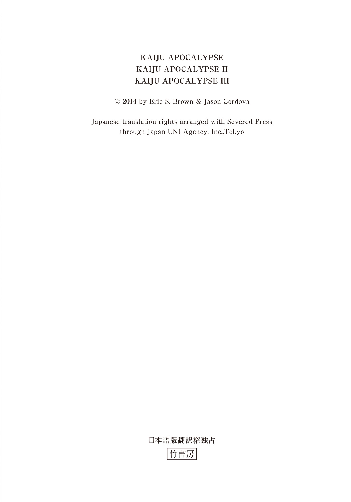
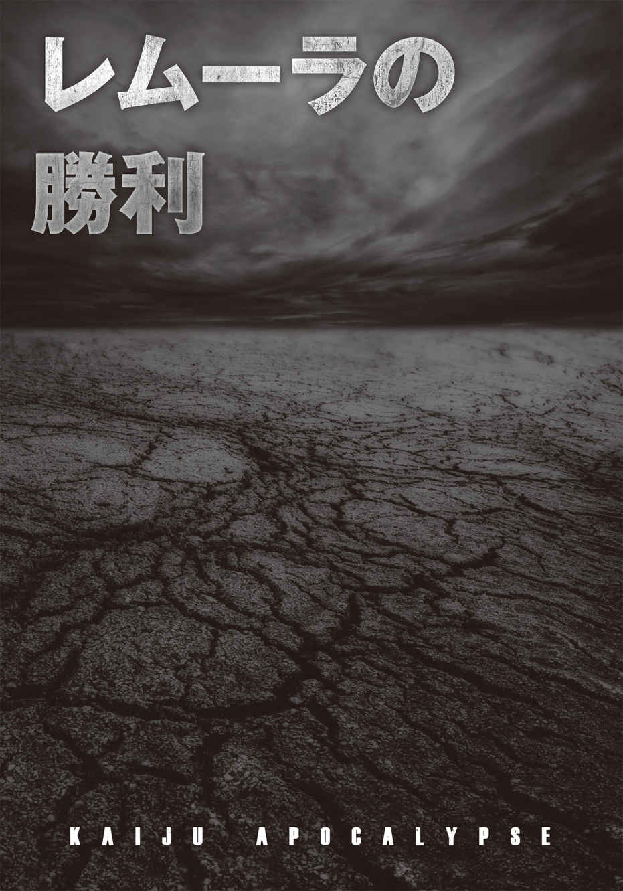
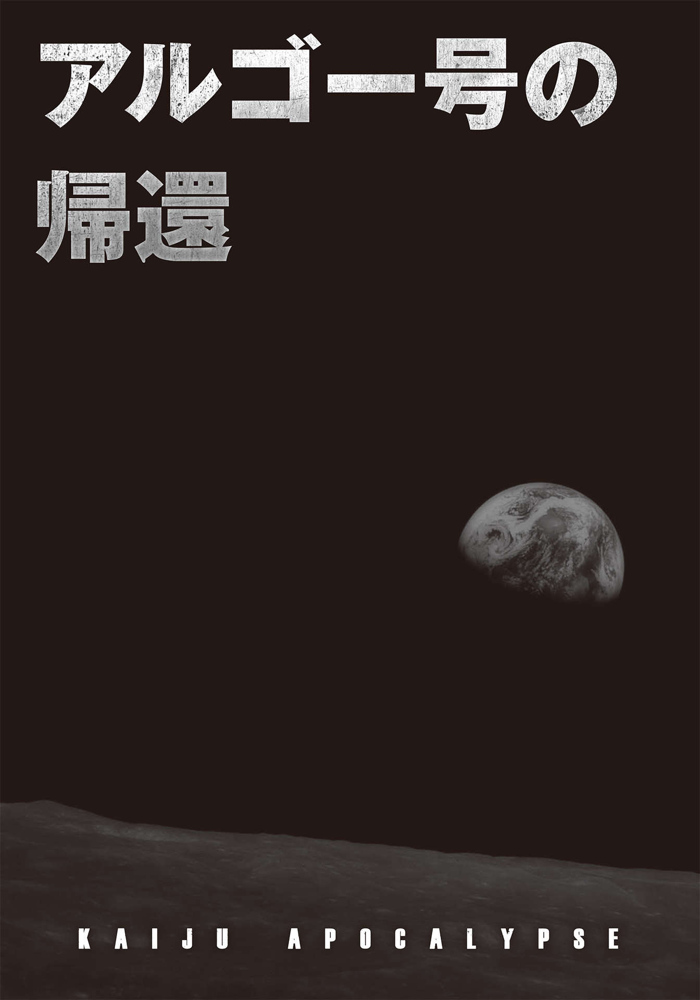
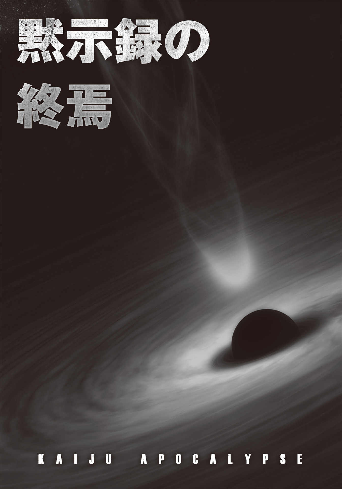

| ＫＡＩＪＵ黙示録 （アポカリプス） (竹書房文庫) | |
| エリック・Ｓ・ブラウン & 他 | |
| 竹書房 (2017) | |
この作品は縦書きでレイアウトされています。
また、ご覧になる機種により、表示の差異が認められることがあります。
一部の漢字が簡略字で表示されていることがあります。

推薦の言葉に代えて
子どもの頃に視た、あるいは、視て育った刺激に満ちたあの体験──。
いまにして思えば、子どもながらにそれなりの欲望を備えていたのか、「もっとああしたらいいのに！」「こうしたらいいのに！」......何度そう思ったことか。
そんな身勝手を忘れることができずに大人になってしまうのは、もちろん私もそうだが、例外なくその〝なれのはて〟、ダメな大人である。
我々は、社会に適応しているふりをしながら、常識人の目を盗んで想像、いや欲望を脳内で迸 らせる。満員電車の車窓を流れる景色に終末を引き連れた巨大な獣や、鋼鉄の体躯から放たれるエネルギーを最高レベルの技術で合成するのだ。
まったくもって愚かだ。つける薬もないから死ぬまで治らない。
口やかましく言い続けられても、当然のことながら無視し続けた親の意見が正しかったことが、いまになってはじめてわかった。
「テレビやマンガばっかり見てるとバカになる」それがいまはっきり自覚できている。しかもそれが、日本に限らず全世界レベルで同時多発的に起きている。（この本を手にとる方々であればご存じかと思うが）Amazon USを見てみれば「KAIJU 」をタイトルに冠した作品、あるいは「怪獣」にオマージュを捧げた作品の多さには驚かされる。なによりも、本作を一読すれば明解だ。
残念ながら治す方法はない。
しかも本人的には存外苦にならない。
ならば躊躇 う理由はない。
全世界の同志よ！
死ぬまでこのバカを続けてやろうではないか！
２０１７年７月13 日現地時間８時46 分、世界最大の怪獣コンベンション「Ｇ－ＦＥＳＴ」に向かい着陸態勢に入る成田発シカゴ行きＪＬ０１０便の機内にて記す。
樋口 真嗣
主な登場人物
ライアン・ウエスト一級特殊技術師......「オーバーマインド」討伐作戦に従事する装甲兵。
キャス・シュミット軍曹......「民衆の復讐者」の二つ名をもつ対怪獣戦のベテラン戦士。
ジェームズ・ソーントン大佐......万能邀撃艇「トライデント」のパイロット。
アンドレ・エリツィン軍事大臣......要塞都市「レムーラ」で怪獣迎撃戦の指揮を執る軍事大臣。
ジャコビー・バッチ博士......怪獣撃滅のために、画期的な発明をする科学者。
ネイサン・ホイットマイア大佐......移民宇宙船「アルゴー号」の船長。
エイプリル・〝キティ〟・ヴェックス......アルゴー号の非戦闘員クルー。センサーの専門家。
デイル・フレッチャー大尉......アルゴー号の工学スタッフ。技術士官。
ジム・マッコイ大尉......惑星移民作戦に従事。地球に帰還した際には、降下作戦の指揮を執る。
ジョニー・インフラント特務曹長......古参の上級下士官。マッコイの右腕。
カーリー......アランティカで生き残っていたラニアー族のリーダー。
ヒギンス......ラニアー一族の戦士。若き指導者となったカーリーを支え続けてきた。
マーティン......怪獣大戦争以前の機械に精通している技術屋。

１
レッド・シヴァ大隊の兵士１５００名は、人類の英知を結集した強化装甲「ドッグ・キラー・アーマー」を装着して、パシフィカ基地を出発した。同時刻に、デス・ウォーカーズ大隊、ピース・メイカーズ大隊も出動。海岸に沿って、大規模な防衛線を展開していく。......数時間前、基地のセンサーが、海岸を目指し海中を進む〝怪獣 〟の群れを探知した。レーダー画面に浮かぶ無数の光点が、かつてない規模の大群であることを示している。やつらの上陸は、絶対に阻止せねばならない。たとえ、いかなる犠牲を払うことになったとしても──。
緊張感と悲壮感がないまぜのまま、兵士たちは迎撃の準備を進める。やがて持ち場につくと、波間に目を走らせた。怪獣たちの進撃を逃れ、人類が内陸へ追いこまれてから、どのくらいの時間が経過したのだろうか？ 皮肉なことに、人が立ち入らなくなった砂浜は海水浴客が残した目障りなゴミもなく、海もまたこのうえなく青かった。
兵士たちは、怪獣たちの出現をいまや遅しと待ち受ける。１秒は１分にも感じられ、１時間にも感じられるようになった。緊張に支配された時間だけがただ過ぎていき、もうすぐ日も暮れようとしていた。ずっと神経を尖らせ続けていた兵士たちのあいだに、焦燥感と苛立ちが広がっていく。
「また、基地のセンサーが誤作動したんじゃねぇのか？」
「さすがの怪獣さまも、俺たちの防衛線に恐れをなしたのさ」
「海風はべとつくし、口のなかは砂だらけだ。早く帰って、シャワーを浴びたいよ」
全員のヘルメットに装着されている小型通信機 から、誰とはなしに呟く声が、あちこちから聞こえてくる。兵士たちの緊張は次第に緩み、レッド・シルヴァ大隊の男女はみな、これは演習だったのではないだろうかと疑いはじめていた。兵士たちは、思い思いに戦闘糧食 を食べ、交代のシフトは乱れた。
そのときだ。凪いでいた海面が盛りあがると、やつらが姿を現した。
膨大な数の怪獣は一気に海岸に上陸すると、浜辺を埋め尽くす。すぐさま１５００名の男女兵士全員が、押し寄せる死の波と化した怪獣どもを阻止すべく立ち向かった。だが、海の深層部から浮上してきた爪 牙 の猛威は想像を絶し、そのパワーは人智を超越していた。生まれながらに身に備わった怒涛の一撃が、兵士たちをなぎ倒していく。
まるで、爪と牙が生み出す憤怒と血の洪水だった。怪獣たちとの戦端が開かれるや、一瞬にしてレッド・シルヴァ大隊の兵士の半数が失われていた。
肉塊と化した仲間たちを目の前に、タンゴ分隊の兵士ヨーグは恐れ、そして絶望した。
「左側面！ 制圧射撃用意!! 」
ホール司令官の叫び声がヘルメットにコムリンクを通して響き、ヨーグは我に返った。目を転じると、数十体の小型怪獣が大隊の左側面へ殺到している。ドッグ・キラー・アーマーに搭載された人工知能 が、腕に装着された「マグ・キャノン」の照準を瞬時にターゲットにあわせる。この巨大な銃は対怪獣戦のために開発された武器で、自動制御システムでアーマーと連動している。その銃弾は、伝説的な「Ｍ２重機関銃 キャリバー50 」が発射する50 口径の12 ・７×99 ミリＮＡＴＯ弾の威力をはるかに凌駕するものだ。１０５ミリ口径の銃弾は、通常時はアーマーの背 嚢 部分にストックされており、攻撃時に腰部弾帯を移動し、キャノンの下部弾倉に１発ずつ装塡される。
特殊なショットシェル弾はコア部分にタングステンが詰めこまれ、外殻がウラニウムでコーティングされている。これが高速回転しながら発射されるため、その威力は50 口径など比べ物にならない。大口径ゆえにマグ・キャノンの弾倉には５発しか装弾できないが、この銃弾はあくまで〝大きな標的〟用のものであって、通常弾ではない。だが、いまは怪獣が相手だ。ヨークは迷うことなくセレクターレバーをフルオートにあわせると、仲間たちを蹂 躙 する小型怪獣に向きなおった。
兵士たちは、この小型怪獣を「ドッグ」と呼んでいた。やつらがはじめて海岸に押し寄せてきたときに、誰かが「犬みたいな面」といってから、この呼び名が定着したのだ。ドッグの身長は２メートル40 センチから70 センチ程度。不格好な体は、頭からつま先まで、濡れた体毛とギラギラ光る鱗の入り交じったものでびっしりと覆われている。
その体型は人間に似ていなくもない。事実、２本の腕があり、二足歩行する。だが、人間との共通点はそれだけだ。正面から見れば犬の顔を肥大化させたように見えるが、その周りには、尖った硬骨と軟骨が突き出している。黄色く光る眼は、クモのような複眼だ。その複数の眼に憤怒の炎を燃えあがらせながら、ドッグたちは悪鬼のごとく吠え声をあげている。咆 哮 は間断ない銃撃音をかき消すかのように響き渡った。兵士たちはひるむことなく、やつらに向けて１０５ミリ口径の特殊銃弾を次々撃ちこんだ。だが、ドッグの体毛と鱗は体表で絡みあっていて、まるで防護服のように衝撃を吸収してしまう。
ドッグの形状は個体ごとに、〝個性〟がある。腕の先に指のようなものがあり、その先端にカミソリのように鋭い鉤 爪 を備えているものもいれば、指自体ないやつもいる。どのドッグにも共通しているのは、その両腕か片腕の先が、甲殻類のハサミのような形になっていることだ。ヨーグはその異形の姿を見るたびに、幼い頃、休日の海辺で父親と一緒に捕まえた小さなカニのことを思い出す。だがそれは、怪獣どもが深海から上陸してきて人類を滅亡寸前にまで追いやる以前の思い出だ。いまや怪獣がイナゴのように地球上を覆い尽くし、目の前にあるすべてのものを貪り食ってしまった。
ヨーグは感傷を頭の隅に追いやると、マグ・キャノンの銃口を大隊の左側面に向け、怪獣たちに死の銃撃を浴びせた。銃弾は体重の軽いドッグたちの体を引き千切り、肉片と血が砂の上に飛び散った。明るいオレンジ色の血液は強酸性で、飛沫を浴びた砂が溶ける。砂からは小さな煙があがり、海岸の大気を濁らせた。ドッグたちは仲間が倒されても少しもひるむ様子もなく、次々と襲いかかってくる。やつらには〝仲間意識〟というものがないのかもしれない。いずれにしても、怪獣の数はあまりにも多く、対する兵士の数は少なく、武器も脆 弱 すぎた。だが、パシフィカ基地に装備された高性能の兵器群ならば、この大群を食い止めることができるに違いない。
ヨーグがパシフィカ基地のほうを振り返るのと同時に、夜空に黄色と赤の閃光が走る。主砲が発射されたのだ。強力な熱線が海岸にいる怪獣の大群の中心部に轟音とともに炸裂した。ヨーグは遮光フィルターのかかったバイザーを通して、ビームが海面をその高熱で抉 り、怪獣どもの上陸地点をなぎ払う様を見守った。その輝きは強烈で、バイザーを通さずに見たら、視神経は致命的なダメージを受けてしまうだろう。この一撃で数千体のドッグを葬ったが、彼らはなおも上陸を続け、海岸に蠢 くその数は減る様子がない。
基地に備えられた高性能の主砲ですら、この状況を変えることはできなかったのだ。
パシフィカ基地は、現在の地球上で最強の戦力を有する要塞だ。そして、おそらく人類に残された文字通り〝最後の砦〟でもあった。もし、この基地が陥落すれば、中央都市・レムーラが人類に残された最後の拠点になってしまう。すでに錆びた古いバケツのような外観をさらしていたとしても、レムーラは紛うことなき全人類の首都である。
ヨーグは死にたくなかった。戦場には、すでに見知った戦友はいない。戦っていても、絶望しか感じない。怒鳴りつけるように、コムリンクに向かって叫ぶ。
「こちらタンゴ分隊タンゴ６、これから退却する！ 繰り返す、退却する！ 以上！」
「タンゴ６、こちら、レッド・シヴァ大隊司令だ」
コムリンクからホール司令の声が聞こえてくる。
「その場を離れるな！ 海岸を死守せよ！」
「不可能です、ホール司令！」
通信に気を取られながらも、ヨーグはドッグの突進を辛うじてかわした。さらに怒れるドッグの頭蓋に４発の弾丸を撃ちこみ、すれ違いざまに、その胴体へさらに５発目を叩きこんだ。視界の片隅に、前方にいたアーマー兵士が向かってくるドッグの１体をアメフトボールのように蹴りつけている姿が映る。だが、その一撃は続くドッグの大群をさらに怒り狂わせるだけだった。ヨーグはクラスター爆弾で一群を殲 滅 したが、怪獣の波に押し潰された兵士を救うことはできなかった。
「海岸の防衛線は敵に奪われました！ 前衛基地デルタまで撤退します！ 以上！」
マグ・キャノンを斉射しながら退却するヨーグの場所から、強化装甲兵８人が走っていく姿が見えた。金属製のアーマーが、砂浜に深い足跡を残していく。彼らも生き残るには、まずはデルタ基地まで戻るしかないと考えているのだ。そうすれば、レムーラからの精鋭部隊が到着するまでなんとか踏みとどまって、怪獣たちからパシフィカ基地を守ることができるかもしれない。それに、このまま海岸で撤退命令が下されるのを待っていても、その前にパシフィカ基地自体が陥落してしまうかもしれないのだ。
ヨーグだけではない。タンゴ分隊そのものが撤退しつつあった。海岸の兵士たちはみな、小さなグループに分断されてしまい、いまや誰もが、海岸を守ることよりも生き延びることだけを考えていた。先頭をいくタンゴ３が退路を塞ぐドッグたちの群れに立ち向かい、タンゴ２、タンゴ４がそれに続いた。３人は四方を小型怪獣に包囲されていたが、交戦しながら少しずつ前進していく。ドッグたちの群れは見渡す限り続いていて、まるで終わりがないように見えた。
そのとき、後方にいたタンゴ分隊の右翼から新手の一群が出現する。ドッグの鉤爪が唸りをあげながら、虚をつかれたタンゴ５の頭部を引っ搔いた 。タンゴ５のヘルメットが破損し、スパークする。その一撃で頸 椎 をやられたのか、彼の身体はくるりと回転するとそのまま地面に崩れ落ちた。ヨーグはすぐさま小型怪獣の頭部に向けて銃弾を浴びせる。１０５ミリ口径の銃弾が貫通したドッグの頭は熟れすぎたメロンのように砕け、大きな骨の塊とオレンジ色の血飛沫がタンゴ５に降り注いだが、彼は倒れたままで動くことはなかった。ヨーグは、さらに分隊の後方から迫るドッグどもの大群に向けてマグ・キャノンを連射したが、それで追撃の手がゆるむことはない。
分隊から少し離れた位置で、タンゴ２とタンゴ４は、怪獣に囲まれながらも、迫る群れの最前列の化け物どもにマグ・キャノンの銃弾を浴びせかけた。数十体が倒れて、千切れた胴体から内臓がこぼれ落ちる。だが、その屍 を乗り越えて、小型怪物たちは途切れることなく押し寄せてくる。刹那、タンゴ２とタンゴ４は地面になぎ倒されると、次の瞬間には、怪獣たちの大群に踏み潰されて見えなくなった。それを見たヨーグは、すぐさまコムリンクのスイッチをオフにした。そうすれば、怪獣たちの鋭い爪で戦闘スーツを剝ぎ取られ、四肢を切断されながらあげる彼らの断末魔の悲鳴を聞かずにすむ。やつらにはおそらく知性も、そして感情もない。人類という獲物に対する渇望と、生来の凶暴さだけで動いているのだ。
気がつけばタンゴ７、８の姿も混乱のなかに消えてしまっていた。彼らの身になにが起きたのか、想像するまでもないだろう。だがいまは、目の前にしたふたりの死に様で頭がいっぱいだった。だが、タンゴ３はまだ前方で健在だった。彼は怪獣のあいだをかき分けて、前衛基地デルタに向かっているのだ。ヨーグはタンゴ３に追いつこうと走るスピードをあげた。強化装甲の脚部サーボモーターの出力が増加され、作動音が大きくなる。必死の思いで、ふたりは前衛基地のすぐ近くまでたどり着いた。その先にはパシフィカがある。あと少しだ。パシフィカには堅牢な防護壁もある。一度、なかにはいってしまえば一息つける。そこで怪獣たちの攻撃をしのぎながら、あとはレムーラからの救援を待てばいい。
ヨーグが安堵しかけたそのとき、雷鳴を凌駕する咆哮が闇を切り裂いた。海が泡立ち、蒸気が吹きあがる。やがて海から姿を現したのは、「怪獣母艦 」と呼ばれるさらに巨大な怪獣だった。立ちあがった姿は少なくとも80 メートルはあるだろう。背中には触手が何本も生えている。背骨の両側からは鋸 状の骨が突き出している。咆哮がやむと、マザーはゆっくりと海岸に向かって進撃を開始した。
ヨーグはそびえ立つ巨体を呆然と見あげるしかなかった。マザーの咆哮は、大地を震わせ、口から突き出た巨大な牙の前では、ドッグ・キラー・アーマーもひとたまりもないだろう。両手の四本の指先には、突き刺し、引き裂くのに最適な形状をした細長い鉤爪が生えている。その脚が重い一歩を踏み出すたびに、ヨーグの足元の地面は揺れ、海岸に大小の波が押し寄せた。マザーが進むその先にあるのは、パシフィカ基地だ。
基地では主砲のエネルギー充塡が急ピッチで進められ、マザー迎撃に備えた。轟 然 一発、発射されたエネルギー・ビームが闇を裂き、光の刃が怪獣の胸部に命中する。肉片が飛び散り、さしものマザーも歩みを止め、その痛みに叫び声をあげた。その絶叫がヨーグのヘルメットに備えられた防音装置を破壊する。耳に激痛が走り、気づくと耳孔からの出血が首を伝って流れ落ちていた。ひどい吐き気がヨーグを襲う。おそらく鼓膜が破れてしまったのだろう。
手負いのマザーは後ろ足で立ちあがると、パシフィカ基地めがけて突進する。怒りに燃えたぎる黄色い眼が夜空に光り、一歩ごとに進撃の速度を増していく。このままマザーが進んでいけば、仮に途中で息絶えたとしても、その勢いで巨体は基地に到達してしまうだろう。ヨーグがそう思った次の瞬間、マザーは基地に激突。その鋭い爪で防護壁をまるで紙のように引き裂いてしまう。さらに巨大な拳で基地の構造物を倒壊させると、何本もの触手が破壊に拍車をかけた。ヨーグが生き延びるための最後の希望であったパシフィカ基地は、マザーの巨体に粉々に踏み潰され、崩壊してしまった。
「やめろぉぉぉッ！」
ヨーグは走りながら絶叫したが、彼にできることはなにもない。そればかりか、マザーが引き起こした惨劇に気をとられているうちに、ドッグたちの接近を許してしまっていた。ヨーグはマグ・キャノンをシングル・ショットに設定すると、大口径を近くにいた怪獣に向けて見舞った。弾は命中し、ドッグは赤い霧と化す。だが、彼に二発目を撃つ時間は残されていなかった。近くにいた小型怪獣の甲殻類のようなハサミが、強化装甲の上から彼の喉を突き刺し、力任せに切り裂いたのだ。そのあとも彼の脳は機能し続け、自分の切断された頭部が砂浜の上でバウンドするのを感じていた。
やがて脳死とともに永遠の暗闇が広がった。
２
パシフィカ基地、陥落──。
この一報は、レムーラのピエトロ・ランスタム知事に肺 腑 を抉るような衝撃を与えた。報告書を机の上に置くと、彼は深々と椅子に腰を下ろした。そして背もたれに身体に預けたままの姿勢で、力なく頭を左右に振った。その姿を見つめる軍事大臣アンドレ・エリツィンの目には、知事が自分の死期を悟った男のように見えた。パシフィカ基地が失われた以上、レムーラ基地はこの世界──「ユナイテッド・ワールド」に残された唯一の軍事施設となってしまったのだ。怪獣たちの次なる目標がこの基地であることは火を見るよりも明らかだ。やつらが、知性をもたない獣だったとしても、この基地が排除すべき脅威であることは理解しているにちがいない。それ以前に、人類そのものが地上から抹殺すべき存在であると認識しているはずだ。おそらく、はじめから。
10 年前──。
何の前触れもなく、南大西洋と北太平洋の気候が激変した。暴風雨が襲来して土地を押し縮め、１ヵ月以上も降り続く雨が作物を水浸しにして、地形すら変えてしまった。世界中の海岸地帯は寸断され、残された大地に人類はひしめきあった。だが、そのわずかに残された大地も海波に侵食され、地滑りが起き、さらに狭くなっていった。
アメリカ合衆国の西海岸地域、というよりロッキー山脈から西側は、コロラド川のミード湖周辺まで海水で満たされてしまった。ラテン・アメリカも水没して姿を消した。大アマゾンの濁流が大陸のほとんどを呑みこみ、いまではアンデスの山々の頂がわずかに残るだけだ。イギリスを構成する４つの国のほとんどもテムズ川と大西洋に覆われてしまい、スコットランドの山頂のいくつかが海面に顔を出しているに過ぎない。フランス、マレーシア、中国、日本......世界中で海面が上昇し、数百万、数千万人の命が失われた。
その後、怪獣を狙った核ミサイルによってインドとパキスタンが壊滅。一時は忘れられた国であったチベットが、大洪水後の〝希望の地〟となる。標高３８００メートルに位置する秘境が、怪獣から逃げる人々が目指す聖地 となったのだ。だがそれも、２体のマザーが出現するまでのことだった。ともに80 メートルを超える巨獣は、大海から出現するや、巨大な脚でチベット全土を踏み潰してしまったのだ。だが、人類に課せられた苦役は、それで終わりではなかった。怪獣が現れたのだ。
最初に出現したのは、のちにマザーと呼ばれるようになる身長80 メートルもの巨大な怪獣だった。そいつはアメリカ合衆国の海岸に海底から姿を現すや、核兵器で倒されるまでのあいだに、沿岸にある都市をいくつも破壊した。そして、それから１ヵ月もしないうちに同様の怪獣が一度に５体も襲来し、人々は次第に内陸部へと追い立てられていった。
その頃はまだ、人々は怪獣の襲撃から生き延びられると信じこんでいた。人類が誇る兵器群の威力を過信していた。いずれは、海も怪獣たちから奪還できるとすら思っていたのだ。状況は悪化する一方だったが、人間というのはタフな生き物だ。戦争となるやビーム兵器、強化装甲、アンテリウム粒子など、強力な新兵器を次々と生み出していった。それに怪獣たちは、なぜかはわからないが、海から遠く離れた内陸部までは侵攻してこなかった。海岸線から８キロ以上離れていれば、そこは安全圏だった。怪獣との戦闘が途切れることはなかったが、各国の政府も辛うじて機能することができた。
地球のほとんどの大陸を呑みこんだ大洪水、それが怪獣の仕業なのか、それとも人間が地球に及ぼし続けてきた悪影響によるものなのかはわからない。もしかしたら、大洪水以前から地球の大部分を覆っていた海は、すでに怪獣のものだったのかもしれない。だとしても、怪獣たちはなぜ、いまになって地上に進軍をはじめたのだろうか？ それは、誰にもわからない。いずれにしても、およそ国土とは呼べない島々で人類は生き延びるしかなかった。人類の総人口の半数以上が失われたが、生き残った者たちは戦い続けた。
そして、合衆国すなわちユナイテッド・ステイツが「ユナイテッド・ワールド」と呼ばれるようになった頃、人類は互いの主権を主張することも、滅亡について議論することをやめた。地球上に残されたすべての島々が一致団結したのだ。これは、怪獣がもたらした唯一の、そして最良かつ輝かしい成果といえるかもしれない。はたして、世界各地に最新兵器を備えた基地が建設されていく。パシフィカ基地、アランティカ基地、ノル＝ウィック基地、アトランティカ基地、そしてレムーラ基地だ。
終わりの見えない暗黒の日々が続くなか、人口の減少に反して、その技術は飛躍的に進歩した。核兵器に代わって、強力無比のビームを放つエネルギー兵器も登場した。このビーム兵器はしばらくの間、対マザー戦でもっとも殺傷力の高い武器となり、その襲撃から基地を守った。人類は、安堵のため息を漏らした。
だが、戦況は再び一変した。
より小型の怪獣たち、ドッグが出現するようになったのだ。彼らは戦場で歩兵のような役割をはたしたが、やっかいなことに、その数には限りがなかった。無数のドッグたちは津波のように襲いかかり、まさに押し流すように基地を破壊していった。最初にアランティカ基地が壊滅。それから数ヵ月のあいだに、ドミノ倒しのように次々と基地が陥落していった。怪獣たちの波を押しとどめるには、技術の粋を結集したエネルギー兵器でも、強化装甲ドッグ・キラー・アーマーですら十分ではなかった。
そしていまや、人類に残された砦はレムーラ基地だけであった。
レムーラ基地は、最盛期にはユナイテッド・ワールドの全軍を統率していた。大洪水がやってきて、世界の大陸が大洋に点在する小さな島々に変貌してしまったあと、この基地は人類の中心都市であり続けた。だが、人口は数千人から数百人規模に減り、２兵団あった常駐軍もいまは見る影もない。ランスタム知事の前任者が、怪獣に対する戦略を誤ったのだ。だが、たとえ荒廃し古びて錆びつき、いつ壊れてもおかしくない状態であっても、この基地が地球人類の希望を繫ぐ、最後の砦であることに変わりはない。
「知事、我々は対策を講じなくてはなりません」
エリツィン軍事大臣は、沈黙を続けるランスタム知事にたまりかねて口を開いた。
「いったい、なにができるというんだ？」
知事は椅子に座ったまま、ほとんど呟くような声で尋ねた。
パシフィカ基地は、強固な要塞でもあり、ドッグ・キラー大隊を３隊も有していた。多数のエネルギー兵器も装備していたはずだ。そんなパシフィカ基地が全滅したのだ。レムーラ基地がこれからやってくる〝嵐〟に打ち勝つチャンスなど、残されていないに等しい。
「私はなにもせず、ただ死ぬのを待ちたくはありません」
エリツィンは続けた。
「これまで我々は敵の攻撃に対して防御に徹してきました。ですが、打って出るときかもしれません」
ランスタムは軍事大臣の進言を聞いて、弾かれたように大声で笑いはじめた。エリツィンは、知事への敬意からなんとかその嘲笑に耐え続けた。軍事大臣はこの知事をあまり好きではなかったが、彼がこれまで職務をはたしてきたことは認めていた。
ようやく笑いがおさまると、知事は話しはじめた。
「君は、レムーラ基地の戦力すべてを怪獣への攻撃に回せというのかね？ レムーラの住民たちが、防御の手段もなく、怪獣がやってくるのを待つだけの状態になってもかまわないというのか？」
大臣は白髪交じりの頭を振る。
「いいえ、知事。そのようなことは申しません」
「それは良かった。君は私の答えを、すでに知っているだろう？ どう答えなければならないかも」
「レムーラの戦力の〝すべて〟とは申しません、知事。『オーバーマインド』を急襲するための兵士数名でいいのです」
知事は瞬きし、訝 しむような表情で大臣を見つめた。ランスタムの深く青い目は、明らかに大臣の正気を疑っている。
「なにを言い出すかと思えば、オーバーマインドだと!? あれはただの〝神話〟だ。研究室に篭 った何人かの科学者が考えた仮説に過ぎない。怪獣たちをコントロールしているオーバーマインドというものが存在するのではないか、怪獣の進撃を止める魔法の銃弾が存在するのではないか、とな。だが、この仮説はひとつとして立証されてはいない。私だってこの仮説に関するすべての資料は読んでいる。間違いない、あの仮説は神話だ」
「私は、真実だと考えています」
エリツィン軍事大臣は、しばし間をおいて続ける。
「バッチ博士のオーバーマインド理論についての論文をご覧になりましたか？ 彼の理論には裏づけがあります。彼の導き出した結論は、我々が怪獣について知っている全事実と合致します」
知事は肩をすくめる。
「もちろん知っているさ。このレムーラで、私の知らないことなどないのだよ、大臣」
「ですが、知事。バッチ博士の研究によれば、戦闘時のドッグたちからはある種のエネルギー波が発せられているのが探知されています。この波動をたどれば、その源泉 に到達できると博士は結論づけています」
「そして君は、その源泉を破壊すれば、怪獣たちの攻撃がやむというのか......」
知事の言葉は、質問ではなかった。
「蛇の頭を叩き切れば......」エリツィンが言葉を続けようとするのを、ランスタムが遮った。
「いいたいことはわかるよ、エリツィン。君はこの戦争を終結させる奇跡を探し、その答えをバッチ博士の論文のなかに見つけたんだ。だが、私は現実主義者だ。しかも私には、レムーラの住民たちの安全を守る責任がある。我々が生きている限り、この責任は続く。この責任は、いまやこれまで以上に重くなっている。もしもこのレムーラが全滅したら、人類には小さな集落しか残らなくなってしまうんだ。そんなことは許されない、絶対にな」
「わかっています。しかし、もし博士の理論が正しければ......」
エリツィンが間をおくと、知事が話を続けた。
「もし正しければ......一撃でこの戦争を終結させられるというんだな。......わかった。君の計画と、そのために必要なものを聞かせてくれ。君の要望を検討してみよう」
ランスタムの眼差しには、もはや疑念を挟む気色はなかった。
３
一級特殊技術師のライアン・ウエストは食堂のテーブルに座り、皿の上にころがる灰色と白が混ざった塊をグレーの瞳で睨みつけていた。どうやら、こいつはポテトらしい。こいつがでてきたのは、グリーンのスープのようなもののあとだったから、給仕係はメインディッシュのつもりなのだろう。彼はフォークを取りあげて、その正体を探るように突いてみた。
「おい、ウエスト！ それ、食わないのか？」テーブルの向かい側から、パリス軍曹が声をかけてきた。
相変わらずデカい声だ。彼は身体もデカく、やることなすこと大事にしてしまう。会話も、食事も、殺 戮 も。正直にいえば、ウエストは彼が苦手だった。だが、戦闘時には頼もしい存在になるので、その不快な態度にも耐えられた。パリスは骨格も筋肉もケタ外れで、彼のドッグ・キラー・アーマーは、体格に合わせて特別の調整が施されているほどだ。そんなパリスがウエストを睨みつけるようにして、彼の返事を待っている。
彼らの食事のほとんどは、魚類や海藻類に限られている。しかも、その量は日増しに少なくなっている。幸か不幸か、ウエストは魚を食べることができなかった。その匂いが、どうしても怪獣どもを思い出させるからだ。洗浄中のドッグ・キラー・アーマーから流れてくる空気ですら、やつらの悪臭を思い出させた。しかし、彼の食欲がないのは、本当は怪獣の悪臭のせいでもなく、ポテト風のなにかや、スープ状のなにかのせいでもなかった。ウエストは、出撃前にはいつも神経質になるのだ。もしこのポテトまがいを食べでもしたら、戦闘中に吐いて、アーマーの内部をゲロまみれにしてしまうだろう。彼は一瞬だけ迷ったが、自分の皿をパリスの前に押しやった。
「食べていいよ」
パリスは嬉々として皿を引き寄せると、ガツガツと食べはじめた。
「お前、怖いんだろ？」
口に食べ物をいっぱい頰張ったまま喋るので、パリスの口の端からはポテトのようなものがこぼれでている。
「君こそ怖くないのかい？ ２週間前にパシフィカ基地が壊滅したことは、もはや秘密でも何でもない。ワールド・ネットで流れていたからね」
「レムーラは、パシフィカとはちがうぜ。怪獣どもはいままでこの基地の防護壁を越えられたことがないんだぜ。これからだってないさ」
「そいつに何の意味がある？ 僕たちは基地の外にでて、怪獣どもに向かっていくんだ。僕たちを守る壁なんかないんだぜ」
「どこのどいつがそんなことをいったんだ？」
パリスは、ウエストの言葉に明らかに驚いているようだ。ウエストはニヤリと笑った。
「後方支援部隊に友達がいるんだ。そこに回ってきた支援物資のリストによると、今度の出動は、いつものようなパトロールや防衛任務じゃないらしいよ」
「ふ～ん、お友達 ねぇ」
パリスは、いかにも嫌な口調で嘲った。彼のこういうところも、ウエストが苦手とするところだ。
「赤毛の可愛い子じゃねえのか？ 一緒にいるところを見たことがあるぜ」
ウエストは顔を赤くしながらも、パリスの茶々を無視して話を続けた。
「パシフィカ基地の救援に向かうんじゃないのかな。だとしたら、兵士のなかでも精鋭を集めるんだと思う。僕の推測だけどね」
「どこに出動するかなんて、関係ないさ。怪獣がやってきたら、殺す。次のやつが現れたた、また殺す。それだけだ」
「ああ......その通りだね」
ウエストは答えながら、パリスに自分の推測なんて話すべきではなかったと思った。この大男は、自分とは物の見方がまったくちがう。彼にとって、出撃はただ相手を殺すことなのだ。
「じゃあ、またあとでな」
ウエストはテーブルを離れて兵舎に向かった。自分の部隊が出動するまでには、まだ２時間ほどある。少し寝ておくのも悪くない。
＊ ＊ ＊
ウエストたちの分隊は、駐機場に〝休め〟の姿勢で立っていた。ほかにも３つの分隊が同様に整列している。だが、ここからどこに向かうのかは、誰ひとり知らされていなかった。命じられていたことはただひとつ、アーマーを着用しない で待機すること。ウエストは、この命令を聞いて動揺していた。強化装甲を身につけないなんて、裸で戦場にでるようなものだ。どこに向かうにしたって、ドッグ・キラー・アーマーは不可欠なはずなのに......。
「気をつけ！」
ふいに号令がかかり、ウエストは我に返る。駐機場にエリツィン軍事大臣がやってくるのが見えた。ウエストをはじめその場にいた男女の兵士全員が姿勢を正し、注目した。
（いったい全体こいつはどういうことなんだ？）ウエストはますます混乱した。
エリツィン軍事大臣といえば、レムーラの最高権力者のひとりだ。その彼が直接、兵士たちの前にやってくるなんて聞いたことがない。なにが起きているにしても、あるいはこれから起こるにしても、どちらにせよ良い話ではないはずだ。
エリツィンは、兵士たちの列のあいだを歩きながら、つぶさに装備を点検していく。彼の表情は、レートの低いゲームで、最後の賭け金を積もうとしている男のようだった。彼は兵士の列を最後まで見届けると、そのまま中央まで戻って全員と向かい合った。
「休め！」
先ほどと同じ声が響き、ウエストは少しだけ緊張を緩めた。右足を一歩横にだし、両手を後ろに組む。彼がエリツィンのほうに視線をやるのと同時に、大臣が話しはじめた。
「君たちは、自分たちの任務が何なのだろうと訝しんでいることだろう」
大臣の声が、周囲にめぐらされた金属の壁にこだまする。
「できるだけシンプルに伝えよう。１時間以内に、諸君はこのレムーラ基地を出発する。目的地はパシフィカではない。そう思っている者もいるようだが......、君たちには『トライデント』２機に乗りこんでもらう──」
それを聞いてウエストは思わず、口笛を吹きそうになった。空海両用の万能邀 撃 艇 トライデント。当初はマザーの上陸阻止のために開発された迎撃機だが、ユナイテッド・ワールド連合軍で最高の速度と戦闘能力を有する機体性能の高さから、あらゆる局面で怪獣を攻撃する汎用航空兵器として運用されている。この邀撃艇は、水中も潜行可能で、空からと同様、海中からも怪獣を攻撃することができた。旧世界で長期運用された「Ｆ－16 」戦闘機のように、武装の拡張性が高く、多数の爆弾が搭載可能だったことも、この機体の美点である。だが、製造コストまでは同じようにはいかず、この特殊な機体の製造には多額の費用がかかるのだ。一方、怪獣との戦いが激しくなるにつれて、前線からは空や海で運用する兵器よりも、地上戦で使用する都市防衛兵器が必要とされた。こうしたことから、トライデントは実質的に製造中止となり、各基地に配備されている機体が状況に応じて運用されるにとどまっていた。
そしていま、パフィシカ基地が失われてしまった以上、レムーラ基地に配備されている６機が地球上に残った最後のトライデントといえるだろう。だが、これらの機体はレムーラの有事において、高官たちが脱出用に使うものだと思われていた。そのうちの２機を運用する作戦だということは、よほど重要な目的があるにちがいない。
「君たちには申し訳ないが、現時点で、ターゲットの位置の詳細は判明していない」
兵士たちにざわめきが起こる。エリツィン大臣は想定内とばかりに、説明を続けた。
「ターゲットは生命体だ。そして、我々の推論が正しければ、人類対怪獣の戦争で、もっとも重要なターゲットとなるはずだ。そいつは何者か？ オーバーマインド──すべての怪獣たちをコントロールしている知的生命体だ」
エリツィンは、兵士たち全員が自分の言葉の意味を咀 嚼 するのを待った。そして、しばらく兵士たち全員の顔を見回したあと、話を続けた。
「オーバーマインド理論の専門家ジャコビー・バッチ博士が、この作戦に参加する。博士は、オーバーマインドの位置を探知する技術を開発した。諸君のミッションは、オーバーマインドを確実に仕留めることだ。どんな手段を使っても、やり遂げてもらいたい」
ウエストは科学者ではなかったが、オーバーマインド理論は知っていた。人類はまだ、オーバーマインドのような存在には遭遇したことがない。〝それ〟は精神感応 を用いて、全怪獣たちをミツバチの集団のように動かしていると考えられる存在だ。だが、博士の説を証明する事象は、なにひとつなかったはずだ。
おそらく大臣と知事は、賭けにでたのだ。オーバーマインドを倒せば、怪獣の侵攻が止む。もしくは、それぞれの怪獣たちが現在のような集団行動をやめて、目的なく動くだけの存在になるのではないか。そう考えたにちがいない。
確かに大臣たちが正しければ、人類は怪獣に勝利できる。しかし、もしもそんなやつが本当に存在するというなら、怪獣たちは〝それ〟を必死に守っているはずだろう。どれだけの大群が待ち受けているかなんて、想像したくもなかった。
「この作戦には、通常のドッグ・キラー・アーマーは使用しない」
大臣がそういうと、彼の後ろの壁が大きく開いた。そこにあったのは、ウエストが見たこともない、新型のアーマーだった。全部で24 体ある。基本的な形状はドッグ・キラーだが、より大きく、多数の武器が追加装備されている。ボディカラーはつや消しの黒で、周囲の照明を吸収しているように見えた。アーマーの内部にはコンピュータおたくが歓喜するような機能が満載されているにちがいない。そう想像するだけで、ウエストはすぐにでもこのアーマーを試してみたくなった。
「諸君、紹介しよう。ドッグ・キラー・アーマーマークⅡだ。装着者とアーマーを繫ぐ神経接合用インターフェイスの処理速度もこれまでの２倍。装甲の素材は実験段階の合金、ザントラニウムだ。この合金は、怪獣の血液中の酸にも腐食されない。また、これまで製造されてきたなかでも、もっとも熱に強い金属だ。アーマーの基本兵装であるマグ・キャノンも、アップグレードされている。新型キャノンは１０５ミリ口径だが、マークⅡアーマー専用に開発されたもので威力は倍増している。薬室にはそれぞれ５発の弾丸が装塡可能だ。強度も格段に向上しているが、機体バランスも改良されているので、対戦時における装備の増加も問題ない。むしろ動作性能は向上していて、走行速度はこれまでで最速だ。短距離なら、システムを冷却する必要はなく、時速１００キロで移動できる。時速65 キロなら燃料の続く限り速度を維持できるだろう」
ウエストは、マークⅡアーマーを畏怖の念とともに見つめた。エリツィン大臣のいっていることが事実であれば、このアーマーは攻撃力も機動性も、まさに兵士たちの夢を実現したものだ。
「アーマーのインターフェイスはほぼすべてマークⅠと同じなので、操作性に関しては問題ないはずだ。もちろんいくつか新しい機能もあるが、それに習熟してもらう時間はない。使いながら学んでもらうしかないだろう。しかし、私は君たちなら対応できると信じている。そうでなければ、この場にいるはずがないからな。君たちはレムーラ基地の精鋭たちだ。作戦は成功するものと信じている。諸君！ もし諸君たちが失敗したら、レムーラは陥落する」
そういうと、エリツィンは静かに目をつぶった。静寂のなか、ウエストたち兵士は、その言葉の意味を嚙みしめた。
「幸運を祈る。主よ、我らに恵みを垂れたまえ」
エリツィンは兵士一人ひとりの顔を見回したあと、演説を終えた。
「気をつけ！」
ウエストは、興奮して号令に従った。血液のなかを決意がみなぎる。ドッグ・キラーを装着して戦う兵士たちはみな、長いあいだ、このときを待っていた。新型アーマーでの攻撃は、怪獣どもに決定的な打撃を与えるだろう。ようやく、ここ数年の戦いで失ってきた仲間たちや愛する家族たちの復讐ができる。いまが、そのときだ。ウエストは出撃が待ちきれなかった。
「解散して、アーマーを装着せよ！ 分隊のリーダーは、隊員を０８００に発着場ベイ４に集合させよ！」
解散の声がかかると、兵士たちはすぐにアーマーを装着しはじめた。その喧噪のなか、ウエストはキャス・シュミットが別の分隊の隊員たちと一緒にいるのを見かけた。彼は、彼女の制服の袖に分隊長の階級章があるのを見て、我が目を疑った。
最後にキャスと話をしてから、どれくらい経つだろう。ふたりが別れてから、ウエストは彼女に幅広の寝台を贈った。そう、ふたりが一緒に寝られるようなヤツだ。やがて彼女の機嫌がなおり、また以前のような友達に、いやそれ以上の関係になれるようにと祈りながら。けれども、いまはまだ彼が望むような関係になってはいない。もしかしたら、ふたりの関係はずっとこのままで、永遠に交じわり合うことはないのかもしれないとウエストは諦めかけていた。
キャス・シュミットのアルファ分隊が搭乗するトライデントは、ウエストの所属するガンマ分隊、それにゼータ分隊とは別の艇だった。ウエストは内心ほっとしていた。もちろん、彼女はプロの兵士だ。彼が彼女にどんな感情を抱いていても、彼女が彼とのことをどんなふうに考えているにしても、それが任務に影響することがないのはわかっている。しかし、自分たちがどこに向かうにしても、全部隊が合流することになれば、彼女の目から隠れることはできないだろう。そのとき自分はどんな顔をすればいいのか......。そんなことを考えながら、ウエストは新しいアーマーを身につけていた。
＊ ＊ ＊
キャス・シュミット軍曹は、新しいマークⅡアーマーを身につけて、操作テストをしていた。自動制御の分厚い強化装甲の左手で、握りこぶしを作ってはまた開く。そうすることによって彼女の神経の反応を、アーマーの動きと同期させているのだ。シュミットは、彼女と一緒にこの任務に選ばれたほかの兵士たち同様に、対怪獣戦のベテランだった。彼女はまだ22 歳だったが、この４年のあいだ、怪獣との戦いの最前線でアーマーを装着して過ごしてきたのだ。シュミット軍曹が倒した敵の数は彼女ひとりで戦術核攻撃に匹敵するほどの、驚異的なものだった。
かつてドイツ連邦共和国は、近隣諸国同様に跡形もなくなってしまう以前、バルト海から上陸してくる怪獣に対して、遺伝子操作された兵士で対抗しようとしたという噂が流れたことがあった。そんな噂のせいもあって、「シュミット軍曹は人間じゃないんじゃないか？」とささやく者もいる。事実、戦場での彼女は、まさに死の兵器。優れた戦闘技術をもち、俊敏かつ優雅に戦場を駆け巡った。いつの頃からか、シュミットには「民衆の復讐者」というあだ名がついていた。
だが、現実のシュミットは〝強化人間〟などではないただの人間で、ひとりの女でもあった。その証拠に、選ばれた24 人の兵士のなかにライアン・ウエストの姿があるのをすぐに見つけたとき、彼女は内臓がねじれて冷たくなったような気がした。彼との関係は、兵士たちがよく戦闘と戦闘のあいだを埋めるためにするような、仮初めの仲だったかもしれない。それでも、ウエストに対して、自分は心を開いていたような気がする。あの技術兵はベッドのなかでは淡白だったが、ほかの男にはない魅力があった。彼は、子どものように素直に驚いたり興奮したりする。怪獣との戦争によって暗黒と恐怖に沈んでいく世界のなかでも、なにか美しいものを見つけようとしていた。彼はそう見えないように振る舞っていたが、根っからのロマンチストだった。その純粋さは彼女にも伝染していた。
彼女は、もし自分がもう少し情熱的に彼を追い求めていれば、ふたりの関係はこれまでの関係とは、もっと別のものに発展したかもしれない......そう思うことが幾度となくあった。だが、シュミットの思いとは無関係に戦端は開かれ、そのたびに彼女は頭のなかからウエストのことを追い払わなければならなかった。そうしているうちに、ドッグ怪獣がガンマ分隊の技術者を細切れにしてしまい、ウエストはその補充要員として転属していった。
もちろん、シュミットほどの兵士であれば、彼と同じ分隊への転属願いを聞き入れてもらうことはできた。だが、このままアルファ分隊に留まれば、次期軍曹の地位が約束されていた。アルファ分隊はすべての基地を統べるレムーラにおける精鋭部隊であり、自分が所属すべき分隊だ。彼女は、自分が分隊同様、もっとも優秀な存在であることを証明したかったのだ。
結局、彼女は戦士であることを選んだ。それでもなお、ときたま彼女は自分の選択が本当に正しかったのかと思い悩むことがあった。だが、いまはウエストのことに思いをはせている時間はない。
「さあ、野郎ども、ケツをあげろ！ 出発だ！」
彼女は新しいマークⅡを身体になじませながら、分隊と自分自身を鼓舞した。
シュミットの号令を受けたアルファ分隊は、ベータ分隊を従え、彼らを待ち受ける邀撃艇トライデントに急いだ。兵士たちは機内のカーゴ・ルームに整列すると、簡素な椅子に腰をおろし、離陸に備える。分隊の兵士はみな新たなアーマーを装着している。ある者は内部の制御システムを調整しようとし、別の兵士は関節部分の可動範囲の確認に余念がない。もう少し時間があれば......、誰しもがそう思いながら、アーマーをなじませようとしている。怪獣たちをコントロールしているオーバーマインドが本当に存在しているのならば、厳重に護衛されているだろう。だとすれば、着陸してからアーマーを試している余裕なんて一秒たりともないはずだ。
シュミットの戦闘準備は整っていた。アーマーの内側に張り巡らされた衝撃緩衝材にひとつにたばねた金髪を預けて、目を閉じる。実際に戦場に出てしまえば、怪獣について考える時間はたっぷりある。いまできることは、なにもない。ただマークⅡに慣れることと、少しでもいいから眠ることくらいだ。彼女はアーマーの〝内側〟にいても、周囲の気配で、トライデントが総員の乗り組みを終了したことがわかった。邀撃艇の力強いエンジン音が聞こえてきて、アーマー越しに振動が伝わってくる。ほどなくして浮上した機体は、轟音とともにレムーラ基地をあとにした。
エリツィン大臣は指令管制塔のバルコニーに立ち、２機のトライデントが出撃していく姿を見守っていた。ふたつの機影はまるでロケットのように夜の闇を貫いて、ここからはるか離れた場所に潜んでいるであろうオーバーマインドを目指し飛んでいく。そして、２機が水平線のはてに消えていったあと、管制塔のなかへ戻っていった。
この作戦について、ランスタム知事がゴーサインをだしてくれたのは、神の恩寵以外の何物でもなかった。この作戦が、４分隊の兵士たちを危険にさらすことは間違いない。それでも知事は、ドッグ・キラー・アーマーマークⅡの投入予定を大幅に変更し、プロトタイプのアーマー24 体をレムーラ外で使うことを許可した。そればかりか、トライデント２機の使用までも許してくれた。これは奇跡だ。
彼が指令管制塔にはいると、内部は混乱状態だった。技術者や通信責任者たちは、来たるべき戦闘に向けて準備を急いでいる。同時に、海洋を見張る長距離センサーが、西の海域でこれまでにない変化を感知していたのだ。それはこれまでの攻撃態勢とは明らかに異なるものだった。いまだマザーらしき影は見当たらないものの、レムーラの海岸の数キロ沖に怪獣たちが集結しているのだ。１時間ごとに小型怪獣たちの小隊がいくつも編成され、すでに数千体もの怪獣が集まっていると推測される。やつらは、急襲の準備をしているのにちがいない。数千体もの多様なサイズの小型怪獣の集団が、レムーラを狙っている。もしかしたら、これで終わりにするつもりなのかもしれない。
怪獣たちの成長速度に関する最新の観察データに基づけば、あと数日のうちに、レムーラ沖の小型怪獣たちは、真の脅威となるサイズに成長してしまうだろう。エリツィン大臣は、強引にでも戦いの主導権を握りたかった。まだ沖にいるうちに怪獣を攻撃すれば、やつらの数を減らせるのではないか。ひょっとしたら、彼らを撃滅できるかもしれない。しかし、早まってはならない。もし、いまだ姿を見せていないマザーがこの沖合のどこかにいるとしたら、下手な攻撃は文字通り〝藪 蛇 〟になりかねない。
レムーラは、かつて怪獣たちに攻撃されて、もちこたえたことがある。だは、この事実は、いまとなっては何の意味ももたない。エリツィンは、パシフィカ基地が全滅して以来、ずっとこの作戦を実行するチャンスを待っていた。自分たちが崖っぷちにいることはわかっている。もし自分が判断を誤ったら、レムーラは怪獣たちの進撃に屈し、人類最後の要塞が最期を迎えてしまうのだ。それはそのまま、人類そのものの全滅を意味する。それだけは絶対に避けなければならない。
エリツィンは大きく息を吐いたあと、アシスタントにコーヒーを１杯もってきてくれるよう命じた。入れ替わるようにして、事務官が基地の現状を知らせるため、データ・パッドをもってくる。アシスタントがコーヒーを運んでくると、エリツィンは自分のオフィスに戻って、手渡された資料に目を通していく。
データ・パッドからホログラム映像が浮かび、ドッグ・キラー・アーマーマークⅡの構造から、基地の主砲の状態、日々の業務まで、あらゆる情報が表示される。エリツィンは、マグカップのなかの濁った黒い液体を啜りながら、目の前のリポートを読んでいく。だが、いましがた飛び立っていった兵士たちのことを考えると、この作業には何の意味もないように思えてきた。エリツィンは振り返ると、彼らが消えていった夜空を見あげた。
４
ジャコビー・バッチ博士は、先頭を飛ぶトライデント１のコックピットに併設されたコンパートメントに座っていた。通常時は通信責任者の席だったのだが、邀撃艇が非公式に改造されたときに、博士専用のスペースが作られたのだ。必要な機材もすべてここに揃っている。トライデントのカーゴ・ルームはドッグ・キラー分隊２隊と彼らの荷物で満杯だったので、プログラム移行用のローダーを置く場所もない。そんなわけで、博士が必要とする機材はすべてここに設置されたのである。
言い換えれば、この邀撃艇は通信面では機材が圧倒的に不足しているということだ。これは、博士にとってあまりいい状況とはいえなかった。だが、いいこともある。ありがたいことに、カーゴ・ルームにいる男女の兵士たちは静かだった。彼らはただ任務のことだけを考えているのだろう。おかげで、博士も自分の仕事に集中できた。
バッチ博士の前にある操作卓 は、まるで誰かがハンマーで叩き壊したあとに、かなり酔っぱらった状態で組み立て直したかのように雑然としていた。開きっ放しのパネルからは、はみ出したワイヤーがあちこちで絡みあっている。サーキット・ボードには、後付けの組み立て式ハイテクユニットがグチャグチャに接続されている。そんな無秩序な状態にもかかわらず、すべてがあるべき状態で機能しているのを見て、バッチは悦に入った。彼は、通常の通信ステーションを〝怪獣追跡装置〟に改造したのだ。この即席マシンは、ラジオ周波やレーザーを追跡する装置ではない。オーバーマインドが怪獣たちをコントロールするときに発する、もっと微妙な、サイキック・エネルギーとでもいうべき波動を追跡する装置なのだ。
コンパートメントを博士の不細工な機械で占領されてしまったため、そのあおりを食った操縦士のジェームズ・ソーントン大佐と副操縦士のマーカス・キャロウェイ少佐は、いつも以上に窮屈な思いをしなければならなかった。カーゴ・ルームを満たしている熱気とはうらはらに、ふたりとも今回の作戦についても、博士の仮説についても懐疑的だった。当然、任務遂行に対しても熱心ではなかったから、バッチ博士の装置がコックピットまではみ出してくることがうれしいはずもなかった。
「レムーラ管制塔、こちらトライデント１。聞こえるか？」
キャロウェイ少佐が通信すると、受信を知らせる警笛がすぐさま反応する。
「トライデント１、こちらレムーラ管制塔。感度良好」
「レムーラ管制塔、本艇は15 秒以内に第１段階飛行を開始する」
「トライデント１。いい狩りを──。管制塔、通信終了」
管制塔との定時連絡をすませると、今度はトライデント２に通信を繫いだ。
「トライデント２、こちらトライデント１。聞こえるか」
「聞こえます。どうぞ」
「これより第１段階飛行にはいる。こちらの合図で上昇を開始してくれ」
「了解」
「５、４、３、２、１──上昇開始！」
２機の邀撃艇は、スタント・パイロットも舌を巻くような正確さで上昇していく。
「博士、まだ我々の目的地がどこなのかわからないんですか？」ソーントン大佐は、小刻みに振動する操縦桿を握りしめながら、博士に尋ねた。
博士が質問に答える前に、トライデント１はさらに角度をあげて、成層圏に突入する。すぐ近くではトライデント２も同じように上昇中だ。トライデント２は、ソーントンが合図をするまでは、僚機のスピードとコースに同調し続けるようにプログラムされている。力強いエンジン音を響かせると重力加速度が増加して、３人は座席に押しつけられた。
機体が安定するまでのあいだ、大佐の問いかけを反芻していたバッチ博士は、少し神経質になっていた。この作戦にはあまりにも多くのものの命運がかかっている。自分の不用意な発言で間違いが起こることは許されない。
「まっすぐ東に向かってくれ。１時間ほど進むと、怪獣のかなり大きな集団に遭遇するはずだ。その群れは移動していて、そこから桁外れに強いサイキック・エネルギーが放出されている」
ソーントン大佐は眉をあげ、砕けた調子で声をかける。
「びっくりですよ、博士。もう何年間も防衛ばかりだったんで、こんなふうに怪獣を狩りにいけるなんて、思ってもいませんでしたよ」
「僕からすれば、大佐も博士もクレイジーですよ」副操縦士のキャロウェイ少佐は、目の前のレーダー・ディスプレイから視線を離さずに、大佐に声をかける。
「正気の沙汰じゃないですよ、この作戦は。博士のサイキック・エネルギーなんとかの理論は正しいかもしれませんが、どうであれ、我々は怪獣の群れのど真ん中をまっすぐ進んでいくわけですから。これじゃ、地獄に向かって直進したほうが、まだマシなくらいですよ」
「いいたいことはわかるよ。でもなあ、キャロウェイ、我々は歴史を変えるかもしれないんだぞ」と、ソーントンは笑って返した。
「ええ、歴史をね......」キャロウェイは眉をひそめる。「でも、歴史を変えた人物って、どのくらいの確立で生き延びているんですか？」
ふたりのパイロットが軽口を叩いていると、バッチ博士のコンソールから警報が発せられた。博士は回転シートを転じて、なにが起きたのかディスプレイを食い入るように見つめながら、迅速に情報を収集していく。アルゴリズムに問題はない。このコンピュータはあるべきままを示している。ディスプレイが示す数値を、自分が作成したモデルケースの数値と比較して、博士は唾を呑みこんだ。念のためにもう一度、すべてのデータに目を走らせる。
──合致している。こいつは間違いない。博士は微 塵 の疑いもなく、確信した。自分は、オーバーマインドの位置を特定したのだと。
「どうしたんです、博士？」ソーントンが振り返らずに、尋ねてきた。
回転シートごとこちらに向き直ったバッチ博士は、満面の笑みを浮かべていた。それから、手元のキーボードを軽く叩くと、彼がいままさに入手したばかりのデータが艇のメイン・スクリーンに映しだされた。
「これが我々の標的がいる場所だ、大佐。この小さな島にオーバーマインドがいる。我々をここまで連れていって、兵士たちを降ろしてくれ」
「ちょっと待ってくれ。突撃作戦の詳細はどうってなっている？ ノープランで、彼らに降下しろっていうのか？」大佐は怪訝な顔で、科学者に問いかける。
「どういう意味だね？」バッチ博士は不機嫌そうに尋ねる。
「すみません、博士」副操縦士が慌てて補足する。「ただ海岸に兵士たちを降下させるというわけにはいきません。陸地の長さが１５０メートルに満たない小さな島では、どこをどう飛んでも我々の機体は丸見えです。ドッグ怪獣が無数にいるでしょうし、いまは捕捉できていませんが、海岸か沖合にはマザーもいるかもしれません。無防備に兵士たちを投下させても、彼らは交戦する前にやられてしまいます。我々だって無事ではすまないでしょう」
「なんだって、丸見えだと？」博士は驚いて、聞き直す。
「トライデントにはステルス機のような遮蔽機能がないんです、博士。我々の機体がこの島に向かえば、そこにいるすべての怪獣に見つかってしまうでしょう」
「ああ、そうか。そういうことか......」博士は大きなため息をつきながら、椅子に沈みこんだ。
「この作戦は中止だ」大佐が強い調子でいった。「トライデント２にも作戦中止の連絡をして、基地に戻ろう」
「待ってくれ！」博士は指を鳴らす。「いま、何といった？」
「作戦は中止だといった」大佐が繰り返す。
「いや、その前は？」博士はキャロウェイのほうを振り返る。
「......この機体には、遮蔽機能がない？」
「それだっ！」博士は興奮する。「あぁ、僕はなんてマヌケなんだ。すまんが、いまは黙って僕に１時間だけ時間をくれないか」
ふたりの返事を聞く前に、博士は再びディスプレイに視線を移すと、忙しくキーボードを叩きはじめた。
「ですが、博士......そのあいだも燃料は消費していきます。レムーラに戻るとしたら燃料は一滴たりとも無駄にできませんよ」キャロウェイ少佐は警告したが、その声は博士の耳にははいっていないようだ。
ソーントン大佐は、頭のなかで燃料の残量を計算する。これから少なくとも１時間はこの空域で待機しなければならない。それから島へ向かい、任務遂行ののちにレムーラまでなんとしても帰らなければならない。短い沈黙のあと、大佐が口を開いた。
「よろしい、１時間あげよう、博士。ただし、きっちり１時間だけだ。我々が確実に基地に戻るためには、予備の燃料も使わなくてはならないことだけは覚えておいてほしい。あなたが〝なにか〟をやっているあいだに、我々は戦闘ログから長期の調査データをチェックしよう。我々の敵についてなにかわかるかもしれないし、どうやったら兵士たちを目的地に連れていけるか、アイデアが見つかるかもしれない」
バッチ博士は大佐の言葉さえ、ほとんど聞いていなかった。彼の意識はすでに、これまで考えてみたこともない可能性の海のなかを漂っていたからだ。その可能性を現実のものとするために、彼の指はコンソールのキーボードを叩き続けた。
それからおよそ１時間、２機の邀撃艇は海岸からかなり距離を保ちながら、島の周囲を旋回していた。その間中、コックピットでは沈黙が続き、博士がキーボードを叩く音だけがこだましていた。そしてついに、博士が沈黙を破った。
「準備ができた......と思う」
ソーントン大佐はディスプレイを覗きこんだあと、バッチ博士をしげしげと見つめた。
「この作戦は、本当にうまくいくのか？」
「理論的には正しいと思う。僕の計算モデルによれば、うまくいく。いや、うまくいかない理由がない」博士は自信ありげに請け合う。
「その......つまり、１時間で遮蔽装置を作ったっていうんですか？ もってきた〝材料〟だけで？」少佐がそれを信じていないことが、声の調子でよくわかる。
「正確にはそうじゃない」博士は説明をはじめる。
「僕はなにかを作りだしたわけじゃないんだ。僕のオーバーマインド探知機、まあ、そう呼んでよければね、それを改造して、送信機能を加えたんだ。島に近づいたら、この装置を使って、あたり一帯をホワイトノイズのようなもので覆うんだ。昔の妨害電波みたいなものだ。そうすると、怪獣は混乱して、ありがたいことに、人間と自分の同類を区別できなくなるんだ。ただし、リスクがひとつある。オーバーマインドが波動を発信しない地点〝ブランク・スポット〟を作ったら、そのときは危険だ。そいつは肝に銘じておかなければいけない」
ソーントン大佐は思わず頭を振った。無謀とも思えるこの作戦に、一筋の光が刺したような気がしたからだ。
「あなたは本当の天才か、完全に頭がおかしいかのどっちかだよ、博士。どっちなのかわかったら、あなたに教えるよ。とにかく、この発明品を作動させて、作戦を遂行しようじゃないか」節くれだった手で、大佐は博士の肩を叩いた。
「よろこんで、大佐」バッチ博士は歯を見せて笑うと、接続し直したコムリンクを指先でポンと弾いた。
「こいつで準備完了だ」
大佐がうなずいて合図すると、キャロウェイ副操縦士は通信を切り替える。
「トライデント２、こちらトライデント１。第２段階の準備をせよ」
「こちらトライデント２、了解だ」
トライデント２からの通信を確認したキャロウェイは、通信を艦内放送に切り替える。
「ドッグ・キラー隊の諸君、よく聞いてくれ。これから５分後にターゲットのいる島に突入する。水飛沫と埃に注意しろ。降下担当官、技術軍曹はそれぞれ待機せよ」
ドッグ・キラー隊とともにトライデントのカーゴ・ルームに座っていた降下担当官は、すばやくシートを跳ねあげると安全ケーブルをつかみ取った。それを手際よく引っ張って、十分に自重を支えられることを確認すると、ゆっくりと降下用扉へと向かった。
「よく聞け！」降下担当官は、アーマーのコムリンクを通して兵士たちに命令を下す。「私が合図するまでは、絶対に動くな。合図したら、すぐにここをでて、すみやかに艇から距離を取れ。その際に排気ファンの下を通るな。躊 躇 すれば、死ぬ。いいな!? 」
「了解！」
その表情はヘルメットで見えないが、兵士たちの応答の叫びが通信機から響いた。
「よーし、準備しろ！」降下担当官が声をはりあげる。
トライデントが着水のために急角度で降下しはじめると機体が傾き、兵士たちは足の位置を変えてバランスをとった。降下担当官は頭上のバーを握り、艇が水平になるのを待った。
「着水！」
２機の邀撃艇はタイミングをあわせて、時速90 キロで着水。同時に、潜水艇モードに移行した。艇体が小刻みに揺れ、エンジンが水中用に切り替わる。２機はゆるやかなスピードに海中へ降下しながら、目標の島を目指して進む。海面まではわずか10 メートルしかない。エンジンの動きに呼応して泡が噴出するたび、トライデントはわずかに振動する。艇の速度が増すにつれ、徐々にその振動は激しくなっていく。しばらくすると振動がおさまってきた。邀撃艇がオーバーマインドのすぐ足元まで近づいたのだ。
「急速浮上！」
ソーントン大佐の号令で、トライデントは高速で浮上する。海岸の岩場に接岸した両艇が向きを変えると、エンジンがガタガタと唸り声をあげる。降下担当官がすみやかにカーゴ・ルームの降下用扉を開ける。彼は手で「待て」のサインを送り、扉上部にある表示灯を見つめる。次の瞬間、赤いライトが緑に変わった。
「いけ！ いけ！」降下担当官が叫ぶ。「とっととケツをあげろ！ いけ！」
ドッグ・キラー・アーマーの兵士たちはすばやく邀撃艇から降り、海岸に展開する。アルファ分隊が上陸拠点を確保しているあいだに、すぐ隣に接岸していた２号機からゼータ分隊が降りてくる。最後の兵士がカーゴ・ルームから降り立つと、２機のエンジン音がいっそう大きくなる。１号機の操縦席からキャロウェイ副操縦士が顔を覗かせ、降下担当官にうなずいてみせる。
「カーゴ・ルームのドアが閉まるぞ！ ドッグ・キラー隊は離れろ！」
降下担当官の怒声を聞きながら、キャロウェイはスクリーンのセンサー・データを確認する。センサーが、２分隊が艇から離れたことを知らせてくれた。
「兵士たちは離れました」だが、一息つく間もなく、彼はソナーに異常を発見する。
「何てこった!? ソナーに巨大な怪獣５体発見！ 確認する......マザーだ！ 繰り返す、マザーがすぐそこにいる！」
「レムーラ管制塔に警告しろ。ドッグ・キラー隊にも伝えるんだ」ソーントン大佐は副操縦士に命じ、それから神経過敏状態の科学者に声をかける。「リラックスしてくれていいぜ、博士。俺たちはいままで何度もマザーから逃げおおせてきたんだ」
「レムーラ管制塔が５体のマザーを確認したそうです」副操縦士が続ける。「アルファ６が、同じ情報を伝えてきました。ほかの分隊にも伝えるそうです。トライデント２は、すぐに退避するとのことです」
「よし！」艇長は、これまでより早口でいう。「我々もすぐにここから退避だ。やつらに気づかれる前にな」
「了解」副操縦士が返事をするや、邀撃艇のエンジンが大きく唸る。そして、一気に海面まで浮上すると、そのまま安全な空域にまで上昇していった。
＊ ＊ ＊
アルファ分隊は海岸に上陸するのと同時に、戦闘態勢にはいった。ガンマ分隊とゼータ分隊がこれに続き、ベータ分隊はその背面に隊列を組む。出撃前、トライデントが島の上空を旋回しているときに、バッチ博士がコムリンクで兵士たちに彼の〝装置〟の効果の説明をしてくれた。だが、概略を聞くのと、実際に見るのとでは大違いだった。
アルファ分隊のキャス・シュミット軍曹の眼前には、何十体もの小型怪獣が海岸を徘徊していたが、彼らには４分隊の兵士たちの姿が見えているはずなのに、なにもせずに通り過ぎていってしまったのだ。まるで、彼らがそこにいないかのように。博士が発明した怪獣探知機は、確かに怪獣たちを混乱させているようだ。
そればかりか、興奮した２体の怪獣が互いを攻撃しあう場面にも出くわした。片方の怪獣が、相手が人間の兵士であるかのように、もう一方の怪獣を爪で引っ搔き、目を抉りだそうとしているのだ。２体は鋭い叫び声で威嚇しあっている、お互いに相手を敵だと思いこんでいるにちがいない。
軍曹はそれを見て、ほくそ笑んだ。だが、いつまでもよろこんではいられない。目標は、怪獣サイキック・エネルギーの発信源と仮説される、オーバーマインドだ。シュミットは、アーマーの視覚スクリーンに攻撃目標を表示させる。さまざまな検証の結果、博士はその生命体がこの島の地下深く潜伏していると結論づけた。この推論は、さまざまな意味で理にかなっている。地下ならば、空からの攻撃を防ぐことができるし、敵が接近する方法も限られたものになる。攻撃目標に近づくには、地底のひどく狭い通路を進まなければならないからだ。そもそも、人類はニューオリンズ基地が壊滅して以来、怪獣の大集団に対して攻撃を仕掛けたことがなかった。
いずれにしても、まずは海岸での戦いを生き延びて、地下通路に侵入しなくてはならない。それに、バッチ博士の発明がどのくらいの時間、怪獣たちを混乱させることができるのかは、わかっていないのだ。さらにいえば、この装置が本当にオーバーマインドに効果があるのかも、証明されていない。これらを考えあわせると、できうる限り迅速に行動しなければならないのは間違いない。
トライデントの探知機は、この島の海面下に、少なくとも５体のマザーを発見している。そのうちの１体でも目覚めたら、２機のトライデントでは歯がたたない。それは最新のドッグ・キラー・アーマーで身を包んだ兵士たちとて、同じことだ。バッチ博士の装置が効果を及ぼす範囲は不明だが、シュミット軍曹はいずれかを選択しなくてはならなかった。──ゆっくり注意深く進むか、驀 進 するか。だが、〝民衆の復讐者〟が弱気だったことは、ただの一度もない。シュミットは意を決すると、コムリンクで兵士たちに命じた。
「こちら分隊リーダー、アルファ６。総員、スピードアップだ！ だが、注意しろ。装置の有効範囲は不確定だ。繰り返す、装置の有効範囲は不確定──」
シュミットの号令とともに、マークⅡアーマーを着た兵士たちが一斉に作戦行動を開始。砂や岩を巻きあがらせながら、海岸から一番近いトンネルの入口へ突入していく。そのトンネルが島の地下に通じているというのだ。
実は、シュミットはこの行動が戦術的にはまったく気にいらなかった。トンネルの幅は、彼女のアーマーのセンサーが示している数値よりもずっと広かったが、それでも侵入するには狭かった。３人の兵士が横に並べないほどだ。つまり、怪獣たちはただ一ヵ所に集まって立っているだけで、兵士たちの前進を阻止することができるのだ。そもそも数において、怪獣たちのほうが格段に有利なのだ。そんな陣形を組ませたら、万事休すだ。
狭苦しいトンネルを進んでいくと、２体のドッグ怪獣と出くわした。どうやら、その奥にある洞窟へ続く通路を守っているようだ。怪獣たちの黄色い目が、彼女とアルファ分隊の兵士たちの姿を捉えると、途端に凶暴化した。だが、博士の装置のおかげか、すぐに飛びかかってくることはなく、１体は鼻を鳴らし、もう１体は頭を振っている。まるで、博士の装置が与えた影響から抜け出そうとしているかのようだ。
だがシュミットは、そのチャンスを与えない。彼女はマグ・キャノンを構えると、シングル・ショットで弾丸を発射。２体の化け物をグチャグチャの肉塊に変えてやった。怪獣たちの内臓がトンネルの壁に飛び散り、明るいオレンジ色の体液が滴り落ちた。
「先行するアルファ４、位置につけ。アルファ３、アルファ５、カバーしろ」シュミットは命じた。「ベータ分隊は、この地点を守れ。ガンマ分隊とゼータ分隊は、アルファ分隊に続け」
シュミットは自分の命令が復唱されるのを確認し、自ら先頭に立ってオーバーマインドを目指す。トンネルを下るにつれて空気はよどみ、息苦しさとともに、禍 々 しい気配が伝わってくる。彼女はこの地の底のどこかで〝地獄〟が待っていると確信した。
５
レムーラに警報が鳴り響くなか、エリツィン大臣は中央司令室に座したまま、迫りくる嵐のような状況に心中で悪態をついていた。レムーラはいま、未曾有の怪獣大隊に取り囲まれている。〝最後の希望〟を打ち砕くべく、やつらが襲撃してきたのだ。恐れていた事態が現実になったのだ。
武器をもたない住民たちは、〝運命の日〟の到来にパニックに陥っていた。彼らにできることといえば、シェルターに逃げこむことだけだ。海岸へ進撃してくる怪獣の群れは、かつてない規模であることはわかっていた。各集団には数千体以上のドッグ怪獣が集まっており、その数はいまも増え続けている。さらに悪いことに、怪獣母艦ことマザー３体も進撃を開始した。３体はすでに海からあがり、絶対的かつ原始的なパワーを秘めて、レムーラの海岸に陣取っていた。小型怪獣たちがそのあとに続こうとしている。
エリツィンは、ただちにドッグ・キラー・アーマー全隊を、海岸の小型怪獣迎撃のために出撃させていた。しかし、彼らに多くを期待するのは無茶というものだ。海岸線でモンスターを食い止められれば、まだいい。仮にそれができたとしても、はたして何人の兵士が帰還できるだろうか。
いずれにしても、当面の敵は小型怪獣を率いるマザーだ。大臣は躊躇なく、レムーラに残っているトライデント４機の出撃と主砲「ビッグ・キャノン」の準備を進めるよう命じた。レムーラの基地中心部には戦闘要塞が鎮座しており、トライデントはその最上部に位置するドーム状の射出口から出撃する。だが、状況がどんなに有利に働いたとしても、たった４機でマザー怪獣を倒すのは至難の業だ。しかも相手が３体となれば、せいぜいその進行速度をゆるめるのが関の山だろう。
やはり、切り札となるのは、ビッグ・キャノンしかない。ほどなくしてレムーラの主砲群が格納庫から迫りだすと、マザーに向けて照準を定めた。
「こちら、エリツィン。全砲門開け！」ビッグ・キャノン砲は轟音とともに、まばゆいばかりのブルーのエネルギー粒子を発射。レムーラの大地が、その衝撃で激しく揺れる。
先頭に立つマザー怪獣の顔には目が何列もあり、顔の横から３本のイカのクチバシのようなものが突出している。腕の１本はハサミ状になっており、残りは触手のようにうねっている。胸と背中は、分厚いカメの甲羅によく似たもので覆われていた。
レムーラ軍最大の武器は、マザーの分厚い胸板の破壊を狙ったが、巨大な怪獣は主砲の直撃を受けても、足元をふらつかせるだけだった。怪獣はわずかに海中へ後ずさったものの、再び前進を続ける。ビームの当たった部分は少々焦げたが、ダメージを与えたとは言い難かった。だが、ここで諦めるわけにはいけない。ビッグ・キャノンの砲手は、今度は醜悪な目がいくつも並ぶ頭部を狙うため、射線を上方へと修正する。
基地から飛び立ったトライデント隊隊長のダニエル・ウォーカー大佐は、その様子を見て、思わず顔をしかめた。
「大げさな名前を戴いた主砲をもってしても、せいぜい傷つける程度か......」
そう口にしてから、自分の愛機がクルーたちから〝傷つけ魔〟というありがたくないニックネームで呼ばれていることを思い出して、自嘲気味に笑った。
「今日こそは、汚名返上 といこうか」
大佐は操縦桿を強くひくと、太陽に向かって機体を一気に上昇させる。太陽を背に攻撃をしかければ、やつらの目をくらますことができるからだ。一発でしとめることができないとしても、クリティカルを狙える可能性は高まる。それに、自分たちの生存確率も少しはあがるはずだ。
「やれることはやっておかないとな......」そう呟きながら、コントロールパネルから顔をあげると、肉眼で上空から地上を闊歩するマザーの姿を確認する。
そのマザーは、まるで陸を歩く鮫のように見えた。背中からは、トライデントの機体ほどある大きさのヒレが突き出ている。腕のようなものの先には三本の指があり、胴体は鱗に覆われて、鈍く光っていた。口の両側にある大きな眼球は、それぞれ別の方向を見ているようだ。その目には何の感情も見て取れない。その動きをじっと観察しながら、ウォーカー大佐が眼下を歩くマザー怪獣に違和感を抱いた。その個体は、これまで彼が見てきたマザーたちとなにかがちがうのだ。
「いつもとちがうな」
仮にそうだとしても、撃退すべき敵にあることに変わりはない。大佐は操縦桿を捻ると、機体を45 度に傾けた。ヘッドアップディスプレイ越しに、マザーの巨体を捕捉する。
「こちら、トライデント隊長機 。ターゲット、確認。ミサイル発射 ！ ミサイル発射！」
大佐のトライデントから、２連ミサイル「ＡＩＭ－１２０ アムラームＸ」がマザー目がけて放たれた。レムーラ管制塔から送られてくる怪獣の最新の位置情報をもとに発射された２基のミサイルは、白い尾を引きながら目標に向かって飛ぶ。アムラームＸは正確にマザーのどてっぱらを捉え、周囲に肉塊を飛び散らせた。マザーは苦痛の叫びをあげたものの、その前進を止めるまでには至らない。トライデントのクルーたちが〝怪獣殺し〟と呼ぶミサイルをもってしても、致命傷を与えることはできないのだ。
「そう簡単にはいかないか......」
ウォーカーは嘆息しながら、機体を翻す。マザーが背中を丸めたので、その背後を狙おうというのだ。だが彼には、追撃のミサイルを撃ちこむことができなかった。怪獣のその背中の突起から、水ぶくれのような細かい泡が湧きあがってきているのが見えたからだ。
「おいおい、よしてくれよ。いったいなにをしようっていうんだ？」
やがてマザーの背中から小さな〝物体〟が激しい勢いで発射されると、機体をかすめるようにして、空中に拡散していく。
「なんてこった！」窓越しにその物体を確認したウォーカーは、思わず叫び声をあげる。大佐の片腕を務めるショーン・オズボーン中佐も、ほぼ同時に叫んだ。彼にもその物体が見えたようだ。
「あいつら、〝翼〟を隠してやがったのか!? 」
「レムーラ管制塔に報告だ」ウォーカーは、さらに物体が通り過ぎていくのを見ながら命じる。中佐はまだ呆然としているようだ。ウォーカーは、語気を強めて繰り返した。「レムーラに、マザーが出産 したと伝えろ。対航空機用の飛行怪獣が産 んだとな！」
ウォーカーはトライデントを急旋回させると、マザーを目視できるところで機体を滞空させる。いま見た物体をコンピュータに確認させても、にわかには信じがたい。もう一度目をこすり、頭を振った。ターゲットを映し出すスクリーンを見ると、マザーの背中から無数の小さな点が溢れだし、周囲を飛び交っている。彼はヘッドアップディスプレイでその点のひとつをクローズアップして、思わず瞬きした。
「あれは巨大な空飛ぶトカゲだ」彼は唸ると、すぐさま１０５ミリ機関砲のトリガーに指をかけた。マザー怪獣は、しばしばその巨体から小型怪獣を産む ことがある。それが怪獣母艦 と呼ばれる所以である。だが、飛行タイプの小型怪獣を産んだケースは、今回がはじめてだ。
「管制塔、こちらトライデント隊長機」オズボーンがコムリンクで報告している。
「ベイビーは空中で対航空機形態に変化する。繰り返す、ベイビーは空中では別の形状になる。その形は......新たなターゲットの形は、まるで伝説にでてくる〝ドラゴン〟だ。ドラゴンの数は......少なくとも４００体以上はいる。以上」
オズボーンは通信を切ると上司の顔を見た。彼はオズボーンの発言に納得していないような表情をしている。オズボーンは肩をすくめた。
「怪獣に名前をつける機会なんて、めったにないですからね」
ウォーカーは呆れ顔のまま、コムリンクに向かって号令をかける「トライデント隊、こちら隊長機。機関砲用意！ 機関砲用意！ ターゲットは生まれたてのドラゴンだ。機関砲に切り替えろ！」
通信しながらも照準をあわせ、ウォーカーは１０５ミリ機関砲のトリガーをひいた。三つの砲身を束ねた機関砲が、空中の全標的を狙って撃ち込まれていく。弾丸発射の反動で激しく砲身が前後し、空になった薬 莢 が空中に撒き散らされる。機関砲の威力の前に、ドラゴンたちは引き裂かれ、空中に霧散し、あるいは墜落していった。その様子を見ながら、ウォーカーは思わず苦笑いした。
「あいつらには〝アーマー〟はないようだな」彼は呟く。
「飛行タイプだからなのか、確かに軽装ですね」オズボーンがうなずく。
「目標確認、ミサイル発......」命令の途中でウォーカーは叫ぶ。
「目標接近っ！」
ウォーカーはニューオリンズとラスベガスにおける大規模な〝怪獣大戦争〟を生き抜いてきた歴戦の猛 者 だ。ほかにも、ロンドン、ニューヨーク、シドニー、リオデジャネイロは２回......、彼の戦闘報告書を並べたら優に10 キロメートルに達するだろう。彼は猫の反射神経と、鷹の目をもつといわれており、戦歴がそれを証明している。もちろん、その戦闘スキルは実戦で研ぎ澄まされてきたものだ。
おそらく彼は、いま生き残っているなかで最高のパイロットだ。小さな飛行怪獣たちがトライデント４機に襲いかかり、口から液体を吐きかけて金属製の機体を腐食させはじめた瞬間、ウォーカーとオズボーンが死ななかったのは、彼の戦闘技術と普通の人間の２倍の幸運が組み合わされたおかげだった。
ウォーカーが操縦桿を引っ張ると、トライデントはそれに応えて急角度に機首をあげ、急上昇した。さらに機体の溶解は進行し、溶けた金属が機体下部の構造内にまで垂れ、内部機器を破壊しはじめている。警報装置が鳴り、照準装置 が完全にいかれたことを教えてくれる。方向舵が振動し、ウォーカーの巧みな操縦もほとんど意味をなさない。彼は悪態をついて、床のペダルを踏んで推力を全開にして、重力が彼らを地面に叩きつけようとするのに逆らった。
「ふぅ、とりあえず死なずにすんだな。中佐、ほかの３機の状況を......」
「神さま......」オズボーンが泣きだしそうな顔で、スクリーンを指差す。そこには炎に包まれて落下するトライデント３が映っている。数十個の溶けた金属の塊が直撃し、機体を完全に破壊してしまったようだ。その残骸が燃えながら地面に落下し、積みかさなっていく。ウォーカーはそこに映る映像を見て、言葉を失った。
それは、まるで戦士たちを火葬しているようだった。シニカルな兵士どもが飛ばすブラック・ジョークさながらの様相だ。ときにユーモアは深刻な事態を茶化して、兵士たちに生き延びるための気力を与えるものだが、今日ばかりは、洒 落 にもならなかった。マザーは勝ち誇ったように雄叫びをあげると、レムーラへの進撃を続けた。
３号機にはエティエンヌ・モイナー少佐と副操縦士のラリー・サウザー大尉が搭乗していたが、脱出した様子はない。
「こちら隊長機。３号機が撃墜された。パラシュートは確認できず」オズボーンが周囲を見回しながら報告する。「繰り返す、パラシュートは確認できず！ くそっ！」
「照準器は完全に破壊された。こっちも状況がいいとはいえないな」もはや、機体を維持するのが精一杯で、操縦桿を握るウォーカーの額には薄らとあぶら汗が滲んでいる。
ふいに重力がなくなったような感じがした。だが、そのあとすぐに機首が傾くと、隊長機は地面に向かって墜落しはじめる。機体はさらに加速し、ウォーカーはアクセルを踏みこみ、エンジンをなんとか生き返らせようとした。
「着陸ギアは溶けた。１０５ミリ機関砲も壊れた。通信機もダメだ。エンジンはまだ動いているが、燃料はないに等しい。もう我々にできることは、なにも残っちゃいない。打つ手なしだ。ただし......」
「ただし......なんです？」オズボーンが聞き返す。
「なぁ、外にでたいか？ 脱出する時間はたっぷりある。ひょっとしたら、生き延びられるかもしれないぞ」額にびっしり汗しながら、ウォーカーは軽口を叩く。
「この〝掃き溜め〟の真っ只中に降りろっていうんですか？ ごめんですよ」オズボーンは頭を振った。「わかってます。まだ、やれることがあるんですよね？」
ウォーカーがにやりと笑う。「さすがだな、相棒。よし、アフターバーナーの準備をしろ。すぐに使うことになる」
「了解です」
ウォーカーはセカンド・アクセルに手をかけた。それはメイン・スロットルのすぐ下に設置されているが、いままで使ったことはない。通常時でも、トライデントはマッハ６の速度域で作戦行動をとることができたので、アフターバーナーを使う必要がなかったのだ。
「せっかくだから、使ってやらないとな......」だが、ウォーカーには、これから自分たちがしようとしていることに対応できる推進力とそれに見合う燃料が機体に残されているのかがわからなかった。彼の隣では、オズボーンが機体各部のチェックをてきぱきとこなしている。最後に搭載された武器の電気回路図をチェックしたあと、得意気な顔で宣言する。
「ミサイルは発射できなくても、武器にはなります！」
副操縦士の言葉を聞いて、ウォーカーはすごみのある笑みを浮かべた。それから、トライデントの機首をマザーの背中に向ける。それから、オズボーン中佐に声をかけた。
「準備はいいか？」
「いままでで最高の気分です」オズボーンは晴れやかな表情でいった。その言葉には微塵の虚偽も無念もない。
「よし。〝傷つけ魔〟の汚名を返上しにいくとするか」
「それにしても、目標コードは何て呼べばいいんです？」
「そうだな、こんなのはどうだ？ レムーラ万歳！」ウォーカーはそう叫ぶと、アフターバーナーをフル稼働させた。
ピストンがハイオクタン燃料をエンジンに送りこみ、空気が混入され、爆発的なパワーを生みだした。エンジンから伝わる過剰エネルギーが機体を振動させ、傷ついた機体をさらに痛めつける。だが、価値ある代償として、大佐のトライデントは最高速度の２倍のスピードを手にいれた。
機体はその実体が捕捉できないほどに加速すると、そのままマザーの背中を覆う突起物に激突。トライデントが爆発四散した衝撃は、怪獣の突起物に大穴を穿 った。機体に残されていた弾薬やミサイルが誘爆し、怪獣の頭部が屈強な体から千切れ飛んでいく。連鎖して続く爆発がマザーの上半身を引き裂き、ばらばらになった機体は火の玉となって、空中のドラゴンたちを呑みこんでいった。
首なしのマザー怪獣は、爆風に足元をふらつかせるが、まだ自分が死んだことには気づかないのか、さらに前進しようとする。だが、一歩踏みだしたところで、胴体を死が支配しはじめる。そして、もう一歩踏みだしたところで、ついに倒れ伏した。
マザーの死骸は、海岸の砂の上に崩れ落ち、何百体ものドッグ怪獣たちがその巨体の下敷きになり押し潰された。レムーラ基地の人々は、その死に様に涙し、同時にその戦果を称えた。だが、２体のマザーは健在だ。涙も喝采も機関砲の銃撃の音に呑みこまれ、戦闘はさらに激化していった。
チャールズ・ナイト大佐は、物事を安全に進めることを好んだ。トライデントで編隊を組むときは、仲間が〝楯〟になってくれるように、自分の５号機を僚機の後方につけていた。ほかのトライデントのパイロットたちとは異なり、曲芸飛行を得意そうにやってみせることもなく、戦闘の熟練者であることをひけらかすようなこともしない。とにかく彼は慎重で、計算高い人物で、周囲からはいつも自分の能力を完全にコントロールできる男だと目されていた。
だが、いまになってはじめて、彼はいつもの〝鉄面皮〟を保てるかどうかが試されていた。楯になってくれるはずのトライデント６が、同じ空域にいなかったからだ。戦況がかんばしくないことは、わかっている。だが、なんとしても、自分だけは生き残らなければならない。そのために彼は、まだ空に残っているドラゴン型の小型怪獣たちを１０５ミリ機関砲で照射し、オレンジ色の霧に変えていった。
「大佐」
副操縦士のクリス・コックス大尉が、照準ディスプレイを見つめながら注意をうながした。彼らふたりは、ほかのコンビたちとちがって、親しくなろうとしたことがなかった。その結果、ナイト大佐のコールサイン〝冷たい風〟は、実際に使われたことはなかった。プロフェッショナルが使用する呼び名ではない、ナイトがそう抗議したからだ。このときコックスは、ナイト大佐が階級以外で呼ばれるのを拒むほど、利己主義で虚栄心が強い人物なのだと理解した。
コックスにうながされてディスプレイを見たナイト大佐が、思わず眉をひそめる。そのマザー怪獣は、いままで見たこともないような奇妙な形状をしていた。そいつには足がなく、細長い体は黒光りした硬い鱗に覆われていた。低い姿勢で進むその体はウナギそっくりだ。滑らかな背中に沿って、まるで背びれのような突起物が生えている。しかも、その突起物のあいだにはエネルギーが放出されていて、まるで夏空に踊る雷のような光が走っていた。
不気味なことに、このマザーには目がなかった。その代わり、頭部の先端に大きく開いた口が３つあり、それぞれの開口部の上には、樹木ほどもあるアンテナのような触毛がうねうねと動いていた。その姿は、まさに異形そのものだ。
「醜い野郎ですね、大佐」
「言葉に気をつけたまえ、大尉」ナイトがたしなめる。その言葉を遮るようにして、僚機からの通信が飛びこんできた。
「トライデント４。ミサイル発射！」
別の空域にいたはずの４号機が、眼下のマザーに急降下爆撃をかけたのだ。トライデント４はミサイルを一斉発射しながら、同時に４人の装甲兵士たちを空中に射出。勇敢にも、彼らはグロテスクなマザー目がけて降下していった。
それを待ち受けるモンスターは、口の上にあるアンテナ状の突起物を激しく脈動させている。次の瞬間、突起物のあいだを雷光が走った。放射された光は３つの口の中央に集束すると、さらに青白い輝きを増していく。やがて巨大なエネルギー・ボールになると、降下する兵士とミサイルに向けて放たれた。兵士たちは光球に呑みこまれ、ミサイルはターゲットに到達する前に爆散してしまう。１発、また１発と、ミサイルはエネルギー・ボールのなかに消えていった。
「なんてこった！」コックスは思わず悪態をつく。言葉遣いについての大佐の注意も吹き飛んでいた。
すかさずマザーは頭を振ると、飛行中のトライデント２機を目がけて、憎悪のエネルギーを大空いっぱいに放射した。だが、ナイト大佐はいつも通り冷静だった。彼はトライデントを右に急旋回させると、続けて発射された２発目のエネルギー・ボール攻撃をすんでのところでかわした。しかし、トライデント４の動きはナイト機ほど迅速ではなかった。閃光とともに戦場の上空に散り、カール・ストッデンとゲイリー・ローストン──ふたりの大尉の命が失われた。エネルギー・ボールの高熱に溶かされた４号機は数多の金属塊と化し、海岸で戦闘中のドッグ・キラー・アーマー隊の兵士と小型怪獣たちの頭上に高熱の雨となって降り注いだ。
ナイト大佐は表情こそ変えなかったものの、茫然自失状態に陥っていた。隊長機は失われ、いままた４号機も霧散した。自分を守ってくれる楯は、この空域に存在しないのだ。恐怖にかられた彼の口のなかに、苦いものが溢れてくる。この感覚は、かつてサクラメントの戦場から半狂乱になって逃走したときにも味わったものだ。フライトスーツの下半身が湿っているのを感じ、自分が失禁したのだと気づいた。涙が溢れてきて、身体に重い痺れが広がっていく。胸の鼓動が速まり、アドレナリンの分泌のせいで胃がキリキリと締めつけられるように痛んだ。
次の瞬間、彼は躊躇なくトライデントを急旋回させた。レムーラ基地に帰投しようというのだ。
「なにをするんです!? 大佐？」コックス大尉が大声で叫んだ。
ナイト大佐は、この副操縦士とのあいだに壁を築いていたにもかかわらず、彼の性格は良くわかっていた。彼の質問への明快な答えなど存在しない。コックスは、彼自身のイデオロギーとがむしゃらな性格のせいで、この戦場がどういう状況下にあるのか見えなくなっているのだ。だが、自分はちがう。この戦いがどういう結末を迎えるのか、すでにわかっている。彼だけではない、すべての人類にとってすがることのできる希望などないのだ。ひとつだけ選択肢があるが、そのためには排除しなければならない障害があった。だが、その障害は排除するには、あまりにも強大すぎた。
「私はここから逃げる」ナイトは感情のない表情で言葉を発する。「私は生きたい。この戦いが終わるまで隠れていられる場所が必要なんだ」
「何ですって？」コックスはナイトを見つめて叫んだ。「正気ですか？ 戻って戦いましょう！ 何なんだ！ 戻りますよ！ 自分が操縦します！」
ナイトは返事をする代わりに腰のホルスターから銃を抜き、副操縦士の頭を撃った。コックスの頭は奇妙な角度で曲がり、砕けた頭蓋骨の破片が席の後ろの壁まで飛び散った。死体は前方に倒れそうになったが、安全ベルトに支えられて椅子に座った形のまま静止した。コックスは自分が殺されたことすら、気づく間もなかっただろう。
「この戦争が終わるまで隠れていられる場所、どこか安全な場所......」ナイトは、地上の大虐殺をあとにして、機を加速させながら考えた。右手から滑り落ちたピストルが床を滑り、急速に温度を失っていく血だまりのなかで静止した。
「大臣！」エリツィン付きの士官が叫んだ。「トライデント５、ナイト大佐が戦闘空域を離れ、逃走しました。通信で呼びかけましたが、応答がありません！」
「放っておけ」エリツィンは答えた。彼は自分の声が冷静に聞こえるようにと意識したものの、拳をきつく握りしめたがために、爪が手のひらに食いこみ血が滲んでいた。
彼は日頃から、ナイト大佐が実は臆病者なのではないかと疑っていた。だが、人類の存亡をかけた戦いの最中に、尻尾を巻いて逃げ出すほどだとは思っていなかった。エリツィンには水平線の彼方に消えていくナイト大佐のトライデントが映る、司令センターのスクリーンを睨みつけることしかできない。
（もしも弾丸に余裕があれば、あの機体を燃えあがる残骸に変えてやったのに......）
そう思いながらも、ナイトへの怒りを振り払い、エリツィンは戦況に意識を集中した。ドッグ・キラー・アーマー隊は戦いに敗れ、生き残った兵士たちが基地に向かって退却しているところだった。レムーラ基地の主砲は、マザー怪獣に打撃を与えているものの、２体の歩む速さを緩めてすらいない。マザーがダメージを受けたことにより指揮系統が乱れたのか、ドッグ怪獣たちの動きは鈍くはなっているが、侵攻の足止めになりはしない。
技術者たちは、ビッグ・キャノンの長時間使用による加熱の危険性を訴えていた。それでも、マザーのなかでも甲羅に覆われているタイプに対しては、連続攻撃が不可欠だ。もし攻撃の手を緩めたら、モンスターたちはすぐさま防壁を乗り越えてくるだろう。そもそもこの基地には、主砲以外にやつらと戦える武器はない。
人類が生き残るためには、バッチ博士たちがオーバーマインドを探し出して抹殺するしか方法がしかない。あと１時間もすればレムーラの防護壁は突破され、怪獣たちが街に突入してくるだろう。だが、ソーントン大佐からもバッチ博士からも、いまだ戦況の報告はない。
「大臣！ バッテリーの基本コンデンサーのひとつが焼けつきました！」緊迫した声が聞こえてくる。
「まだ攻撃は続行できるんだな？」エリツィンは確認した。
「はい！」
「なら続けるんだ！」エリツィンは唸り声をあげた。「いいか、できる限り長く攻撃し続けろ。やつらが息絶える、最後の一息までだ。どんな手を使ってもいい、なにが何でも戦い続けるしかないんだ！」
６
キャス・シュミット軍曹の前には、地下深く続くトンネルの入口があった。もしかしたら、この先に目指すオーバーマインドがいるのかもしれない。唇をぎゅっと嚙みしめたあと、シュミット軍曹は振り返り、自分の分隊にサインを送る。その合図を受けてアルファ分隊がトンネルに突入し、ウエストたちガンマ分隊がそれに続く。しんがりを務めるゼータ分隊は、後方からの敵がいないか周囲に目を走らせる。
残されている時間が決して多くないことは、誰もがわかっている。いや、もしかしたら、もう手遅れかもしれない。それでもいまは、進むしかない。それが自分たちに課せられた使命なのだ。兵士たちはトンネルを足早に下っていく。ときおり、進路と現在位置を確認するために足を止める以外は、休むことなく歩き続けた。
ウエストの耳に、銃撃戦の音が聞こえてきた。自分たちの後方でトンネルの入口を守っているベータ分隊によるものだろう。彼らの発する号令は手短で的確だったが、それとは対照的に地表では大虐殺が展開されているにちがいなかった。
「止まれ」突然、シュミット軍曹が命じ、アルファ分隊、ガンマ分隊の兵士たちはトンネルの側面に背をつけて静止した。すかさずゼータ分隊は向きを変え、後方を警戒する。
ウエストは、バイザーに映るドッグ・キラー本隊よりも先行しているアルファ４を表す光点を注視していた。その点が緑色から赤色に変化したかと思うと、すぐに緑色に戻る。なにか危険を察知したのか？ だが、彼の聴覚センサーには、トンネル内に満ちている普通の反響音以外に何の音も聞こえてこない。ウエストは、まだマークⅡアーマーに慣れていなかったから、センサーの故障なのか、どうかもはっきりわからない。
「武器用意！ 敵接近！」突然の号令。キャスの声だ。
ウエストは唾を飲みこんだ。ドッグ怪獣の出現を示す温度の変化はない。しかし、少なくともアルファ４になにかが起きたようだ。おそらく、キャスも異常に気づいたにちがいない。ここは彼女とアルファ分隊の戦闘経験を信じるしかなかった。振り返ると、ゼータ分隊がなにかを確かめながら、トンネルをゆっくり戻りはじめている。ウエストは、少し前に通った場所に、まるでトンネルの継ぎ目のような不可解な段差があったのを思い出した。あの継ぎ目は、侵入者にとっては難所であるが、もしかしたら、怪獣たちの〝見えない通路〟になっていたのではないだろうか？ ゼータ分隊の彼らも、そう感じたのではないだろうか？
「ガンマ６、こちらガンマ３」ウエストはコムリンクを調整して、分隊長に連絡した。
「どうした、ウエスト？」
「自分のスキャナーには、なにも映らないし、熱も感知しません。だからといって、本当になにもいないって言い切れますかね？ そうですね......つまり、このあたりは全体的に少し暖かいじゃないですか。ここに、なにかがあるように感じるんです」
「少し待ってくれ」
分隊長は、隊全体を取り仕切るシュミット軍曹に相談するのだろう。
１分が過ぎ、そして２分が経過して、ようやく分隊長から通信がはいる。「ウエスト、言葉通りに伝えるのははばかられるが、いまは任務に集中してくれ。そして、アルファ分隊には彼らの仕事をやらせるんだ。わかるな？」
「あー。了解した、軍曹」ウエストはため息をついた。キャスはプロフェッショナルな兵士だから、自分に対する感情が任務に影響を与えるとは思わなかった。これまでの経験から、少なくともこの場所に敵性生物は存在しないと判断したのだろう。だが、あらゆる局面で想定外のことは起こる。ましてや、相手は正体の知れない怪獣なのだ。
「ドッグ、出現！」コムリンクから緊迫した声がした。
ゼータ分隊の誰かの声だ。ウエストはバイザー上の戦術ディスプレイを素早くチェックする。驚いたことに、ゼータ分隊がトンネル入口付近で、前後から挟み撃ちにあっていた。怪獣がゼータ分隊を挟 撃 するためには、自分たちのすぐそばを通り抜けなければならない。だが、そんな気配はまったく感じられなかった。
ウエストは確信した。一瞬だけ感知した熱源は、自分たちの傍らを通過したドッグ怪獣のものだったのだ。
「やつらは地中にトンネルを掘りながら進むんだ！」シュミット軍曹が兵士全員に通信した。「ガンマ分隊、後退してゼータ分隊を援護！ アルファ分隊、その位置に留まれ！」
「いったい、どうすりゃいいんだ」通信機から、分隊のほかのメンバーの悲鳴が聞こえてくる。ウエストも心のなかでうなずいた。怪獣にそんな芸当ができるのなら、それに対抗するなんて無茶な相談だ。
ウエストたちガンマ分隊は、ゼータ分隊のもとへ急行する。そのあいだにも、ディスプレイ上で、彼らの生体反応がひとつ、またひとつと消えていく。重装甲の兵士たちが疾走するとトンネルの足元が振動し、壁が震え、天井からは細かい石 礫 が落ちてくる。ふいに、ガンマ４のアーマーの目の前に、大きな瓦 礫 が落ちてきた。それを見たウエストは、とっさに天井に視線をやる。そこには人ひとりが通れるくらいの小さな穴が開いていて、暗闇に黄色い目が輝いていた。彼は慌てて飛び退くと、岩陰に身を隠す。待ち伏せていたそいつは一瞬の差で〝獲物〟の姿を見失い、ウエストは生き延びることができた。
業を煮やしたかのか、異形のものどもが天井の穴からぞろぞろと這いでてくる。まるでナメクジとクモを交配させたようなグロテスクな姿は、データにない新種の怪獣だ。ウエストはすぐさま１０５ミリ口径のキャノンで、目の前に飛びだしてきたナメクジ怪獣を掃射する。そして続けざまに、手榴弾を投げつけた。連鎖する爆発音とともに、胸くその悪くなるような断末魔が聞こえ、石床にオレンジ色の粘液と血が降り注ぐ。ナメクジ怪獣たちの体から流れ出た粘液が、大臣がその耐性を保障したはずの新型アーマーの装甲を腐蝕させていく。
だが、悪夢はこれで終わりではない。大口を開けた天井の穴から後続のナメクジ怪獣部隊が現れ、ガンマ分隊の頭上から襲いかかった。だが、戦うにはあまりに狭いトンネルのなかでは、怪獣を狙ったとしても、ほかの隊員たちが被弾する可能性がある。ウエストも、ほかの兵士たちも、目前の敵をしらみ潰しに倒していくしかない。思うように戦うことのできない兵士たちに、やつらは容赦なく強酸性の粘液を浴びせかける。その粘液は、周囲の岩もアーマーも、そして剝き出しになった人間の身体も触れるものすべてを溶かしていく。兵士たちの戦いの雄叫びが、苦痛と恐怖による悲鳴に変わっていく。
気がつけば、その場に立っていたのはウエストひとりだった。ディスプレイをチェックしても、ほかの隊員の生命反応を探知できない。どうやら、ガンマ分隊で生き残ったのは自分だけのようだ。おそらく、ゼータ分隊の隊員たちもナメクジ怪獣の奇襲に遭い、同じ運命をたどったにちがいない。唯一の救いは、少なくともこの場に潜んでいたナメクジ怪獣も全滅したことだ。だが、感傷にひたっている場合ではない。手榴弾の爆発が天井を激震させてしまったため、トンネルが崩落しはじめたのだ。彼は踵 を返すとアルファ分隊のほうへ急いだ。パニックのため、うまく呼吸ができない。
「キャス！ キャス！ クモとナメクジの合体怪獣だ！ やつらは何でもドロドロにしてしまう。みんな溶かしてしまうんだ！」
「どういうことだ、ウエスト？」シュミットが通信機で問いただす。
「キャス、ガンマ分隊は全滅した。ゼータ分隊もおそらく生き残っていない」ウエストは走るペースを落として詳細を説明した。彼は肩越しに振り返って、後方を確認した。「怪獣たちは追ってきていない......。やつらは僕が逃げたことに気づいていないんだ。キャス、データにない新種の怪獣が現れた。そいつらはナメクジにクモの脚が生えたような姿をしている。しかも、吐きだす液は新型アーマーの装甲さえ溶かしてしまうんだ」
シュミットから返事がくるで、１分間ほどの間があった。「ベータ分隊はドッグ怪獣たちにやられてしまったようだ。ガンマ分隊もゼータ分隊も応答がない」
「僕は近くにいる」ウエストがそういいながらトンネルの次の角を曲がると、そこにアルファ分隊が待っていてくれた。銃を彼のほうに向けているが、彼を狙っているわけではない。一息ついたウエストに、シュミット軍曹が近づいてくる。
「新種の怪獣に遭遇したというのは本当か？ こんな地下深くに手強いやつを忍ばせておくということは......。もしかしたら、我々はオーバーマインドのすぐ近くにまできているのかもしれないな」
「ここで立ち止まっているわけにはいきません」アルファ分隊の一員ウィーラーがシュミットに進言する。「どちらを選ぶか決めましょう、軍曹」
「ベータ分隊の援護に戻りますか、軍曹？」別のアルファ分隊の一員が尋ねる。
「ここから戻れば、またナメクジ怪獣の餌食になるだけだ！」ウエストが会話に割ってはいる。「僕らがなすべきことは、オーバーマインドの撲滅だ。そいつをやり遂げるまでは、一歩もさがることは許されない。ちがうか？」そういいながら、ウエストはキャスのほうを見た。
シュミットがうなずく。「確かに、君の言う通りだ。我々は行動しなくてはならない」彼女はマークⅡアーマーに新しい弾倉を素早く装塡しながら、言葉を続けた。「前進だ。私が先頭に立つ。ウエスト、分隊の中央にいけ。ウィーラー、最後尾につけ。いくぞ！」彼女は大声で命じると、分隊を率いてトンネルの曲がりくねった通路を進みはじめた。
ウエストが合流したアルファ分隊はすぐに、前方を這うドッグ怪獣の小さな群れと遭遇した。だが、６体の怪獣たちが口を開ける間もなく、シュミットはアーマーの自動照準システムを怪獣に定めると、フルオートで掃射する。銃弾は正確にターゲットを捉え、ドッグ怪獣の千切れた肉片が岩の壁に飛び散り、明るいオレンジ色の血液が飛沫をあげた。なおも彼女は進み続ける。ウエストは、分隊の中央に留まるようにシュミットから命じられていたが、その言葉を無視して、彼女のすぐあとに続いた。残りのアルファ分隊員たちは、その後ろで銃を構えた。
地下へと続くトンネルを下れば下るほど、立ちはだかる怪獣たちの数が増えていく。だが、ほかの兵たちの手を煩わすまでもなく、シュミットが的確に撃退する。その姿は、西洋絵画における擬人化された「死」そのもの。手に携えた大鎌を振りおろすたびに、人間の命を刈り取っていく死神のようだ。一歩前進するごとに、怪獣の魂を収穫していく。
彼女はいまや幽霊たちが泣き叫ぶ、亡国より生まれ出た民衆の復讐者と化していた。怪獣たちによって命を奪われた、数百万人の人々の復讐に燃えていた。だが、キャス・シュミットは、驚くほど冷静だった。感情は澄み切って、任務遂行に集中していた。まさに日頃の修練の賜物であろう。彼女はもはや無我の境地にあった。
（確実に、オーバーマインドを仕留める。たとえ、どんな手段を使っても......）
＊ ＊ ＊
「レムーラ管制塔、こちらトライデント１。応答せよ」
マーカス・キャロウェイ少佐はレムーラ基地に、トライデント２機が緊急帰還することを伝えようとした。だが、先方からは何の返答もない。彼は通信機のオン／オフを切り替えて、もう一度トライしてみたが、結果は同じだった。今度は周波数を変えて、僚機に通信する。「トライデント２、こちらトライデント１。そちらはレムーラから、なにか受信したか？」
「すべての周波数で呼びかけたが、応答がない。なにかが通信を妨害しているようだ」僚機からはすぐに返事があったが、どうやら状況は同じようだった。
「了解、トライデント２。交信終了する」キャロウェイはバッチ博士を見た。博士は椅子の背に寄りかかり、目を閉じている。
「博士！ 起きてください、博士！」
「うん？ どうしたんだ？」理論物理学者は瞬きをし、声をあげながらあくびした。彼は脚を曲げ伸ばししてから、まだ夢を見ているような笑顔を浮かべた。「まだ、基地には着かないのかい？」
「まだですよ」キャロウェイは苛立ちを隠そうともせずに、ぶっきらぼうに答えた。「基地から通信がないんです。通信がなにかに遮断されているようです。おそらく、怪獣が私たちの通信を妨害しているのではないかと思います」
「いや、おそらく太陽フレアが地球を照射しているせいだろうな」博士は狭苦しいコックピットのなかで、できるだけ居心地よくおさまろうと身体を動かしながら説明する。「フレアは、長い波長の無線通信を混乱させるんだ。１時間から３時間ほどしたら、混乱はおさまるだろう」
「なんだって？ 太陽フレアがどうしたって？」ソーントン大佐が振り返って、博士の顔を見つめた。
やれやれという表情をすると、博士は説明をはじめる。「太陽フレアというのは、太陽で発生している爆発現象で──」
「そういうことを聞きたいんじゃない！」大佐は厳しい声で遮った。「あんたは、オーバーマインドを攻撃するのに、わざと今日という日を選んだんだな。太陽フレアのせいで我々の通信まで不通になるのを知っていて、今日にしたんだな!? 」
「ええと......。うん、まあ、そうなるね」バッチ博士は少しバツが悪そうにうなずく。「僕の理論では、オーバーマインドの発する波動は、無線通信の波動に良く似ているんだ。ということは、ドッグ怪獣やマザー怪獣をコントロールしている波動も、今日ばかりは力が弱くなっているはずなんだ。僕の計算では、次に太陽フレアが起きるのは３週間も先になる。でもね、君たちも知っての通り、レムーラ基地はあと１週間もつかどうかも怪しいよね。だから、僕は作戦の実行を急いだんだよ」
「なんてこった......」キャロウェイは呟く。「あなたがそんなに頭が良くなければ、窓から投げ捨てるところですよ」
思わず語気を荒げるキャロウェイに苦笑いしながら、ソーントンは話を続けるよう博士にうながす。「確かにな。それなら、今日を選んだことに意味はある。だが、太陽フレアは少し前からはじまったばかりのはずだ。いったいどうして、その前から作戦をはじめる必要があったんだ？」
「地球はまん丸じゃなくて歪んでいるから、放射線が急に増加すると、電離層はさまざまな周波数の無線通信が入り乱れたカオス状態になってしまうんだ。そんなときに、特定の周波の無線を受信しようと思っても、不可能だ」バッチ博士は説明を続けた。
「太陽フレアが起きているあいだ、とくに太陽から惑星間空間内へ突発的にプラズマの塊が放出される現象──コロナ質量放出が起きているあいだは、どうにもならない。だから、フレアが起きる前に作戦をはじめなくちゃいけなかったんだ。想像してみてくれ、太陽フレアの被害に対応しながら、怪獣と戦わなければいけない状況を。２０１２年の７月に、フレアが地球を直撃しそうになったのは知ってるかい？ あれはまさにニアミスだった。どうであれ回避できたのは、本当に幸運だった。もしも直撃していたら、史上最大の太陽フレア、１８５９年の太陽嵐よりもひどいことになっていたかもしれない。もっとも幸運はあくまで相対的なもので、あとから振り返ったときにそう思えるわけなんだけど......」
コックピットが一瞬、静寂に包まれる。そのとき、レーダーが高速接近してくる飛行物体の存在を告げる。
「おい、これは何だ？」ソーントンが叫ぶ前に、キャロウェイはその点滅するぼやけた信号を敵味方識別装置 で調べていた。その数秒後には、スクリーン上に詳細なデータが表示される。
「少なくともレーダーは機能していますね。どうやら、トライデント５のようです」
「ナイト大佐の機体か......。彼はレムーラの防衛を任されているはずだ。こんなところでなにをしてるんだ......。もしかして、レムーラになにかあったのか？」
ソーントンは訝しみながらも、燃料の残量を再度確認する。この速度で飛行すれば、多少寄り道したとしても、なんとかレムーラ基地まで戻れるはずだ。
「トライデント２、速度を８－５－０ノットに落とせ。どうぞ」そう伝えながら、ソーントンはトライデントの速度を落とす。これで飛行時間をあと15 分間、引き延ばせるだろう。
「了解、トライデント１。８－５－０ノットに速度を落とす」トライデント２の返信があった。
「キャロウェイ、ナイト大佐とレーザー交信はできるのか？」ソーントンは副操縦士に尋ねる。
「う~ん......ええと、いま大佐を呼び出しているのですが......」
「トライデント５、こちらトライデント１。応答せよ、トライデント５」キャロウェイが通信周波を同期させると、ソーントンが呼びかけた。だが、返事はない。
「彼が受信しているのは、確かなんだな？」ソーントンが尋ねる。
「はっきり聞こえているはずです」キャロウェイは請けあった。彼はもう一度、通信機をチェックして、眉をひそめる。「変ですね。もしかしたら、負傷しているのかも──」
キャロウェイの言葉を遮るようにして、警戒レーダーが作動。敵性物体の接近を知らせる警告音を発した。コックピットに不快なノイズが溢れる。キャロウェイは目を大きく見開き、怪獣の姿を探して海中をスキャンした。目視する限り、眼下に広がる海は穏やかに見えるのだが......。だが、急速接近してくるのは、怪獣ではなかった。
「何だ、これは！ ミサイルが２基、こちらに向かってきます。目標までの距離、およそ３キロメートル。トライデント２、警戒しろ。ミサイルが急接近中！」
「誰がミサイルを発射した？」ソーントンは、トライデントを海面すれすれまで急速下降させながら、叫び声をあげる。
「まさか怪獣か？」
「ソーントン大佐。ミサイルを発射したのは、トライデント５。ナイト機です！」キャロウェイはスイッチを指先で弾きながら大声を出す。「チャフ（レーダー探知妨害用電波欺瞞紙）とフレア（赤外線センサー妨害用デコイ）を準備します」
「ちょっと待ってくれ」ソーントンの心拍は、先ほどは狂ったような速さだったが、いまは穏やかになりつつある。「やつは、本当に我々を狙ったのか？」
「いいえ、どうやらトライデント２にロックされているようです」
「くそっ！ トライデント２、ミサイルが君たちを狙っている。繰り返す、ミサイル２基が君たちを狙っている！」
「トライデント１、こちらでも確認している。どうやら、がっちりロックされちまったようだな」トライデント２のトム・コーンラッド中佐から、落ち着いた声で答えが返ってくる。ミサイルに狙われている機のパイロットにしては、冷静な声だ。
「チャフとフレアを準備。それから、ミサイルの発射準備をしておいてくれ」トライデント２への通信を終えると、ソーントンはナイト機に呼びかける。
「聞こえるか、ナイト！ いったいどういうつもりだ？ 味方機を攻撃しているんだぞ。この馬鹿野郎！」ソーントンは怒りのあまり無線通信ではなく、コムリンクで怒鳴りつけた。「攻撃をやめろ、いますぐにだ！」
だが、トライデント５は沈黙したままだ。ソーントンは無線通信に切り替えて、呼びかける。
「聞こえているんだろう？ ナイト大佐、返事をしろ！」
それでも、ナイト大佐からの返事はない。
「よ～し、わかった。俺とゲームがしたいんだな、このヤロー！」ソーントンは唸る。「サイドワインダーは発射準備完了だ、ナイト。お前を撃墜したくない。この通信を受信したことを知らせてくれ、以上！」
ソーントンの言葉に噓はない。トライデント２の赤外線誘導の短距離空対空ミサイルの準備はすでに整っていて、いつでも発射できるようセットされている。そのとき......。
「──安全な場所を......見つけなくては──」コムリンクから、ナイト大佐の呟きが途切れ途切れに聞こえてきた。
ソーントンとキャロウェイは顔を見合わせる。「すべてを録音しているか？」そう尋ねる彼の声は注意深く、そして落ち着いていた。
「もちろんです」キャロウェイはうなずく。どうやら、彼も落ち着きを取り戻したようだ。
「ナイト大佐、これが最後の警告だ。ミサイルを破棄しないと、そちらにミサイルを発射する」ソーントンは、海上50 メートルの高さにトライデントを水平飛行させる。一方のトライデント２は、自分たちを狙うミサイル２基よりも高高度に上昇していく。
ソーントンは、コムリンクに語りかける。「トライデント５......ナイト。いいか、よく聞け。いますぐミサイルを破棄しろ。お前は、事故でトライデント２をターゲットにしてしまったんだ。標的になっているのは、トム・コーンラッド中佐とロバート・ヘッド少佐だ。彼らを知っているな、お前の友人たちだ。コーニーだよ。もっといわないといけないか？ さあ、ナイト、ミサイルを破棄しろ」
「あと10 秒です」キャロウェイが警告する。
「──俺はあそこに戻ることはできない」ナイトのささやくような声がコムリンクから聞こえる。「できない！ できないっ！」
「あと５秒」こわばった中佐の声が響く。
「チャフ、フレア、投下」トライデント２がアナウンスする。「アフターバーナー点火用意......いまだ！」
ソーントンとキャロウェイは絶望的な気持ちで、サイドワインダーがチャフとフレアを無視してトライデント２に向かっていく光景を見あげた。上空で眩しい閃光が走り、次の瞬間、レーダースクリーンからミサイル２基とトライデント２の機影が消えた。キャロウェイはコムリンクのスイッチを数回入れ直したが、何の音も聞こえてこない。ふたりのパイロットはしばらくのあいだ、無言のままコックピットに座っていた。
しばらくして、ようやくソーントンが声を絞りだした。
「キャル、この機にはミサイルが何発積んであるんだったかな？」
「ＡＩＭ－９ サイドワインダーＸＸが４基です」キャロウェイが抑揚のない声で答える。「トライデント５......ナイト機は射程範囲内です」
「あいつのケツっぺたに狙いを定めろ」ソーントンは唸り声で命じた。
「僕たちは......人間を撃つのか？」それまで沈黙を守っていたバッチ博士が、身を乗り出してふたりに声をかける。その声には戸惑いと苦悩が滲んでいる。
「ナイト大佐は極めつけの臆病者です、博士」キャロウェイが答える。「仲間を撃つなんて......普通の人間には絶対にできるはずがない。彼は恐怖という魔物に心を蝕まれて、自分自身がモンスターになっちまったんですよ。サイドワインダー、ターゲット照準中......ターゲット、ロック！ 完璧に捕捉しました！」
ソーントンは一瞬ためらったが、息を止めて引き金をひく。２基のミサイルは頑丈な翼の下から解き放たれるや、トライデント５目がけて突き進んでいく。コックピットにいる３人は複雑な表情のまま、サイドワインダーがトライデント５に接近していくのを凝視している。
ナイト機は、回避行動をとることもしない。こちらが探知する範囲では、エンジンは快調。おそらく、金属レーダーも明らかにミサイルを探知しているはずだ。だが、チャフもフレアも投下されず、ミサイルに狙われるままになっているのだ。ソーントンはコムリンクに語りかけるのをやめて、ただ、ミサイルが攻撃コースをまっすぐに進む軌道を見つめていた。ナイトの機はそのまま直進を続け、ミサイルは攻撃進路をそのまま加速していく。
ファンファーレが鳴ることもなく、トライデント５は空から消え去った。
７
洞窟が奇妙な形にカーブしはじめたときから、キャス・シュミット軍曹の脳裏に、はるか昔に死んだ家族の記憶が蘇ってきた。彼らの顔が、走馬灯のように現れては消えていく。家族の顔は、彼女の意識の片隅に姿を現すだけで、ボンヤリとしていた。その〝幻影〟たちは、まるでシュミットの気を散らそうとしているかのようだった。だが、彼女の血液は静かに身体を巡っていた。その冷静さは、彼女の経験と決意、意志の力と内なる強靭さから生み出されたものだ。
なにかが自分の意識を混乱させようとしている。彼女は頭を振って、その〝なにか〟に抵抗した。彼女は、それが自分の感情から生じたものではないことを確信していた。やつだ......オーバーマインドにちがいない。
「アルファ分隊、前進！」彼女は、意識のなかに忍びこもうとする怪獣の思念をトンネルの岩の壁にぶちまけんばかりに、頭のなかで蹴り飛ばした。「オーバーマインドは近いぞ！ 気を引き締めろ！」
トンネルをさらに奥深く進んでいくと、突然大きな空洞にでる。そこは漆黒の闇......周囲は真の暗闇だった。普通であれば動揺するところだが、シュミット軍曹と彼女の隊員たちは不慮の事態に対しても十分な心構えをしていた。静かに呼吸を整えながら、ヘルメットに内蔵されたヘッドディスプレイに映しだされる赤外線映像越しに、広大な洞窟の内部を目で探っていく。
シュミットは洞窟のなかを進んでいるときからずっと、自分を屈服させようとしているものの存在を目ではなく身体で感じていた。そして空洞に足を踏みいれてからは、何百何千体もの怪獣がひしめいているような感じがしていた。やつらは唸り、吠えている。それは肉と怒りの集合体だった。その発信源であり、収束地点でもある場所にやつはいるはずだ。やがて彼女は、周囲を透過させた黒く巨大で、おぞましい存在が洞窟の奥に蠢 いていることに気がついた。そいつの姿を捉えた途端、彼女は吐き気と不安に同時に襲われた。目に飛びこんできた情報をすべて把握しようとして、彼女は思わずめまいを感じた。五感のすべてが、目の前にいる存在が危険であると告げている。
──やつだ。
脳のような巨大な胴体。そこからクモのような８本の脚が突き出して、巨体を支えている。さらにそこからは頭足類の脚のような無数の触手が伸び、宙で蠢いている。シュミットが見る限り、オーバーマインドには、目や耳のようなものは存在しなかった。体の中央の脳塊は巨大で、戦車の数倍はある。だが、その表面には、外皮や甲殻のようなものは見当たらない。触手を除けば、その体は露出した脳髄のようで、まるでゼラチンのようにも見える。おそらく、己の周囲を思念の壁のようなもので覆うことで、自らを護っていたのだ。
（標的は脆 い）
そう判断した彼女は、攻撃開始の号令をかけるべく口を開いた。だが、声が発せられる前に、オーバーマインドは触手を伸ばすと、シュミットの左翼に展開していたアルファ分隊の兵士に絡みつけた。アーマーを含めれば１００キロを超える装甲兵士はそのまま宙にもちあげられ、洞窟の壁に叩きつけられる。触手は陰惨な動作を繰り返し、ついには新型アーマーが誇る強固な装甲を卵の殻のように粉砕してしまった。アーマーの裂け目から血液と粘着物が流れ落ちてくる。それでも攻撃はやむことなく、兵士の残骸は壁に何度も叩きつけられた。
無尽蔵に伸びる触手のうちのひとつがシュミットを狙い、まるで意志をもつかのように襲いかかる。地面に転がって攻撃をかわし、アーマーが大きな金属音をたてる。シュミットはその姿勢のままマグ・キャノンを構えると、触手に向かって１０５ミリ口径弾を３発たて続けにぶちこんだ。３本の触手が弾き飛ばされ、ディスプレイが色のない血しぶきを映しだす。だが、オーバーマインドの攻撃がそれで終わるはずもない。気がつけば、足元を別の触手が狙っている。横っ飛びでこれをかわしたシュミットは、冷静にターゲットを狙い撃つ。
ウエストは、触手と戦うシュミットを援護したかったが、いまはミッションが優先だ。彼はオーバーマインドの本体へ全力疾走しながら、腕のマグ・キャノンを連射し続ける。１０５ミリの大口径弾が、脳のようなその体に穴を穿つ。おぞましい臓物と血しぶきが舞い踊るようにして、洞窟の床にぶちまけられる。オーバーマインドは体を震わせると、触手を空中で大きくうねらせ、憤怒の叫び声をあげた。
その叫びにはいわゆる〝音〟はなかった。だが、ウエストの意識に感覚以上のなにかが突き刺さった。刹那、彼の思考はズタズタに引き裂かれ、立っていることすらできない。ウエストはよろめき膝をつく。無意識に耳を塞ごうとしたが、それはマークⅡアーマーのヘルメットの両側を覆うだけに過ぎなかった。見ると、アルファ分隊のほかの兵士たちも同じように耳を塞いでいる。この〝叫び〟は、怒りや痛みの絶叫ではない。脳内をターゲットにした、一種の精神攻撃なのだ。
（オーバーマインドが精神を乗っ取ろうとしている）
ウエストの頭のなかで、わずかに残っている正気の部分が、オーバーマインドの支配に逆らって自分の意識を保とうと戦った。気がつくと、ウエストは泣きじゃくっていた。自分の頰を涙が伝っていくのがわかる。オーバーマインドの周囲では、重力すら通常とは異なって感じられた。
それでも彼は、自分の心を砕こうとするノイズと懸命に戦った。震える手を無理やり動かし、マグ・キャノンをオーバーマインドのいる方向に向ける。攻撃システム作動。狙いを定める余裕などない、フルオートだ。まぐれ当たりを祈りつつ、銃口を左右に振りながら撃ちまくる。そうしているうちにも、目と耳、鼻から血が流れ落ちてくる。頰を伝わる暖かく湿ったものが唇を濡らしはじめた頃、身体の震えが突然止まった。
ウエストは何度も頭を振って、気を鎮めようとする。少し離れた場所にシュミットが立っているのが見えた。だが、残りのアルファ分隊員は、ウィーラーを除いてほとんどが倒れている。倒れた兵士は誰も動く気配がない。彼が呼びかけると、シュミットがそれに応じ、ウィーラーがそれに続いた。あとは誰も話そうとしなかった。ほとんどの兵士がオーバーマインドの精神攻撃に耐えきれずに死亡し、わずかに生き残った者も致命的ともいえる大きなダメージを受けていた。
だがウエストの攻撃も、オーバーマインドに致命傷を与えるまでには至らなかった。８本ある脚のうちの４本で体を支えるようにして立ちあがると、ウエストたちに向かって突進してきた。シュミットとアルファ分隊の生存者は、すべての武器をフルオート、シングルラウンドに設定して応戦する。オーバーマインドの肉体の切れ端はあたり一面に飛び散り、本体の中央部分からは血しぶきが溢れだす。洞窟の床や壁、天井までもがやつの血液と臓物で満たされていく。
なおも恐るべき生命力で、オーバーマインドはしぶとく生き続ける。ウィーラーが岩床を濡らす血液に足をとられたのを見るや、脚の１本をもちあげて彼女の胸をまっすぐ貫いた。アーマーを貫通した脚が背中に突きだし、その爪先からウィーラーの血が滴る。オーバーマインドが払うよう脚を振ると、ウィーラーの亡 骸 は岩床に放り出された。オーバーマインドは再び８本脚で立つと、次の攻撃態勢にはいる。
（なんて、やつだ。どうしたらこの化け物を倒せるんだ......）絶望しかかったウエストの耳に、シュミットのかすれ声が響く。
「私たちが倒さないと！」
「僕も一緒だ！」ウエストは叫ぶようにしてキャスに応じると、銃口をオーバーマインドに向け、ドッグ・キャノンを連射する。オーバーマインドの分厚い肉片が吹き飛ばされ、残り少ない血が暗い影をひいて周囲一面に飛び散った。それでも、オーバーマインドは倒れない。致命傷を負っているにもかかわらず、死を拒絶し続けている。
そのとき、ウエストの視界の隅で別のなにかが動いた。振り返ると、ウエストたちが突入してきた入口から、犬顔の化け物どもが押し寄せてくる。ドッグ怪獣の群れだ。何体いるのか数え切れない。
「くそっ！ あと一息ってところなのに。なじみのお客さんがきたぞ！」ウエストはコムリンクで注意を呼びかける。振り返える余裕なんてない、囲まれたらおしまいだ。彼はなじみの客に向き直ると、正面からフルオートにセットしたマグ・キャノンを浴びせかける。もうすぐ弾がつきる。そうなる前に、１体でも多く倒しておかなければ......。
「ライアン──」
ふいに、キャスの声がコムリンクから聞こえてきた。「......ごめんなさい。でも、ほかに手がないの」まだ、ふたりが笑いあって過ごしていたときに聞いた、やさしい声だ。
「なにをいってる......」彼はそういいかけて、彼女の言葉の意味を理解した。キャスは、自分のアーマーを自爆させようとしているのだ。ディスプレイの上で、彼女を示すアイコンが、グリーンの点から赤い点滅に変わる。彼は躊躇なく振り返ると、ドッグ怪獣を振り払って、愛する女性のもとへ駆けだした。
すでに彼女は、アーマーのパワー・セルにエネルギーをフル・チャージしている。そして触手を巧みにかわしながら、オーバーマインドの脚のあいだに滑りこんだ。彼女はオーバーマインドの真下に陣取ると、そこで動きを止める。ウエストがあとを追って飛びこんだ。次の瞬間、世界は真っ白になった。ウエストは網膜が焼け、マークⅡアーマーが彼の肉と骨と一緒に溶けて跡形もなくなる前に、爆発の熱を感じた。
すべてが無に帰る最期の瞬間、彼は悔やんだ。彼女にもう一度「愛している」といえなかったことを......。
８
かつては華やかだったレムーラの居住地区を走る大通りは、いまや跡形もない。
亀の甲羅のようなもので身を包んだマザー怪獣〝タートル〟は、兵士たちの攻撃を物ともせず、レムーラに向かって進撃を続け、防御ドームを押し潰していった。エリツィン大臣は、司令室のモニターで各地区での戦況を見ながら、怒りと嫌悪、そして恐怖を感じていた。彼らのあらゆる奮闘も、レムーラの主砲も、モンスターの歩みを止めることはできなかった。
タートルはすでに左腕を失っており、頭部への集中攻撃によって片方の視力も失っているはずだ。残った右腕の先端も鱗が炭化し、まるで切り株のようになっている。顔も足も、体中が焼けただれている。全身黒焦げになってもなお、怪獣は立ち続けていた。
もはや、その重い足取りを妨げることは不可能に思えた。タートルはゆっくり進みながら、右腕を振り回してビルを破壊し、不運にも足の下敷きになったものすべてを押し潰していった。
旧式戦車の一団が大通りを駆け抜け、レムーラの中心を目指すタートルの前に立ちはだかる。エリツィンの命を受けた戦車隊は、少しでも足止めをするために、怪獣の負傷した脚に狙いを定める。砲弾が発射されると同時にマズルブレーキから炎があがり、ベンチレーターから煙が噴出する。風を切る音を戦場に響かせながら、砲弾は怪獣の胴体を覆う甲羅の縁のすぐ下、剝き出しの大腿を直撃。さしもの怪獣も激痛にもだえ、頭を後ろに反らし、膝をつく。
だが、体勢を崩しながらも、怪獣は残っている右腕で戦車を薙 ぎ払った。先端のハサミを打ちつけられ、１輌の戦車の装甲がひしゃげる。その衝撃で転がった戦車は、隣の車両に衝突し、まばゆい炎を噴出させた。それでも戦車兵たちはその場に踏みとどまり、追撃しようとした。だが、無情にも車内の弾薬庫で誘爆し、さらなる爆発が２輌の戦車とその兵士たちを呑みこんでいった。
「後退しろ！」
戦車隊の通信に周波数をあわせていたエリツィンは、戦車隊隊長が彼の部下たちに命じる声を聞いた。戦車をこれ以上失ってしまっては、防衛線を維持することがますます難しくなる。隊長の判断は間違っていない。だが、戦車２輌がその命令に逆らって、再び怪獣に攻撃を仕掛けた。
この砲弾が、マザー怪獣の硬い甲殻に命中した。タートルは倒れまいと足を踏ん張ったが、傷ついた脚に重い体重を支える力は残っていなかった。片膝が自らの巨体に負けて押し潰され、倒れる巨体が大通りを揺るがせた。勇敢な２輌はすみやかに退却を試みたが、倒れたマザー怪獣の右腕が足元の建物をなぎ倒し、崩れた上半分がその退路を遮ってしまう。さらに進路を変えようとする２輌の頭上から、瓦礫が雨のように降り注ぐ。幸いにも１輌は辛うじて難を逃れることができたが、もう１輌は瓦礫のなかに消えてしまった。
マザー怪獣たちとの激戦が続く一方で、レムーラを目指して進むドッグ怪獣たちの大集団を相手に地上部隊も苦闘していた。この小型怪獣たちは、まるで歩兵たちを倒すために生みだされたように屈強で獰 猛 。俊敏な動きは、戦車隊を翻弄した。対する歩兵たちの大多数は通常装備と軽装で、ドッグ・キラー・アーマーを装着しているのはごくわずかだ。海岸線で展開された上陸阻止作戦で、着用していた兵士たちともども使用可能なアーマーのほとんどが失われてしまったのだ。
地上部隊が弱体化する一方で、ドッグ怪獣は防衛線をかいくぐり、レムーラ内の至る所に出現するようになった。その数は日を追うごとに増え続け、いまや市街のあらゆる通路に進入し、人々の死の悲鳴を呑みこむ大波のようにすべてを押し流していった。それでも兵士たちは、必死にそれに抵抗しようとした。レムーラの中心部に繫がるメインストリートでは、瓦礫の山でバリケードを築いた兵士たちが、押し寄せる怪獣たちの波を死に物狂いで押し戻そうとしている。エリツィンはモニター越しに、勇猛果敢な兵士たちを見守るしかない。
急ごしらえのバリケードの上には、重機関銃が三脚で固定されている。兵士たちはそれを掃射することで、ドッグ怪獣たちの第一波を蹴散らすことに成功した。だが、やつらは仲間の死にひるむことなく、その屍を躊躇なく踏み越えてくる。兵士たちは手榴弾を投げ、ライフルで撃ち、重機関銃で弾丸の雨を降らせた。ありとあらゆる武器を使って戦ったが、奮闘もここまでだった。犬顔の怪獣はあまりにも数が多く、ただただ前進することしか考えていない。やがてモンスターたちがバリケードに達すると、兵士たちの勇壮な雄叫びは悲鳴に変わり、鋭い牙と爪で引き裂かれた。
ちょうどそのとき、タートルとの戦いを生きながらえた戦車が、ドッグ怪獣がひしめく大通りに飛びこんできた。戦車は全速力で強行突破を試みるも、何十何百ものドッグ怪獣たちが砂糖に群がる蟻のようにまとわりつく。すでに主砲の弾は底をつき、残されているのは１０５ミリ口径の副砲と前方機銃のみ。戦車兵は砲塔を左右に振りながら、残された武器で怪物どもに対抗する。副砲が火を噴き、ドッグ怪獣の体を真っ二つにする。臓物が路上にぶちまけられて、千切れた肉片が履 帯 の動きを鈍らせる。やがて戦車は、モンスターの群れに乗りあげるようにしてその動きを止めた。
エリツィンは、戦車が怪獣たちから万が一でも逃げられるような奇跡が起きることを祈りながら、息を詰めてモニターを凝視した。副砲の１０５ミリ口径弾が新手のドッグ怪獣を至近距離から直撃し、頭部を完全に粉砕。すぐそばにいたもう１体の片腕を吹き飛ばす。オレンジ色の血液が噴出させ、ほんの数秒前まで腕がついていた肩を不思議そうに見ながら、そいつは歩みを止めた。
だが、このような接近戦で、戦車砲では優位に立てない。砲火を潜り抜けたドッグ怪獣たちは戦車の上に飛び乗ると、硬い装甲に爪を突きたて、引き裂こうとする。無数のドッグたちがコマンダーキューポラにむらがり、ついにハッチが外されてしまう。鱗に覆われた腕が戦車のなかへ伸びていき、戦車兵ひとりが引きずりだされる。その悲運な女性兵は激痛のなかで命を失うことになった。２体のドッグ怪獣が彼女の身体を奪いあい、一方が彼女の片腕を引きちぎると、溢れ出た鮮血が都市迷彩の施された車体を真っ赤に染めあげていく。もう一方のドッグは彼女の腹部に鼻を摺 り寄せたかと思うと、その身体に鋭い牙を食いこませる。亡骸と化した女性兵の身体をむさぼっていた化け物が、ふいに監視カメラのほうに顔を向けた。彼女の血で染めあげられたおぞましい顔を見て、エリツィンは思わず顔を背ける。
「映像を切ってくれ！ 頼む......」エリツィンは脱力したような声で、そばに立つ士官に命じた。だが、その場にいる者たちはみな、エリツィンが目を背けてしまった惨劇から視線を外すことができない。
「くそっ、ここで指をくわえたまま終わってたまるか！ 東の壁の状況はどうなっている？」
「崩れました、大臣」誰かが答えた。「ドッグたちは東の防御壁を越えました。予備隊の兵士たちは、マザーが突破した南の壁の援護に向かっています」
「──北は？」
「いまのところ健在です。もちこたえています、大臣」別の声が報告する。「ドッグ怪獣が探照灯で照されている映像が確認されています」
「同じく西の防御壁も健在です、大臣」司令官が報告した。「ですが、飛行型怪獣たちが、防護壁を突破しました。北の兵士の一部を、西の壁の応援に向かわせていますが、どのくらい食い止められるか......確信はもてません」
司令官は努めて事務的に、つけ加える。「これ以上、援護に回せる予備隊の兵士たちは残っていません」
エリツィンは数多のモニター群を振り返った。司令室は静まり返っている。将官も兵も全員が、彼を凝視している。エリツィンは自分の頰を涙が伝っているのに気がついて、はっとする。彼は乱暴にそれを拭うと、ワイヤレスマイクに向かって叫んだ。
「総員に告ぐ！ 全員、武器を取れ！」彼の声はざらついてはいたが、言葉は途切れることはなかった。「どんなものでもかまわん！ 我々も打ってでる。いいか、たとえ最後のひとりになっても戦うんだ！ やつらの好きにさせるな！」
「大臣！」そのとき、司令室のコンソール担当士官が叫んだ。「モニターを見てください！ やつらの様子が変です！」
士官が示すモニターをエリツィンは見あげた。ドッグ怪獣たちが、鋭いその牙と爪で同士討ちをしている。さらに別の個体は、まるで脳の中枢回路がショートしたかのように、よろよろとぎこちなく歩いている。司令室にいる全員が、マザーを映しだしているモニターに振り返った。巨獣もいまや激しくのたうちまわっている。腕の先のハサミで、自分の顔面の肉を切り刻んでいるのだ。獣たちは明らかに正気を失っている。
「ちきしょう！ あいつら、やりやがった。博士たちがオーバーマインドを倒したんだ！」司令室で一斉に歓声があがる。
エリツィンは殴られたような衝撃を受けていた。奇跡だ。望んでいた奇跡がいま、目の前で起きたのだ。祈りは神に聞き届けられ、怪獣たちは人智を超えた力によって狂気に陥っていた。
流れは変わった。勝機は我々にある。いまこそ怪獣たちを深淵の海へ葬り去るときだ。エリツィンは、軍人らしい声をだそうと苦心しながら叫んだ。
「諸君、街へでよう！ やつらにとどめを刺してやれ！」
司令塔のすべての人間が、その声に応えて雄叫びをあげた。人類の逆襲がはじまろうとしていた。
怪獣たちよって破壊されてしまった通りを、エリツィンは進む。かつてこの通りは、兵士たちの訓練に使われていた。いまや無傷の兵士など、ひとりもいない。彼につき従って歩く兵士たちはみな、負傷した者たちばかりだ。
街の至る所にいる怪獣どもは、例外なく混乱の最中にいた。だが、危険な存在であることに変わりはない。後方では、２体のドッグ怪獣が武装していない将官をつかみあげて、暗い路地に引きずりこんでいく。エリツィンは、数名の兵士を路地に向かわせて、自らは先へと進んだ。金切り声が聞こえ、すぐに静かになった。
だが、いまは振り返ることはできない。「レムーラ政府より通達」エリツィンは、レムーラ全域のあらゆる通信機に向けて声をあげる。
「こちらレムーラ政府──、私はエリツィン軍事大臣だ。我々の仲間が困難なミッションをやり遂げ、憎むべきモンスターのボスを倒した。やつらは、もはや舵を失くしたボートのようなものだ。私はいま、このレムーラを我々の手に取り戻すために街路を進軍中だ。武器や弾薬がある者は、我々に合流してほしい。一緒に街を、家を、人生を取り戻そう。レムーラよ、永遠なれ！」
人類の反撃の雄叫びが、レムーラを包む。
パシフィカ、アトランティカ......失われた都市要塞は、人類が生き延びていくための行方を照らしだす灯台にはなれなかった。時間の波に押し流され、もはや再建されることはないかもしれない。それでも、失敗、失われた命、叶わなかった夢、踏みつぶされた希望......それを忘れないための記念碑となるだろう。確かに、これから人類が歩む歴史いかんによっては、詩歌や物語だけの存在となり、さして重要ではなくなるかもしれない。それでも今日のこの日は、レムーラの伝説は残るだろう。おそらく、エリツィンのたゆまぬ努力も。
エリツィンの前方、破壊されたビルの陰から銃声が鳴り響く。ひとりの男と３人の息子たちが戦列に加わるため、シェルターからでてきたところを、ドッグ怪獣に襲われたのだ。彼らは旧式の狩猟用ライフル銃をたずさえていたが、父親は地面に引き倒され、あっという間に嚙み裂かれてしまった。だが、息子たちが仇を討った。エリツィンは、彼らの行動を称えるようにうなずいた。
「時はきた！ 地球の人々よ！」彼は激情をこめて叫んだ。「我々の街を、我々の惑星を、いまこそ取り戻すのだ！」
兵士がひとり倒れると、すぐに女性が取って代わった。彼女は兵士でもなんでもなく、およそ武器と呼ばれるものを手にしたこともないのだろう。か細い手には旧世界のリボルバーがこわごわと握られていたが、その瞳には鋼のように強い決意がみなぎっていた。エリツィンは、その女性に力強くうなずいてみせる。エリツィンは、戦おうと立ちあがる者すべてを迎えいれた。これは人類の最後の反撃なのだ。男も女も、老人も子どもたちでさえも、いまや全員が〝戦士〟なのだ。
「前進！」
彼に続く者たちを鼓舞するように、エリツィンはそう叫ぶと再び先頭を歩きはじめた。目指すはタートル、南の防御壁に居座るマザー怪獣だ。やつはすでに深手を負っており、オーバーマインドとの通信が絶たれていることは明らかだったが、それでも危険な存在だ。人間ひとりの小さな腕では、あの巨大な怪獣を倒す術はあまりないだろう。だが、蜂の一撃が熊を殺すこともある。
突然、禍々しい声が地面を振動させる。タートルは甲羅に覆われていない無防備な脇腹に攻撃を受け、苦悶の叫び声をあげたのだ。亀のような甲羅でその正面を覆い、まるで不死身であるかのように見せていたが、背中の守りはさほどでもない。辛うじて守っているのは、分厚い鱗だけだ。動きが鈍くなったいま、弱点を狙うのは決して難しくはないだろう。エリツィンは、ベルトにかけた手榴弾の残数を確認する。残りは10 発。とどめを刺すには頼りない数だ。
だが、彼の隊列にはこの瞬間にも新たな〝戦士〟が加わっている。その事実が彼を奮い立たせた。なかには、指向性対人地雷「クレイモア」を束でもってきた者もいた。これにはエリツィンも驚かされたが、いまは入手経路を問いただしている場合ではない。生き延びることが最優先事項だ。手段は、もはや問題ではないのだ。
「〝怪獣母艦〟は、メインストリートとプロスパラス・ストリートの角をよろよろ歩いている」エリツィンは、コムリンクで指示を伝える。
「あのデカ物をぶっ殺すぞ！ レムーラ、万歳！」彼の呼びかけに、通信機を通してレムーラ中の人々が応える。
エリツィンの周囲の地面が揺れた。彼が見あげると、膝を屈していたタートルが、再び立ちあがろうとしている。エリツィンは言葉を失い、走りだした。
（あいつを二度と立ちあがらせてはならない。しかし、それを阻止するだけの武器はあるのだろうか？）
彼は振り返り、膨れあがった隊列を見た。彼の〝戦士〟たちは二、三百人はいる。何人かは軍人だが、ほとんどの者が私服姿の力なきレムーラの住民だ。だが、怯えていた先ほどの女性でさえ、いまやクレイモア地雷を手に進んでいた。
メインストリートの角を曲がったところで、エリツィンは思わず足を滑らせて転びそうになる。彼は怪獣の腹背を衝こうと考えていたのだが、エリツィンたちよりも先にその場に立っている者たちがいたのだ。軍服を着ていないレムーラの住民たちが、怪獣の最大の弱点に弾丸を打ちこもうと狙ってしている。エリツィンはレムーラの住民たちが、戦うために重要なことを会得しつつあることを感じた。それは武器を扱う知識や技術でもなければ、戦場を駆け抜けるための体力でもない。恐れずに敵と戦い、倒すという覚悟と決意だ。エリツィンの目の前に立つ彼らと兵士たちとのちがいは、もはや軍服の有無だけだった。
「攻撃！」
エリツィンが叫ぶ。「墓石に『──ここに眠る』としか刻まれないような生き様はさらすな！ 人類のために戦うんだ！ レムーラ万歳！」
彼の周囲の男女が雄叫びで呼応する。
「レムーラ万歳！」
「──レムーラ万歳！」
エリツィンが振り返ると、膨らんだ学生カバンを両手で抱えた女性が立っていた。いや、女性というにはあまりにも幼い少女だ。彼女はあどけなさを残した表情に戦士としての覚悟と決意をみなぎらせ、なおも大地に踏ん張り続けるマザーを睨みつけるようにして見あげている。この戦いで家族を失ったのだろうか？ その眼差しは復讐心で燃えあがっているように見えた。エリツィンは声をかけようとしたが、そのときにはもう彼女はマザー目がけて走りだしていた。
少女の明るい茶色の瞳は巨大な怪獣に接近しても、決してたじろがない。大人たちが取り押さえようとしたが、おさげ髪を揺らしながらすり抜けてしまった。彼女は何の迷いもなく、まっすぐに突き進んでいく。エリツィンはその姿を見守るしかなかった。やがて怪獣の足元に到達すると、澄んだ瞳で巨体を見あげる。
「レムーラ万歳！」
小柄な身体から発せられたとはとても信じられない、大きな声で少女は叫んだ。その声が周囲に響き渡るのと同時に、彼女のカバンが爆発した。その瞬間、数多の鉄球が四散し、マザーの腹部を深く抉った。同時に、その小さな身体は爆発のなかで跡形もなく吹き飛んでしまった。彼女は自らが武器の一部となることで、マザーに致命傷を負わせたのだ。
鉄球群はマザーを取り囲んでいたドッグ怪獣さえも、一瞬にして霧のような粉末に変えてしまった。だが、逃げ遅れた何人かの〝戦士〟たちも、無事ではいられない。鉄球のひとつは、エリツィンに向かって直進し、危うく大腿が抉り取られそうになる。路上でオレンジ色の血と赤い血が交じり合い、忌まわしい死と虐殺の悪臭が大気に充満した。
少女が尊い命と引き換えに与えたダメージに、タートルは絶叫をあげていた。それは苦痛と屈辱から生まれた悲鳴だ。頑丈な甲羅で守っていた胸の上部は切り裂かれ、内臓が道路にこぼれ落ちはじめている。無傷だった足も失われ、怪獣はその重い体をこれ以上支えきれない。やがて、何千ものドッグ怪獣を道連れにしながら、巨獣は大地に倒れ伏した。自ら崩壊させたビルの狭間で巨体を震わせながら断末魔の喘ぎ声を漏らすと、タートルはついに息絶えた。
エリツィンは、その末期の吐息を強い感慨とともに聞いた。そして、目の前に横たわる巨大な生物を、畏怖の念を抱きながら見つめた。戦場は、死んだような静けさに包まれていた。
どのくらい時間が経っただろうか......。おそらく５分にも満たなかったろう。だが、エリツィンは永遠の時のなかにいるような感じがしていた。数ブロック向こうから、吠えるような声が聞こえてきて、彼は我に返る。その声はレムーラの勝利を、そして人類の勝利を叫んでいた。
人々の勝ち鬨 の声は大きく広がっていき、レムーラをその地盤から震わせた。
９
２日後......。
ピエトロ・ランスタム知事の死亡が確認された。崩壊した防護壁の瓦礫のなかに、その亡骸が埋まっていたのだ。エリツィンが読んだ報告書によれば、知事のボディガードたちは最後まで彼を守ろうとしたという。だが、ほかの多くの人々同様、マザーがレムーラの壁を壊し、無数のモンスターたちが街に侵入したときに命を落としてしまった。
生々しい傷跡が残るなか、ささやかな葬儀が執り行われた。生き残った者たちが、知事をはじめとする要人、兵士たち、数多の住民たち、すべての犠牲者の霊に祈りを捧げた。だが、これで終わりではない。エリツィンには、やらなければならないことが山のように積みあがっていた。現状では、彼を除くレムーラ政府の要人たちの生存報告はない。つまり、すべての問題がエリツィン大臣の肩に委ねられてしまったのだ。それは、ひとりの人間が対処するにはあまりも大きすぎる重荷だった。
エリツィンは、そのストレスからまた煙草を吸うようになっていた。崩れかけた貯蔵倉庫の奥深くに隠れていた煙草を見つけて以来、こっそり一服するのが彼の楽しみになっていた。もう何年も前に忘れていたほろ苦い紫煙が、くたくたになった心を癒してくれたのだ。
日が経つにつれ、被害報告は増えていく一方だ。わかっているだけでも、レムーラの人口の35 パーセントが失われ、武装兵士のほとんどが戦死していた。市街地は復旧不可能なほどに破壊されつくし、混乱状態になっていた。このような状況下では略奪やレイプが横行し、暴力だけが唯一の法律となる。エリツィンは人々を集めて、秩序を、規律を復活させようと奮闘した。だが、軍部は犠牲者があまりにも多く、軍人一筋のエリツィンにとっては少し不本意であっても警察官たちに頼るしかなかった。
最悪だったのは、電力のほとんどすべてが使えなくなっていたことだ。復旧チームは昼夜休みなく働いたが、実際になにか進捗の兆しが見えるようになるのですら、あと数日は待たねばならない。そのあいだ、人々が暖をとるために使えるのは、油だけだった。火災でさらに多くのものを失うリスクを厭 わなければ、油さえあれば暖をとることができた。しかし、そうしたとしても、団 欒 という言葉からはおよそほど遠いものだ。かつてはレムーラで何でもやりたい放題の財力を誇っていたエリツィンの知人でさえ、彼の末端の雇用者と同じ慎ましい生活に甘んじていた。
エリツィンはレムーラの軍事大臣だが、いまや知事の役目もはたさなくてはならなかった。レムーラの中枢機関が崩壊し、ほかに選択肢はなかったからだ。彼自身は自分がその地位に就くべきではないと考えていた。ランスタム知事の死後、後任者を選ぶ暇はなく、そのポストは空いたままだ。副知事は、まだ東の壁が破壊されず、彼女の居場所が怪獣に襲われる前に首を吊っていた。ほかの要人たちに至っては、誰が命を落とし、誰が生き残っているのか、皆目見当がつかなかった。できるだけ早く選挙をしなくてはならない。だがいまは、レムーラの民の安全と保護が優先だ。選挙ができるようになるまでには、少なく見積もってもあと３ヵ月は必要だろう。
目が疼くのを感じて、彼は目を覚ました。彼は目をこすりながら、昨晩、どんなふうに眠ったかをぼんやりと思い出した。レムーラの死亡者の報告を読んで、その日２本目の興奮剤の蓋を開けたあとで、寝てしまったのだ。ランスタム知事の死は、不幸な出来事だった。自分が個人的にどう思っていようとも、影響力をもつ知事だった。彼を失い、その偉大さを思い知った。それに比べれば、影響が少ないかもしれないが、せめて副知事だけでもここにいてほしかった。やらなければならない仕事が山のようにある。しかも、いつなんどき怪獣たちがやりかけの仕事を再開しないとも限らないのだ。
この暗い状況のなか、明るいニュースもあった。最後のマザーが倒れた数時間後、博士と兵士たちを乗せたトライデントがレムーラに帰還してくれたことは、大きな励みになった。トライデントが海中から波を蹴立てて浮上したときは、海岸の警備にあたっていた兵士たち全員が、怪獣たちが再び襲ってきたのかと震えあがったものだ。トライデント部隊は、裏切り者のナイト大佐の命と引き換えにトライデント２とそのパイロットを失った。良いことばかりではないが、１機だけでもトライデントが無事だったことをエリツィンは素直によろこんだ。
一方、オーバーマインドを倒した真の勇者たち、ドッグ・キラー・アーマー隊の兵士たちからは依然として通信はない。トライデント１に新たな使命──生存者たちの確認に向かわせるという計画も考えられないわけではなかったが、エリツィンは内心、生存者はいないだろうと諦めていた。つけ加えるなら、唯一無事だったトライデントとパイロットたちを、未知の状況下に送りこむのもためらわれた。レムーラの新たな防護壁の安全性を確保するまでは自重すべきだろう。
その新たな防護壁の建造は、あらゆる事案のなかでも最優先で進められている。なかでも重要なのが、バッチ博士が発明した「怪獣沈黙化装置」だ。このシステムを応用し、送電網を使って出力パワーを大きくすれば、強固な防衛装置になるはずだ。送られてきたリポートに目を通したエリツィンは、すぐさま防御壁再建の工程を変更するように指示。怪獣沈黙化装置を備えた、新たな防御システムの構築を進めさせた。そんなわけで、レムーラに帰還してからというもの、バッチ博士も働きづめだ。博士との面会はエリツィンの優先リストの上位にあったが、いまだにそのチャンスは巡ってこない。
オフィスの窓から、昇りはじめた太陽の光が差しこんでくる。
エリツィンはデスクの書類の山をあとにして、窓のほうへ歩いていった。目を細めながら朝日を見つめ、感慨にひたる。街はまだ混乱状態だが、それでも人類には確かな希望がある。人類には、海から這い出してきたモンスターたちに勝てるチャンスがあるのだ。
エリツィンは微笑んだ。この感覚は恐怖から生じたものでもなければ、過酷な未来への警鐘から生まれたものでもない。長い戦いのなかで、はじめて沸き起こった感情だ。
彼が感じたもの──、それは〝幸福〟だった。それは、彼が苦戦を強いられ、人類滅亡までも覚悟して以来、ずっと忘れていた感覚だった。得も言われぬ高揚感に包まれたエリツィンは、太陽に向かって叫んでいた。
「レムーラ万歳！ 我々は勝ったんだ」
＊ ＊ ＊
海底火山が噴火し、マリアナ海溝の海面は青黒く変色していた。火山ガスと水蒸気が、大気を満たしていく。浅海では新たな火口が口を開け、溶岩と噴石を吹き出している。その振動は底深い海の底、マリアナ海溝の最深部の10 万９２４０メートルよりもさらに深い海淵にまで伝わった。
その振動に呼応して、巨大な翼がわずかに引きつる。いまだかつて人類が見たことのない大怪物が深き海の底で、その禍々しい巨体を震わせた。背中に折りたたまれていた翼が、奇妙な振動を発する。
これほどの深淵では、地上のあらゆる常識は通用しない。
もしもエリツィンが、ここに横たわって至福千年の眠りを貪るものの存在を知ったら、副知事のあとを追って即座に死を選んだことだろう。かくも巨大な生物に対して、人類は何の準備もしていない。それは、人類の理解力を超えるほど大きく、その認識を逸脱するほどに異様な存在だった。いまはまだ、夢を見ているかのように、片方の瞼を小さく痙 攣 させている。しかし、この巨獣とその子どもたちがひとたび目覚めれば、ただひたすらに貪り食い、虐殺を繰り返し、本能だけですべてを破壊しつくすだろう。
はるか上方の浅海では、数日内に新しい島が誕生する。時がくれば、彼らは深淵からゆっくりと浮上し、岩と灰でできあがった新しい大地に向かっていくはずだ。そしてその地が、新たな闇の生物の棲家となるにちがいない。怪獣たちは、確実に島の海底に巣食いはじめていた。
これまで、この巨獣の眠りを妨げたものはいなかった。しかし、目覚まし時計のバイブレーションのように、海底火山は巨獣を揺さぶり続ける。人類にとっては最悪のタイミングで、目覚めのときが訪れようとしていた。だが、やつらにはもう少しだけ、時間が必要だった。自らの体をさらに進化させるための時間が。
忌々しい地上の生物すべてを、確実に死滅させるために──。

１
世界は崩れ落ち、燃え尽きた。だが彼にできることは、なにひとつなかった。
ネイサン・ホイットマイア大佐は冷凍睡眠から目覚める寸前、喘 いだ。大脳が無意識の反応を脊椎に伝え、彼は自分の周囲の状況と居場所を認識した。久しぶりに本物の酸素を吸ったため、肺は最初の一息で焼けつくような痛みを感じる。喉がヒリヒリと疼く。
神経系統が蘇っていくにつれて、ゆっくりと力が身体中にみなぎっていくのがわかる。それを感じて、彼は自分がまだ生きていることを知った。目を開けなくても、自分をずっと苛 んでいた夢がまだそこにあるのはわかっていた。
「長期冷凍睡眠中は脳が無意識に支配されるので、目覚めるときに、君は〝未来を予知する〟かのような体験をするだろう」──コールドスリープの説明をしてくれた科学者たちはそういっていた。
ホイットマイアには、見た夢をいつまでも詳細に記憶できる能力が備わっていた。なぜそんなことができるのかを科学では説明できないらしい。いずれにしても、目覚めたときに夢を覚えていられる人間が、ごくわずかだが存在するのだ。だが、不幸なことに、この特別な夢の痕跡は、彼の精神のすき間から零れ落ち、永遠に消え去ってしまった。
「おはようございます、ホイットマイア船長 」
うわべだけは快活な声が、目覚めの挨拶を告げる。この宇宙船「アルゴー号」を司る人工知能 「メディア」の音声だ。
彼の意識は、まだ消えてしまった夢の記憶の行方を探っていた。なにか悪いことが起こる予感がする......これだけは明らかだった。だが、夢の残りの部分はすり抜けてしまった。夢の記憶が押し流されていってしまうと、彼の意識はようやく周囲へと向けられた。
ホイットマイアは腕を伸縮させ、足の指を動かすことによって、冷凍睡眠溶液を体内から排出されていく。腹部が音をたてて波打つのを見て、ふいに思い出した。すべてがスケジュール通りならば、彼が最後に食事をしてから17 ヵ月以上が経過しているはずだ。突然、堪えきれないほどの圧力が膀胱を襲い、唇からうめき声が漏れた。だが彼には、ほかに方法はなかった......。
そもそも人間の身体は、冷凍睡眠に適するように作られてはいない。ホイットマイアに訪れたのは、おそらく出産に匹敵するのほどの、大きな苦痛を伴う体験だった。神経系統が活動を再開していくと、まるで肌を炎にあぶられているような感じがした。もし叫ぶことができたなら、そうしただろう。だが、彼の尊厳を守るためには幸運なことに、彼の声帯はまだどんな叫び声も発せられる状態ではなかった。しばらくすると、痛みは少しずつ耐えられるものになっていき、やがて消えていった。彼は瞼を開けて、ゆっくりと自分の精神状態をチェックしていった。
「リラックスしてください、船長」
ホイットマイアが指を引きつらせながらコマンドを入力しようとしているところに、メディアが彼に声をかけた。「冷凍睡眠の影響は、ほとんど身体からなくなろうとしています。あと８秒で、以前のように自由に動けるようになります。身体機能も完全に制御できます。ご気分はいかがですか？」
言葉とは裏腹に感情のないメディアの声に、ホイットマイアは答えない。左足の親指に意識を集中していたのだ。だがこれは、彼にとっては大事な儀式だ。冷凍睡眠から目覚めるたびに、最初に行っている試験的な動作だ。小さくていつもは意識していないようななにかに意識を集中させると、ほかの痛みが消えてなくなるような気がするのだ。
「どのくらい時間が経ったんだ、メディア？」彼は、最後の苦痛の波が遠ざかるのを感じながら尋ねた。舌は分厚く感じられ、顎もひりひりする。だが、これらの痛みは予測範囲内だ。なにしろ、舌も顎も、長いあいだ、使っていなかったのだから。
「あなたの冷凍睡眠は１年５ヵ月２日......」
「ありがとう。ほぼ、予定通りだな」ホイットマイアはメディアの報告を途中で遮った。「では、状況報告を頼む。とりあえず、アルゴー号の構造健全性を教えてくれ」
「船体の構造健全性は満足できるレベルです」メディアは快活な音声で話しはじめる。ネイサンはベッドの端で足をぶらぶらさせてから、立ちあがった。頭に血が巡っていき、部屋が少し揺れたように感じられた。頭上に設置されたハンドルを握り、突然のめまいが過ぎ去るのを待つ。そうしているあいだにも、メディアは報告を続ける。
「居住区の環境レベルは平均値です。船内の通常業務を行うステーションの酸素レベルは、居住可能状態になりつつあります。機関面については、エンジン４基はグリーン、メインとサブともにパワー全開です。すべてのステーションのベッドは、１台を除いて問題ありません。冷凍睡眠ベッド１台に、壊滅的な問題が生じています。ポートサイド・セクション内のサブセクションＤです。迷走神経の一部に修復不能なダメージを受け、神経全体の機能不全を引き起こしました。蘇生は不可能でした。死亡通知書はメディカル・ボードに表示しました」
「くそっ」ホイットマイアは唸りながら、クローゼットから艦内服をつかみ取った。素早くボトムスを履くと、そのまま上半身に袖を通す。
「メディア、死んだのは誰だ？」
「エンジニアリング見習い、バーウォー・バータン・ウッズです」
ホイットマイアはまだぼんやりとしたままの頭を振る。「彼女のデータをだしてくれ」
「〝彼〟です、船長」メディアは礼儀正しい口調で訂正する。「独身、19 歳、家族はリベリア出身。アビジャンが壊滅してレムーラに移民する前は、国際人権運動のメンバーでした。本船が地球を出発する直前に、彼の見習い期間は終了しています。ケンタウロス座アルファ星に到着後──つまり冷凍睡眠から覚めたときには、彼は正式なエンジニアとして活動する予定でした」
「そうか、そうだったか」血液が巡っていくのと同時に、頭皮を搔 痒 感 が襲う。ホイットマイアは頭をかきながら呟いた。「......皮肉なものだな。続けてくれ」
「私たちの船はいま、太陽光線と軌道面とのなす角度が常に一定となる軌道上、つまり太陽同期起動に乗っています」メディアは続ける。「アルゴー号は地球の地表から４００キロ上空におり、時速１万１９７３キロを維持しています。現在は、パシフィカ基地上空を通過しており、もうすぐレムーラ基地の上空に到達します。その後、アランティカ基地上空を通り過ぎます。この船のシステムを診断した結果、正体不明の変則的要素が地球や軌道上の衛星とのすべての通信を妨げています」
「ちょっと待ってくれ」ホイットマイアはブーツの靴紐を締めながら、メディアの説明を遮った。「その不具合の原因はこの船か？ 地球か？」
「今回は不明です」メディアは答えた。
「やれやれ、なんてこった」彼は思わず唸り声をあげた。それから艦内服の裾をブーツのなかにいれると、立ちあがる。
「とはいえ、このままっていうわけにもいかないな......。メディア、内部の診断システムを立ちあげろ。センサー群を起動させて、その不具合の原因がこの船のハードウェアにあるのか確認するんだ。同時に、引き続き乗組員の生命状態を基本的な操作手順で確認しろ。ハードウェアの診断にかかる時間はどのくらいだ？」
「５分11 秒です」メディアが答える。
「よろしい」ホイットマイアがうなずく。「センサー群が動くにはどのくらいかかる？」
「すでに起動を開始しています、船長。小惑星帯を通過したときには、電波送信は確認できませんでした。準惑星セレスを通過してから、すでに14 分経過しています。ですが、通過以来、電波送信はまったくありません」
「無線通信もレーザー通信も、ひとつもないのか？」彼は驚いて確認する。
「その通りです」
「レムーラかパシフィカ、アランティカの画像をだしてくれ。状況を確認したい。この際、ほかの基地でもいい」
「パシフィカ基地の画像が記録されています。スクリーンにオンラインの画像がでます」
ホイットマイアはコンソールに向かうと、スクリーンに映し出された基地の画像を確認していく。彼は眉をひそめながら、画像をズームさせる。詳細を確認しながら、ホイットマイアはますます表情を曇らせた。なぜなら彼の意識は、自分の目で見ている事実を受け入れることができなかったからだ。
パシフィカ基地は、確かにそこに存在していた。しかし、堅牢堅固な障壁が破壊されつくしている。路上に生命反応が確認できる。だが、その数は基地の総人口をはるかに下回り、そしてサイズが並外れて大きかった。
（間違いない、パフシフィカ基地は壊滅したんだ。なにか悪いことが起きている。それも、とてつもなく悪いことが......）
モニターに映し出された画像が、受け入れ難い現実を物語っている。ホイットマイアは心臓が冷たくなっていく気がした。パシフィカがやられてしまったのなら、それより小さな基地はもはや残ってはいまい。
「メディア、教えてくれ。レムーラを通過してから、どのくらいの時間が経った？」ネイサンが尋ねる。その声はかすれていた。
「14 分です」メディアの答えに、彼は心のなかで悪態をついた。
「わかった。船の主要クルーたちを冷凍睡眠から目覚めさせてくれ。植民者やそのほかのクルーたちは、そのまま予定時間まで睡眠を続けさせるように。それから、トライオン知事を起こしてくれ。新たな情報がはいるまでは、すべてガンマ・プロトコルでオペレーションしてくれ。なお、私がビジュアル記録で閲覧した内容は、すべてトップシークレット扱いとする」
「了解しました。船長」メディアが応答する。「念のため確認しておきますが、ガンマ・プロトコルは、軍人全員に対する一種の文民統制です」
「わかっているよ、メディア」ホイットマイアがうなずく。「だからこそ、トライオン知事にお目覚めいただくんだよ。この船で唯一の政治家だからな。彼女が軍隊を統制し、私が彼女を監督する。何十人もの人間をコントロールするより、ひとりをコントロールするほうが簡単だろう？」
「ですが、このプロトコルが本来そういう意味を有するものなのか、私には確信がもてません」ＡＩの声が、次第に小さくなっているような気がする。
「私は法の精神を踏みにじっているんだ」ホイットマイアは冷酷に微笑んで、メディアにいった。「マニュアル通りにはやらない。これが人間のやり方だ」
「なるほど──」人間の不条理な理屈を理解することはできても、ため息をつく機能はない。もしその機能が備わっていたのなら、メディアはため息をついていたはずだ。「船長。それでは、ガンマ・プロトコルを開始します」
ホイットマイアは満足げにうなずきながら、まだ気だるい身体をコンソールのかたわらにあるソファーに預けた。「引き続き、地球上の誰かを、誰でもいいから呼び出してくれ。まずは、地球でなにが起きているのかを知る必要がある。彼らが受け入れ態勢をとれるかどうかも、把握しなければならない。地球上で誰かに誘導してもらわなくちゃ、この巨大な宇宙船 は軌道にはいることもできないからな。それに......そう多くはないかもしれないが、我々が地球側になにかできることがあるかどうかもだ」
＊ ＊ ＊
地球自身が有している力には、かつては人類という種の繁栄を介助していた側面もあった。だが、それも潰えて久しい。地球上のあらゆる海が盛りあがり、広大な大陸を呑みこんだのは10 年ほど前のことだ。人も都市も......、そして、残されたわずかな大地──島々さえも、海水は蝕み続けた。すべてが水没する日は、そう遠くない未来に訪れるのかもしれない。人類は生き延びるための一か八かの賭けとして、太陽系外惑星への脱出計画を発動させた。
計画の〝大いなる希望〟として最初に着手されたのは、植民宇宙船の建造だ。だが、１万人以上もの人間を運び、かつ惑星間航行が可能な船を建造するための施設 はこの地球上にはない。そもそも、そのための場所がない。はたして、国際宇宙ステーションのそばで宇宙船の建造がはじまった。のちに人々は、この判断が正しかったことを思い知ることになる。怪獣が現れたからだ。
資産家、権力者、軍隊、そして必要とされるさまざまな能力や技術を有する人々は、アランティカ、パシフィカ、レムーラのような孤島都市 がシェルターの役割をはたし、大洪水を乗り越えることができた。生き延びた人々はそれぞれに小さな集団を作り、慎ましく生活していた。だが、それもマザー怪獣が出現するまでの話だ。怪獣たちが人間の居住区に侵攻してきたとき、彼らは不幸にも都市を守る防護壁の外側にいた。そびえ立つ巨大怪獣はすべての人間たちを攻撃するという本能だけで、生き残った人類の数をさらに減少させた。
アルゴー号建造の第一段階では、まだ怪獣の攻撃は限られていた。１体か２体の巨大なマザーが月に１回ほど街を襲う程度だったが、その防波堤となったのが孤島都市だ。怪獣たちの侵略がはじまる以前から、孤島都市は本格的な軍事基地として建設されていた。なかでもアランティカとパシフィカは高機動、かつ大規模な要塞基地だった。これら孤島都市の存在がなければ、事態はもっと深刻な局面を迎えていただろう。人類は怪獣たちに立ち向かう術もなく、移民船の完成を見ることすらできなかったはずだ。
しかし、船が完成に近づくに従って、怪獣たちの攻撃の頻度は増加していく。それでも計画は途切れることなく進められ、ついにユナイテッド・ワールド初の植民宇宙船であるアルゴー号は完成した。たとえ各基地の兵力、労働力を減少させたとしても、人類はもてる力のすべてを結集させて宇宙船を完成させたのだ。設計から完成に至るまでの建造期間は２年にも満たない。人類という種を存続させるという大義があったとはいえ、巨大な宇宙船をこれほどの短期間で完成させたのはまさに奇跡といえるだろう。
だが、入念に準備された計画ほど、うまくいかないものなのかもしれない。アルゴー号が地球圏を離れるほんの１週間前のこと。植民者や物資を載せるため、宇宙移民船が地球に降り立ったのを狙いすましたように、新種の怪獣が出現した。新顔の怪獣たちはマザーよりもずっと小型で、そして動きが素早かった。その数は無限で、目にしたことがないような狂乱ぶりで襲いかかった。のちにドッグと呼ばれるようになる小型怪獣は海岸から上陸すると、大群で歩兵たちを襲い、血肉を引き千切った。あらゆる防護壁は突破され、多くの中小都市はドッグ怪獣の絶え間ない攻撃にさらされた。防戦一方の戦況が続くなか、ついにノル＝ウィック基地が陥落する。
ノル＝ウィックからの血の惨劇の報告を受け、ユナイテッド・ワールド政府の要人たちは天を仰ぎ、運命を呪った。だが、数ヵ月で数年間分の働きをしてみせたスタッフたちの時間と熱意が注ぎこまれた巨大な船を、やつらに破壊させるわけにはいかない。彼らはただちにアルゴー号を出発させることを決めると、植民者の搭乗と物資の積みこみを急がせた。その堅牢な船体には、１万２０００人以上の子どもを含む男女の植民者が乗りこんだ。加えて、巨大な船を動かすクルーたちと、船内の治安を維持し、船外の驚異から船と民を護る５００人の特殊部隊の兵士たちも一緒だ。人類という種を存続させるには決して多くはないが、残された人類の希望であることに変わりはない。
最後の世界大戦以来となる混乱の坩 堝 に人類が叩き落されている最中、アルゴー号のメイン・エンジンに火がはいる。耳をつんざくような轟音とともに機体を浮遊させると成層圏を抜け、巨体は一気に地球軌道から離脱。ただちにワープ態勢にはいる。目指すは、ケンタウロス座アルファ星系だ。いかに綿密に計算された計画であったとしても、この大規模な宇宙旅行 が大きな賭けであるという事実は動かない。それでも人類は新たな惑星にたどり着き、もう一度、文明を築くチャンスに賭けるしかなかった。
集中管制室に、すべての植民者たちが冷凍睡眠状態にはいったことを告げるコールが鳴り響く。ほどなくしてアルゴー号とその周囲の宇宙空間が歪曲しはじめ、再びもとに戻ったときには、巨大な宇宙船が太陽系を旅立ったあとだった。
太陽系にもっとも近い恒星系であるケンタウルスが間近に迫ってくると、ホイットマイアは数人のクルーを冷凍睡眠から目覚めさせた。この恒星系で、自分たちが新たな文明を築くにふさわしい惑星を見つけるためだ。幸いなことに、地球環境に近い惑星を発見するという目的は比較的短時間に達成することはできたが、幸運もそこまでだった。その惑星にはすでに、二本足で歩く先住生物が生息していたのだ。
まだ獣に近い生物たちは、地球の伝説上の未確認動物 であるビッグフットやイエティのような屈強な外見と行動様式を有していた。彼らが生息している限り、新たな世界に平和はない。アルゴー号には彼らに対抗しうる火器を搭載していたが、それらの武器で彼らを完全に一掃することは不可能だろう。仮にできたとしても、地球人類という種を存続させることが、先住生物を絶滅させることの正当な理由にはならない。そんなことをすれば、この瞬間にも故郷を蹂躙しているであろう怪獣たちとなにも変わらない。
はたして、ケンタウロス座アルファ星系で、人類が移り住むべき惑星を見つけることはできなかった。そのあいだにも、アルゴー号に積まれている食料もそして燃料も、確実に減り続けた。そして残存するエネルギーが残り半分を切ったとき、ただ場当たり的に植民惑星を探して放浪し続けるのか、それとも地球へ帰還すべきか、ネイサン・ホイットマイアは船長としての決断を強いられた。彼は惑星探査担当のクルーたちと慎重に協議を重ね、たとえ怪獣たちと対峙することになろうとも、地球に帰還するという結論に達した。
ホイットマイアはアルゴー号の進路を地球へ向ける指示をだしながら、成果を得られなかったことを憂 鬱 に感じていた。それでも、冷凍睡眠ベッドに横たわる頃には、何の具体的な目標もなく燃料や資材を使い続けるよりも、地球での戦い──怪獣との戦いのために役立てるべきだと感じるようになっていた。だが、地球を出発してからすでに２年が経とうとしている。地球の人々はまだ、もちこたえているだろうか？ 不穏な考えを追い払うように彼は頭を振ると、ほどなくして意識が混濁し、やがて深い眠りについた。
＊ ＊ ＊
ホイットマイアにとって、いまやアルゴー号は家同然だった。いかなるときにでも冷静なメディアが鼻持ちならないときもあるが、全幅の信頼を置いている。だが、それでも彼には確信がもてなかった。ＡＩが提示しているものが、現実であることを頭では理解しても、受け入れることができないでいた。
メディアが記録していたパシフィカ基地の画像と映像で溢れたモニターを目の前にして、ホイットマイアは茫然自失するしかなかった。スクリーンのどこを見ても、何百何千体もの小型怪獣ドッグが建物の瓦礫の上に、基地周囲の海岸に蠢いていた。最強であったはずの孤島都市が壊滅してしまったのは明らかだ。彼は椅子に背中を預けて沈みこみ、沈痛な面持ちで目を閉じた。
あまりにも多くの人命が失われてしまっていた。怪獣が壁を乗り越えたあとでは、生き残った人間がひとりでもいるとは思えない。唯一判然としないのは、この呪われた都市で、怪獣が最後の人間の命を奪うまでに、どのくらい時間がかかっていたかくらいだ。
「船長」
メディアが、ホイットマイアの思いを遮った。「レムーラ基地の映像は、あと２分で表示できます。また、船の内部診断は完了しました。船内の通信装置は完全に機能しています。通信の不具合の原因は、地球側にあると思われます」
「ありがとう、メディア」力なく応じたあとで、彼は唸った。
「どうかしましたか、船長？」
ホイットマイアは頭を振った。自分は諦めるために40 兆キロの航路を旅して帰還したわけではない。彼は姿勢を正すと、椅子に座り直した。「より広い範囲のスキャンを表示してくれ、メディア。地上に誰かがいるなら、見つけるのが我々の仕事だ。いいか、レムーラのような大規模な基地だけじゃないぞ、小規模な基地も決して見逃すなよ。すべての基地を調べるんだ」
２
エイプリル・〝キティ〟・ヴェックスは冷凍睡眠装置から解放されて、少しだけ浮かれていた。目覚めたことがうれしくて、痛みは感じない。彼女は船内服ユニフォームに着替えると、すぐに行動に移る。彼女と同じセクションのメンバーたちも、目を覚ましたようだ。
（帰ってきたんだ......）
自分たちが目覚めたということは、この船が太陽系内に突入したことを意味する。ケンタウロス座アルファ星系で安全な居住地域を見つけることができれば、こうして再び太陽系内を航行することはなかったかもしれない。ミッションを達成できなかったことは残念だし、悔しくてならない。それでも、彼女はこの帰還が純粋にうれしかった。
宇宙旅行は子どもの頃からの夢だった。宇宙空間を進みながら、星々のあいだを旅していることを思うと、それが実現しただけでも十分だ。そう考えるように努めた。いまは地球までの航路を楽しむくらいがちょうどいい。たとえ帰るべき星に、怪獣たちが待ち受けていようとも。
キティがカバーオールのジッパーをあげていると、まだ呆 けたままのデイル・フレッチャー大尉が自分を見つめているのに気づいた。いたずらっぽく笑いかけると、彼の顔は真っ赤になった。冷凍睡眠のあいだにのびた茶色の髪はくしゃくしゃになって額にかかっているが、彼の赤い顔を隠す役には立っていない。乱れた髪は彼のトレードマークで、士官という立場にありながら、頭髪規定を率先して破っていた。キティと同じ20 代半ばの彼は、アルゴー号の乗組員育成訓練によって、贅肉のない引き締まった身体に鍛えられている。
「長旅をして収穫なし、......だな？」髪をかきあげ、彼がどもらないように気をつけながら話しているのがわかる。見かけはラフだが、フレッチャーはとても繊細だ。そして、誰からも好かれる、心やさしいナイス・ガイだ。
「そうでもないわよ」キティは笑って答える。「長期宇宙旅行についていろんなことを学ぶことができたし、アルゴー号が信頼できる宇宙船だということもわかったもの。それに、天体物理学班の連中は、ふたつの星が共通重心の周りを軌道運動する連星システム周辺の時空の湾曲について、いろんなことがわかったっていっていたわ」
「変わったお友だちがいるんだな」フレッチャーは呟いた。
「有能な友だちの間違いでしょう？ 彼らは光がどうやってエネルギーを作りだすか、見せてくれたのよ」キティは勢いこんで話しだした。「太陽エネルギーみたいなものだけじゃない、光が実際にどんなことするのかもよ。あれは本当にすごかったわ！」
フレッチャーはやれやれというように頭を振った。「君はいつも、物事のいい面を見るんだな」
「あなただって、そうでしょ？ でも、そのほうがいいに決まってるわ」そういってウインクすると、彼女は立ちあがった。
「まず私はブリッジにいくわ。それから合流する、それでいいわね？」 キティは非戦闘員で、センサーの専門家だ。地球への帰還に備えて、メイン・ブリッジが彼女の〝職場復帰〟を待ちかねている。
身じたくを整えながら、フレッチャーはうなずいた。彼は船の工学スタッフで、軍人だ。「わかった」そう応じると、彼女とは反対の自分の持ち場へと走りだした。
キティはエレベーターに乗りこむとドアを押さえて、あとからやってくるブリッジ・クルーふたりを待った。彼女たちのチームはまだなにも命じられていない。スタッフの誰一人として、自分がなにをすべきか、正確には把握していなかった。これは、かなり異例の状況だ。ケンタウロス座アルファ星系の通常空間におけるさまざまな行動に関しては、念入りに計画され、予行演習も済ませてきた。むろん彼女だけではない。アルゴー号のクルー全員が、自分たちの仕事について十分に訓練されている。混乱状態にこそ陥っていないものの、船内には言い知れぬ不安感が広がっていた。
全員がアルファ星系でそうしたのと同じように、ブリッジ・スタッフは規定通りの作業に取り掛かるべく、それぞれの持ち場についていく。システムを確認しながら、彼らの表情や動作にはその行動自体への疑念が滲みでている。スイッチを押す指先はためらいがちになり、データを読みあげる声にも落ち着かない心情が表れていた。地球は既知の世界、帰るべき母星だ。だが、自分たちの帰りを待っている人がいるという希望は、誰もが胸の奥にしまいこんでいた。
メイン・スクリーンには、孤島都市を示すマップが表示されていた。見れば、アランティカやパシフィカはすでに軌道上からチェックされている。ブリッジ・スタッフは、次に自分たちがなにをすべきか、船長の意図をようやく理解した。アルゴー号は大きすぎて、このままでは地球の大気圏に突入できない。地球からの誘導なしに突入し、着陸ポイントが少しでもずれたら、船体そのものが崩壊してしまう危険性がある。だが、クルーや資材だけであれば、地上に送ることができないわけではない。
キティがほかのふたりと一緒にエレベーターを降りてブリッジに急ぐと、アルゴー号船長であるネイサン・ホイットマイア大佐はすでにキャプテン・シートに座っていた。大勢のスタッフがすでに自分の持ち場について、大佐の指示を待っている。キティは急いで自分の席に着くと、通常の作業を開始した。彼女が訓練してきた、宇宙旅行後のセンサーの状態のチェックだ。彼女は表示された数値を見て驚き、瞬きして見直した。
（なにかよくない事態が起きている......）
宇宙船の通信将校ティファニー・グレイ中佐が、キティのほうを見る。その表情にも、気がかりなことがある様子が見て取れた。キティは確信した。なにかが起きている。しかもそれは、良いことではないだろう。この任務に選ばれて以来はじめて、「こんな仕事じゃなきゃ良かったのに」と彼女は後悔した。
「全センサー稼働、操作可能です、大佐」キティはできるだけ落ち着いた声で報告した。彼女が席に着くよりもずっと前に、すでに船のＡＩがセンサーを稼働させていることはわかっているが、命令の実行を立証することが自分の仕事なのだ。もし、ＡＩのメディアが故障しても、キティはセンサーを稼働できるよう訓練されていた。数分間の沈黙のあと、ブリッジのクルーたちは忙しそうに働きはじめたが、ホイットマイア大佐はブリッジの真ん中にじっと立ったままだ。やがて、彼はユニフォームを引っ張って服のシワを伸ばすと、グレイ中佐に命じた。
「船内通信用ワイド・チャンネルをオープンにしてくれ」
キティは心臓の鼓動が速くなるのを感じた。この命令は、船のメディアがすでに行っていたが、ＡＩの基本的な任務は、乗組員が冷凍睡眠のあいだに船の星間航行をナビゲートすることだ。それに、大佐は常に人間のクルーが作業するほうを好んだ。たとえ、メディアのプログラムがどんなに進化していたとしても。
「こちら、ネイサン・アレクサンダー・ホイットマイア大佐。世界標準時およそ０５１３。我々は、地球軌道を安定して航行中。紳士淑女諸君、我々は地球に帰還した」ホイットマイア大佐の言葉は、巨大な船の廊下やさまざまなセクションに響き渡り木 霊 した。彼女の持ち場は大佐が立っている場所から数メートルしか離れていなかったので、通信を通さない声が直接聞こえてくる。
ジョッカー・トライオン知事がブリッジにやってきた。キティがこの女性知事を見るのはアルゴー号の出発セレモニー以来、それもそのときの一度きりだ。大佐は放送を中断し、知事と緊張した目配せを交わす。
「現在のところ、我々はアランティカ基地と交信できていない。ほかの孤島都市ともだ」一瞬の間をおいて、大佐は再び言葉をつむいだ。「残念なことだが、諸君に伝えなくてはならない。アランティカは怪獣によって壊滅されたと考えられる。おそらくパシフィカとレムーラも......」ブリッジはまるで音がなくなってしまったかのような沈黙が広がった。
キティは耐え難いほどの衝撃を受けていた。アランティカが......なくなってしまった？ ホイットマイアの言葉が、彼女にとって悪夢のなかの出来事のように感じられる。彼女は高く頑丈な壁と、周囲の海岸をパトロールする誠実な兵士たちに守られた孤島都市──アランティカで育った。彼女が幼い頃に住んでいたアパートの近く、角を曲がってすぐにあった小さなキャンディ・ショップをなぜか思い出す。ふいに、目の端から涙が流れ落ちてくるのを感じて、子ども時代の楽しい思い出をすべて押しやった。彼女は鼻を啜り、涙をぬぐった。そしてほかの兵士たちのために、できるだけいい笑顔を作ろうとする。みんなが知っている自分の顔、元気が良くて、ハッピーで、陽気な、非戦闘員のセンサー技術者の顔だ。それが彼女の演じている役柄だということは、スタッフの誰もが知っている。そして、そういう〝外見〟を彼女が身につけているということが、みんなの役には立っていた。それに、多かれ少なかれ、誰もがやっていることだ。
「不幸なことに、君たちと共有するニュースは良いものではない」ホイットマイア大佐は続ける。「我々が地球から離れているあいだに、怪獣が人類との戦いに勝利したようだ。我々は通信であらゆる都市に呼びかけたが、返事はひとつもない。大都市も、小さな街でもだ。船のＡＩがスキャンした都市はすべて、アランティカと同じ運命をたどったようだと考えられる。ここには我々の役に立ちそうなものはなにも残っていない。我々ができることもなにもない。我々の家、我々の惑星は失われたのだ」淡々と言葉を続けるホイットマイア大佐もまた、自分の役割を演じているのだろう。
「ほとんどすべての都市が小型怪獣で溢れ返っている。だが、レムーラだけは少しちがうようだ。ほかと同様にこの都市からも通信への返事はないが、人間が発したものと思われるパワーが検出された。レムーラの防御壁は破壊されているが、壁のなかに生存者がいる可能性がある。もしこれが事実であれば、彼らを救助するのが我々の使命だと考える。もう一度、地球を離れるのは、そのあとだ。これで全船放送を終了する」
「それで......それだけですか？」完全な沈黙ののち、操縦席にいるヒロ・イワカワ少尉が大佐に尋ねた。「このまま地球を離れるんですか？ 我々は、いったいどこへいけばいいんでしょう？ なにをするんでしょう？」
キティは、絶望と不安のあまりヒロがパニックになりかけているのがわかった。事実、彼女も心の奥深くでは同じような気分だった。彼女だけではない。ホイットマイア大佐の提言はとても穏やかなものではあったが、ブリッジにいるスタッフ全員がこれから自分たちはどうなってしまうのかと恐れを抱かずにはいられなかった。
「そうだ、これが我々の長期計画だ」ホイットマイア大佐は説明した。「ヒロだな？ 軍人らしい態度を思い出してくれ、頼むぞ」
「はい、大佐！」ヒロは即答すると、自分の持ち場で姿勢を正した。その姿を見守ったあと、大佐はスタッフ全員に向かって声をはりあげた。
「我々がここにいるあいだに、船に再補給しなくてはならないし、生存者は誰でも乗船させる。それが我々の任務だ。警備部隊と遠征部隊には、それぞれ命令を下す。別命あるまで待機せよ。ほかの人員は、引き続き調査してくれ。我々が地球を飛び立ったあとの地球でなにが起きたのか。まだ使える軌道打上げ用発着所はあるのか、なさそうではあるが、それでも探してみてくれ。この船を造るために建造されたプラットフォームはどうだ？ もしかしたら、すでに撤去されているかもしれない。だが、もし宇宙ステーションのそばで健在だったとすれば、仲間を危険にさらさずに燃料補給ができるはずだ。私からは以上だ。それぞれ、自分たちの仕事に取り掛かってくれ」
＊ ＊ ＊
ジム・マッコイ大尉は、回廊のように並んだロッカーのあいだの通路に座っていた。地球降下に備え、ほかの兵士たちはせわしなく準備を整えている。その表情には、とまどいと失望が交錯している。多くの者たちと同じように、マッコイもショックを受けていた。もちろん、移住ミッションが失敗に終わったのも残念だ。だがそれ以上に、いま自分が置かれている状況は耐えがたいものだった。
（故郷に帰ってきたら、地上の都市のほとんどが消えてしまっていたとは、どういうことだ？ これが運命ならば、あまりにも残酷すぎる）彼は必死に、この状況を受け入れようとした。それでも自分が生きているのはなぜか、自問自答した。
（これほどたくさんの人々が死んでしまったのに、自分は生きている。これには、なにか意味があるはずだ......）
鈍い打撃音がして、大尉は我に返る。見れば、スティーヴン・カービー伍長がロッカーのドアに拳を叩きつけている。何度も、何度も......。叩きつけるうちに、金属のドアは彼の血で赤く染まっていった。「くそ！ 大尉殿！ 俺たちはどうすりゃいいっていうんです！」
「ロッカーを凹ませても、なにも変わらないぞ」マッコイ大尉は、アルゴー号の冷たくて分厚い金属製の床を見つめたまま、視線もあげずに答えた。「お前もみんなと一緒に、船長 の計画を聞いただろう？ 我々は軍人だ。どんな状況でも、それは変わらない。警備部隊という名を冠して、〝私服の人々〟の安全を守るのが仕事だといわれたとしてもだ。もうひとつ、世のなかには変わらないものがある。我々海兵隊は自分たちの任務をはたす、絶対に。これは決して変わらない」
「その通りです、大尉。突入して、〝私服〟の彼らを助けだして、船に乗せて、急いで逃げる」カービーは唸るようにいう。「言葉を選ばずにいわせていただけるのであれば、こんなの作戦じゃないです」
「確かに誰もやったことがない作戦だな、カービー」マッコイ大尉が指摘した。
「もし、リミットまで私服のお客さんたちを乗せたら──」わざと音をたててロッカーの扉を開け閉めしながら、ダグ・グライムズ二等兵が尋ねた。「アルゴー号はもちこたえられるんでしょうか。この船の貯蔵庫には、６ヵ月分の水と食料しかストックできないですよね？ 船が全速力で進んで、なにも故障がなかったとしても、我々が住める星を見つけるにはまだ時間がかかるかと......」
「お前は正しいし、間違っている」マッコイはいった。「確かに、食料も水も６ヵ月分しか積んでいない。だがお前は、６ヵ月で〝品切れ〟を起こすのは乗組員全員が起きていた場合であることを忘れている。オールド・マンは、お客さんたちやサブ・クルーたちに冷凍睡眠してもらうつもりだろう。お前はそれを計算にいれていない。当然、救助した人たちも予備の冷凍睡眠装置にはいってもらうことになるはずだ。単純なことだろう？ 起きている人数を調整すれば、時間は延ばせる」
「時間?! 」カービーは嚙みつく。「何のための時間です？ 死を待つための時間ですか？」
「そのくらいにしておけ、カービー」大尉が警告する。
「私が思うに、大尉は自分たちが地球に〝狩り〟にいくといいたいのではないでしょうか、カービー伍長。そうですよね、大尉？」グライムズは問いかけるような表情で大尉を見つめる。
「いい推理だな」マッコイは一呼吸おいてから答える。「正直なところ、それしかできることはない」
「アルゴー号は、敵に甚大な損傷を与える武器を積んでいます」いまはカービー伍長も穏やかだが、その声にはまだ傷心と怒りが感じられた。
「だから何だ？」マッコイ大尉は尋ねる。「カービー、我々は怪獣に支配された惑星全体を手にいれることはできない。ケンタウロス座アルファ星系でも同じことだった。もしも、神のご加護とアルゴー号の武器で、ひとつの都市から怪獣を遠ざけることができたとしても、その状態を維持することはできない。連続的に攻撃し続けでもしない限りは、長くはもたないだろう。残念ながら、アルゴー号はそのような攻撃態勢を維持し続けることはできない」
「４ヵ月だな」彼らの後ろから深い重々しい声が聞こえて、カービー伍長とグライムズ二等兵は跳ねるように起立した。振り返ると特務曹長ジョニー・インフラントが立っていた。
「都市を保護して継続的に包囲攻撃をするとしたら、４ヵ月後には物資が底をつくだろう。諸君、これはシンプルな計算の問題だ。弾薬が怪獣を殺し、兵士たちは食料を食べることで怪獣を殺し続ける体力を維持する。弾薬か食料か、どちらかがなくなれば負ける。泣き言や愚痴をいっている場合じゃない。さっさと身支度して兵器庫にいって、私より先になにか前向きなことを見つけたらどうだ？ わかったか？」
「わかりました、特務曹長！」カービーとグライムズは大声で返事をすると、急いでロッカールームを飛び出した。
「手助けをありがとう、特務曹長」マッコイ大尉は、古参の下士官に声をかけた。
「あなたは立派にやっています、大尉」イフラントの声は、マッコイに対する敬意に満ちている。「しかし、私の特務曹長としての任務は、兵士たちに目標を与えて、モチベーションを維持させることです。しかし、いまの私の言動は任務から外れていました。そのことはお詫びします、大尉」
「いいんだ、イフラント特務曹長。もしも勇んであの世で自殺したいと思う人間がいたら、私はそいつの正気を疑うよ」マッコイは、やれやれといわんばかりに首を振りながら答えた。
「私は、どこであろうと勇んで出撃します」イフラントの表情は、うんざりするほど退屈を味わったとでもいいたげだ。「私は宇宙から地球へ戦闘降下する、最初の海兵隊員になるでしょう。降下地点は戦闘中かもしれませんが、問題ありません。ただ......、ビッグフットやイエティみたいな先住生物がいる世界の植民地化に失敗したあとで、今度は怪獣と戦うとは思ってもみませんでしたがね」
マッコイは特務曹長の言葉に同感の笑みを浮かべながら、戦闘服のジッパーを目いっぱい引きあげた。「あとで、武器庫で落ちあおう」大尉はロッカールームをでると、伍長と二等兵が待つ武器庫へと歩きはじめた。
アルゴー号の武器庫には、のちにドッグ・キラー・アーマーと呼ばれる強化装甲１５０人分が用意されている。搭乗する兵士５００人に対して足りていないばかりか、これから怪獣に対峙するにも心もとない数だ。だが、マッコイ大尉は強化装甲をあまり重要視していなかった。彼にとってアーマーが、大きくて扱いにくかったからだけではない。こうした本格的な対怪獣兵器が、むしろ死の罠のように感じられるのだ。彼は強化装甲を身につけるたびに、二足歩行できる戦車で身を護っているというよりも、棺桶のなかに閉じこめられるような気分になった。
軍務に服する前のマッコイ大尉は、パシフィカの大きな防護壁のなかで恵まれた人生を送っていた。ごく一般的な〝私服〟の両親に育てられた彼は、世界が異常をきたしていくなか、その現実から逃れながら生きてきた。だが、兵役適齢に達したマッコイは、自ら志願して海兵隊に入隊した。軍隊は、高嶺の花と思いこんでいた豊かな生活を与えてくれた。その代わり、彼の部隊はすぐにアトランティカへと出発してしまったから、入隊以来、家族には会っていない。ときどき、彼はそのことを後悔することもあったが、それ以外のことに悔いはなかった。
アルゴー号の建造が公式に発表されるや、マッコイはその一団に加わるためにありとあらゆる努力を厭わなかった。宇宙船で地球をあとにすることになっても、再び地球に降り立ち怪獣と対峙することになっても、彼はまったく後悔していなかった。
それにいま彼には、自分で選んだ新しい〝家族〟がいる。
３
ホイットマイア大佐は、キティとティファニー・グレイ中佐がブリーフィング・ルームにはいってくるのを見て、データ・パッドをデスクの上に置いた。彼女らは見るからに神経を尖らせ、不安そうにしている。
「かけたまえ」大佐はデスクの向かい側の椅子を勧めた。ふたりが席に落ち着くと、彼は説明をはじめた。
「作業の途中で呼び出してすまない。現在、さまざまなことが進行中なのは知っての通りだが、君たちの特別な能力が必要なのだ。キティ、君はアルゴー号のセンサー技術者のなかで最高の技量をもっている。まさに並外れた存在だ。軍のセキュリティ・チームをもはるかにしのいでいる。それからティファニー、君は通信部将校を任じられている。君たちがすでに知っているように、地球周辺の軌道上を飛んでいた宇宙ステーションは、我々が太陽系を離れたあとに機能しなくなっているようだ。ステーションは放棄または撤去されたか、軌道が不安定になり、空から落下したかのいずれかだろうと推測される......」
「その通りです、大佐」キティは思い切って発言した。「この船の周辺の宇宙域をスキャンしてみましたが、この周囲に生命体を乗せたステーション、及び宇宙船はまったくありません」
ティファニーがつけ加える。「すべての周波数で呼びかけていますが、まだ返答はありません」
「ただ、まだパワーのあるステーションがひとつだけあるようだ」ホイットマイアがいうと、キティがうなずく。「そう、ステーション・ゼータ３だ。ありがたいことに、このステーションは我々の現在位置の近くにある。ここにエンジニアと彼らを護衛する兵士たちを数人送り、利用できるものがあれば手に入れたい。しかし、本当に必要なのは、ステーションの記録だ。私自身も、我々が地球から離れているあいだになにが起きたのか、より詳細な記録を見たい。記録があれば、地球の運命がどうなったのかがわかるだろう。そして、我々が次になにをするべきかもわかるはずだ」
「お言葉ですが、大佐は次になにをすべきか、すでに決断されていらっしゃるのではありませんか？」ティファニー・グレイ中佐が問いかけると、ホイットマイアがうなずき返す。
「いくらかは......な」そういいながら、大佐は話を続ける。「知っての通り、状況は刻一刻と変化している。我々はそれに対処していかなければならない。だが、仕方のないことだが、全員がそれを適切に行えるとは限らない。ゼータ３で記録を獲得できたとしても、我々の知らないコードで暗号化されているかもしれない。あるいは、システムそのものがダメージを受けていて、記録が復元できない可能性もある。今回の任務には、そうした不測の事態に対処できる人材が必要だ」
ホイットマイアは姿勢を正してふたりに向きあうと、言葉に力をこめる。「君たちふたりは、このデータを入手するために我々がなし得る最善の人選だと考えている。だが、この任務は日常業務からかけ離れたものだ。君たちには戦場での経験はない。キティ、君はそもそも軍人でもない。だから、こう聞こう。ボランティアとして志願してくれる気はないか？」
「私はいきます」キティは一息おいていった。続いて、ティファニー中佐がうなずく。
「良かった」ホイットマイア大佐は胸をなでおろしながら、言葉を続けた。「キティ、白状すれば、君にはぜひ同行してもらいたかったんだ。ティファニー、君もだ。ありがとう、うれしいよ。任務に実直な君たちには船に残っていてほしいのだが、やむを得ない。いまから１時間以内に、ステーション・ゼータ３に向けてシャトルが３機出発する。一緒に装備を整えてくれ」
「了解です、大佐！ 準備はできています」キティは答えた。
＊ ＊ ＊
ダグ・グライムズ二等兵の〝朝食〟が金属製の床に飛び散り、シャトルのハンガーのなかには悪臭が広がっていく。すでに安全装置を装着していた第１小隊と第２小隊の兵士たちが、吐 瀉 物 で汚れずに済むのは至難の技だった。５点留めの金属製の安全装置は、降下・着陸の際の衝撃から兵士を守るため、動きを〝阻止〟するように設計されているからだ。当然ながら、グライムズ二等兵が吐くために頭を動かすことも不可能に近い。にもかかわらず、この若い兵士が自分自身を吐瀉物で汚さなかったのを見て、マッコイ大尉は思わず苦笑した。
地球の大気圏内への突入時、シャトルは不安定な状態になる。地球の表面に向かっていくに従って、機体はその衝撃で激しく振動する。降下任務の経験がない若い兵士が、シャトルの激しい動きに吐き気をもよおすのは当たり前だ。マッコイはグライムズ二等兵を横目で見ながら、そう思った。この可哀想な青年はなおも吐こうとしているが、もう彼の胃のなかには吐くものなどなにも残ってはいないだろう。
（やはり、止めておくべきだったかな......）マッコイ大尉は兵士全員に対して、降下作戦の前にはなにも口にするなと注意すべきかどうか悩んだ末に、結局はやめた。誰もが最後になにかを食べてから、すでに１年以上経過していることを考えると、止めることはできなかったからだ。
それでも、この若い兵士に対しては申し訳ないことをしたと思っていた。彼自身の胃袋もかき回されたような感じで妙な音をたてていたが、彼は空中落下の訓練を受けており、その効果はあった。それに彼は、ケンタウロス座アルファ星系のミッションでも降下チームのメンバーであった。これから突入しようとしている地獄のような状態について、覚悟ができていた。彼はハンガーで安全装置に押さえつけられている部下たちを見渡した。このなかでいったいどれだけの兵士が、軍事降下の経験があるのだろうか？ 決して多くはないはずだ。それでも耐え続ける部下たちを彼は誇りに思った。
長い乱気流を過ぎると、シャトルの振動が次第に緩やかになる。だが、安堵する間もなく、シャトルのパイロットの声がコムリンクを通して聞こえてくる。
「──着陸予定 、５分以内」
「聞こえたか、お前たち！」ジョニー・インフラント特務曹長が声をはりあげる。「今日は、お前たちの短い惨めな人生で最高の日だ。どれだけ素晴らしい日か、この俺に聞かせてくれ！」
「クソいい日です！」２小隊の兵士たちが声を揃えて返答する。
「どんなふうにいい日なんだ？」特務曹長が聞く。
「怪我するのに、絶好の日です！」兵士たちが答える。兵士たちの緊張が次第に解け、何人かはニヤニヤ笑っている。マッコイ大尉も思わず微笑んだ。彼は隊長として、インフラント特務曹長と長いあいだ一緒に働いてきた。この経験豊富な上級下士官は、戦場での振る舞いと部下たちのことを誰よりも知っている男だ。マッコイはインフラントに全幅の信頼を寄せていた。
「──着陸」 コムリンクに声が響くのと同時に、機体が激しく揺れる。床の下から突きあげるような衝撃がおさまると、後方の隔壁が開く。気圧の変化を感じる間もなく、兵士たちの安全装置が音をたてて解かれる。よどんだ空気が頰をなで、地球に帰還したことを兵士たちに実感させた。
残念だが、感傷にひたっている暇はない。特務曹長はすみやかに兵士たちを海岸に展開させた。マッコイもそれに続いたが、シャトルから一歩足を踏みだしたところで凍りついてしまう。そこは、かつてレムーラの中心街の正面入口だった場所だ。だがいまは、都市の巨大な防護壁が引き裂かれ、見渡す限り、すべての区域が崩れ堕ちていた。シャトルの周囲の海岸は、小型怪獣ドッグどもの異形の骨と兵士用装甲アーマーの残骸で埋め尽くされている。残骸を見ても、ほとんど原型を留めていないほど破壊されていたが、それでもどれだけの兵士たちがここで命を落としたかは想像がつく。
足元に転がっている残骸を見ながら、マッコイはふと違和感を抱く。そのアーマーは、自分たちに配備されている強化装甲とは明らかにちがっていた。武装が明らかに充実していて、フォルムはより滑らかになっている。おそらく、機動性も進歩しているはずだ。伝統的な突撃装備を好むマッコイだが、この進化型のアーマーであれば身を預けるのも悪くないという考えが一瞬頭をよぎった。
マッコイ大尉が率いる２小隊のほとんどが、21 世紀の兵装を正常進化させたような、伝統的な装備の歩兵で構成されている。昨今は、陸軍も海軍もハイテク装備で身を護っているが、マッコイたちはその手の〝おもちゃ〟を重要視していない。ホイットマイア大佐も、かさばって扱いにくいアーマーを装着しなくてもいいような環境に兵士たちはいるべきだ、と考えているようだ。マッコイはときどき、ホイットマイアは自分と同じような伝統主義者ではないかと感じていたが、本人に確認したことはない。
「さあ、これだ」特務曹長はそっと口笛を吹いた。「これが戦場だ、少年たちよ」
マッコイは、アーマーを装着した兵士８人からなる小隊ふたつが、大声をだしながら位置につくのを見て、インフラントに指示を送る。「特務曹長、聞こえるか？ レムーラ市突入時は、アーマー兵を縦長の列に並ばせたい」
「了解。さあ動け、お前ら！ 急げ、急げ、急げ！」
彼らのスキャンが捉えた奇妙なパワーの〝発信源〟は、都市の奥深くにあるようだ。ホイットマイア大佐は、それが最後の隠れ家のような場所、安全なシェルターから発せられているのではないかという仮説を立てている。だが、このパワーの正体を探る過程で、なにか問題が起きる可能性は高い。それでもマッコイ大尉は、どんな問題が起きても対処できると考えていた。
最初の難関は、崩れた都市を横切ることだった。間違いなく都市にはドッグどもが溢れているはずだ。シャトルからのスキャンを信じるのであれば、怪獣たちに遭遇せずに進めるルートはある。とはいえ、状況は刻々と変化している。数秒前まで安全だったとしても、兵士たちは十分注意して進まなくてはならないことに変わりはない。
だが、ビーチには兵士たちの死骸があるだけで、遠くまで見渡しても怪獣の姿は見えなかった。もちろん、マッコイ大尉がそれで警戒を解くようなことはしない。やつらが戦いのなかでずる賢く進化することを、彼は知っていたからだ。
これが怪獣たちの作戦なのか......そう考えて、マッコイは頭を振った。そんな考えは、馬鹿げている。人間たちの存在に気づいたドッグ怪獣たちは、すぐさま突進してくるはずだ。重たいアーマーのたてる騒がしい金属音は、やつらにとってはディナー・タイムを知らせるベルのようなものだ。だがいま、怪獣は一体もやってこない。マッコイにとっては、それが不気味でならなかった。
アーマーの兵士たちは、装甲内部のサーボモーターを唸らせながら、破壊されつくした市街に向かって進んでいく。マグ・キャノンのセイフティ・ロックは解除した状態で、いつでも発砲可能だ。気づけば、太陽は地平線に沈もうとしている。残光が水しぶきをあげる波に当たってきらめく。夕日の熱のなかで腐敗が進む無数の死骸が放つ悪臭は、とっくに限界を超えている。アーマーをつけていない歩兵の何人かが壊れた壁の陰で嘔吐していたが、マッコイはあえて見ないふりをした。
（アーマーを身につけた兵士たちにも、この悪臭は感じられるのだろうか）そんなことをぼんやり考えていると、マッコイ自身も胃の奥底からなにかがこみあげてきそうになるのを感じて、気迫で押し返す。
兵士たちは、縦隊で廃墟化した都市の中心部にはいると、通りに沿うように進んでいく。マッコイは縦隊の中央に自らを配置し、手持ちのハイパワー・センサーで周囲をスキャンしながら、兵士たちに進行方向を指示する。センサーによれば、現在地点から北方約５キロ地点に、パワーを発している場所がある。沈みゆく太陽が深い影を落として数多の暗がりを生みだし、周囲を闇で包みはじめる。障害物が見えにくくなり、瓦礫のなかを進む歩兵たちの歩みは自然と遅くなった。
「怪獣だ！」
マッコイはコムリンクを介して、誰かが叫ぶのを聞いた。隊列が乱れ、混乱状態となる。その隙を狙っていたかのように、ドッグたちは脇道の路地から躍り出ると、兵士たちの周囲にレムーラの瓦礫を撒き散らした。アーマー兵たちの重火器が、夏の嵐の雷鳴のような轟音をたてながら炸裂し、怪獣たちをなぎ倒していく。装甲兵たちは密集態勢をとり、互いを防御する。そこに歩兵の２小隊による、アサルトライフルが加わった。
遭遇した小型怪獣の正確な数は把握できないが、彼らが想像以上に強力な力をもっていることはマッコイも彼の部下たちもよくわかっていた。おそらく、やつらは少なくとも数百体はいるはずだ。運良く残っていた窓ガラスは端から破壊されていき、兵士たちを傷つける。態勢を整える指示をだしながら、マッコイは目的の変更を迫られる。いま一番重要なことはたったひとつ、部下を死なせないことだ。
マッコイの目の前で、アーマー兵のマグ・キャノンが炸裂する。大型の銃弾は怪獣に命中すると、醜い体を粉々に引き千切った。大気に飛び散った肉片は、トウモロコシの粒よりも大きなものは残っていない。だが、戦闘による喧騒で、マッコイの聴覚は一時的な麻痺状態になっていた。度を越した威力を眼前にしたマッコイは、この場をしのぐことができたなら、アーマー兵たちの使用する銃弾のサイズをもっと小さくすべきだと進言しようと心に誓う。
耳をつんざく轟音とともに、マグ・キャノンから銃弾が高速発射されていく。兵士たちは武器を後方に向けて撃ち、また前方に向かって撃ち、群れの最前列にいるドッグ怪獣たちから倒していく。鱗のある表皮を銃弾で抉りとられたモンスターたちは、怒り狂いながらもよろめき、体を引きつらせた。怪獣の体から血液が泉のように湧きだすと、陥落した都市の崩れた壁に飛沫がかかり、街路を満たしていく。追い打ちをかけるように、誰かがサーモバリック手榴弾を投げた。瞬時に粉塵と強燃ガスの複合爆鳴気が作りだされて怪獣の集団を爆破し、マッコイの足元を揺らす。すでに陥落しかけていた建物は崩れ落ち、そばにいたドック怪獣たちを押し潰した。
兵士たちは疲弊していたが、人々を貪り食ったドッグ怪獣どもを倒すことに集中していた。隊列をより堅固に組み、銃弾の楯で自らを守った。マッコイの目の前に穴だらけのクリーチャーが這いつくばり、腹部の裂け目から臓器をさらす。それに気をとられた一瞬を狙って、別のドッグが彼に向かって突進してくる。だが、銃弾の雨に遮られて、マッコイにたどり着く前に大気と化した。マッコイはライフルを構え直し、次のターゲットに狙いを定めると、怪獣が唸りながら死ぬまでのあいだに弾倉の半分を撃ちこんだ。だが、そうしているうちにも別のドッグ怪獣が転がるような動きで近づいてくると、２メートル向こうで威嚇してきた。
兵士たちをより安全な場所まで後退させるべきだ。マッコイは十分すぎるほど、そのことを理解していた。だが、そんな場所はどこにもない。兵士たちは、自分たちが生まれ、いまは地獄と化してしまったこの土地で、孤立し、怪獣どもに包囲され、自分たちが立っているわずかな場所を守るために戦っていた。
（そうだ、シャトルだ。それしかない！）窮地に立たされたマッコイは、ようやくそれを打開する手がかりを思いつく。自分たちを降ろしたシャトルは、隊列を組むのと同時に離陸していった。だが、この瞬間にも上空で待機しているはずだ。
「フェニックス・フライト、こちらライオン６。我々は、現在位置で空中からの支援が必要だ！」マッコイは怒鳴りつけるように、コムリンクに叫んだ。「フェニックス・フライト、いますぐ、ここを砲火で集中攻撃してくれ！」
「ライオン６、こちらフェニックス２。聞こえているぞ。だが......大尉、そこは君たちの真上だぞ！」通信機越しにも、パイロットが戸惑っているのがわかる。
「そんなことも把握してないとでも思っているのか!? いいから、いますぐやるんだ、馬鹿野郎！」マッコイは残弾を怪獣に叩きこみながら、コムリンクに怒鳴りつけた。その隙を狙いすましたように、アーマー兵を飛び越えた怪獣が彼に向かって一直線にかけてくる。残りは１発しかない。マッコイは正確に敵に狙いをつけ、胸に直撃弾をお見舞いした。魂を抜かれた怪獣は肉片を飛び散らかし、そのまま倒れてこんでくる。マッコイはとっさに身をかわしながら、リリースボタンを押して空になったマガジンを落下させた。新しい弾倉を叩きこみ、チャージングハンドルを引いた。薬室に初弾が送りこまれた音を確認し、マッコイが次の獲物を探しているとき、シャトルの接近音が聞こえてきた。周囲の銃撃と怒鳴り声が織りなす不協和音をかき消すように、シャトルの甲高いエンジン音が轟く。彼は息を深く吸ってから、力の限り叫んだ。
「お前ら全員、地面に伏せろ！ いますぐだ！」
＊ ＊ ＊
キティは、携帯用センサー装置の小さなスクリーン上で、ステーション・ゼータ３が次第に大きくなってくる様子を確認していた。シャトルからセンサーに送られてきたステーションの情報はあまりに大雑把なものだったので、彼女は自分自身の目でステーションを確認したいと気が急いていた。彼女が搭乗するシャトルの後方の区画には、技術者たちと一緒に重装備の兵士６人が座っている。もしものときに、キティたち技術者を守るのが彼らの任務だ。
「楽しんでいるかい？」聞き覚えのある声が背後から聞こえた。振り向くとデイル・フレッチャー大尉が、彼女の肩越しにセンサーの小さなスクリーンを覗きこんでいる。
彼女は、データ受信を切断し、デバイスのスイッチを切った。彼女のやっていることは規則違反ではないものの、誰にでも見せていいものでもない。それは別にしても、キティはバッテリーを無駄使いしたくなかった。ステーションでは少なく見積もっても１～２時間は過ごすことになるかもしれないのだ。
「そうでもないわ」キティはぶっきらぼうに答えた。フレッチャーの笑い声を聞くと、いま自分が置かれている状況は変わらなくとも、気持ちがほぐれていくのを感じる。「ここに座って、シートベルトをしたら？」彼女は自分の隣の席を叩きながら、フレッチャーに示す。「もうすぐドッキングがはじまるわよ」
「了解です、マダム」フレッチャーは微笑みながら、キティの隣のシートに座った。
キティは頭を背もたれに預けながら、シャトルの天井を見つめ、押し黙っていた。頭のなかでは、これから向かうステーションの設計図を思い浮かべていた。そこでどんなものが見つかるのだろうか。数分の沈黙のあと、彼女はフレッチャーが自分を見つめているのに気がついた。彼女はそれに気づかないふりをして、自分の神経を落ち着かせることを優先させた。
「宇宙船の外にでるのははじめてだろう？」フレッチャーが穏やかな声で尋ねてくる。「地球を飛び立ってからは、って意味だけどね」
キティは頭をもちあげて、彼を睨んだ。「それに引き換え、自分はこういう経験をたっぷり積んでいる、っていうんでしょ？ 技術仕官殿」
「そうだ、君が思っている以上にね」彼の口調は真面目だった。「アルゴー号の船体の表面が損傷したときに、それを直すために船外にでたんだ。宇宙遊泳は、ほかに比べるものがないよ」
「想像できないわ」キティは少しだけ微笑んだ。「きっと上昇と下降が混じったような感じで、どこがはじまりでどこが終わりかわからなくなる、大混乱って感じかしら？」
「そうだな。そして、危険なほどに美しい」フレッチャーがつけ加える。「なにもかも超越してしまう。『もしもここでマグネットブーツが船体から離れたら、自分は死ぬまでどこかに漂っていくんだ』という気持ちすらどうでもよくなってしまうんだ」
彼らの乗ったシャトルの船体が岩に当たったような大きな音をたてた。短い旅のあいだずっと続いていた、規則正しいエンジンの音が急に止まり、聞こえなくなった。その瞬間、船内を沈黙が支配する。聞こえてくるのは、酸 素 集 塵 器 が発するシューシューという音だけだ。その単調な音をパイロットの声が遮ったあと、シャトルのエンジン音は先ほどまでと同じ大きさで響き、乗員全員が安堵のため息をついた。
「ドッキングが完了したようだな」フレッチャーが装着していた安全ハーネスを跳ねあげながらいった。キティは立ちあがろうとしたが、フレッチャーが彼女の腕に手を置いて押しとどめた。「そんなに急ぐな。まず、兵士たちを先にいかせてやらないと。彼らの仕事は、俺たちのような技術屋 がいく前に、安全を確保することなんだから」
キティは顔を赤くして、席に座り直した。「こんなことにも気づかないなんて、これじゃまったくのルーキーじゃないの」
そもそも、自分の階級と実績から考えれば弁解の余地がない。彼女は自分自身を叱りつけたい気分だった。こういう類いの経験があるかどうかは関係がない。宇宙船のブリッジは、プレッシャーやストレス、厳しい状況が生まれやすい場所だった。ひとつの誤った行動が、アルゴー号とそれに乗るすべての人員の命を危険にさらす可能性もある。ステーションとのドッキングというシンプルな任務ですら、行動によっては問題を引き起こすこともあるのだ。彼女はそれに気づいて狼狽した。
「ごめんなさい」彼女はフレッチャーに白状した。「少し焦っているんだと思う」
「気にするなよ」彼は肩をすくめて、微笑んだ。「俺も焦っていないといったら噓になるさ。１分間ここに座って、銃をもったやつらに給料に見合う仕事をさせてやるんだ。いいかな？ そのおかげで俺たちは、これから向かう場所で神経質にならなくてすむ。ステーテョンには、俺たちを待っている怪獣はいないだろう。俺たちが出会うのは、干からびちまった気の毒なクルーのミイラくらいだ。それが最悪のケースだ。うまくすれば、俺たちがステーション・ゼータ３に着く前に、連中が片づけてくれるかもしれない。いいか、本当に窮地に陥っているのは、俺たちじゃない。地球に送られた可哀想な兵士たちさ」
入口では、兵士たちの最初の一団がステーション・ゼータ３のエアロックにはいっていく。キティはうなずきながら、センサーをオンにして、周囲の状況をスキャンする。キティにはやらなくてはならない仕事がある。そして、その仕事のための準備をしておくことが不可欠だ。
４
マッコイ大尉は耳をつんざくようなシャトルの上昇音で意識を取り戻し、自分が道路の上で顔を伏せて倒れていることに気がついた。頭を振って気を取り直し、攻撃を終えた上空の２機が高度をあげていくのを見つめる。炎と熱の波はおさまっていたが、周囲には分厚い煙が立ちこめている。そこかしこにドッグ怪獣の死体が転がっていて、焼け焦げた異臭を放っている。空爆を命じたのは破れかぶれの作戦だったが、思った以上の効果をあげたようだ。シャトルが上空からの監視を再開したのを見あげながら、これも気休めに過ぎないのは、心のどこかで理解していた。だが、少なくとも兵士たちが一息つく場所を確保することができた。
「きたぞ！」
生き残ったひとりの兵士が、新たな怪獣が接近していることを警告する。声がするほうを振り返ると、道路を挟んだ向こう側に新手の一群が見えた。呪われた怪物どもは、倒れた戦友たちの亡骸を踏みつけながら、こちらに向かってくる。その姿は、まさに殺戮を楽しむ悪鬼そのものだ。マッコイは小走りしながら、自分たちが向かうべき信号発信地の位置データを確認する。そして、アーマー兵たちが近くにいることを祈りながら大声で命じた。「お前たち、全員集合だ！ 第１、第２小隊、そのまま北に向かって進め！ 第３小隊、援護しろ！ 第４小隊、通りの敵を一掃しろ！」
マッコイの号令を受けて、兵士たちがいっせいに散開する。よどんだ空からわずかに射しこんだ日の光が、銃口を鈍くきらめかせた。ドッグ怪獣どもは兵士たちの行く手を阻むように一塊になって立ちはだかるが、苛烈な銃撃でその隊列を崩していく。だが数で勝る小型モンスターたちは脇道から、路地から次々と這いだしてくる。
（ちくしょう、キリがない。とにかく急ぐしかない）マッコイは内心、ひどく焦っていた。ロケーター・ビーコンで、なにか防御のためには役立つものを見つけなくてはならない。このまま隠れる場所のない状態を続けていてはドッグ怪獣の餌食になってしまうだけだ。
「いっそのこと、寝ているほうがましかもしれませんよ、大尉？」隣に滑りこんできた特務曹長が軽口を叩き、張りつめたマッコイ大尉の心を一瞬にして和らげる。落ち着きを取り戻したマッコイは、再び周囲に注意を向けた。
「ライアン！ 背後に気をつけろ、伍長！」
アーマー兵のライアンは、マッコイの声に驚異的なスピードで反応したがそれでも遅かった。ドッグ怪獣５体がいっせいに襲いかかり、体重をかけてライアンを押し倒そうとする。ライアンはアーマーに手をかけてきた小型怪獣の首をつかむと、そのまま押し潰していく。アーマーのパワーはすさまじく、鋼の指が怪獣の首にめりこんでいく。
その光景を目の当たりにして、マッコイはアーマーの真の力をようやく理解した。強化装甲は少なくとも小型怪獣と対峙しうるスペックを有している。だが、それでも劣勢に回るのは、怪獣たちとの距離が近すぎて、強力な武装を効果的に使うことができないからだ。１体のドッグ怪獣がライアンのアーマーの頭部に執拗な攻撃を繰り返す。カミソリのような爪で金属を引っ搔いて、ヘルメットに火花が散る。次の瞬間、ライアンはアーマーのコントロールを失った。
アーマーの内部のシステムはすべて連動していて、コア・システムのほとんどはヘルメット部分に集約されている。ライアンのアーマーはそのシステムに異常をきたし、視覚と聴覚が失われてしまったのだ。それはつまり、密閉されたアーマーの〝外側〟からの情報が遮断されたことを意味する。一瞬にして漆黒の沈黙に包まれ、ライアンは混乱し、スーツはよろめいた。ライアンは後ろに倒れそうになるのを堪えようと、空気をかき分けるように腕を動かす。だが、彼のアーマーを支えてやれる者はその場にいなかった。アーマーが大きな音をたてて、路上に崩れ落ちる。その衝撃でドッグ怪獣が刻んだ傷口はひび割れ、クモの巣のように広がっていく。１体のドッグ怪獣の足が、アーマーの下敷きになっている。その重みから自由になろうと、そいつは自分の足を食いちぎろうとしている。しかし、身動きがとれないのはライアンも一緒だ。
重量のあるアーマーを身につけた兵士は、後方に転倒してしまうと、自力で立ちあがることは極めて困難だ。ましてやライアンは視覚と聴覚が失われていて、適切に動くことはできない。彼をもう一度立ちあがらせるにはクレーンを使うか、アーマーの兵士４人で協力するよりほかに方法がないだろう。だが、ほかのアーマー兵たちも身の毛のよだつ怪獣たちと攻防を繰り広げている真っ只中で、仲間を助け起こす余裕のある者はいなかった。
マッコイはライアンのアーマーに異常が発生したことに気づいていたが、手を差し伸べてやるには遠すぎた。大尉は立ち止まると銃床に頰をしっかり当て、自分の足に食らいついているドッグ怪獣の頭に狙いをつけた。静かに引き金に圧力をかけていく。やがて銃床に重たい衝撃が走り、ドッグの頭が少しだけ跳ねあがった。怪獣の両目のあいだに穴が開き、そこからオレンジ色の血が噴きだして、胴体を伝って大腿へと流れ落ちていく。これがライアンのためにできる唯一のことだ。一ヵ所に留まっていれば、誰ひとり生き延びることはできない。頭を撃ち抜かれてなお、怪獣は死に物狂いで身を捩り、血の匂いが周囲に広がっていく。
残りの３体はますます興奮し、ライアンのアーマーに大穴を開け、彼の身体をたいらげようと装甲を引き剝がしにかかっていた。怪獣たちが目的をはたすのに、そう時間はかからないだろう。損傷した彼のアーマーでは、敵を倒すことは不可能だ。奇跡的にライアンが３体を倒すことができたとしても、また次の小型モンスターがやってくるだけだ。怪獣たちは、缶詰を開けてオイルサーディンをつまみだすように、アーマーからライアンの身体をつまみだす。マッコイはそれ以上、その光景を正視することはできなかった。
突然、爆風がマッコイを襲い、彼を吹き飛ばす。誰かが２発目のサーモバリック爆薬を使ったのだ。マッコイはとっさに身体を曲芸師のように捻り、着地の衝撃を和らげながら路上を転がった。息を整える間もなく、生き残っていたドッグ怪獣が唸りながら接近してくる。彼はすぐさま飛び起きて小銃を構えるが、今度は怪物の背後から爆風が襲いかかり、彼の身体は再び空中に吹き飛ばされた。さしものマッコイも受け身をとれず、背中から地面に激突する。肺から空気が押しだされ、思わず唸り声をあげた。喘ぐようにして肺に空気を送りこむと、迫りくる怪獣に向けて引き金をひいた。怪獣との距離は、ちょうど胸の中心を狙ってぶち抜くのにぴったりだ。これまでの軍隊暮らしで学んできた射撃のルールをすべて無視するように、引き金を乱暴にひき、至近距離から弾倉が空になるまで弾丸を叩きこんだ。犬顔のモンスターの腹部はズタズタに引き裂かれ、破れた胴体から向こう側の景色を覗かせた。
マッコイが血に塗れた内臓を足で蹴飛ばしているところに、ヘルメットのコムリンクから叫び声がした。
「大尉！ マッコイ大尉！」カービーの声だ。「ターゲットに到着しました！ 〝大きな箱 〟のような施設です」
「〝箱〟の中身を確認することはできるか？」マッコイは、路上の汚物を踏みつけながら尋ねた。どうやら、このあたり一帯のドッグ怪獣は掃討できたようだが、油断は禁物だ。彼は空になった弾倉を捨て、満タンの弾倉を装塡する。
「はい、大尉。マザーが〝箱〟を開けようとした形跡があり、一部が崩壊しています。メインドアは健在ですが、手動で開閉するしか方法はありません」通信機越しでも、カービーが興奮している様子が伝わってくる。マッコイは、急ぎ足でやってきたインフラント特務曹長に目で合図を送る。
カービーの報告は続く。「グライムズがドアをこじ開けてくれて、我々歩兵はバンカーのなかで待機しています。ただ、アーマーを身につけた兵士たちにはドアが狭すぎて、彼らはなかにはいることができません。入口付近で守りを固め、ドッグたちを退けてくれています。ですが、この場をどのくらい維持できるかはわかりません。我々には援護が必要です、大尉！」
「みんな、目的地はもうすぐだ。地面に張りついた重いケツをあげてくれ！」特務曹長が叫んだ。彼の声は、戦いの騒音をナイフのように切り裂いて響き渡る。無傷の者はひとりとしていなかったが、闘志はむしろより強くなっていた。彼らの心のなかに、自分たちだけで残りのドッグ怪獣の群れを退けたという自信がゆっくりと生まれ、次第に大きくなっていた。
マッコイが通りの角を曲がると、カービーが報告してきた大きな〝箱〟らしき構造物が見えてきた。アーマーを身につけた兵士３人が、入口で必死に戦っているのが見えた。マグ・キャノンが接近する怪獣たちに打撃を与え、メインドアの隙間からカービーとグライムズがライフルで追撃する。バンカーは道路から２メートルほど低い場所にあり、その半分は地中に埋まった状態だった。周囲が怪獣どもの血溜まりで満たされたバンカーは巨大で、金属製であろうその壁面にはあちこちに大きな爪の跡が残されている。おそらく、マザーがこの〝箱〟をこじ開けようとした痕跡だろう。生々しい傷跡を見て、マッコイはマザーが遠くに去っていることを祈らずにはいられなかった。やつがこの近くをウロウロしているのだとしたら、たとえバンカーの奥に楽園が待っていたとしても、生き残る希望はない。
だが、いまは姿の見えない敵の心配をしている場合ではない。マッコイは小銃でドッグ怪獣を牽制しながら、バンカーの入口を目指す。そして、ふたりのアーマー兵士にぶつかるようにして、頭からメインドアの隙間に飛びこんだ。特務曹長がすぐあとに続く。カービーとグライムズは銃撃をやめて、ふたりをなかに引きずりこむ。マッコイはすかさず反転すると、ドアを死守するため、ドッグたち目がけて銃弾の雨を降らせた。
弾倉を交換するあいだに、薄暗いバンカーのなかを目で確認する。だが、カービーとグライムズ以外には誰もそこにはいなかった。マッコイはその事実に衝撃を受け、トリガーから指を外しそうになる。まるで人 事 不 省 になったように瞬きをしてから、意を決してカービーのほうを見る。
「ドアを閉めろ！」マッコイは吠えた。その言葉には、何の迷いもなかった。だが、カービーは信じられないというように、上官を見つめ返す。
「しかし、大尉。彼らがまだ......」インフラントはそういいかけるカービーを押しのけ、ドアの取っ手をつかむ。
「彼らには自分の仕事がある。我々が彼らにしてやれることはないんだ」特務曹長は冷徹であろうとしていたが、その声はわずかに震えていた。「貴様も理解しているはずだ。彼らにはこのドアをくぐることができない。もしこのドアを開けたままにしておけば、どんなことが起こるか？ ドッグたちに囲まれて、我々は任務の遂行に困難をきたすだろう。わかっているだろう？ この任務に失敗は許されない。絶対にだ！」
チタニウムで補強されたこのドアは、おそらく５トンはあるだろう。インフラントは鍛えあげた屈強な腕でドアを押すと、外界の脅威を遮断していく。ゆっくりと閉じていくドアの隙間から、勇敢なアーマー兵のひとりの崩れゆく姿が見える。すぐさま通常よりも大型のドッグ怪獣が馬乗りになり、爪のついた腕を振るう。その一振りでアーマーの頭部は吹き飛ばされ、バスケットボールのように地面を転がっていく。だがやつはそれを目で追うことなく、マッコイたちのほうに視線を向けた。一瞬、マッコイと憎悪と憤怒に燃えた怪獣の視線がぶつかる。次の瞬間、完全にドアは閉まり、周囲は暗闇に包まれた。特務曹長がドアをロックするのと同時に、ドッグたちが扉の向こう側で鋭い爪で切りつけている音が聞こえてくる。不快な音を聞きながら、大尉は自らの魂の奥底に冷たい震えが走るのを感じた。
＊ ＊ ＊
「いいですか。第２班はまだすべてを解明させたわけではないんです」ゼータ３のエアロックをでたキティに、ティム・フィッシュロック曹長が話しかける。「このステーションの状態は大雑把にしか把握できていないのですが......ここにはなにか奇妙なもの があるようです。正直なところ、少なくとも私はこれまで見たことがないものです」
手に工学ツールを携えたフレッチャーはキティの隣に立ち、黙って話を聞いている。曹長は彼らふたりがステーションにはいる前から準備を整えていて、簡単な申し送りをしてくれているつもりなのだ。彼はひと通り話を終えるとしばらく沈黙し、キティを心配そうに見てから、ステーション内部へと案内してくれた。先頭をいく曹長の重そうな荷物を見て、驚きに目を瞬かせてから、キティはこの体格のいい兵士に尋ねた。
「〝奇妙なもの〟というのは、具体的にはどんなものですか？」
「ホイットマイア大佐の命令によれば、あなたは個人的な能力を評価されてここにいらっしゃるはずです。おそらく、ご自分の目で判断したほうが良いでしょう」フィッシュロックが事務的に応じる。彼は自分以外の誰かに責任を委ねられたことで、正直ほっとしているように見えた。「ヨープ、グリーンウッド、こっちにきてくれ！」
名前を呼ばれて、フィッシュロックの部下ふたりが急いでやってくる。
「曹長、そんなことは......」キティはいいかけたが、フィッシュロックの鋭い目に思わず口を閉じた。
「このご婦人は船尾に向かう。お前たちがエスコートしてさしあげろ」曹長は兵士たちに命じた。「わかったな」
「曹長？ 我々は......」ヨープは抗議しようとしたが、すぐに取りやめて元気良くうなずいた。「了解しました、曹長。ご婦人は我々が先導します」
「うむ、そうしてくれ」ストレスのせいか、フィッシュロックは疲れた声で応じる。「フレッチャー大尉は私と一緒に」
フィッシュロックとフレッチャーは向きを変えると、ステーション・ゼータ３の別区画へと向かった。その後ろ姿を見守っていると、ヨープが声をかけてくる。
「どうぞ。こちらです」ヨープはそういいながら、キティをステーションの奥へと先導した。グリーンウッドはキティとヨープのすぐ後ろからついてくる。彼のライフルはヨープ同様、安全装置を外した状態だった。ふたりとも引き金に指こそかけていなかったが、自分たちがエスコートしている〝私服〟のエンジニアが少しでも危険にさらされることがあれば、すぐにでも撃てる態勢を整えている。
「あなたたちは、少し神経質になっているわ」キティはそういいながら、彼らのライフルを指差した。「ここでなにが起きているのか、私が事前に知っておくべきことはないのかしら？」
「心配いりませんよ」グリーンウッドが後ろから答える。「我々が護衛していますから」
ヨープとグリーンウッドはそういうが、ステーションに何らかの〝異常〟が潜んでいることは間違いない。キティの目の前に続く通路には、奇妙な損傷が至る所にある。何層もの錆で覆われた壁はランダムに傷つけられていて、まるでパッチワークのようになっていた。通路上のそこかしこには、切り刻まれた死体が散乱している。ヨープは行く手を阻む遺骸を、できる限り丁重に通路の隅にお引き取り願っている。
キティが目にした死体は、どれも奇妙な状態だった。ステーションに侵入した何者かが腐敗の進行を早めようとしているかのように、膜のような半透明の物質でくまなく覆われているのだ。奇妙なのはそれだけはない。宇宙ステーションのような人工的な環境下では、その進行は変則的になりがちだが、だとしても、その変化の度合いがあまりにも異常だったのだ。死体の皮膚は乾いて縮んでしまい、なかに人間とは思えないほど原型をとどめないものもあった。専門家ではない彼女の目で見ても死体の皮膚の下で腐敗とはちがうなにかが起きているのは明らかだ。ここに残る死体に良からぬことが起きていることは、医師の診断を待たずとも容易にわかった。
「いったいここで、なにが起きたの？」キティは尋ねた。本音をいえば、なにが起きたのかなんて知りたくもなかったが。
「なにも手がかりはありません」ヨープが答えた。「衛生兵でも、これほど異様な変死体は見たことがないといっています。ホイットマイア大佐がここに医師や生物学の専門家を派遣してくれたらどんなに良かったか......正直にいえば、そう思いますよ。しかし、大佐は医療技術者すら送ってくれない。やってくるのは、あなたのようなエンジニアばかりだ。きっと大佐は、この場所でこんな異常事態が起きているなんて夢にも思っていないんでしょうね」
「衛生兵も、こんなもの見たことがないといったのね？」キティは周囲を見渡した。「その衛生兵はいまどこにいるの？」
「少々お待ちください」ヨープはコムリンクをクリックする。「エスパ衛生兵、デルタ・チェックポイントまできてください」
１分ほど待っていると、背の低い兵士が廊下をゆっくり歩いてきた。彼はキティにそっけなく会釈すると、ヨープのほうを見る。「何の用だ、伍長？」
「ミス・キティに、あなたが私に話してくれたことを詳しく教えてあげてください」ヨープがそういうと、衛生兵が狼狽したように見えた。バイザー越しに見える表情からは年齢が読み取れないが、それなりに修羅場を潜り抜けてきた顔つきをしている。
「何のことを話せというんだ、伍長？」エスパは訝しんだ。「私はただ、これが以前 に見たものとまるでちがうと──」
「その〝以前〟というのは？」ヨープが彼の言葉を遮った。小柄な男は、明らかに動揺したようだ。
「いや、口が滑っただけだ、伍長。意味はないんだ」
「それでも彼女に話してください」ヨープが詰め寄ると、エスパは観念にしたようにため息をついた。
「以前に記録で読んだんだが......、20 世紀の戦争下で行われた実験に似ていると思ったんだ」衛生兵はしぶしぶ説明をはじめた。「第二次世界大戦でナチスがユダヤ人に対して行った実験だ。いや、日本人が中国人にしたんだったかな？ とにかく、無茶苦茶で非人道的な実験だ。ここでの状況は、私にその蛮行を、マッド・サイエンティストどもが執り行った悪魔の実験を思い出させるんだ。それも、残りの人生をずっと悪夢に苛まれるような、ね」
（こんなことになるなら、〝ボランティア〟は辞退すべきだったかしら......）
キティは、このステーションにくるべきでなかったと後悔しはじめていた。「彼が話してくれたことは正しいと思うわ」キティはエスパに同意した。彼女は近くの死体の脇にひざまずくと、ポケットからセンサーを取り出した。死体の頭部や首にかざしてスキャンするが、検査結果は満足のいくものではなかった。彼女は顔をしかめて、今度はセンサーを押し当ててみる。だが、結果は同じだった。
彼女の生物学の知識はかなり限られたものだったが、床に積み重なった変死体になにが起きていたにしても、それが自然なものではないことは一目瞭然だった。彼女はセンサーを死体にさらに密着させ、より精細なデータを読み取ろうとした。センサーが光り、データが小さなスクリーンに映しだされる。
キティはスクリーンに表示された情報を目で追い、それからうなずいた。センサーが彼女の発見したものを解析するのに、あと数分かかるだろう。だが、その結果を待つまでもなく、危険がすぐそこにまで迫っていることは彼女にも理解できた。
「驚くべきものだわ」キティはセンサーを見つめたままで、呟いた。それから彼女はセンサーから視線を外し、近くに立つ兵士３人を見あげた。
「私にこの状況を見せてくれて、ありがとう」
「ですが、ミス・キティ。我々があなたにお見せしようとしたものはここに眠る変死体ではありません」ヨープが頭を振る。「これは......我々が見つけたもののごくわずかなものにすぎないのです」
「なんですって。別の場所には、もっと奇妙な変死体があるの？」キティが目を見開いて尋ねる。
「いいえ、もっともっと悪いものです」エスパはいった。「あなたの胃は丈夫ですか？」
その真剣な口ぶりから、エスパの言葉が脅しではないことをキティは理解していた。「吐くことは我慢できるわ」彼女は宣言する。
「それは良かった」ヨープはそういうと、廊下の突き当たりにあるドアを動かした。「グリーンウッド、エスパ、ご婦人をホールにお連れしろ」
「あなたはこないの？」キティは驚いて尋ねる。
「階級による特権です」ヨープが冗談めかしていい、両手をあげた。「私はこれ以上、あの混乱を見る権限がありません。というか、見たくありません」彼を一瞥しただけでは、警告しているのか、それとも遠慮しているのかキティにはわからなかった。
彼女はセンサーを片手に、兵士ふたりのあとに続いてドアに向かって進む。そして正面でセンサーを構える。潰れたドアの向こう側には、計測が不可能になるくらいに強力な生命反応がある。しかし、彼女の目には、生きているものの姿は、なにも見えなかった。人間も、そして怪獣も......。データが示す位置は、間違いなくこの場所だ。しかし、少し前に死体を調べたときと同様、データの表示には確信がもてなかった。勇気をかき集めて、キティはドアの先へと進むと、部屋のなかをじっと目をこらして観察する。
（あぁ、神さま。どうかお守りください）
心の底から神に祈りを捧げたのは、いつ以来だろう。もうずいぶん前、少なくとも怪獣が地上に現れる前かもしれない。多くの人の命が奪われ、孤島都市に閉じこめられたあの頃から、人々は祈りを忘れていた。親しい友人や家族が死んでしまったように、神もまた死んでしまったのかもしれない。だが、目の前に広がる異様な光景を目の当たりにしたキティは、祈らずにはいられなかった。
案内された部屋は〝肉塊〟で満たされていた。その有様に、キティは本能的に呼吸を止める。床の上はのたうつ肉で覆われ、天井からも肉がぶらさがっている。より正確にいえば、部屋全体がスライムのようにぬらぬらした、生きた肉で覆われていた。そして、その表面は血液を循環させるように、じくじくと脈打っている。まるで生き物のように一定のリズムで蠢き、鼓動していた。それは肉のようで、肉ではなかった。センサーが狂ったように反応し、生物災害 の危険性があることを激しく警告する。強い異臭が彼女の鼻孔からはいりこんできた。キティはドアから飛び退くと、大声で叫んだ。「この部屋を燃やして、いますぐ！ すべてを燃やしつくさないと危険だわ！」
ヨープはアマチュアの放火魔になり、ステーション・ゼータ３の武器庫に眠っていた古い溶接機をベースに、可燃性液体とプレッシャー・バルブを組み合わせて急ごしらえの火炎放射器を３基作った。フィッシュロックは部下を集めると、呪われた部屋を密閉し、室内の肉塊を火炎放射器で跡形もなく焼き払った。
30 分後、部屋は浄化 された。だが、残されているほかの死体が同じ脅威を再現する可能性は高い。キティの指示でステーションのすべての死体が集められ、ただちに宇宙空間に放出された。決してロマンチックとはいえない宇宙葬のあと、キティは自分が本来ゼータ３ではたすべき任務に戻った。彼女の宇宙服のポケットには部屋を燃やす前に採取した、微量のサンプルがおさまっている。より専門知識のある人間にこのサンプルとセンサーの記録を分析してもらうため、アルゴー号にもち帰ることにしたのだ。
ステーションのブリッジに着くと、キティはセンサーや通信記録にアクセスを開始する。だが、１時間ほど試行錯誤し、悪戦苦闘しても、キティはほとんど何の成果も得られなかった。そのあいだ中、ヨープとグリーンウッドがずっとそばにいてくれたことを、キティは心のなかで感謝した。実は、データベースにログインしたその時点で、キティは髪の毛を搔きむしりたい気分だった。ホイットマイア大佐が懸念していたように、ステーションの暗号化技術は進化していて、アルゴー号が使っているものとはまったく別のアルゴリズムをベースにしていたのだ。キティはデータベースにアクセスしようともてる知識を駆使して奮闘したが、ごくわずかなデータしか入手することができなかった。それでも平静を保つことができたのは、ふたりの兵士の視線が気になったからだ。
もしもっと時間をかけられるのなら、データを掘り起こすことができるかもしれない。キティはそう思いはしたが、もうこのステーションに１分たりともいたくなかった。彼女にわかっていることは、このステーションの乗組員たちを不気味な肉の塊にしてしまった〝なにか〟に自分たちが直面しているという事実だ。
アルゴー号に戻る前に、シャトルのコックピットに残ったパイロットやティファニーを除く全員が隔離され、長時間かけて汚染を除去されることになるだろう。少なく見積もっても、汚染除去には３日間は必要なはずだ。きっとうんざりするものになるにちがいない。
「俺たちが出会うのは、干からびちまった気の毒なクルーのミイラくらいだ」
話がちがうじゃないの。フレッチャーの言葉を思い出して、キティは心のなかで悪態をついた。
５
ネイサン・ホイットマイア大佐は、ブリーフィング・ルームにひとりで座っていた。この数時間、アルゴー号が地球の軌道上を周回しながら入手できた情報が彼の気持ちを沈ませていた。状況は悪化する一方だ。地球で待機行動中の２機の戦闘用シャトル・フェニックスと通信することはできているが、地上部隊との連絡が完全に途切れてしまったままだった。シャトルのパイロットは、地上部隊の援護の際に交わした通信を最後に、マッコイ大尉と連絡がとれないと報告している。地上の兵士たちは隊列を組み直そうとしたが、再び怪獣たちの攻撃がはじまり、通信が途絶してしまったのだ。現在視認できるのは、地上を蹂躙する怪獣たちだけだという。
（地上部隊 のことを諦めてはならない）
絶望的な報告を受けても、ホイットマイア大佐の本能はそう告げていた。何らかの原因があって、彼らの通信の基本システムが破壊されてしまっただけだ。それに、彼らを指揮しているのはマッコイ大尉なのだ。彼ならば、奇跡を起こして兵士たちの命を救ってくれるにちがいない。両手を口元で組み、神妙な面持ちで、マッコイは地上部隊の無事を祈った。
ステーション・ゼータ３に派遣したシャトルが帰還したとき、大佐はささやかな希望を抱いていた。これでアルゴー号が地球を離れていたあいだに、なにが起きたのかがわかるかもしれない。そう期待していた。だが、手にはいった情報はごくわずかなものだった。さらに悪いことに、彼がステーションに派遣したチームは、生物学的汚染に感染した可能性がある危険な状態で帰ってきた。彼らには何の罪もないが、隔離以外に選択肢はない。キティやほかのメンバーは汚染除去ルームのなかで、自分の運命が告げられるのを待っている。だが、彼らが手土産にもち帰ったのは、致死的な〝なにか〟かもしれない。その危険性がないと判明するまでは、彼らをアルゴー号の住民たちから隔絶しておかなくてはならない。それがわかるまで、少なくとも数日はかかるだろう。キティと対面できるのはそのあとだ。そのとき、ブリッジで彼女の見たデータがなにを意味していたのか、ようやく確認することができるだろう。
しかし、この待ち時間も、まったくの無駄というわけではない。キティが隔離中でも作業を続行できるように手配しておいたからだ。とはいえ、彼女がいつもブリッジでやっているのと同じように、システムをフル活用できるわけではない。有益な情報を得るには、時間がかかることに変わりはない。
もっとも、良いニュースがなかったわけではない。ステーションには備蓄燃料があり、それがあればアルゴー号は地球の軌道を離れて、新たな故郷を探す旅にでられるのだ。すべての燃料を船に移すには数時間を要するが、燃料を見つけられたのはせめてもの救いだった。
だが、ステーションの安全性には疑問が残る。そのリスクを誰に背負わせるのかは別の問題として、大佐の腹はすでに決まっていた。アルゴー号でいまも冷凍睡眠中の人々数千人のために、数十人の命を危険にさらすことは十分つりあいの取れるリスクだ。ありがたいことに、数人のクルーが燃料確保の決死行に名乗りをあげてくれている。
人類は何としても生き延びなくてはならないのだ。
ホイットマイアはデスクから立ちあがると、オープンスペースに向かって歩いていく。彼は固い決意を秘めたまま待ち続けるのは性にあわなかったが、いまは耐えるしかない。ふいに抗しがたい思いに駆られ、歩みを止める。そして、急いで彼のデスク後方にある大きな観察窓 に向かった。
それは本物の窓ではなく、映像モニターだ。そこには、マッコイたち地上部隊が奮闘している地球が映っている。実際にはレンズとモニターを介して赤、青、緑の輝度の組み合わせで再現されたものだが、あまりにもリアルなので、彼はそれが映像だということを忘れてしまうことが多々あった。
彼は〝窓〟の正面に立ち、眼下の惑星を見つめた。怪獣との戦いがはじまってから、この惑星の表面の緑や白の鮮やかな色彩は失われてしまった。それに代わって、いまは灰色の影と不自然に濃い青色が、惑星全体を覆っている。その様子は、食物連鎖の頂点にいた種族が死に絶えてしまったことを意味しているかのようだった。
密やかな感傷を、彼のヘッドセットが遮った。電源をオンにして、連絡に耳を傾ける。
「大佐！」ティファニーが通信機を通して叫ぶ。「ブリッジにきてください！」
彼女の声から、なにか緊迫した局面にあることは容易に想像がつく。「すぐいく」ネイサンはそう答えながら、もう一度モニターを眺めた。そこには人類がかつて故郷と呼び、いまは破壊され、変わりはてた惑星が映し出されている。
（あれが私の故郷だ。私が生まれた場所であり、何十億もの人々の魂が眠っている巨大な墓だ。歴史は我々がいま直面している出来事をどのように記録するのだろうか？）故郷に思いをはせながら、ホイットマイアはふとそんなことを考えた。それは、歴史を記録する誰かが生き残ってくれることが前提の考えだ。だが、彼はそれを信じて疑わなかった。
ホイットマイアがブリッジに到着すると、ティファニーとヤミリーがセンサー・ステーションに立っていた。ヤミリーはまだ若く、キティが不在のあいだ、その代理を務めている。彼女らの表情を見て、自分が呼ばれたのは良いニュースを伝えるためではないという予感が当たっていたことに彼は落胆する。
「何事だ!? 」ホイットマイアはふたりに近づきながら、嚙みつくように尋ねた。だが、すぐに自分の声の調子を後悔した。
「大佐！ センサーが、パシフィカ基地のあった南西部で、地質構造が大きく崩壊しつつあることを察知しました」ヤミリーは、自分の読んでいるデータに確信がもてないかのように、ためらいながら報告した。「その動きは......地表から80 キロメートルほど地下で起きている模様です」
「なにが原因なのかはわからないのか？ 地震か？ それとも海底火山か？」ホイットマイアはできるだけ声のトーンをおさえて尋ねる。
「火山の噴火、地震、海底の広範囲で起きている地殻変動です。まるでその地域の海底全体が裂けようとしているかのようです」ティファニーは説明する。
「おそらく、そこはマリアナ海溝付近だと推測されます」ヤミリーが補足する。
「しかし、この現象が我々にどう関係するのかわからんな」ホイットマイアは唸った。「君たちも良く知っている通り、地球は常に休むことなく運動している。怪獣との戦いが起きてからも、それは変わらない。とくにこの地域ではな。そこは環太平洋火山帯だ、思い出したか？ レムーラのチームがどうなったのかがわかったら、すぐに移動しよう。いまは自分の仕事に集中してくれ」
「しかし、センサーがこのようなデータを示したことは過去に例がありません」ヤミリーが食い下がる。ティファニーが彼女の言葉にうなずく。「その影響は、周囲に何百キロメートルにも広がっています。正確にはどのように説明したらいいのかわかりませんが、まるで環太平洋の海底すべてが大きく裂けようとしているかのようです」
ホイットマイアはため息をついて、こめかみをこすった。「その場所は、レムーラに近いのか？ あそこに送ったチームが影響を受けそうなのか？」
「いいえ」ヤミリーは答えた。「しかし、人類がこれまで経験したことのない規模の大きな津波が起きる可能性はあります」
「それでは、君が科学研究のために記録したほうがいいと思うものは、すべて記録しておいてくれ。ただし、レムーラに送った我々のチームが影響を受けない限りは、もう、この話で私を煩わすのをやめてくれ。わかったか？」
「はい、大佐」ヤミリーは気落ちしたように、返事をした。だが、心中では激しく失望していた。
（大佐はこの発見の重大性を理解していない）
＊ ＊ ＊
「ここはいったいどうなってるんだ？」マッコイ大尉は思わず口笛を吹いた。彼らはバンカーの奥から繫がっていた、捻じ曲がった通路を歩いていた。片手をコンクリートの壁に沿わせながらマッコイが先頭を進み、グライムズがそれに続いて進む。
「もらったものに文句をいうな、っていう言葉を知らないんですか？」グライムズが後ろから、声をかける。「私はただドアが閉じられたことを感謝しますよ。もしドアがなかったら、我々はおそらく死んでいたでしょう」
マッコイもうなずく。「確かに、あまり心配しすぎないほうがいいのかもしれないな。君も〝箱〟の外壁を見ただろう？ おそらく、罰当たりなマザーはここにははいってこれない。おそらく、はいってこようともしないだろう」
「お言葉ですが、大尉。時間さえあればやつは必ずはいってくると思います。賭けてもいいです」グライムズは反論した。「マザーはここにはいってこれないのではなくて、なにかがマザーをここから遠ざけているんだと自分は思います」
「大尉をうるさがらせるのはやめろ、グライムズ」グライムズの話の続きを聞こうとマッコイが振り向いたところで、別の通路から姿を現したイフラント特務曹長が話を遮った。「フランドセン曹長と一緒にドアが無事かを確認してこい。カービー伍長を見つけて、彼がなにか役に立つものを見つけられたか確認しろ。食料、武器、何でもいい」
「了解です、特務曹長」グライムズは姿勢を正すと、ドアに向かって駆け足で戻っていった。特務曹長は鼻梁を指で挟むと、ため息をついた。
「兵士たちと議論するのはやめたほうがいいですよ、大尉」特務曹長がたしなめる。「そうしないと、兵士たちはあなたの命令に疑問を抱くようになり、しまいにはいうことを聞かなくなります」
「それはわかってるさ、特務曹長」マッコイ大尉はうなずく。「ときどき、若い兵士があんなふうに怯えているのを見ると辛くなって、彼らを元気づけてやりたい、なにか気の紛れることをさせてやりたい、と思ってしまうんだ」
「お気持ちは良く理解できます、大尉。あなたが部下を思う気持ちには敬意をもっています。でもそれは、私の仕事です」特務曹長は少しだけ、厳しい口調で言葉を続ける。「あなたの仕事は〝なにをするか〟を明らかにすることで、私の仕事は〝どうやってするか〟を明らかにすることです」
マッコイは特務曹長の誠意ある心遣いに感謝の笑みを浮かべた。「良くわかったよ、インフラント特務曹長。さて、兵士の数はどうなっている？」
「ドアを閉める前、〝箱〟のなかには５人いました。カービー、グライムズ、フランドセンです」ふいに、インフラントは話すのをやめ、やさしい微笑みを浮かべる。「ちょっとした皮肉ですね。ケンタウロス座アルファ星系で惑星に降下したときに、フランドセンに『ビッグフット』というニックネームをつけたのを思い出しませんか？ 彼にそんなあだ名をつけた兵士ふたりは、あなたと私です」
「３人とも、まだ若造だったな」マッコイは手のひらで頰をこすった。「伍長の私と、なりたての曹長、そして最下級の兵卒だ」
「いいえ、その頃でも私は若くはありませんでした。大尉」その言葉で、特務曹長が自分より年上であることをマッコイは再認識させられる。「もうずいぶん長いこと従軍していましたからね」
「白髪が交じっているのは私だけじゃない、か......。神に感謝するよ」マッコイが静かに笑う。
「そうです、大尉。さて、浮かれているわけではありませんが、興味深いものを見つけました」インフラントはそういいながら、大尉を新たなトンネルへ招きいれた。「センサーが、この地下に私たち以外の生命体の存在を示しています」彼はベルトにつけたセンサーを手で叩いてみせた。「おそらく人間です。ありがたいことに」
「それは大いにありうるな」マッコイはうなずきながら、レムーラが地球でもっとも古い孤島都市であることを思い出す。「怪獣たちが立ち去ったあと、レムーラのエリート層の生存者がここに避難したのかもしれない。そうでもしなければ死ぬとわかっていただろうからな」
「センサーは少し前まで生存者の存在を示しませんでした、大尉。ということは、生存者がいる場所は、さほど遠くではありません。誰がいるのか、すぐにわかるでしょう。彼らは動いていないようで、同じ位置に留まっています。まるで、我々が助けにくるのを待っているかのようです」マッコイと特務曹長は通路の突き当たり、耐爆風ドアが閉まっているところまで歩いていった。
「イフラント特務曹長、栄誉ある役目を遂行するかね？」マッコイがそう聞きながら、分厚いスチール製のドアを指し示した。
特務曹長は返事をする代わりに、ドアの中央をライフルで３度撃った。閉鎖空間に、セラミックで補強された銃弾が金属に当たる音が響き渡る。「開けろ！ こちらはユナイテッド・ワールド防衛軍 のジョニー・イフラント特務曹長だ！ 10 秒以内にドアを開けなければ、強硬手段にでる！」
「強硬手段は大袈裟じゃないか？」マッコイは眉をつりあげる。
「もちろんです、大佐」特務曹長は陰鬱な口調でいう。「ですが、私は〝大声〟をあげるのが仕事です」
「悪い予感がするな......」特務曹長がなにをしでかすつもりなのか理解できずに、マッコイは首をかしげる。インフラントがドアから少し離れるように指示をだす。
「私の〝大声〟というのは、高分子結合爆弾のことです、大尉」特務曹長が迷いのない声でいった。
「ああ、そうか。それなら合点がいく」マッコイは微笑んだ。
その直後、ドアの正面についた小さな円形の鍵が回って、扉が開いた。コンクリート壁の内側に分厚いスチール製の防壁があり、そのなかから年老いた男が姿を現した。かつては意匠をこらしたユニフォームだったのだろうが、いまではすっかりボロボロだ。長く伸びた脂っぽい灰色の髪の毛が肩や背中にかかっている。指の爪は伸び過ぎてギザギザになっていた。その目はギラギラとして凶暴さを秘めていた。不規則に伸びた髭は、ずいぶん長いあいだ洗われてはいないようだ。
老人は武器をもった兵士ふたりを見て、言葉を失っている。次の瞬間、マッコイは自分の眼の前に立っている男が誰なのかに気づいて、腹を殴られたような衝撃を受けた。
「なんてこった！」マッコイは歓喜の声をあげる。「あなたは軍事大臣。アンドレ・エリツィンだ！」
「そういうふうに呼ばれてから、ずいぶん経ったな。そうは思わないか？」その姿は変わりはて、声もガラガラだったが、間違いなくエリツィン軍事大臣だ。
マッコイと特務曹長は呆然としながら、レムーラの軍事大臣である老人が両手を擦りあわせる姿を見つめた。エリツィンの目は、一瞬前よりも少し正気になり、目の前にいる彼らふたりを代わる代わる見つめていた。
「君のことを知っているぞ」エリツィンは、マッコイを指で突きながら話はじめる。「君はアルゴー号からきたんだろう？ アルゴー号が軌道から離れるのを私は見ていた。だが、そんなに前のことじゃない。数ヵ月、数年......、数日前か？ いや、数時間前だ。そうか、量子に関係しているんだ。ちがうかな？ まあいい。難しい話は後回しだ。さぁ、こっちへきなさい。君たちはとても疲れているだろう。なにか飲み物をご馳走しよう」エリツィンは、ふたりをその場しのぎの宿舎のような場所に案内した。「私はいま、大臣ではなく知事を務めている。正直なところ、知事として治める人々はあまり残っていないがね」
「私のことを覚えていらっしゃるのですか。知事？」正面に座っている男が正気であるのか、マッコイはまだ半信半疑だった。「私はラテン・アメリカの運河の戦い で、あなたの指揮下にありました。そのときのことですか？」
「マッコイ、そしてジェームズ。君たちは新人で、若い一等兵だった。まだ、リーダーシップのスキルを発揮して士官になる前のことだ」エリツィンは微笑んだ。「私は人の顔を忘れない」エリツィンはグラスふたつに強い香りを放つウイスキーを注ぎ、ふたりに勧めた。だが、その気持ちに感謝しながらも、彼らは辞退した。
「君たちも気づいていると思うが、アルゴー号が地球を旅立ってから事態は激変した。パシフィカとアトランティカは両方とも陥落した。レムーラも壊滅寸前だ。どのくらいの生存者が、瓦礫の下に隠れて奇跡を祈っているのか、私にも把握できていない。だが、彼らはいまも、私が約束した奇跡を祈っているんだ！」エリツィンは暗く笑った。「怪獣は、この戦いに勝ったと思っているだろう。人類は滅亡した、人類は敗北し、もう戦えないと思っているだろう。しかし、それは人類の戦い方ではない。我々は後退し、傷を癒し、それから新たに改善された方法で敵を倒す。私にはまだ奥の手があるんだ。なにより君たちがここにきて、それを証明してくれたのがうれしい」
「ええと......、エリツィン知事」マッコイが、特務曹長のほうへ救いを求めるように見ながら、知事に声をかけた。特務曹長は施しようがないというように肩をすくめた。マッコイは、この老人を狂人だと呼ばずに、彼が置かれている状況を理解させられるような言葉を見つけようと必死になった。「知事、あなたは少し誤解していらっしゃるようです。怪獣は戦いに勝ったんです。私たちはアルゴー号に乗って地球に戻ってきたんです」
エリツィンは頭を振ると、その表情を曇らせた。「君は何のアイデアももっていないのか？ 複雑な量子装置が、この戦争を終わらせるのではなかったのか？ 私は数学のなかで生きて、未来を見てきたんだ」
「あなたがなにをおっしゃりたいのか、私には理解が難しいです」マッコイは慎重に言葉を選びながら話を続ける。「地球上の人類は終わりを迎えました。ほとんどの都市が崩壊してしまったんです。もう地球は〝我が家〟ではありません。この惑星はもはや怪獣のものなんです。いまは、ここを去って新たな故郷を見つけるときなんです」
「我々はまだ怪獣を阻止できる」エリツィンはウイスキーのグラスをつかむと一気に飲み干した。そして、もうひとつのグラスも空にする。「時間はある。まだ自由にはなっていない。まだだ。時間は......」
マッコイは小さくため息をついた。彼もほかの兵士たちも、仮に生存者を発見できたとしても、その人たちの精神はかなり特殊な状態になっているだろうと予想はしていた。だが、あの誇り高きエリツィンがこんな状態になっているとは思ってもみなかった。「知事、出発の時間です。地上にでて、輸送機を呼んで〝家〟に帰りましょう」
「家......ですか」特務曹長は、マッコイの言葉を繰り返してからうなずいた。「そう、確かにあなたのおっしゃる通りです、大尉。アルゴー号はいまや我々の家ですからね」
突然、エリツィンが身体を硬直させ、手にしていたグラスが割れた。割れたガラスが刺さり、血とウイスキーが滴り落ちていく。
「馬鹿もの！」彼は割れた声で叫んだ。目には狂気の光が戻っている。「もし戦いに負ければ、アルゴー号だって無事では済まんぞ！ 我々はここを去る前に、武器をもって戦うべきなのだ。なぜ、わからんのだ。いまが絶好のチャンスなんだ。あれ が生まれるまでは、怪獣どもは手出しはせん。やつらはすでに大量におるが、あれ が生まれてこない限り、この惑星から離れることはできないんだ。だが、もしあれ が生まれてしまったら、怪獣たちは銀河すら越えてどこまでも進出していくだろう。そうなったら、宇宙が燃え尽きてしまう！ 人類が安全に暮らせる惑星など、なくなってしまうんだ！」
「落ち着いてください、知事」マッコイは手を差しのばして、エリツィンをなだめた。彼はもう一度、老人を観察した。彼は長期にわたってひとりだけで過ごしたせいで、正気を失ってしまっているのかもしれない。若い頃のエリツィンは自分が知る限り、誰よりも優れた兵士だった。とにかく、これ以上、エリツィンが自分自身を傷つけることがないようにしなければならない。特務曹長とふたりがかりで知事を拘束してしまおうか？ だが、まだまだ危険状態のようだ。
「あなたはさっきから怒鳴り散らしてばかりだ......。なにを望んでいらっしゃるのか、もっと落ち着いて我々に説明してください」マッコイはできるだけ穏やかな声で話しかけた。
だが、エリツィンの眼差しは、依然として凶暴なままだった。彼はひと呼吸おいてから、自分の手から血が流れているのを見つめた。そして、ポケットから脂っぽい汚れたハンカチを取りだすと、傷ついた手に巻きつけた。
「地球か......」エリツィンは、適切な言葉を探すようにしながら、話しはじめた。「怪獣たち......やつらはお互いに何らかの形でリンクしているんだ。最初は、私はそれを理解していなかった。薄々知りながら否定していたのかもしれない。いや、正直、どちらかはわからない。恥ずべきことだ。もっと早くに、そのことを理解するべきだったんだ。結局は......最後に思い知らされることになったのだがな」彼の目が、少し潤んでいるように見える。
「いまとなってはどうでもいいことだ。怪獣はこの惑星が誕生したときから、常にその一部だったのだ。そうでなければ、あとからほかの星からやってきた侵略者だ。どっちにしても、彼らは繁殖に惑星自体を使うんだ。アルゴー号がケンタウロス座アルファ星系に旅立ってから、怪獣と人類の戦闘は激しくなった。マザーはより巨大になり、その数を増していった。だが、すべてを見渡せばわかることだった。ドッグ、マザー、殺戮......だが本当の驚異は別にあった。すべての怪獣は、ある種の『オーバーマインド』がコントロールしていた。それが適切ではなくとも、そういう理論が我々にはあった。そいつを撃滅すれば、我々はこの戦いに勝てると考えていたんだ。だが、実際にはちがった。オーバーマインドですら、真の怪獣......あれ の小さな一部に過ぎなかったんだ。ほかの怪獣たちと同様にな。あれ は惑星の核 の近くで、怪獣を〝産む〟んだ。すまない、もっと適切な言葉があればいいんだが......」
マッコイは特務曹長をチラリと見た。彼もまた目の前にいるエリツィンの正気を疑っているのは明白だ。マッコイも、知事の言葉を信じることはできなかった。ただ、敬意を払うべきこの人物の狂気の深いところには何らかの真実があり、恐怖のためにそれが捻じ曲げられているのかもしれない。
「君たちはわからないかもしれないが、あれ はいま......目覚めているんだ。」エリツィンは続ける。「そして準備を整えている。何の準備なのかわからない。孵化する準備なのかもしれない。もしそうなったら、この惑星は本当に終わりだ。いや、宇宙そのものが終わるかもしれない。あれ は翼を広げて、新たな世界を求めて、ほかの星々に飛び立つだろう。もはや生命もなく、空っぽになった抜け殻の惑星......死んだ地球を残して」
「知事がおっしゃるその存在は、どのくらい大きいんですか？」マッコイは好奇心から尋ねる。
「アルゴー号より大きい、それは間違いない」エリツィンは不気味に笑った。「あれ は地球を去るときにこの惑星を破壊していくだろう。全部でなかったとしても、大部分が失われるはずだ。大気環境も外殻も、もはや回復できないだろう。そのとき、もしアルゴー号が軌道上にあるなら、我々は何年もかけて完成させた武器を使うこともできない。人類の存在も消えてしまうからな。だが、今日か明日でないとしても、あれ は我々を見つけるだろう。そして、人類を完全に粉砕するのだ」
「大尉、あなたは知事の話を信じますか？」特務曹長はマッコイの耳に顔をよせると、小声で尋ねてきた。「助言してもよろしいですか？ 知事を連れてここを脱出しましょう。彼の話はあとからでも聞くことができます。受信した信号の正体は判明し、生存者も確保できました。これで任務完了です。我々はアルゴー号に戻らなければなりません」
エリツィンは構わず話を続ける。「マッコイ......君は、私の言葉に耳を傾けなくてはならない」そう語るエリツィンの目には、涙が滲んでいた。「この武器は、人類存続のための唯一の希望なのだ」
唯一の希望......？ その言葉にマッコイは眉をひそめた。あと少しだけ、彼の言葉を聞いてみよう。マッコイはエリツィンに尋ねる。「あなたがおっしゃる希望......その武器とは、いったい何のことです？」
「惑星破壊爆弾だよ。私は地球を破壊することができる。ドッグやマザーたちはもちろん、すべての元凶である〝グレート・マザー 〟もろとも全部一緒にな」狂気と覚悟が交錯した表情で、エリツィンは不敵に笑う。その姿にマッコイとインフラントは絶句した。
６
「フェニックス２、こちらフェニックス３」ブラッド・ハンドリー中佐は、コムリンクで通信した。「フェニックス３、通信どうぞ」彼の長年の戦友が返事をした。
「フリッツ、俺がなにを見つけたと思う？」ハンドリーは、フェニックス３を大きく旋回させながら尋ねた。眼下にあるのは、破壊されたレムーラの都市だ。彼はもう一度、レーダーをチェックする。そして、自分が幻影を見ているわけでも、システムが故障したのでもないことをもう一度確認した。
信号はまだそこにあり、強さと数を増している。
「なるほど、わかった」フェニックス３のパイロット、フリッツ・リン少佐は静かな声で答える。「俺のシステムが故障したのかと思ってたよ」
「この数は......20 はある。繰り返す、２－０ の......」
「ブラッド、お前が間違えているといえればいいんだが、残念ながら正解だな。アルゴー号も上空で、この事態に気づいてくれていることを祈ろう」
「俺はマッコイが急いで戻ってくれるように祈るよ。できるだけ早くここを離れたほうが良さそうだ」ハンドリーは呟いた。レーダーのスクリーンは、後方約６００メートル、約30 メートル下の海中に、より大きな正体不明のなにかがいることを示している。ハードリーは周波数を変えて、アルゴー号を呼びかける。「アルゴー、こちらフェニックス３。聞こえるか？」
「聞こえているぞ、フェニックス３」アルゴー号はすぐに返信してきた。「20 体のマザーがターゲット付近に接近してくるようだ」
「了解した、アルゴー。我々が確認した数と同じだ」ヘンドリーはフェニックスを上昇させながら確認する。「交戦するべきか、退避すべきか？」
「フェニックス３、レムーラにはまだ人間がいる」アルゴー号からの通信が、彼に重大な事実を思い出させる。「撃退はできないまでも、やつらの進撃を遅らせることはできないか？」
「フェニックス３、こちらマッコイ大尉」地上からの声がコムリンクから聞こえてきた。ハンドリーは通信チャンネルを切り替えた。
「こちらフェニックス３、続けてくれ」
「生存者をひとり確保した。第二降着地点で救助してくれ」
「了解。気をつけろ、その一帯にマザーが接近している」
「わかった、そいつはご機嫌だな。何体いるんです、３体か？」
「我々に原子力潜水艦50 隻の準備ができていたら......と思うくらいの数だ」ハンドリーはそう答えて、フェニックスの向きを変えた。フリッツは、彼のすぐ後方を飛んでいる。「第二降着地点まで15 分で到着予定だ、マッコイ。フェニックス３、通信終了」
太陽の位置で場所を推し量るのは難しかった。ハンドリーは地上を凝視して、それからレムーラを取り巻く海を見た。巨大なマザー怪獣たちがゆっくりと海岸に向かって進んでくる。そのなか３体がほかの怪獣たちよりも突出していて、かなりの速度でレムーラに接近していた。このままでは、マッコイと生存者が第二降着地点に着く前に、市街地に到達してしまいそうだ。彼は通信チャンネルを変えた。
「やれやれ。フリッツ、どうやら俺たちがマザーの侵攻を遅らせないとならないようだ。マッコイに15 分で到着といったのは、楽観的過ぎたかもしれないな」
「確かにな。だが、俺たちのフェニックスは輸送機で、トライデントじゃない。しかも相手はドッグではない。この機体にできることは、マザーにホースで水をかけることくらいだ。犬っころを攻撃するのとは、まったくの別物だぞ」フリッツの声を聞きながら、ハンドリーは眼下のマザー怪獣に目をやる。
突出した３体のマザー怪獣は、それぞれタイプの異なる悪夢のような形態だ。先頭を進むマザーがもっとも巨大で、身長は推定90 メートル、横幅も身長と同じくらいあった。胴体は捻じ曲がったカニのようで、二足歩行している。腕の先端にある巨大なハサミを、獲物を待ちかねているように不気味に開閉させていた。
その左後ろからついてくるマザーは、魚と翼のない鳥を混ぜ合わせたような奇妙なやつだ。ガラスのようなふたつの眼球は破壊された街を見つめるだけで、シャトル２機が近づいてくるのを無視していた。顔からは、くちばしのような鋭い突起物が飛び出している。頭を前後させながら進む姿は鶏そっくりだが、その胴体は海水でぬめった鱗に覆われている。
３体目の怪獣が、もっとも風変りな姿をしていた。足はないのか、少なくとも上空からはまったく見えない。さらにいえば、目や口のようなものは見当たらなかった。まるで、宙に浮かんだ巨大なクラゲのようだ。胴体の周囲には、何百もの小さな触手がうごめいている。触手は透明の胴体の中央に集中しており、その形状を変化させながら巨体を移動させているようだ。
「俺たちにはＡＧＭ－１１４ＮＸ がある」ハンドリーはいった。「あれなら、少しは効果があるんじゃないか？」
「そうだな。マザーに小便をかける以上のことができるかもな。そして、いつか誰かが俺たちのフライト・レコーダーを聞いて、こいつらは無線交信規律を知らんのか？ と思うんだろうよ」フリッツは笑った。
「関係ないさ。そんなやつはここにいないんだから」ハンドリーが唸る。
「わかった。ミサイルのスイッチをいれる」フリッツは表情を引き締める。
「さあ、攻撃開始だ！」ハンドリーがいうと、２機のフェニックスはマザーに向かって降下を開始する。速度が増すにつれて重力がかかり、ハンドリーの上半身をパイロット・シートに押しつける。彼はフェニックスの誘導システムを弾くと、信号音が鳴りはじめた。数秒後、信号音がけたたましく鳴り響き、ターゲットを捕捉したことを知らせた。「ターゲット捕捉。ミサイル発射 ！ ミサイル発射！」
ＡＧＭ－１１４ＮＸ対艦用高性能ミサイル２発が、シャトルの短い翼から敵に向かって放たれる。光波を媒体としたホーミング誘導で、ミサイルはマザーの群れの中心を狙い、もっとも効果的な場所に着弾するよう設定されている。推進ロケットが甲高い音をたて、ミサイルはみるみる加速。あっという間に、音速を突破していく。着弾所要時間が短く、回避行動をとらせる隙を与えないこのミサイルは、〝地獄の業火 〟の二つ名の通り、ターゲットを焼き尽くす。だがそれは、相手が戦車や船舶である場合だ。的確に当てることができたとしても、どれだけ効果があるかは別の話だ。
発射から数秒とおかず、ミサイル２発がカニのようなマザーの四角い胸板に命中。化学エネルギー弾が、怪獣の分厚い鎧のような外骨格にぶつかって炸裂した。爆発の閃光は激しく、ハンドリーはバイザーを下げてはいたが、目をやられないように顔を背けた。巨大なハサミを震わせながら、マザーはよろめいた。ミサイルが衝突した部分は、外骨格が砕けている。怪獣は痛みと怒りのために金切り声をあげ、その声は安全空域を飛ぶフェニックスの機内にまで響いてくる。
「さて、あちらさんにも気づいてもらえたようだな」ハンドリーは呟いた。「こっちは、あと６発ミサイルが残ってる。お前さんも撃つか、フリッツ？」
「もちろん。出し惜しみはなしだ。全弾ぶちこんでやろうぜ」
「ミサイル発射！」ハンドリーが叫ぶ。
12 発のミサイルは連続して放たれると、ほぼ同じ軌道を描きながら巨大なカニの化け物を目指す。狙うは砕けた外骨格だ。８秒後、傷ついた胸部にミサイルは吸いこまれ、一斉に爆発する。ダメージを受けた外骨格から肉塊が飛び散り、海面を汚していく。海上の獣の足元はぐらつき、膝を折り曲げる。だが、それでも怪獣は倒れなかった。
全弾を撃ち終えたフェニックス２機はその上空を通り過ぎると、弧を描きながらマッコイとのランデブー地点を目指して飛ぶ。
「がっかりだったな」フリッツが通信機を通して愚痴をこぼす。「１体くらいは倒せるんじゃないかと思ったのだが」
「倒せなくても驚かんよ」ハンドリーがなぐさめる。「ヘルファイアは、ノル＝ウィック基地が全滅する前から、時代遅れになっていた。ドッグ・キラー・アーマーに装備されているマグ・キャノンのほうがまだマシかもしれないぞ。俺たちにはもっとアップデートされた武器が必要だと......」彼の言葉が、宇宙船からの通信で遮られる。
「フェニックス、こちらアルゴー。マザー怪獣たちが少しだけペースを落とした」
「そいつは良かった。だが、もう少し時間はほしいな。あいつらの上に落とす贈り物を、アルゴーは積んでいなかったか？」ハンドリーが尋ねた。
「キネティック戦闘機を出撃させることは可能だ。しかし、怪獣たちを一掃できるだろうが、そこにいる兵士たちも一緒くただ」
ハンドリーは肩をすくめる。「そうだな。そいつは待機させておいてくれ。こちらはこちらで、やれることを全部やる。フェニックス３、交信終了」ハンドリーは通信機を切った。
「さて、どうする？」フリッツが尋ねてくる。２機は方向転換しながら、別の角度からマザー３体を見た。進行を遅らせることはできたかもしれないが、怪獣たちはいまや危険なほど街に近づいている。
「どうするかって？ 祈るしかないだろう。俺たちが着陸地点に着いたときに、マッコイ大尉のチームと生存者がそこに到着してくれていることを祈ろう」
＊ ＊ ＊
「ごめんなさい、キティ」
スピーカーからメラ・バビノー博士の声が聞こえてくる。「感染がかなり広がっているの、かなり深刻な状況よ。でも、私たちにできることはなにもない。私は感染物質のなかから酵素をひとつ抽出することすらできなくて、どこからはじめたらいいのかもわからない。この......感染物質は、私たちがこれまで見たことがないものなの。私だけじゃなくて、船内の医学掲示板でも聞いてみたけれど、誰もわからない。本当に申し訳ないと思う。あなたになにか......宗教上の信仰があるのなら......つまり......」
「いえ、大丈夫です」キティは抑揚のない声で答える。
「ずっと見ているわ。私たちがまた、こういう感染物質に遭遇するかもしれないし」バビノー博士が、自分を傷つけないよう言葉を選びながら話してくれていることがわかる。「でも......あのね、この物質にはタンパク質すらまったく含有されていないのよ」
「力を尽くしていただいて、ありがとうございます」キティはため息をついた。それから彼女は振り返ると、パーティションで隔離された〝小部屋〟のなかに戻った。錠剤を呑むと、ステーションのコードと情報の解析をはじめる。数分間、モニター上で踊る数字とシンボルを見つめたあと、キティは膝の上に載せたタブレットの電源を落とした。彼女はもう作業することすらできなかった。データは彼女のタブレットのモニター上をただ泳ぎまわっているだけで、彼女はなにもしていない。彼女の頭脳がそれを解析することを拒むのだ。彼女はべとつく汗をかき、頭皮の汗が髪の毛をもつれさせた。
彼女の腸は熱をもち、溶鉱炉の炎が燃えているようだった。どんなに食べても飲んでも、なにも排出されなかった。関節は痛み、しばしば動悸が激しくなった。しかし、いまの発熱はまだましなほうで、この２時間のあいだには恐ろしくなるほどの高熱を記録していた。
アルゴー号に帰艦してから数時間も経たないうちに、キティの身体は醜く〝変身〟をはじめた。ステーション・ゼータ３から帰ってきたほかのメンバーの何人かも、高熱とともに変身してしまった。皮膚に変わってぬらぬらした鱗が生え、眼球は瞳孔反応がなくなり、まるで底知れない闇が渦巻いているかのように変化したのだ。
どんな神の加護があったのかは知らないが、身体が変形し、２本の腕が大きなヒレ状になっても彼女の〝自我〟は失われずにいた。だが、たとえ彼女が死んだとしても、突然変異した神経は痙攣を続け、彼女の口に並んでいるカミソリのように鋭い歯は、アルゴー号の人工の大気のなかで嚙みつくようにカチカチと開閉を続けることだろう。キティは恐ろしかった。このまま醜く変身していくことが自分の避けられない運命なのだ。
自分にはもう、ステーションで入手した記録やデータを解読することはできないだろう。ホイットマイア大佐があんなに切望していたのに......、キティにはそれがなによりも心残りだった。いずれは誰かがデータを解読してくれるはずだ。だがそれは、本当は自分の仕事であり、自分自身の責任において遂行したかった任務だ。それを成し遂げることができないことが、彼女の心を悲しみに沈ませた。彼女の一生は終わってしまったのだ、少なくともエイプリル・〝キティ〟・ヴェックスという人間としては......。
感染が平均的な進行速度で進むとしたら、あと１時間もしないうちに、醜い肉塊になってしまうだろう。そう、宇宙ステーションに足を踏みいれたほかの人々と同じように。いや、自分も彼らもみんな、そのときは気づかなかっただけだ。ステーション・ゼータ３に足を踏みいれた時点で、そこにいた全員がすでに死んだも同然だったのだ。
もちろん、あのナイス・ガイ──フレッチャー大尉もこの呪われた運命からは、逃れることができなかった。〝小部屋〟に閉じこめられたフレッチャーは、汚染除去ユニットのプレキシガラスをハンマーのように膨れあがった腕で叩き割ろうとした。彼の顔の大部分は新たに生じた複数の口で占められ、とめどなくそこから唾液を滴らせた。日焼けした健康的な肌は、まるで死人のような灰色に変化していた。本来であれば温厚であるはずの彼は、沸きあがる怒りを抑えきれなくなっていた。プレキシガラスを叩き続けていると、やがて表面にクモの巣のようなヒビがはいった。だが、彼がそこから脱走してほかのアルゴー号の乗組員たちを危険に陥れることはなかった。ステーションから戻った者全員がそうされたのと同じように、すぐさま医師たちと衛兵たちがやってきて、彼を押さえつけたからだ。
ひとりだけ汚染除去システムから逃げだした兵士がいたそうだが、彼は離れたエリアに監禁されたままだ。キティは、アルゴー号の監視兵士たちがしっかり仕事をしてくれているのに感謝した。彼らは汚染除去室を封鎖して、彼女が逃走しようものなら、すぐに銃で撃てるように身構えている。
こんな状態になっても、キティはまだ自分自身をコントロールし、ほかの人々のように凶暴性を剝き出しにして暴れることはなかった。彼女はただ、アルゴー号のため、まだ冬眠している植民者や乗務員のために、何でもいいから自分にできることがあるのではないかと考え続けていた。彼女は、絶望に打ち負かされそうになりながらも、自分を無力だと思うことだけは全身で拒絶していたのだ。
「ちがう」
ふいに発せられた、自分自身の声にキティは驚いた。彼女は自分が言葉を発したことにも、自分が立ちあがったことにも気づいていなかった。彼女は手にもったタブレットを一瞥して、なぜ、これをもっているのか不審に思った。タブレットのモニターには、コマンド処理画面が動いていた。彼女が良く知っている画面だ。タブレットは、この船のＡＩであるメディアに直接アクセスしている。彼女はコマンド／コントロール画面を見て、うなずいた。彼女は正しかった。
（この行動は必要なのだ。これこそ最善の手段だ）
彼女は船内にあるすべての汚染除去区画に設置された消火システムを稼働させた。もちろん、彼女自身の部屋も含めて。メディアは彼女を阻止しようとしたが、キティにとってＡＩに自分のコマンドを受け入れさせるのはたやすいことだった。密度の高い消火用液体が、汚染除去区画20 室に降り注いでいき、科学者と衛兵たちは驚愕した。なにが起きているのか誰にもわからず、あちこちで叫び声があがった。ただひとり、キティだけがなにが起きていて、これからなにが起こるのかを知っていた。
すべての汚染除去区画に溜まった液体が、収容されている感染者の膝の高さに達する。（いまがまさにそのときだわ）
キティは目を閉じて祈った。アルゴー号がたとえどんな状態におかれても、人類文明を再建してくれることを──。そして、自分がなぜこんな処断に及んだのかを、のちに誰かが理解してくれることを──。キティは不思議と心が軽くなっていくのを感じながら、タブレットのボタンに触れた。
『実行』
彼女がボタンを押すと、すべての汚染除去区画の電気系統が過負荷になる。電気系統は一瞬にしてショートし、そこかしこから火花が散る。小さな雷が液体に触れた途端、それが伝導体となって区画全域に電気を走らせた。１万ボルト以上の電流が、収監されていた人々の身体を直撃する。変異した神経系統は焼けただれ、奇怪な身体を黒焦げにした。やがて、燃えあがった人々は溜まった液体のなかに沈んでいったが、その前に全員絶命していた。
７
地球の奥深く、外核上層のマントルで、超巨大な存在がその体を揺り動かした。〝それ〟はマグマの羊水に抱かれて、そのなかで転がり、ついに意識を蘇らせたのだ。すでに十分過ぎるほど、惰眠をむさぼった。地球の核の熱は心地良かったが、ここを去り、もう一度、新たな星々を手にいれるべきときがきたことを、〝それ〟は理解していた。地球の外核からでると、マントル対流にはいり、怪獣の体は大きく痙攣する。分刻みで周囲の状況が変化していく。
もう遅れることは許されない。その存在が巣にしていた場所から浮上すると、海床は割れて盛りあがった。大怪獣の目覚めにより、何百万トンものマグマが噴出して、一瞬にして海水を沸騰させる。
マグマは高熱の溶岩となり、暗く冷たい深海に注ぎこまれていく。マグマが低温の水に接触すると、急激な温度差で爆発し、マリアナ海峡に沿って連鎖反応を引き起こす。実に２５００キロメートルにわたり、連続爆発が巻き起こっていく。この爆発で生じた運動学的エネルギーは、３メガトンのＴＮＴ爆弾の爆発に匹敵した。激震に襲われたプレートは崩壊し、さらなるマグマが環太平洋に満ち満ちていく。そして、それがより大きな爆発を誘発していった。
巨大な翼が翻り、大怪獣は大海から空中へと飛びあがった。海底の爆発は大津波を巻き起こし、爆心地からは海水が一瞬にして吹き飛んだ。この数千年ものあいだ、地球のあらゆる場所で見られなかった規模の海底隆起が引き起こされる。その隆起が、剝き出しになった海底を縦横へとさらに伸びていく。
荒れ狂う海の上では、海水、溶岩、そして巨大な翼から分泌された粘液が飛び交い、怪獣はゆっくりと東の方角へ向けて飛んでいく。怪獣の覚醒によって、世界は砕け、燃えさかった。空は灰に覆われ、海水は沸騰した。
すべての怪獣の母なる存在──グレート・マザーが目覚め、人類の時代は終焉を迎えつつあった。
＊ ＊ ＊
マッコイ大尉は、逃亡するエリツィンのあとを追って走った。マッコイは、この尊敬すべき元軍事大臣が正気を失っているとは思いたくなかった。脱出の準備をするため、特務曹長はすでに入口に向かっている。マッコイはエリツィンと１対１で話すことで、この老人を自分と一緒にアルゴー号に乗るように説得できると思っていた。
だが、老人はマッコイの彼に対する信頼と敬愛と尊敬につけこんできた。この老人は、いまでも強力なパンチを放つことができたのだ。不意を突かれてパンチを食らったマッコイが、昏倒しなくて済んだのは、まさに幸運だった。マッコイは走りながら、痛む顎をさすった。
すでに一刻の猶予もない。
マッコイ大尉はなんとしてもエリツィンを連れて帰らなければならない。もし必要なら、バンカーのメインドアまで引きずっていき、シャトルに放りこむつもりだ。だが、エリツィンは年齢の割に足が速く、マッコイを驚かせた。
迷路のようなバンカーの廊下で追跡劇が続く。マッコイが角を曲がると、エリツィンが新たな防護ドアの前で立ち止まっているのが目にはいってきた。これまで見たことのないドアだ。彼はカードキーの束をいじって、そのドアを開けようとしている。マッコイが追いついたのと同時に、ドアが動きだした。彼は発車しようとする列車から引きずりだすように、エリツィンを引っ張ると、通路の壁に押しつけた。エリツィンは、追い詰められた動物のように暴れ狂って抵抗する。
「見ろ！」エリツィンは叫ぶ。「あれを見ろ！ あの武器が人類の最後の希望なんだ！」
「畜生！」マッコイはエリツィンを押さえつけながら唸った。ほかに、選択肢はない。マッコイは両手で老人の肩をつかむと、エリツィンに対して頭突きを見舞った。マッコイの戦闘用ヘルメットが、エリツィンの額を強打する。老人の目がぐるぐる回って白目になり、元軍事大臣は気を失って倒れこんだ。マッコイはエリツィンの力の抜けた身体を受け止めると、引きずったまま通路を戻りはじめた。
だがそのとき、エリツィンが開いたドアから奇妙な光が漏れているのに気づく。彼は老人の身体を静かに床に横たえると、部屋にはいってみることにした。その光源は部屋の中央にあった。床から３メートル弱の空中に回転しながら浮かぶそれが、ただの光球ではないことはマッコイにもすぐ理解できた。
「な、何だこいつは!? 」マッコイは驚きのあまり息を詰まらせた。いままで見たことのない現象だ。光のエネルギーは踊り、跳ね、砕け、まるでミニチュアの雷のように閃光を部屋の天井や床、ところかまわず放っていた。その周囲には４本の先端を尖らせた棒状の導体があり、それが輝く光を引きつけて、部屋の周囲に放電しているように見える。ドアのすぐ内側にあった数々の機器は、それをコントロールするコンソールだろう。
（これが大臣のいっていた〝武器〟なのか）
マッコイは、自分が目の当たりにしているものが何なのかを理解して、目を見開いた。この球体は、純粋なエネルギーの塊だ。もし、その束縛を解かれたのなら、惑星を破壊することも可能かもしれない。マッコイは自分自身の目で見て、エリツィンが語ったことをはじめて信じることができた。
彼は部屋をでると、気を失っているエリツィンのもとに戻った。老人が正気を失ったのではなく、本当のことをいっていたのだとしたら？ 彼は迷いを払いのけるように頭を振った。仮に彼の言葉が真実だとしても、事態は変わらない。アルゴー号が待っている。この惑星を地獄から救い出せるタイムリミットは、もうとっくに過ぎてしまったのだ。
マッコイはエリツィンの肩の下に手をいれると、部下たちが彼を待つ入口へと引きずっていった。彼が近づいてくる姿を見て、特務曹長は明らかに安堵した表情を浮かべる。
「かなり痛めつけたんですか？」特務曹長が、知事のぐったりした頭をもちあげながら尋ねる。
「わからない」マッコイは息を整えながら答えた。「教えてくれ。脳震盪を起こしただけのはずだが、治らないような負傷はあるかな？」
「やめてくださいよ、ジム」彼は唸った。「私は特務曹長で、衛生兵じゃないんです」
彼らはすでにすべての準備を整え、地獄へと続くドアの前に立っていた。ドアの外で怪獣が待ち受けているのは、覚悟の上だ。彼らが近くでホバリングしてくれているシャトルに乗るチャンスは、一度しかない。もしこの機会を逃したら、ドッグ怪獣が彼らの身体を引き裂いて喰らい、死に至らしめるだろう。
「準備はできています、大尉」カービーは位置についたままいった。この若者は汗びっしょりだったが、声には固い意志がみなぎっていた。全員の表情を見まわして、マッコイはうなずいた。「この老人は私が背負っていく」
「さあ、いくぞ！」マッコイ大尉が叫ぶ。
「大尉の命令が聞こえたな、とっととずらかるぞ！」特務曹長が唸るように吠えた。
カービーとグライムズが小型爆弾でドアを吹き飛ばし、その上に立って武器を構えた。幸運にも爆発がなぎ払ったのかドッグ怪獣の群れは見当たらない。一呼吸してから、兵士たちはバンカーの外に飛びだした。
外の空気を吸う間もなく、マッコイの息は喉で凍りついた。マザーが巨体を揺らしながら、こちらに向かって近づいてきていたからだ。迫りくる巨獣の数は６体。マッコイが視線を巡らせると、フェニックスが１機、破壊されて街路の上に横倒しになっている。内側に窪んだ残骸から渦巻く煙が立ちのぼり、空気中を漂っていた。パイロットがいる気配はなかった。
「なんとか脱出してくれているといいが......」そう呟きながら、マッコイはもう１機のシャトルを探す。すると、ランデブー・ポイントから12 メートルほど離れた場所に、空中停止している機影が見えた。道路すれすれにドアを開けて待っている。自分たちが乗りこむまでのあいだ、なんとか時間を稼ごうと、機首に備えられたマグ・キャノンを連射している。その音で、マッコイは耳鳴りがした。
刹那、巨大な影が彼ら全員に覆いかぶさった。
特務曹長が頭上を指差しながら、彼に向かってなにかを叫んでいる。マッコイは特務曹長がなにをいったのか聞き取れなかったが、わかったことがひとつだけある。特務曹長は、明らかに恐怖していた。彼がこれまでなにかを恐れたことなど、ただの一度もない。マッコイは意識をはっきりさせようと頭を振って、それから天を仰いだ。巨大な〝なにか〟が、自分たちを踏みつけようとしている。
（あれ......は、巨大な足だ。それも怪獣の）
だがマッコイは、それを確かめることはできなかった。とてつもなく重たい物体が彼の身体を打ち砕くと、筆舌に尽くしがたい激痛が襲った。あとはただ、暗闇だけになった。
＊ ＊ ＊
「大佐！」センサー・ステーションでヤミリーを手伝っていたティファニーが、悲鳴をあげた。
だが彼女の警告は、ネイサン・ホイットマイア大佐には不要だった。ホイットマイアは立ちすくみ、なす術もなくその光景を見つめていた。アルゴー号のメイン・スクリーン一面を覆い尽くす超級モンスターは、パシフィカの孤島都市と同じくらい巨大だ。力強い翼の端から端までの長さは１６０キロメートル以上と推定され、胴体はどっしりとそそり立つ肉の山脈だった。怪物の顎が開くと、地球すら細かく嚙み砕いてしまいそうな歯が、列をなしてギラギラ光るのが見えた。その姿は怪獣を超えた存在、超獣だ。
超獣の力強い翼は重力を軽々と打ち負かし、宇宙の星々を目指して成層圏を突破する。地球を飛び立つた異形にして巨大なその姿は、人間の正気を失わせるのに十分だった。ブリッジでホイットマイアの周囲にいた人々は誰もがパニックに陥っていた。ある者は頭を抱えこんだまま、スクリーンを見ようともしない。別の者は呼吸困難に陥っている。ヤミリーは心が折れてしまい、爪で顔を搔きむしり、甲高い叫び声をあげていた。ブリッジのクルーたちの恐怖と絶望の悲鳴が、アルゴー号の艦橋に反響する。ホイットマイアは、なんとか正気を保とうと苦闘したが、それはすべての人間にとって抗し難いことだった。
「総員、戦闘配置」彼の苛立たし気な声が、船内に反響した。冷凍睡眠中の人々を除き、すべての男女が彼の声を聞き、その声に絶望の響きを感じとりながら、自分の持ち場に急いだ。ホイットマイアが司令席にドスンと座ると、ブリッジの照明は緊急を告げる赤色に変わった。
「あの忌まわしいものを狙え！ 我々のもつ武器すべてを総動員する！」
アルゴー号すべての砲門がスライドして開き、ただちにレールガンが最大出力で射撃を開始した。砲撃手たちは大佐の命令を待つことなく射撃を開始したが、いまはそれを咎める猶予などない。電磁誘導されたタングステン・コアとスチールを組みあわせた巨大な弾丸が、怪獣に向けて秒間隔で射出されていく。だが超獣はひるむことなく、まっすぐアルゴー号に向かってくる。その接近速度はあまりに速い。
「目標捕捉次第、ミサイル一斉掃射！」ホイットマイア大佐が、ミサイル官制官に命じる。一瞬の間を置いて、発射管から２００発以上のミサイルが不規則に発射されていく。恐怖のあまりに現場が混乱し、技術兵の実行タイミングにずれが生じてしまったのだ。アルゴー号と超獣を隔てる宇宙空間を、明るく青白い炎を発しながらミサイルが進んでいく。その弾頭には、核が搭載されている。
ホイットマイアはモニターで、ミサイル群が怪獣に接近していくのをじっと見守った。すべてのことがゆっくり、のろのろと進んでいるように感じられる。モニター上でミサイルを示す小さな青いアイコンが、ターゲットである巨大な赤い点に少しずつ接近していく。彼は視線をあげて、翼のあるモンスターの姿を映しだしているスクリーンを見やる。
「目標への到達時間、残り３秒、２秒、１秒......」ティファニーが、スクリーンを見守る人々に聞かせるように、声にだしてカウントダウンする。
ほとんどすべてのミサイルが超獣に命中し、炸裂した。一瞬にして、目の前に広がる宇宙空間が真っ白に輝く。核爆発の閃光が乗組員たちの目をくらませ、アルゴー号のセンサーを機能不全に陥れる。ホイットマイアの司令席近くのパネルから煙がたちのぼり、それを見て、ステーションにいた乗組員が声をあげた。ブリッジの照明は点滅を繰り返したあと、そのままお互いの顔も判別できないほど暗くなる。暗闇のなか、ブリッジは騒然となる。
「センサーがオフラインです！」ティファニーが叫ぶ。彼女の目の前にあるモニターも真っ暗になっている。
「大至急、全センサーを復旧しろ！」ホイットマイアが怒鳴りつけるようにして、彼女に命じる。彼の両手は椅子の肘掛けを固く握りすぎて血の気を失い、まるで死体のように白くなっていた。大佐はほんのわずかに残された意志の力を使って、必死にその席に留まり続けた。いまさら、自分ひとりがジタバタしてもはじまらない。センサー・ステーションにいますぐ駆けつけて、自分自身の手で復旧作業をしたいという気持ちを必死に押さえつける。
スクリーンは間もなく復旧し、超獣の異形な巨躯と鋭利な歯を映しだした。だが、それも一瞬のことで、すぐさま姿が消える。アルゴー号の下に移動したのだ。船全体が巨大な怪獣の激突の衝撃に震え、船が横方向に押しやられる。その影響で船のスピードが変化し、軌道すら変わった。シートベルトを着けていなかった乗組員は、まるで人形のように弾き飛ばされ、コンソールに衝突して跳ね返り、船の壁や床に叩きつけられた。
ブリッジは肉体の打撲音と骨の折れる音で溢れかえり、至る所で、人々は激痛に泣き叫び、助けを求めた。アルゴー号の中央制御システムの電力が急上昇したことにより、ステーションすべての機器が過負荷になり、あちこちで小さな爆発が起きている。ブリッジの電灯は緊急事態を示す仄 暗 い赤い光だけとなり、そのなかで炎の勢いだけが増していく。
「我々は......やつを負傷させました、大佐！」ヒロが自分のステーションから叫ぶ。彼のステーションはありがたいことに、まだ無事だったらしい。ネイサンは辺りを見回した。頭がクラクラしている。ステファニーがステーションから数フィート離れたところで、床に倒れている。彼女の首は異様な角度でねじれ、開いたままの口から血が滴り落ちている。ステファニーのもはや生命を宿していない目がホイットマイアを見つめ、彼女とアルゴー号に起きたことについて、自分を非難しているように感じた。
船長である自分はブリッジの乗組員だけでなく、この船全体の責任をもたなくてはならない。この船で冷凍冬眠している数千人の命を、絶対に守らなければならないのだ。ホイットマイアは強烈な吐き気を感じていたが、その一念でなんとか堪えることができた。
視線を移すと、アルゴー号のパイロットも絶命している。彼女の身体はシートベルトで固定されて椅子に座っていたが、あるべき頭部がない。ブリッジの天井の一部が壊れて落下し、この哀れな女性操縦士の頭部を首から切り落としてしまったのだ。彼は椅子から飛びだすと、操舵装置に向かって駆けだした。
そのあいだにも、超獣はアルゴー号をつかみ、もう一方の手で船体を殴っては、大きな鉤爪で引き裂こうとする。そのたびに船は激しく振動し、いくつも警戒警報が重なり合うように鳴り響いている。
「どう見ても、致命傷ではないようだな！ ヒロ！」ホイットマイアは操縦士の身体を床に横たえると、血まみれの操縦席に座りながら叫んだ。絶望的な状況にあっても、彼にはまだ最後の希望があった。超獣が船を完全に破壊して残りの人類を絶滅させてしまう前に、ここから退避することだ。
（ワープだ、ワープしかない）
プログラミングなしにジャンプをすることは危険だったが、もはやほかの選択肢は残されていない。ホイットマイアは人々の命を救いたかった。たとえそれが、どんな代償を払うことになっても。彼は血濡れた指で操舵装置をコントロールし、手動でワープ・システムを起動させた。
「大佐、このジャンプは不可能です」メディアがコンピュータ・ターミナルから異議を唱えてくる。彼はＡＩの事務的な言葉に顔をしかめ、ワープが可能になるよう祈りながら、ランダムに座標をインプットしていく。
「メディア、私に選択肢はない！ もしワープできなければ、あの巨大な怪獣が船を引き裂いてしまうんだよ、お嬢さん！ 一瞬でね！ それで人類は滅亡だ！ ゲーム・オーバーなんだよ！」
彼はそういいながらコードを入力し終えると、迷うことなく実行ボタンを押した。ブリッジはすでに薄暗くなっていたが、船内のパワーのすべてがエンジンに供給されると、いっそう暗さが増していく。物理の法則が壊れ、船の周囲では空間が折れ曲がり、輪郭線がぼやけはじめた。だがそれでも、超獣はアルゴー号を放そうとはしない。
やがて、船の周囲に巨大な〝ワープ・バブル〟が形成されていく。この球体空間に触れると、さしもの超獣も激痛に身をくねらせた。エネルギーと時間の歪みによって生じたバブルは次第に大きくなり、ついにはその巨大な鉤爪がアルゴー号から離れていく。ワープまであと数秒。だがホイットマイアには、それが永遠のように感じられた。
怪獣は執念深く一撃を振るい、アルゴー号の船首から船尾まで全体が激しく揺さぶられる。メイン・スクリーンが砕け散り、飛び交う榴散弾と化した。大佐にはそれを避ける気力も体力もなく、鋭利な破片が彼の右肩を襲った。傷口からガラス片を突きだしたまま、ホイットマイアは床に横転する。彼自身の血と死亡した女性操縦士の血が床の上で混じり合っていく。
突然、超獣の攻撃による震動がやみ、大佐の周囲にあるものすべてが歪みはじめる。アルゴー号は明滅をはじめると、瞬時に死にゆく人類の故郷から遠ざかった。
すべての怪獣を超える存在、超獣グレート・マザーだけをそこに残して......。

１
The device has not detonated.
シンプルな５つの単語が、人類の命運を変えた。この５つの単語は、いまもこの老人の周囲の空間を漂っている。何年ものあいだ、老人にとり憑き、嘲笑い、不安に陥れ、彼の良心を激しく苛んできた。眠りについても、夢のなかにまで影響を及ぼしてきた。彼が自分を見失い、身体的な不快に耐えられなくなると、この言葉はますます重荷に感じられた。最悪なのは、これが彼自身の失敗だということ、そして彼だけがそれを知っているということだ。そんな罪悪感に耐えられる人間はこの世に存在しないだろう。
老人の身体は複雑な形状の椅子に横たえられている。周囲にある壁は無数のモニターで覆いつくされ、まるでモニターの海のなかを漂っているようだ。この椅子は、一時的な医療補助ユニットとして設計されたモバイル・サポート・チェアだが、いまや彼の身体の一部になっていた。
彼の身体は萎み、まるで朽ちはてる寸前の骸 のようだった。ほとんど透明と化した皮膚の下を青い静脈が通っているのが見える。そのクモの巣のようなパターンは、ガラスにはいったヒビのようにも見えた。彼の目は頭蓋骨のなかに落ちこみ、眠れない日々を繰り返してきたことを物語っている。だが、その目にはいまも、鋭い知性と狡猾さを宿していた。
複数のチューブが椅子の肘掛けから彼の身体を伝い、やせこけた腕のなかに差しこまれている。チューブは彼自身の弱った心臓に代わって血液を全身に送り、その命を死の淵で繫ぎ止めているのだ。彼はこんな状況を卑しんでいたものの、耐え続けてきた。結局はそうやって、彼は生き残ってきた。
世界の〝終わり〟をもう３回も、生き延びてきたのだ。
いま、彼の意識はまだ若く、世界を救うことがなにかを意味していた頃を漂っていた。最初に世界が終わったのは、海が陸地を呑みこんだときだ。そして灰色の海水から巨大な怪獣母艦 が出現したとき、咆哮とともに第二の終末がはじまった。人類は暗い水から上陸してきた巨大な生物たちに圧倒されながらも、大洪水を生き残ったわずかな陸地にドームに包まれた要塞を築き、シェルターを作った。人類はそこで戦い、マザーの鋭利な牙と鉤爪に、テクノロジーの力で立ち向かった。ときに怪獣たちは街の防護壁を突破することができず、人類が勝利することもあった。人類と怪獣の戦いは一進一退を繰り返す膠 着 状態となり、ほんの少しのあいだは、〝不安定な平和〟ともいえる局勢が続いた。
すべてが変わったのは、小型の怪獣ドッグが出現してからだ。最初にノル＝ウィック基地が壊滅し、それからひとつずつ孤島都市 が滅びていき、最後にレムーラだけが残った。人類最後の希望の地となったレムーラは、同時に人類最後の大いなる戦いの場となった。巨大な怪獣とその仲間の小型怪獣は海岸から上陸すると、鉤爪で都市を破壊しようとした。だが人類は絶海の孤島を奇襲し、新たな科学的発明によって、中枢の怪獣オーバーマインドを抹殺することに成功する。
この勝利は、怪獣軍団の根幹を揺るがしたように見えた。人類は短期間の執行猶予を与えられ、戦況を立て直すチャンスを得た。だが、その期間はあまりに短く、怪獣たちはすぐに戦場に復帰してきた。
三度目の世界の終わりは、エリツィン知事の指揮下でレムーラに築かれたものすべてが壊滅したときだ。怪獣たちの再襲来はいままでの攻撃すべてを上回り、人類の抵抗は長く続かなかった。いくつかの決定的な戦闘が生き残った人類のほとんどを死滅させ、それまでの世界の痕跡を消滅させたのだ。かつては光と笑いと希望に満ちていた惑星が、死と悲しみが支配する沈黙の惑星となった。
ほかの多くの人々同様、彼はその暗い日々のあいだ中、避難を繰り返していた。残された人類はすべての希望を失い、彼の偉業も、彼自身も忘れ去られていった。それでも彼は生きながらえた。最高機密の避難所に潜伏していたのだ。ヒマラヤの奥深くには、無人のリサーチ・ステーションが建設されていた。ステーションは、全設備が自動化されており、最先端の人工知能 と無数のドローンが、この人間社会から離れた場所での生活を快適にするように設計されていた。ここに彼は潜み、再び人類の世界を建設するための計画に考えを巡らせた。
彼は何度か、エリツィン知事にコンタクトを取り、自分が生きていることを伝えようと考えた。だが、それを実行することはなかった。なにかが彼を押しとどめたのだ。それは恐怖だったのかもしれないし、より深く暗いなにかだったのかもしれない。もし彼が生きていることを知れば、エリツィンは間違いなく彼をレムーラの地下の避難所に呼んだだろう。しかし、彼は戦闘態勢の再構築や、それに続く捨て鉢の戦いに加わるつもりはなかった。結局、彼はステーションに留まり続け、いまも生きながらえているのだ。
彼はエリツィンとのコンタクトは除外したものの、古くからの仲間にはコンタクトを取り続け、彼らに怪獣を──地球もろともだが──殲滅できるかもしれない〝武器〟の設計図を送っていた。残念なことに、レムーラが陥落したとき、それはまだ完成されていなかった。しかし、エリツィンと数人の生存者がレムーラの最後の安息地である地下壕 に避難するときに、彼らとともにプロジェクトも生き延びた。おそらく彼らは理論を理解できていなかっただろうが、設計図に沿って製作は続けられた。
その〝武器〟とは地球のコアに、ある作用を与える装置だった。この装置が始動すれば、地球のコアに裂け目がはいり、それが連鎖反応を起こしてこの惑星の自転を妨げ、地上のすべてのものを死滅させるはずだった。彼は、エリツィンがこの爆弾を使ってすべてを終わらせる瞬間を待ち続けた。だが、どんな理由があったのかはわからないが、軍事大臣から知事になった人物は爆弾を使わなかった。彼は孤独なまま悩み続け、そのあいだにも地球は回り続け、怪獣たちは絶え間ない破壊と虐殺の狂宴を繰り広げ続けた。
どうであれ、あの装置は爆発しなかったのだ。
彼はあることを思い出すと全身が震えた。悪寒が背中を凍えさせ、やがて身体中を駆け巡った。椅子は心地良く、室温は彼が快適と感じる温度に設定されていた。だが、どんな科学技術をもってしても、彼の身体に寒気が巡るのを防ぐことはできなかった。混乱する思いと罪悪感に苛まれながら、彼はモバイル・サポート・チェアに横たわっていた。身体はほとんど動かせなかったが、彼の心は過去にさかのぼり続け、死んでしまった数百万の人々のことを思わずにはいられなかった。やがて彼のかつての仲間も忘れられたバンカーで死亡し、待つことに疲れはてた彼は椅子の上で屍 人 のように眠り続けた。
突然、予想外の事態が勃発し、彼は眠りを妨げられた。地球の上空に巨大な宇宙船が出現したのだ。彼はその船が何なのかを理解こそしていたが、その姿を目の当たりにしたときは、自分の正気を疑った。その宇宙船は何年も前に地球から飛び立っていった移民船、アルゴー号だった。それが目の前に見えているにもかかわらず、彼はしばらくのあいだ、自分の目を疑い続けた。その後ようやく、彼は宇宙船が本物だということを受け入れた。
それから、いまも活動し続ける意識を使って、新たな計画を練りはじめた。
植民地宇宙船のシステムを乗組員たちに気づかれずにハッキングして、そこでなにが起きているのかを〝自分の部屋〟のモニターで見るのは簡単だった。アルゴー号は植民者たちの新たな故郷を見つけ、種の保存を託された人類最後の希望の船だった。しかし、ケンタウロス座アルファ星系に到達するというミッションには成功したものの、まったくの失敗でもあった。アルファ星系の惑星群には、地球の伝説に登場するような先住生物が生息し、自分たちの生態系をすでに作りあげていたのだ。アルゴー号の乗組員たちはみな、自分たちの新しい家のために彼らと争おうとは考えなかった。そこで彼らは、新たな故郷となる可能性のあった惑星をあとにして、人類発祥の地に戻ってきたのだ。
アルゴー号が音声の送受信可能な領域にまで到達し、複数の通信チャンネルから音声が聞こえてきたとき、彼は泣いたらいいのか、笑ったらいいのか、わからなかった。乗組員たちは、地球がすでに怪獣の手に握られているとは知らずに、何の準備もしていなかったからだ。彼らはもう一度、太陽系を離れるために必要な物資をかき集め、地球に残っている人々の位置を特定して、彼らを一緒に宇宙に連れていこうと考えていた。
彼は沈黙を守り、安全な隠れ場所からでようともせずに、特別な椅子の上から船の乗組員たちの行動をただ見守っていた。彼らが地球を去ることで、怪獣たちを戦いの真の勝者にする、という考えは、老人に吐き気を催させた。だが彼は、限られた備品しかもたないアルゴー号が、宇宙のどこかで故郷と呼べる地球のような惑星を発見できると信じられるほど、楽観的でもなかった。
彼は人々の血で赤く染めあげられたレムーラの通りで、アルゴー号の兵士たちがエリツィンを彼らの船に連れて帰ろうとしたのもモニターできていた。そして、元軍事大臣があの爆弾が何の目的で設計されたのかを理解し、その切り札を使わないままで地球を離れるつもりがないこともわかっていた。だが、エリツィンは彼を救出した兵士たちとともに、巨大なマザーの足の下敷きになり、街路の一部となって消えた。この瞬間に、人類がこの惑星の首長であった時代が完全に終わったといっていいだろう。それでも、真の終焉はやってこなかった。
怪獣とオーバーマインドについて何年にもわたって研究してきた彼は、やつらの真の本性を知っている。怪獣たちを統べる超獣〝偉大なる母獣 〟が地球のマントルの下でまどろみ、次なる戦いのための覚醒を待っていたことも察知していた。不幸なことに、このグレート・マザーの目覚めのときが、アルゴー号の帰還と合致してしまった。怪獣の目覚めは自然なものだったのか、それとも植民宇宙船のエンジン音がそれをほんの少し早めたのだろうか......。だが、それがどちらだとしても関係はないだろう。グレート・マザーは生まれながらに獰猛であり、憎しみと凶暴さとともに閨 から起きあがると、環太平洋そのものを破壊した。その禍々しい姿を思い出すたび、彼は身震いした。
超獣は立ちあがるや飛翔し、その衝撃で海底の形状を一変させた。地球の軌道は不安定になり、そのせいで月の位置さえ変わってしまった。壊滅的な巨波が生じて大地を覆い、わずかに残されていた地上の建造物すべてに損害を与えた。
彼の隠れ家も例外ではなく、床上まで浸水してしまい、完全排水までの数週間は悲惨な状態だった。地球が太陽の周囲を回る軌道さえ大きく変動し、それがどんな影響を及ぼすかは、コンピュータでもシミュレートできなかった。
受けたダメージから回復できる見込みはなかったものの、この惑星自体が生き延びたのは奇跡としかいえない。だが彼にとっては、悪夢でしかない。せめてエリツィンが時限装置機能を付加させていることを祈ったが、結局、爆弾は爆発しなかった。閃光も熱も発生せず、痛みもなく、世界の浄化は行われなかった。グレート・マザーが目覚め、そして自由になったことに、老人は心を痛め、絶望した。そして、アルゴー号の振る舞いは老人の心の奥深くにさらなる打撃を与えた。
巨大な移民船は武装を総動員して超獣と戦ったが、およそ太刀打ちできるものではなかった。ほかに選択肢はなかったのだろう。結局、アルゴー号のキャプテンは無謀にも目標を定めずにワープするしか選択肢はなかった。だが、船体の周囲にワープ・バブルが形成されてもなお、グレート・マザーは巨船を叩き落そうと船体に密着した。そのために、ワープによる時空の混乱に巻きこまれた超獣は、制御不能なエネルギーによって体を引き裂かれ、深手を負った。
人類最後の希望である宇宙船は、再び星々を目指して地球をあとにした。その行方は、すべてを見てきた老人でもわからない。神のみぞ知る、彼方へと旅立っていったのだ。
傷ついたグレート・マザーは、再び深い眠りについた。超獣の苦痛の呻きは何年も続き、大地を揺らし、海をかき乱した。だが、偉大なる母が眠りについても、その子どもたちは健在だった。わずかに残った生存者たちは、文明の崖っぷちに押しやられて、棍 棒 や槍の時代に逆戻りさせられていた。やつらは、抵抗する術を失った人類の生き残りをなおも狩り続けた。
今日もまた、彼は同じ質問を繰り返す。
「爆弾は？ 爆弾はどうなった？」
いまや生命が消え去りそうな彼の身体を世話している人工知能から、いつもと同じ答えが返ってくる。
「デバイスは爆発していません」
老人の腹の底に横たわる冷たいなにかが大きくなっていき、魂の淵で、彼の意識を苛み続けた。
２
カーリーには、いまが夜なのか昼なのかわからなかった。いや、誰ひとりとして、わかりはしない。その昔、空を見あげれば星々が輝いて見えた時代があったという。だが、それは遠い過去の話だ。いまの地球では光と闇が混ぜ合わされた灰色が、分厚い霧のヴェールのように惑星全体を覆っている。昼と夜のちがいなど、誰にもわかるはずもない。きらめく星の世界は、もはや昔話やお伽噺に過ぎない。カーリーの目に映る世界は、いつも光が失われ、常に灰色だった。
灰色の空の下、尖ってデコボコした岩場を、カーリーはダンサーのような優雅さで歩いていく。ここは、カーリーと彼女一族の〝我が家〟とも呼ぶべき洞穴から、３キロメートルほどは離れた場所。家からそんなに離れた者は誰もいなかったが、事態は差し迫っており、ほかに選択肢はなかったのだ。カーリーは父親と同じように、ときには無謀といえるほどに勇敢で、いつもこのように遠出をしていた。同時に、こうしているときだけが、日々の厄介事から逃れることのできる時間でもあった。
彼女は、日々の生活がいまとはちがうものだった頃、世界が生命と音に溢れていた時代のことを思い出すことはできなかった。子どもの頃に、父親が寝る前に読んでくれた本に描かれていた絵は、彼女が住んでいる世界とまるでちがっていた。彼女はいつも、そこに描かれているものは本当のことではなく、夜の恐ろしさのなかで、彼女を眠らせるための噓なのではないかと思っていた。
彼女がもっとも鮮やかに覚えているのは、空が燃え、地面が大きな音をたてながら唸った日のことだ。両親は彼女になにかが地球にやってくるといっていたが、彼女はそれがどんなものだったのかは覚えていない。だが、父が希望に燃え、興奮していたことは覚えている。父の笑顔は、いつも彼女の気持ちまで明るくしてくれた。その父が、これで怪獣の時代は終わると確信していたことが、幼かった彼女を戸惑わせた。父は、宇宙から地球にやってくるものがそれを証明してくれるといっていた。そして、たとえ自分たちが崩れるトンネルのなかで死んでしまうことになったとしても、その魂は救われるのだともいっていた。だが、カーリーにはその言葉の意味がよく理解できなかった。
カーリーの母親は物事を簡単には信じない性格で、それが結果的にカーリーと母自身の命を救った。母は自分の力でできることだけを行い、カーリーを冷静にさせ、空からやってくるものなどいないということを納得させた。いつものように、母は正しかった。実際に空からやってきたものがもたらしたのは、死と恐怖と悲しみだけだった。彼女の一族は、その日を〝空が燃えた日〟と呼んでいる。空は奇妙な炎で燃え、足元の地面はいつまでも振動し続けた。その日がはじまったとき、３００人近くいた島の住民たちは懸命に生き延びようとしたが、結局、50 人も生き残れなかった。
カーリーの母親は、娘とともに逃げ出すことができたが、岩場で足を怪我して感染症となり、３年も経たないうちに死んでしまった。カーリーは母親に治療をするように何度も訴えたが、彼女は娘の言葉も傷のことも無視した。無理強いをしても治療させるべきだったとカーリーは後悔しているが、いずれにしても、母はそう長くは生きられなかったかもしれない。〝空が燃えた日〟を生き抜いた気丈な母だったが、最期は高熱が原因であっさりと死んでしまった。一族でもっとも優秀な治癒者が治療したにもかかわらずだ。なにかが母親から、一族を守り続けるという気力を奪ってしまっていたのだ。
母親の死はカーリーだけでなく、軍隊出身ではない人々にとって大きな意味をもっていた。母親は強い女性で、夫亡きあとは彼の意志を継ぎ、一族のリーダーとなっていたのだ。要 を失った一族は小さなグループに分裂し、それぞれ別の道を進むことになった。ありがたいことに、母親は死後も大きな影響力を残しており、元兵士たち24 人以上が、カーリーとともに集団に残り、彼女がリーダーになることを認めてくれた。
仮初めのカレンダーを頼りにすれば、あれから10 年が経ったことになる。だが、彼女はいまがいつなのか、正確にはわかっていなかった。それについては誰も確信がもてなかったし、この集団の人々はみな、彼女の数え方で十分だと受け入れていた。
ここでの生活はたとえカーリーが男性であっても、厳しいはずだ。手からマメが消える日はなく、肌にはどこかしら打撲症があり、おまけに太陽光が乏しいせいで常に青白かった。母親譲りの黒髪は潤いをなくし、赤茶けていた。しかも、安全な食べ物を見つけるのが難しいため、いつも瘦せ細っていた。長引く咳が肺と喉を震わせたが、それはタチの悪いウイルスの名残りだった。彼女は７ヵ月前に、そのために死にかけたのだ。しかし、彼女は頭の回転が早いだけでなく、鉄の意志をもち、そして強かった。呼吸さえ続けられれば、生き延びることはできる。自らの身体で、それを証明してみせた。
カーリーはバランスの悪い岩場に立ちながら、偉大な都市──パシフィカ、アトランティカ、そしてレムーラのことを思い出していた。とはいっても父親が聞かせてくれた話であって、彼女自身はそれらの都市を見たこともない。それらの都市は、過去の世界にあったさまざまなもの同様、いまは失われていた。残っているのは、破壊のあとに残った瓦礫だけだ。しかもそれらのほとんどが、〝空が燃えた日〟に、海に押し流されてしまった。
だが彼女の父親は、それらの孤島都市に何千何万もの人々が住んでいた最盛期を見ていた。レムーラの最後の日々に、彼は兵士として戦い、海岸での壮絶な戦闘に参加していたのだ。都市が壊滅し、ドッグ怪獣がやってきて人類の残 滓 を一掃したときも、彼はそこにいた。だが、残された人々を誘導し、軍部と政府機関の上層部しか知らない秘密のトンネルから逃げる手引きをしたのも、父だったかもしれない。母親の死後、集団を離れた人々は、父親を裏切り者だと思っているようだった。父は兵士なのだから最後まで戦場に留まり、苦痛の最期を迎えるまで戦い続けるべきだった......。カーリーにそう話していたのは、かつて軍隊に所属し、戦闘時には後方にいて、いまは一族から去ったある人物だ。
カーリー自身は、どうであれ、生き続けることが重要だと考えていた。そしていまは、分裂した一族からも離れることで感じられる、自身のサバイバル能力に満足していた。
（もし、誰かがいまの私の姿を見たら、ひとりで生き延びてきた生存者だと思うだろうか？）ふと、そんな思いが彼女の頭をよぎった。洞窟のなかで息をひそめる暮らしのなか、彼女は、誰か新しい人間に出会うことを切望していたのだ。
彼女の足元で、なにかが水しぶきをあげ、彼女を回想から現実に引き戻す。小さな水たまりのなかで、一匹の魚が罠に捕えられ、自由になろうと苦闘していた。彼女は微笑み、槍をもちあげた。彼女の腹が飢えのために鳴り、槍を構えた引き締まった腕が後方にしなっていく。全力でその魚を刺す直前、最後の狙いをつけると、筋肉の弓となった腕から槍が放たれた。
魚を突き刺す前から、カーリーは自分の狙いが正確であることを知っていた。槍は海水に侵入すると、完璧な角度で魚に突き刺さった。大きな魚から濁った赤い血が流れだし、小さな水たまりに広がっていく。彼女はすぐに魚を置く場所を探した。急がなければならない。血の匂いは、しばしば、近くにいるドッグ怪獣たちを引き寄せてしまうのだ。犬顔のモンスターたちに気づかれる前に、ここを立ち去らなければならない。怪獣たちにあとをつけられて、高い絶壁に築いた自分たちの家である〝洞窟 〟にご招待するようなリスクを冒すわけにはいかないのだ。
カーリーは膝を屈めて、仕留めた獲物をもちあげると、素早く確認する。バラクーダだ。ずいぶん長いあいだ、この円筒型の魚の姿を見たことがなかったが、先日の嵐のおかげで、ここまで移動してきたのだろう。彼女は慣れた手つきで、大型の海水魚の肉を傷つけないようにしながら、素早く槍を抜いた。肩から大きなカバンをおろすと、注意深くそのなかに魚をしまいこむ。魚の鋭い歯が内張りを傷つけない位置にあるのを念のために確認してから、カバンを肩にかけ、槍をつかんだ。槍の先端を見あげ、小さく微笑む。彼女にとってこの槍は貴重な武器だ。それを傷つけなかったことに、カーリーは満足していた。
ふいに、彼女の背後で岩の欠片の落ちる鋭い音が響く。なにかがいる──。彼女は手にした槍を回しながら身体の向きを変えると、音の聞こえたほうへ身構えた。そのまま屈みこみ、大きな岩の陰に身を潜める。見れば、ドッグの幼獣が周囲の匂いを嗅いでいる。彼女は目を細めて、じっと相手の動きを観察する。小さな怪獣がシューッと異音をたてると、彼女も深く息を吸い、そして静かに吐きだした。
（──くる）
どうやら岩陰に身を隠したのは、意味がなかったようだ。怪獣が筋肉を緊張させるのを見て、カーリーはやつが自分に狙いをつけていることを理解した。槍を手のひらで回転させながら、つま先立ちで旋回する。身を翻した彼女と入れ替わるようにして、１秒前までカーリーが立っていた岩の上に幼獣が飛びこんできた。彼女はさらにスピードをあげると、槍を怪獣目がけて突き刺す。４連続で繰りだされた突きはすべて、槍の刃が通りやすい前脚の腱を貫いた。脚で自分の体重を支えられなくなったドッグはバランスを失い、岩の上に倒れこんだ。勢いよく閉じられた顎が鋭い音をたてる。
そのときはもう、丸石を飛び越えながら移動したカーリーが、怪獣の真後ろに回りこんでいた。足さばきの悪いこの岩場でも、彼女のバランス感覚は完璧だった。その身体能力は一心不乱な鍛錬と、毎日のように襲ってくる怪獣たちとの戦いによって、長年にわたり磨かれてきたのだ。カーリーはもう一度身体を捻ると、平らな大岩の上でバランスを取った。頭蓋骨の底部がこいつの急所だ。注意深く狙いを定め、的確に槍を打ちこんだ。
その一撃は完璧だった。ドッグ怪獣の後脳はちょうど脊 柱 の先端のすぐ真上に位置していて、頭蓋骨に覆われていない。彼女の槍はその後脳を直撃した。怪獣の全身の筋肉が痙攣し、やがて麻痺が進み、ついには硬直した。彼女は槍をぐいと横にひき、怪獣の肺動脈を切断してから、引き抜いた。ドッグの幼獣は倒れ伏し、岩の上に汚れた血が広がっていく。同じ色の血が槍の穂先からも滴っている。カーリー自身は知るよしもなかったが、彼女の槍の穂先はかつてドッグ・キラー・アーマーに使用されたものと同種の素材で作られたものだ。
槍を一振りし、汚れた血を払う。そしてカーリーは、ほかにもドッグ怪獣が潜んでいないか、周囲を注意深く見渡す。この小さな犬顔のモンスターはエサを探して遠くまで移動することが多く、たいていの場合、数体の集団で行動する。そして、幼獣はエサを見つけると、喉にある３房に分かれた複雑な嗅 腺 を使って、仲間にそのありかを伝えるのだ。こうした集団は、彼女のようにひとりで狩りをする者にとってかなり危険な存在だ。なぜなら幼い怪獣たちは、体の重い成獣よりも静かに素早く動けるからだ。運が悪ければ、その接近に気づかないまま、周りを囲まれてしまうことだってありうるのだ。
だが、今日のカリーは幸運だった。ほかのドッグ怪獣の姿は見当たらず、不愉快な物音も聞こえなかった。怪獣が最後の一息を吐きだすのを待ってから、彼女は向きを変え、仲間が待っている洞窟へと急いだ。なにかが死んだ場所でグズグズしているのは賢くない。
カーリーは獲物のバラクーダをカバンから取りだすと、肩に担ぎあげた。すでに頭は切り落とし、投げ捨てた。魚の頭はカモメのエサになり、カモメが彼女たちの食料になる。もっとも、彼女はこんな行為に意味はないと思っていた。なぜなら、もう１ヵ月ものあいだ、鳥を捕らえた者なんていないのだから。そうはいっても、カモメたちが近くに巣を作っているのは間違いない。この島は大きかったが、カモメの巣が探せないほど大きくはない。彼女はカモメの卵を手にいれることを考えただけで、よだれを垂らしそうになった。
カーリーは洞窟の入口で、自分を待っていたヒギンスにでくわした。彼はかつて大きな男だった。身長は優に２ートルを超え、全身が筋肉の塊だった。だがいまは、長年にわたる栄養不良のせいで、瘦せ細っていた。それでも、この集団の誰よりも大きいことに変わりはない。彼は彼女の前に立ち、非難するように眉をしかめた。「外にでかけるのなら、俺を連れていくと思ったがな」
ヒギンスは傷だらけでなければ魅力的だったかもしれないが、いずれにしても、彼女が彼を恋愛対象として見たことは一度としてない。彼女の両親が亡くなってからの数年間、彼は彼女を見守り、彼女が一族のリーダーにふさわしくなるのを助けてくれた。彼はしばしば批判的で、ときにはうぬぼれが強かったが、彼女にとって、頼りになる強固な岩のような存在だった。
彼の傷のいくつかは彼女を守ったときに負ったものだが、そのなかには〝怪獣大戦争〟で受けたものも含まれている。左の頰の不揃いな深い傷は、一族内で起きた権力闘争の際に、彼が彼女を庇ったときのものだ。ヒギンスが相手の脊椎を切り裂く前に、相手のナイフが偶然、当たってしまったのだ。彼の背中の火傷も、また別のときに、彼が彼女に身を捧げた証しだった。闇の時代、空が青から灰色になり、炎が空から降ってきたときのことだ。地獄の蓋が開いてから、ふたりは洞窟まで懸命に走ったが、あと数メートルのところで炎が落ちてきた。ヒギンスは自らの身体を楯にして彼女を炎から守り、洞窟まで這いずるようにして連れ戻してくれたのだ。彼の右手には小指がなく、彼の左耳はドッグ怪獣との戦いで潰れ、足には別の怪獣との戦いでできた長い傷痕が走っていた。控えめにいっても、ヒギンスはタフだった。カーリー自身は少しもヒギンスを恐れていなかったが、一族の何人かは死ぬほど彼を怖がっていた。
「ヒギンス、私たちは食べなくちゃいけないんだ。飢えは怪獣と同じくらい簡単に、私たちを殺す。しかも怪獣よりゆっくり、もっと苦しませてね」彼女は彼に思い出させた。だが、彼はほかにいいたいことがあるようだ。「あぁ、やつらなら追ってこないわ。ほら、外を見て。もうすぐ、ひどい嵐がやってくる。あと１、２時間でここまでやってくるはずだ。この嵐が私の匂いを消してくれる。そうすれば、やつらが仲間の死体を見つけて私のあとを追おうと思っても、できなくなる。」
ヒギンスは唸り、彼女が手にもっていた魚に手をだそうとする。すると、カーリーは彼からわざと魚を遠ざけると、彼を睨みつけた。「もし私が食べ物を取ってきたことに不満があるなら、お前が食べるのは一番最後だ」
「お前が冒険にでかけるたびに、ドッグどもが俺たちの小さな天国の近くまでやってくる可能性が増えるんだ。ここには、お前の些細なプライドよりも、ずっと大事なものがあるんだぞ」バランスを崩したヒギンスは、後退しながら彼女にいった。
「私のプライド？」ヒギンスの言葉に、カーリーが嚙みついた。「自分が優秀なリーダーだと示すために、私がみんなの命を危険にさらしているというのか？」
「そうだ、プライドだ。お前はみんなに自分の力を証明したがっている。だが、そんなことをする必要はない。みんながお前の槍の腕前は知っているし、お前の勇気を疑う者はいない。お前がいなければ一族はこんなに長く生き続けることはできなかっただろう」
ヒギンスに腹を立てたカーリーは、彼の横をできるだけ距離をとって通り過ぎると、洞窟のなかへはいっていく。重厚なドアの奥では、みんなが彼女を待っている。
ヒギンスは黙って、彼女のあとからついていった。怪獣との戦争がはじまったばかりの頃に作られた洞窟のドアは古く、頑丈な施錠メカニズムがついていた。もっとも、自動制御装置で動くサーボモーターは、もう機能していない。一族は、かつてはこのドアの開閉機構を信頼していたが、塩分を含んだ風と湿気が複雑なメカニズムを錆びつかせてしまった。この重いドアを閉めるには、成人男性３人の力が必要だった。だがヒギンスは、この作業をたったひとりでこなしていた。カーリーは、彼がドアをもちあげ、数センチずつ内側に動かしていく姿を見守った。彼の力をもってしても、ふたりがはいれるようにドアを開けるには、しばしの時間を要した。やがてドアが開くと彼は後ろに退いて、彼女が通ったあとで再びドアを閉めた。
洞窟は山中のそこかしこに通じ、ネットワークのように広がっている。出入口はいくつもあるが、この入口がもっとも海に近いため、いつもドアが閉められていた。もしヒギンスがカーリーの帰りを待っていなければ、彼女は自慢の槍でドアを叩き、誰かがその音を聞いて入口を開けてくれるのを待つしかなかった。もし、本当にドッグが自分たちの〝家〟を発見すれば、ドアは１時間ももたないだろう。にもかかわらず人々はドアが閉まっていることに安心感を覚えていた。幸いにも、この洞窟の安全は、頑強なドア一枚に頼っているわけではなかった。出入口の多くは人里離れた場所にあり、木々や岩で巧みに隠されている。おまけに、オーバーマインドが死滅して以来、ドッグたちはより怠惰で単純思考になっていた。近くまでたどり着くことができたとしても、おそらく見つけられる可能性はかなり低いはずだ。最悪の場合、ドアを見つけることができたとしても、それが周囲にある岩や木々となにがちがうのか、判断できることもないだろう。そう考えると、人々が信じるように、洞窟はかなり安全だといえるのかもしれない。
一族はこの場所を洞窟 と呼んでいたが、実際は、ここは前世界で作られた、軍事用の地下壕だった。使われなかったのか、あるいは何らかの不備があって投棄されたのか、いまとなっては判然としない。通路には、電灯ではなく、オイルランプが並び、辺りに煤 けた匂いを漂わせ、彼らが忌まわしい世界で生活していることを毎日のように思い出させた。だがそれ以外に、ここがかつて地下壕だったという記憶を呼び起こすような、拾い集めて、修理したくなるような部品も、ほとんど残っていなかった。一族の人々は、ここで機能していたはずのテクノロジーそのものを忘れてはいなかったが、部品もなく、技術もなかったので、地下壕の設備を稼働させることはできなかった。
修理技術をもつ人々の数は、もはや少なかったが、そのなかでも彼女が信頼するひとりが、暗い廊下から現れた彼女を歓迎してくれた。マーティンだ。彼は小柄で、この10 年食事をしていないような体格だが、テーブルの向こうから微笑みながら、彼女に挨拶をした。彼の温かな歓迎は、彼女の緊張を少しほぐしてくれた。彼の知的な目がカーリーを見て、それから彼女が手でつかんでいる魚を見る。
「お帰り」マーティンは、彼女のほうに頭を傾けながらそういった。彼はテーブルの上に広げていた図面を、傍らにどける。「今夜の夕食は、海藻と苔よりもマシなものになりそうだ」
ドアを閉め終えたヒギンスがカーリーに追いつき、後ろに立つ。それに気づいた彼女は、マーティンとの会話に一呼吸いれる。
「うまくいってる？」彼女は尋ねた。
マーティンは少しばつが悪そうに、苦笑する。「僕はエンジニアで、奇跡を起こせる人間じゃない。僕にできることはあまりないよ、君も知っているようにね」
その言葉に、カーリーは眉をひそめる。マーティンは数ヵ月にわたって、洞窟の通信システムのために働いていた。彼らが最初にここにきたとき、マーティンは、ほかのシステムはどれも修理できないが、おそらく通信システムは復旧できるだろうといっていた。彼女はその言葉を信じて、彼には外で危険な仕事をさせずに、ずっと洞窟内でその作業を続けさせてきたのだ。彼はそれ以来、なにかを探し回ることはせず、分配されるものを食べていた。だが、いまのところ、彼はなにも成し遂げていなかった。彼女の忍耐も、一族の人々の忍耐もそろそろ限界になってきていた。
「俺たちは通信システムを稼働させなくちゃならない」彼女の後ろで、ヒギンスが低い声で話しはじめる。
マーティンは座ったまま、目の前に広げられた彼の本を指差しながら、ご自由にとでもいいたげに両腕を開いた。「僕はもち得る限りのもので、全力を尽くしているつもりだ」その声は真剣そのものだった。「カーリーがドッグ・キラー・アーマーから引き抜いてきたパワー・セルは、とても役に立った。だけど、見てほしい......僕は、この寄せ集めを使って、たくさんのものを組み立て直さなくてはならないんだ。そしてシステムが稼働するように、または操作できる状態になるように、いろんなものを調整しなければならない。でも、かなり完成に近いところまできているとは思う。それは確かだ。だから、もう少しだけ時間がほしい」
「時間はあるさ」ヒギンスが、トンガリ鼻の若者に向かって身を乗り出し、彼が読んでいる本を覗き見ながらいった。「時間だけはたっぷりな」
テープで補強した使い古しのメガネをかけ直しながら、マーティンは肩をすくめてみせた。カーリーの後ろに立つ背の高い男が自分を挑発することに対しての、これが精一杯の抵抗だった。「夕方に新しいテストをしてみたいんだ。最後のテストになるかもしれないけれど。もしこれに成功したら、システムは復旧する。もしダメなら......ええと、もっと部品を手にいれるまで、やれることはないな。問題は......」
「......試してみるまで、どんなタイプの部品が必要なのかわからない、ってことだろ」ヒギンスがマーティンの言葉の続きを先回りする。彼は唸って、この問題をひとまず棚上げとした。
「いまは......、できることだけやってくれ」カーリーは、あえて疲れを隠すことなくマーティンに指示した。「ヒギンスと私は、魚を調理しなくちゃならない。あとで会おう」
洞窟の奥へと去っていくふたりを見送りながら、マーティンはうなずいた。
カーリーたちが通路を進んでいくと、やがて天井の高い広い空間にでる。洞窟の中央部にあたるその場所は当座しのぎのキャンプ場になっていて、無数のテントが張られていた。質素なテントは、なによりもプライバシーを尊重して設営されていた。一族の者たちがひとりになりたいときがあっても、わざわざ洞窟内のほかの場所を探しにいくなどという危険を冒さずに済むようにした、彼女なりの配慮だ。
カーリーとヒギンスが魚を料理しはじめると、その周囲に数人の人々が集まってくる。そのなかには、レベッカと彼女のふたりの子どもたちがいた。姉のナンシーは母親と同じように赤毛だが、もっと暗い赤茶色の毛を揺らしながらまとわりついてくる。弟のバックはいつも羽織っている銀色の布の上に、錆びたチェーンを首からかけていた。彼がテーブルの上にあるものを見ようとジャンプするたびに、チェーンが鈍い音をたてた。その隣にはデイブとルーサーがいる。今夜の食卓には味気ない海藻以外のものが並ぶのだという期待感に、みんなが興奮している。全員に均等に配膳された結果、分け与えられるのがどんなに少なくなってしまうとしても。
魚が調理されていく匂いは、カーリーの口のなかを唾液でいっぱいにした。だが、彼女自身はそれを食べるつもりはなかった。子どもたちに限らず、もっとそれを必要としている者たちがほかにいるからだ。70 歳を超えた老婆のリーは、ここのところ体調がかなり悪かった。カーリーはかつて年老いた女性が同じような症状になっていたのを見たことがあったし、たとえ同じ病ではなかったとしても、あと数週間か数ヵ月すればリーの寿命は尽きてしまうだろうと思っていた。それでも、彼女が生き続けることへの希望を失いたくはなかった。
一族が食事を終えると、カーリーはヒギンスに日々の雑事を任せて、一人ひとりに翌日の仕事を割り当てていった。リーのような病人を除いて、一族の者たちは全員が小さなコミュニティのために働いていた。彼らが着ている衣服はみなボロボロになっていたのでそれを繕ったり、原始的な便所を掃除したり、危険と隣りあわせの出入口を交代で見張ったりした。そのなかには、マーティンが取り組んでいる通信システムの修理のような、特殊なプロジェクトもあった。
ひと通り役目を終えたあと、カーリーはマーティンの仕事場に向かう。彼女が訪れたとき、彼はまだ自分の仕事場で作業をしていた。テーブルの上に置かれた魚の海藻添えは、運ばれたままになっている。
「マーティン」彼女は、しばらく彼を見つめてから声をかけた。
彼は飛びあがると、彼女のほうを振り向いた。旧世界のリボルバーの銃口が彼女の胸を狙っていた。やってきたのが彼女だとわかると、彼の頰は真っ赤になり、恐怖にひきつっていた顔が、きまりが悪そうな表情へと変わっていく。
「その武器は、壊れていないのか？」カーリーがからかった。
「いまは 壊れていない」彼は、拳銃をベルトに通したホルスターにしまいながら答える。
「実は昨日、武器庫の鍵を開けることができたんだ」
「な、なんですって？」マーティンの思わぬ言葉に、カーリーは思わずどもってしまう。
「そうなんだ、ようやく開けることができたんだ」マーティンはクスクス笑いながら、話を続けた。「すまない。うっかりして、報告するのを忘れていたんだよ。このことを知ったら、きっと君の巨人の友だちが、倉庫に押しかけるだろうね」
「マーティン......、つまり私たちは武器をもつことができるということか？ 本物 の武器を？」
「その通りだよ。倉庫には、ドッグ・キラー・アーマーもふたり分あった。確かめる時間がなくてね、まだちゃんと動くのか確認していないけど......。でも、見た感じはちゃんとしていたよ。僕の一番大事な仕事は通信システムの復旧だから、それに集中していたんで──」冷静に振る舞っているが、彼も興奮しているようだ。
彼女は歯を食いしばって、怒鳴るのを我慢した。マーティンが与えられた仕事に没頭しているのはわかる。だが、こんな重大なことを報告し忘れるなんて。
「......ＯＫ」彼女はなんとか感情を抑えた。「明日、武器倉庫の目録を作るよ。なにがあるのか、そして、それが使えるのかどうかを確認する。どっちにしても、ヒギンスがやりたがるだろうな......」彼女はふいに話すのをやめて、座ったままのマーティンの隣に近づいた。「で、通信システムのテストは、どんな状況だ？」
「ちょっと待ってくれ」マーティンはそういうと、素早く機器のスイッチをいじりはじめる。それが済むと、今度はアンテナ代わりのワイヤーの位置を修正しはじめた。「奇妙なんだ......こうなるわけがないんだけど......」
「どうしたんだ？」カーリーは何のことかわからずに、怪訝な顔をする。
「僕は受信専用 にセッテングしているんだけど、どういうわけか、送信 してしまうんだ」
だが、カーリーにはその言葉の意味がわからない。マーティンは、なんとかうまく説明しようと言葉を探した。「この状況をどうやって表現したら......。ああ！ 例えば、こういう感じだ。君が狩りにいったとしよう。君は周囲に気を配りながら待ち伏せしたいのに、どういうわけだか、暗闇のなかを叫びながら飛び回った挙げ句に岩に蹴 躓 いて大きな音をたてちまった。どうだい、わかるかな？」
「よくわからないが、それでも一部は使えるようになったってわけだろう？」マーティンのこっけいな姿に、カーリーは笑いながら答えた。
「いや、事態はそう単純じゃない。問題は、この送信を誰が聞いているのかわからないってことなんだよ」
３
柔らかい〝ポン〟というような音がした。
ちょうど老人の胸骨に差しこまれたチューブが、彼の心臓に薬物を注入していたときのことだった。その音はひとりでに発生して、彼の椅子の周囲で響き続けた。老人は一瞬、薬品の注入が停止したのかと思った。だが、皮膚の色つやは幾分良くなり、体調も少しは改善したように感じられた。もっとも、この感覚が長続きしないことは、わかっている。事実、続いたことはない。彼に処置されている技術や薬品は、老衰状態にある彼の体調を改善するための効果を失いつつあり、同時に、彼の寿命を引き延ばしたりするものではなくなりつつあった。薬品の効力は日に日に失われている。自分自身の身体が本来有している抗体が、薬品の効果に抵抗しはじめているのだ。自分に残された時間はそう多くはないことを、老人は理解していた。
彼の身の回りの世話をする６体のサポート・ドローンは、いつものように椅子の周りに待機している。ハサミのような形の金属の腕が、水のはいったグラスをつかむ。その液体のなかには、さまざまな種類のミネラルが注入されていた。それは、死を彼から遠ざけるための、毎日のルーティンのひとつだった。老人は、それがプラシーボ効果のためなのか、本当に身体の状態に作用を及ぼすのか確信がもてなかったが、ビタミン入りの水は少し効果があるように思われ、しぶしぶこの治療を受け入れてきた。
「準備ができた」老人がそう考えるだけで、その思考は脳の神経系統を経由してデバイスに送られ、ドローンに伝達される。ドローンは彼に近づき、水で満たされたグラスを口元に運ぶ。飲みやすいように傾けられたグラスから水が流れ落ち、彼の唇を濡らし、喉を潤していく。しばらくして彼が再びサインを送ると、ドローンはグラスを戻し、もといた場所に戻って待機する。
「ありがとう、クリント」
老人はドローンに感謝の言葉を投げかけた。声をかけたところで、かつて彼の職場で働いていた人工知能のように気の利いた言葉を返してくることはない。それでも彼はあまりに長いあいだ、独りで暮らしていたので、こうした行動にも意味があると思うようになっていた。ドローンたちは必要な存在だった。彼が孤独のせいで気が狂ってしまわないためにも貴重な連中だった。老人はかなり前から、ステーションのドローンたちに名前をつけ、彼ら をマシンではなく、コンパニオンだと考えることにしていたのだ。
「もうさがっていいぞ」
クリントと呼ばれたドローンは向きを変えると、部屋をでていった。ドローンの重い脚が金属製の床に冷たい音を響かせていく。
老人は目を閉じて、眠るための準備を整える。「神よ、感謝します」日々の日課は終わり、彼をもう１日生きながらえさせるための作業はすべて完了した。
「ドクター 」ステーションの人工知能の冷たい虚ろな声が、彼を呼んだ。
「どうした、グレゴリー？」治療に疲れていた彼は、目を閉じたまま返事をする。
「あなたは以前、あなたのような存在からの通信を受信したら知りたいとおっしゃっていました。私は〝それ〟を受信した可能性があります」
老人は目を見開いた。「どこからだ？」
「アランティカの島の残骸からです。その東の海岸線近くから発信されています」
「その通信をすぐ中継してくれ」彼は命令しつつも、衝撃を受けていた。自分以外の人間の声を、もう何年も聞いていなかったからだ。
「こちらマーティン。誰か、この通信を聞いていますか？ 繰り返します。誰か、この通信を聞いていますか？」
老人はなんとか微笑みに近い表情を浮かべようと努力したが、唇はすでに潤いを失くしていた。ひからびた唇はひび割れて、血が滲んでいく。
「ついに......」彼は呟いた。「グレゴリー、いますぐに例のドローンを準備してくれ。ついに我々の待機時間が終了した」
「ミスター・マーティン、こちらリサーチ・ステーション......。そちらの通信は、非常にクリアに聞こえている。どうぞ」
通信システムからの突然の応答に、カーリーは驚きのあまり、作業台の前に座るマーティンの上に倒れこみそうになった。
マーティンは振り返って、不安げにカーリーを見た。「どうしよう？」
「何でもいいから、返事をするのよ」彼女はマーティンに命じた。「急いで！ なにかで通信が途切れてしまう前に！」
「こちら、ラニアー一族のマーティン。あなたの声が聞こえてうれしいです」
マーティンの返事に、病に伏せったような乾いた笑い声がした。「こちらも同じ気持ちだといっておくべきだろうな、ミスター・マーティン。この世界通信ネットに最後に誰かがアクセスしてから、かなりの長い時間が経っている」
カーリーはマーティンの肩越しに身を乗りだすと、一気にまくしたてた。「私たちは誰と話しているんですか？ あなたはいったい誰ですか？」
この質問のあとで、長い沈黙が続いた。
「また、通信が切れたのかな？」彼女は心配になって、マーティンに尋ねた。
「いや、通信はまだ繫がっていると思う」マーティンが首を傾げながら機器の確認をしていると、息が詰まったような声が聞こえてきた。
「許してくれ、もうずいぶんと老いぼれなんでね」老人の声を聞いてほっとしたのもつかの間、カーリーとマーティンは驚きで目を見かわすことになる。
「私の名前はバッチ。みんなはバッチ博士と呼んでくれていたよ」
「バッチ博士？ あのバッチ博士ですか？」マーティンは信じられないという思いと、かつての英雄と話しているという高揚感がないまぜになった口調で尋ねた。
「世界にただひとりのバッチ博士だ。私は死んだという噂が広まっていると思う」
「博士、あなたとお話しできるなんて、とても光栄です」マーティンは興奮のあまり、矢継ぎ早に質問を浴びせかける。「あなたはいま、どこにいらっしゃるのですか？ その場所には人類がたくさんいるんですか？ 我々の位置を調べて、ここにきていただくことはできますか？」
「ちょっと待ってくれ。そう急ぐな......。質問には、すべて答えられると思う。ただし、ゆっくりとだがな」博士は彼らに告げた。「だから、質問はひとつずつにしてくれ。まず私がいる場所についてだが、ものすごく遠いとだけいっておこう。ここにいる人間は、私はひとりだ。ほかにいるのは、この設備を維持するために設計された多数のドローンだけだ。そして、最後の質問の答えは残念ながら『ノー』だ。君たちのところへ助けを派遣できるような手段はここにはない」
あからさまにマーティンが落胆したのが、カーリーにはすぐにわかった。もっとも、それは彼女も同じだった。
「では、私からも質問させてくれ。ラニアー一族といったかな、君たちの一族は大勢いるのかね？」ゆっくりとした口調で、博士が尋ねてくる。
マーティンが答えようとすると、カーリーが音を絞れというジェスチャーをしている。どうやら彼女は、博士に聞こえてほしくない話をしたいらしい。
「少しお待ちください、博士」マーティンはそう返事をしたあとで、送信をいったんオフにする。それを確認すると、カーリーは話しはじめた。
「彼が本物だとどうして確信できるの？ 例えば、ほかの一族の一員が私たちのもっているものを奪おうとしているのかもしれないのよ」
「なぁ、カーリー。僕らがなにをもってるっていうんだい？」マーティンはやれやれという表情で、カーリーに反論する。「味気ない海藻と、錆ついた壁だけだ。ほかになにかあるとすれば、僕らを餌食にしようと近づいてくるドッグ怪獣 だけだろう？」
「私たち がいるじゃないか。もし彼が噓をついていて、ステーションとやらには兵士がいて、彼らの奴隷を探しているとしたら？ いいえ、奴隷ならまだマシね。もっと悪いケースを考えれば、輸血用血液のストックがほしいのかもしれない。彼がどういうつもりなのかわからないけど、私は自分の仲間たちを危険にさらすわけにはいかない。だから、迂 闊 に自分たちの戦力や位置を教えることはできないわ」
「もし、彼が使っているシステムが僕の考えているような性能で、そう遠くない場所にそれがあるなら、もうとっくに僕らの位置を把握できていると思うけどね」
カーリーは険しい視線をマーティンに投げ、呪いの言葉を呟いた。だが、すぐに冷静さを取り戻すと、彼も知っているはずの歴史的事実を告げる。「バッチ博士は死んだのよ。グレート・マザーが現れて、地球の空を燃やす前に」
「もちろん、知っているさ。でも僕は、いまの彼の言葉を信じるよ」マーティンは彼女をじっと見つめる。「僕らと交信できるような設備をもっているなら、それだけでもとても重要な人物だ。これを見ろよ。僕らが使っている通信システムなんてクズの集合体だ。彼のシステムが地球上のあらゆるグローバル・ネットにアクセスできるからこそ、僕らの微弱な通信だって受信することができたんだ。こんなことは、本物の知識と動力をもっていなけりゃ、できない相談だよ」
「それでも私は気にはいらない」そう言い切ったあと、カーリーはつけ加える。「だが、お前の推測は正しいと思う。それに、この世界になにが残されているのかを知るには、彼を信じる以外に手がないだろうな」
マーティンは、彼女がそれ以上なにかを話し出す前に、通信を再開した。「私たちの人数は、20 人強程度です。ほとんどは普通の市民ですが、生き残った兵士も数人います」
「武器は、君たちになにか武器はあるのかね？」いかにも老人らしい声が尋ねた。「こちらのシステムの解析によれば、君たちはアランティカ・トンネル・システムのなかにいる。もっと詳しくいえば、海岸の防衛地下壕のなかだ」
カーリーに向かって得意気な表情をしたあとで、マーティンは応答する。「武器はあります。ほとんどが心細い、小さな武器ですが、最近、ドッグ・キラー・アーマーを数体見つけました。いまは、それが使える代物なのか調べているところです。バッチ博士、質問をひとつさせてください。博士にいらしていただくことは難しいとしても、僕たちがあなたのいる場所にいくことはできますか？」
「いや、それも無理だろう。だが私たちには、お互いを助ける方法はある」
４
自分たちや袂 を分かった者たち以外にも生存者がいた。しかもその人物は怪獣大戦争でやつらに致命的な打撃を与えた英雄、バッチ博士であった。そのバッチ博士がカーリーたちに投げかけた提案は彼女たちを興奮させたが、同時に恐れさせもした。いずれにしても、一族そのものの命運を分けることになるだろう。博士の提案にのるべきか否かを議論すべく、カーリーは招集をかけた。そしていま、地下壕で暮らすラニアー一族全員が輪を描くようにして座り、その中心にカーリーとヒギンス、マーティンが座っている。
「バッチ博士はいま独りで暮していて、現在いる場所から動くことはできない。当然、私たちが置かれた状況を知ったいまでも、ここにきて手助けをすることはできない。だが、レムーラには怪獣を倒すために役立つもの、最終的に私たちの助けになるものがあるという。彼は身動きのとれない自分の代わりに、私たちにレムーラに向かってほしいという。もちろん目的地までは、博士がナビゲーターを務めてくれるそうだ。彼が送ってきたデータを信頼するのであれば、その場所にはここと同じような、いや、もっと頑丈な防衛地下壕もあるという。もし彼の話が本当であるのなら、私たちはついに怪獣たちから自由になれるかもしれない」
「もうこの地上に、安全な場所なんて残ってない！」集団のなかで、誰かが叫んだ。
「すべてが破壊されたと思われていたレムーラの地で、その地下壕だけは破壊されていないんだ」カーリーは自分自身を納得させるように繰り返した。「そして倉庫は満タンらしい。私たちは食べ物と動力、それにもっと強力な武器も手にはいる。この場所に比べれば、そこは要塞のようだ」
「俺は賛成する」カーリーが話し終えるのを待って、ヒギンスが口を挟む。「もしバッチ博士のいうことが本当なら、俺たちの生活はまったく新しい局面を迎えることができる。俺たちはセンサーを使って、地下壕にいながら周囲の怪獣の動きを知ることができる。いまのように怯えながら暮らさなくてもよくなるんだ。もっとありがたいことに、そこにはみんなが必要になる、薬品のストックもあるだろう。いままでいったい何人が感染症のために死んだと思う？ 博士がいうような医薬品が揃っているなら、それだけでも危険な旅にでる価値は十分あるだろう」
若い男が集団のなかから、一歩前にでる。20 代後半の屈強な彼の名はザック。ラニアー一族の数少ない常勤戦士のひとりで、ヒギンスの下で働いている男だ。
「ヒギンス。あんたは、レムーラへの道中が少しばかり危険なだけで、たいしたことないかのように話している。でも、レムーラがどんなに遠くにあるのか忘れたわけじゃないだろう？ そのあいだに、ドッグ怪獣もマザー怪獣も無数にいるはずだ。そんなところに、ろくな武器ももたない俺たちが飛びこむなんて、無謀としか思えない」
「マーティンが、この地下壕にある武器倉庫の鍵を開けてくれた。いまの俺たちには、本物の武器がある。原始的な槍なんかじゃない、銃器をもっているんだ」槍を原始的な武器だと言い切った自分の言葉にカーリーが気分を害していないか、ヒギンスは彼女の表情を横目で見ながら話を続けた。「もし、何人 かがレムーラに到着できるという可能性がなければ、俺だってカーリーの意見に賛成しない」
「それが本音だ、そうだろう？」ザックが嚙みついた。「結局、たどり着けるのは何人 かだ、全員 じゃない！」
ヒギンスがザックの言葉に応じようとするのを、マーティンは制した。彼はヒギンスの胸に手を当てたまま、ザックに向かって静かな声で話しかけた。「ザック。確かに、君の言う通りだ。しかし、リスクは大きいが、手にはいるものも大きい。ここでいまのような生活を続けて、死ぬのを待つだけでいいのか？ より良いなにかを手にいれたいと思ったら、これが唯一のチャンスなんだ。これは僕たち大人にとってだけじゃない、子どもたちにとっても大切なことなんだ。彼らのことも考えてみてくれよ」
マーティンの言葉が、レベッカのような子をもつ親たちの心に響いているのをカーリーは感じとった。
「わかったよ」ザックが一同を見渡しながらいった。「それなら全員で投票しようじゃないか」
「俺たちのリーダーはカーリーだ」ヒギンスが唸った。「俺たちは彼女の言葉に従う」
「ちょっと待って！」カーリーが首を振って、ヒギンスの言葉を遮った。「これは私たち全員で決めるべき事柄だ。全員で投票する──確かにそれが一番いい方法だと思う。みんな、賛成の人は『賛成』といって。そして反対の人は、正直に『反対』とはっきりいってちょうだい」
人々の賛成する声が大きくなっていき、洞窟のなかに木霊する。ザックとほかの数人が無言のままだったが、彼らも反対とはいわなかった。
「これで決まりだな」カーリーはヒギンスのほうを向いて微笑んだ。「ヒギンス、マーティン。いますぐ準備をはじめるよ。そして夜明けがきたら、みんなで出発だ」
洞窟は大騒ぎになった。人々は荷物をまとめ、リーのような病人を手助けし、夜明けとともにはじまる旅に備えた。ヒギンス、ザックをはじめとする兵士たちは、マーティンが開けた武器倉庫にいき、旅の準備をした。カーリーは必要があれば手助けするつもりで全体の様子を見ていた。だが、全員が希望に満ちたようにとても行動的になり、彼女の助けは必要ではないようだった。
「ねぇねぇ、カーリー」ナンシーが、岩の上に立つカーリーのところまで登ってくると、声をかけてきた。「私たちは目的地に着けると思う？」カーリーは、小さな赤毛の少女のそばまでいき、彼女が岩に登るのを助けてやった。
「そうだね、そう願っている」カーリーは、少女の顔にかかっている赤毛を、指で払ってやりながら答えた。
「やっとお家に帰れるような気がする」ナンシーは微笑む。
「私もそう思うよ」カーリーも笑った。「私が待ち遠しいのがなにかわかるかな？」
「わからないわ。いったい、なに？」少女は興奮して目をくるくる動かす。
「シャワーだ」カーリーはまた笑った。「シャワーを浴びることがどんな感覚だったのか、もう忘れてしまったけれどね。もう一度、全身をきれいに洗い流すことができたら、きっと変な感じがするだろうな」
「カーリー！」下のほうからマーティンが呼ぶ声がした。彼は身振りで、岩から降りて自分に合流するように伝えてきた。
「ごめんね、ナンシー。用事ができた」カーリーは、ナンシーの頭の毛をくしゃくしゃにしながらいった。「仕事をしないとね」
カーリーは、洞窟の武器倉庫の入口で待っていたマーティンに合流する。彼の様子から察するに、いいニュースであることに変わりはないが、予期せぬ〝なにか〟が起こったにちがいない。
「ドッグ・キラー・アーマーが動いたんだ！」カーリーがくるのを待ちきれないように、マーティンが大慌てで伝えた。「ヒギンスはアーマーを装着した経験があったから、必要な動作確認をすべてやってくれた。彼がほかの４人と一緒に、僕らの進む道を切り開いてくれるよ」
「４人？ アーマーはふたり分だといっていなかったか？」
「アーマーを誰が着るのかを決めたあと、ヒギンスがみんなに武器を割り当てるために倉庫の奥にはいったんだ。そうしたら、小規模な戦争ができるくらい、武器が揃っていることがわかったんだよ。僕らは本当にラッキーだったんだ」
「良かった！ 武器はいくらあっても、邪魔になることはないわ」
「実は、見つかったのはそれだけじゃない。もっといい話があるんだけど、聞きたいかい？」マーティンは、〝本題〟を話したくてうずうずしているようだ。「バッチ博士が通信で誘導してくれて、僕たちは洞窟のなかでも、これまで足を踏みいれたことのないエリアにいくことができたんだ。そこで......博士はなにを発見させてくれたと思う？」
「見当もつかないな。私に推測させようとしても、時間の無駄だぞ」もったいぶるマーティンに、カーリーは冷静に応じる。
「『ＡＰＣ』だよ、それも２台！」マーティンは正気とは思えないような、甲高い笑い声をあげた。
「ＡＰＣ......、何だそれは？」彼がなぜ興奮しているのか理解できずに、カーリーは怪訝な顔で尋ねた。
マーティンはため息をついた。なぜ自分が雷に撃たれたような衝撃を受けたのか、その理由を彼女はまったくわかっていない。
「装甲兵員輸送車（Armoured Personnel Carrier）のことさ。わかりやすくいえば、巨大な武装トラックのようなものだよ、カーリー。つまり、僕らは歩かなくていいんだ。病気の人を誰かが担いでやる必要も、ペースをあわせてあげる必要もない」
「ほお、それはすごいな」カーリーは驚いてみせているが、その表情を見れば、まだ完全に理解してはいないのは一目瞭然だ。
マーティンは少し落胆しながら、武器倉庫の先へ続く道にカーリーを案内する。
「百聞は一見にしかず。僕についてきて。驚くのは、それからでもいいさ」
５
明け方の太陽の淡い光が雲のあいだからアランティカに降り注ぐ頃、ラニアー一族は洞窟をあとにした。カーリーは先頭のＡＰＣ一号車の操縦室に座り、マーティンがその横で運転している。その姿を見ながら、彼女の胸中には不安が渦巻いていた。一族がこんなに早く出発したのが正しかったのだろうか？ 全員が新しい武器の使い方を学び、輸送車の運転に慣れてからのほうが良かったのではないか。この旅路の先に待っているはずの期待よりも、不安のほうが強かったのだ。
ヒギンスやザック、ほかの戦闘経験者たちは、ドッグ・キラー・アーマーを身につけ、２台のＡＰＣのあいだを走っている。要は人手不足ということだ。非戦闘員であるマーティンが武装トラックの運転を任されたのも、それが理由だ。だがバッチ博士は、出発するのは早ければ早いほどいいといっていたのだ。
ＡＰＣにもドッグ・キラー・アーマーにも、マーティンが洞窟のなかでありあわせの部品で組みあげた通信装置よりもずっと立派な通信機能が装備されていた。そのおかげで、博士が用意してくれた詳細かつ最新の地図をダウンロードすることができた。地図には、一族の現在位置からアランティカの中心部にある当面の目的地までのルートが記されていた。博士の情報によれば、そこに「トライデント」と呼ばれるマシンが待っているはずだという。トライデントは怪獣大戦争の時代に運用された邀撃艇で、一族を乗せて空中移動できる。マーティンが興奮している理由はわからなかったが、最終目的地であるレムーラに到達するにはそのマシンが必要なことは、カーリーにも理解できた。
マーティンが運転するＡＰＣの風防から、カーリーは砂で満たされた大地を見つめていた。アランティカの洞窟からはまださほど離れていないが、２台の武装トラックは最高速度で進んでいる。ＡＰＣが疾走するのは、本物 の道路だ。砂に覆われてはいても、舗装されている道だ。トラックが通り過ぎると風が巻き起こり、その風圧が砂を吹きあげ、舞い落ちた砂が道路を満たしていく。トライデントが待機する目的地には、あと２時間もせずに到着できる予定だ。
ＡＰＣ上部には、マグ・キャノンを備えた回転砲塔が設置されている。ヒギンスは、ダニエルら戦闘経験者をそこに配置し、周囲を警戒させた。数分おきに、単独または数体で群れなすドッグ怪獣が確認された。彼らは太い筋肉質の足で砂上をのし歩き、黄色い目を凶暴さと憤怒に燃やし、飢えのために歯を剝き出しにして唸っていた。人間よりはずっと俊敏なドッグ怪獣だったが、ＡＰＣの進行速度に追従することはできなかった。やつらとは、常に安全な距離を置くことができたのだ。それゆえ、犬顔のモンスターの襲撃を、誰も予想だにしていなかった。
おそらく、後方に消えたドッグ怪獣たちが、何らかの手段をもってカーリーたちの前方に潜む仲間たちと交信していたのだろう。一号車の行く手を、数十体のドッグ怪獣が塞いでいた。ドッグたちがＡＰＣを待ち伏せていたのだ。群れなす小型怪獣の〝壁〟を見たマーティンは慌ててブレーキを踏んだが、間に合わなかった。怪獣たちの数と力をもってすればＡＰＣを転倒させて止めることもできただろうが、そうすることはなかった。ＡＰＣは止まれないまま、群れのあいだをジグザグに進んでいく。
カーリーの耳に、ダニエルが１０５口径砲弾を連射する音が響く。彼女は、重い弾丸が命中して、ドッグ怪獣の頭部を切り裂いていくのを見た。骨の破片や脳髄の塊が飛び散って、道路の上に落下する。ダニエルはそのまま横なぎに掃射し、弾丸のシャワーが別の２体の腰部を撃ち抜いていく。彼らは立ったまま胴体をぶち抜かれ、内臓がこぼれ落ちる前に足も吹き飛ばされた。引き裂かれ、ズタズタになったやつらの体が宙を舞う。上半身には夥 しい数の砲弾によって、無数の穴が開けられていた。
だが、犬顔のモンスターがそれでひるむことはなく、鋭い牙と鉤爪の波は止まることなく押し寄せてきた。小型怪獣がカーリーの乗る一号車にも突進してくると、その光景に彼女は思わず叫び声をあげた。さらに丘の上から、新たなドッグ怪獣の群れが出現する。やつらは砂を蹴散らしながら斜面を下り、一直線に２台のＡＰＣに向かってくる。さらにその後方には、別の集団が群れていた。ヒギンスの率いるドッグ・キラー・アーマーの兵士たちが車両を狙う怪獣たちを一掃するため、トラックを囲むように陣形を組む。
「いますぐ、ここから逃げなくちゃ！」
ドッグ・キラー・アーマーの兵士が正面に突進してくるドッグと対峙している光景を見ながら、カーリーがマーティンに叫んだ。彼女はそのアーマーを着ているのがヒギンスなのかどうかわからなかったが、誰であれ、その装着者はアーマーの操作方法を良く理解しているように見えた。アーマーの肩口からロケットランチャー２門を出現させると、高速弾を怪獣に向かって発射する。その連続射撃に、一号車の正面に立ちふさがっていた怪獣たちの隊列が乱れた。爆発の閃光の激しさに、カーリーの視界が真っ白になる。
ヒギンスの声がＡＰＣの小型通信機 から聞こえてくる。「全員、ＡＰＣの正面のドッグどもに攻撃を集中しろ！ ここを通過できなけりゃ、この場所ですべてが終わっちまうぞ！ 一瞬でな！」
カーリーはズキズキする目を開けて、状況を把握しようとする。武装トラックの後方からは、別のアーマー兵がふたり走ってくる。彼らはそのままＡＰＣの両脇を通り過ぎ、正面の怪獣たちに身体ごとぶつかっていった。彼らのマグ・キャノンが火を噴き、呪われた血の霧が大気を穢していく。
ドッグ怪獣が、アーマー兵ひとりの背中に飛びついた。長い爪がアーマーの肩を引っ搔き、火花が散る。兵士はバランスを失い、よろめいた。追い打ちをかけるように、さらに２体の怪獣がかじりつき、ついにアーマーが転倒する。アーマーのなかにいる兵士の絶叫が、コムリンクを介してほかのアーマーの兵士たちにも、ＡＰＣ内にも聞こえてくる。
「誰か、彼の通信チャンネルを切れ！」ヒギンスの声が命じた。
呆然としていたマーティンは悪夢から目覚めると、目の前の操作盤を慌ただしく操作する。すぐに断末魔の叫び声は遮断されたが、カーリーの目の前ではドッグたちの謝肉祭が継続している。やつらは倒れたアーマーの一部を引き剝がすと、兵士の脊椎の一部と思われる赤色の物体を空中に放り投げ、勝利の雄叫びをあげた。
「アーマー兵、注意しろ！ ものすごい数がやってくるぞ！」マーティンはコムリンクで、車外で戦う勇敢な装甲兵に現状を伝える。彼はＡＰＣ二号車の誘導もしなければならなかったが、彼が呼びかけても、返ってくるのは叫び声だけだ。幸いなことに一号車は、小型怪獣たちが群れをなして湧きでてくる前に、やつらとのあいだに辛うじて距離を取ることができていた。だが、２台目のＡＰＣの巨大な車輪は、群れを避けるための急ブレーキと急旋回で生じた摩擦熱で表面の一部が剝がれかかっていた。
スピードが落ちた２台目のＡＰＣに、ドッグ怪獣がアリのように群がる。側面や天井を這いあがってくるモンスターたちに、回転砲台の射撃手が引き金を握りしめて応戦する。だがマグ・キャノンといえども、たった１門ではドッグたちの数には抗えない。マーティンはＡＰＣのモニター越しに、この大虐殺を見ていることしかできなかった。やがて射撃兵はドッグの波に呑みこまれ、ほどなくしてその上半身が空中に投げだされた。下半身を車内に残したまま、胴体から血まみれの腸が垂れさがっているのが見える。守る手段をなくした二号車に、無数のドッグ怪獣が一斉に襲いかかる。まるで缶詰を開けるように、天井部分をドッグの鋭い爪が引き裂いていく。
呆然と見守っていたカーリーとマーティンは、自分たちの乗る車両の天井からゴツゴツと音が響いてくるのに気がついた。やがて後部区画から悲鳴が聞こえ、キャノンの射撃音がやんだ。ドアを開けてカーリーが覗くと、回転砲台に続く短い階段から血が滴ってくるのが見えた。
絶句するカーリーの背後から爆発音が響き、車体が大きく振動する。振り返ると、一号車のすぐ前方で、爆炎があがっている。ドッグ・キラー・アーマー兵のひとりが、怪獣たちを道連れにして自爆したのだ。
「いまだ！」通信機からヒギンスの声が聞こえる。「全員、逃げるんだ。このチャンスがずっと続くわけじゃないぞ！」
アーマー兵のカミカゼアタックによって怪獣たちは一掃され、道が開けた。マーティンは床が抜けるほどアクセルを踏みこんだ。ＡＰＣは一気に速度をあげ、ミサイルのように突き進む。武装トラックは道路の上でまだくすぶっている怪獣たちの体を跳ねあげながら、戦闘地帯から離脱した。
突然、車輌後部から大きな音がした。そして、もう一度。ＡＰＣにかなりの負荷がかかり、その重さで車体が傾く。エンジンが抗議の声をあげるように、緊迫した音をたてる。しかし、ＡＰＣはそれを小雨のなかを走るように無視して、走り続けた。
「いまのはいったい何だ？」マーティンは、眼前の道路に視線を残したまま、金切り声をあげた。
「安心してくれ。俺だ」コムリンクから、ヒギンスの声が聞こえてくる。「ザックも一緒にいる。ちょいとここで、一息つかせてもらうぜ」
「ふう～。驚かせないでくれよ」マーティンは緊張を緩めて、その声に応じる。「いまのうちに、パワーを補給しておいてくれ」
カーリーは、マーティンがＡＰＣの外部センサーを後方に向けたままにしていることに気づいた。しかしセンサーが、２台目の武装トラックを探知することはなかった。
「俺たちは......」ヒギンスがそういいかけて、そのあとの言葉を呑みこんだ。
（......俺たち以外の全員を失った）
しばらく走り続けると、アランティカの街が見えてきた。カーリーは、思わず安堵のため息をついた。ヒギンスとザックはすでにトラックを降り、彼女たちの後方を走っている。ＡＰＣはパワフルなエンジンを積んでいたが、ドッグ・キラー・アーマー兵ふたりを長時間乗せて走行することはできなかった。カーゴ・ルームを一族の人間と武器で満たした状態で、さらに２体分の重量が付加されれば、10 分としないうちにエンジンは焼きついてしまっただろう。
ここにくるまでにも、ドッグ怪獣たちと何度かでくわした。だが、幸いなことに最初の交戦のような被害はなく、武装トラックはかつてアランティカの市街だったエリアを通過していく。道路上やその脇には、転覆したり壊れたりしている戦車、ＡＰＣ、市民たちの乗り物で溢れていた。ありがたいことに、ドッグ怪獣がこの付近にいる気配はない。少なくとも、この瞬間には......。
マーティンは、バッチ博士に指示された塀で囲まれたエリアに着くまで、一度たりともアクセルを緩めることはなかった。ついに塀が見え、その内側にはいってから、マーティンはようやくＡＰＣを停車させた。
彼らの眼の前に邀撃艇トライデントの姿があった。雲に覆われた空からこぼれる弱々しい光のなかで、鈍色に輝いている。その機体はＡＰＣの何倍もの大きさがあり、高性能の武器が満載されていた。
「わお！」カーリーは息を呑んだ。「これが、トライデントなの!? 」
カーリーはもどかしそうにシートベルトを外すと、車両後部に飛びだした。マーティンはその姿に、思わず笑ってしまう。彼女はラニアー一族の生存者たち一人ひとりの無事を確認し、そして、この旅の最悪の部分は終わったことを彼らに請けあった。レベッカはナンシーと座り、バックはレベッカにしがみついている。カーリーは彼女らに微笑みかけ、安心させ、母子がＡＰＣから降りるのを手伝った。ヒギンスとザックは、人々がＡＰＣから降りてトライデントに乗りこむのを見守った。
一族すべてがトライデントに乗りこむのを確認し終えてから、カーリーはコックピットにはいる。マーティンはすでにパイロット・シートに座っていて、バッチ博士とコムリンクで話をしていた。ふたりの論争は、どうやら加熱しているようだ。マーティンの言葉を聞いたカーリーは、無事にトライデントに乗りこむことには成功しても、自分たちにはまだ欠けているものがあることを思い出して衝撃を受けた。マーティンが博士に同じことを繰り返し説明する。
「いいですか、博士。このトライデントには、空を飛ぶ技術をもった者が乗っていません。パイロットのいない飛行機をどうやって飛ばせっていうんですか？ こんな重要なことをいままで忘れていたなんて......。あぁ、僕はなんて愚かなんだ」
カーリーが頭を搔きむしっているマーティンの隣、副操縦士の席に滑りこむ。すると、コムリンクの向こう側にいる博士の声が聞こえてきた。「マーティン、大丈夫だ。パニックにならなくてもいいんだ。私には良いプランがある」博士の穏やかな声に、マーティンは少しずつ落ち着きを取り戻す。
「私はこの場所から、君たちの乗る邀撃艇を発進させることができる。離陸のときに、君はそこに座っていてくれればいいんだ。あとは遠隔操作で、君たちを目的地まで連れていってやる。万が一、途中でなにか問題が生じた場合でも、こちらでモニタリングしているからすぐに対処できる。なにも心配はいらないさ。わかっただろう、君たちはいますぐにでも出発することができるんだ」
マーティンが顔をあげると、そこには決意が満ちていた。コムリンクのコントローラーを操ると、ヒギンスを呼び出す。「ヒギンス、全員乗りこんだか？」
「全員乗ったよ、ザックと俺以外はな。怪獣たちがこちらに接近中だ。それも集団がふたつ、東と北からやってくる。俺たちは機体の横について、やつらの足止めをするために機銃を撃ちまくってる」ヒギンスは努めて明るい声で話しているが、おそらく死を覚悟しているはずだ。
「もう足止めしてもらう必要はない。僕たちは離陸する、いますぐにだ。だから、君たちもトライデントに乗ってくれ」マーティンが得意そうに微笑みながらいった。
「聞いたか！」ヒギンスが叫び、通信機が静かになった。そして、すぐあとにザックの声が聞こえてきた。「俺たちも乗船した。すぐにこの地獄から出発してくれ。怪獣たちが吠えながら、ものすごい速さで接近してくるぞ！」
マーティンは博士の指示通りにスイッチを操作し、トライデントに命を宿していく。離陸エリアへタキシングがはじまると、機体の軋む音が艇内に響いてくる。やがてエンジン音が甲高い唸り声をあげると、トライデントは鋭い直角に近い角度で離陸した。
「ひゃっほー」
トライデントは灰色の分厚い雲を抜けて、一気に高高度まで上昇する。アランティカは一瞬にして、背後に消え去った。これまで体験したことのない加速度をその身で感じながら、マーティンは思わず歓声をあげた。
６
トライデントの飛行時間は、あっけないほど短かった。バッチ博士が遠隔操作で機体をコントロールしてくれたから、マーティンはもちろん、カーリーやほかの一族の人間もつかの間の平和を享受した。コムリンクから博士の声がして、目的地である地下防空壕まで間近に迫っていることが告げられる。バンカーと呼ばれる地下防空壕は、地上に剝き出しになっていて、着陸のかなり前から視認することができた。
その入口は都市のメインストリートの真ん中にあり、半分が爆破されて吹き飛んでいた。道路を覆っていた舗装が剝がされ、剝き出しになったバンカーの屋根の金属には、大きな鉤爪による破壊の傷跡が残されていた。その周囲のあらゆるところに、ドッグ怪獣がうろついている。博士はミサイルの発射指示をだし、その爆発と榴散弾でドッグもろとも周囲の瓦礫を片づけた。地上の安全を確保したうえで、博士は機体をバンカー近くに着陸させた。だが、それでも入口までには距離がある。そうこうしているあいだにも、ドッグ怪獣が湧いてくる。
コックピットでマーティンがリモート操作を行い、トライデント後部貨物室の扉を開く。貨物室では、一族の人々と一緒にカーリーがその瞬間を待ち受けている。
「準備はいい？ 扉が開いたら、全員走るんだ」全員の顔を見回しながら、カーリーが段取りを確認する。「バンカーの入口まで、一目散に走れ！」
最初にドアを飛び出したのは、ドッグ・キラー・アーマーを着ているヒギンスとザックだ。ふたりは安全な場所を確保すると、ほとんど同時に、ドッグ怪獣たちに向かって銃撃を開始した。怪獣の群れは、路地やビルの陰......ありとあらゆるところから湧いてくる。ヒギンスたちがマグ・キャノンで、歯を剝き出して唸るドッグ怪獣を木っ端微塵にし、その肉片がトライデントと地下防空壕のあいだに積み重なっていく。その間隙をぬうようにして、一族の者たちが、バンカーの入口を目指して走っていく。
最後にトライデントを降りたのは、カーリーとレベッカだ。レベッカはナンシーを腕に抱え、汗をかきながらバンカーの入口へと急いだ。スライド式のドアは口を開けたまま、彼女たちの到着を待っている。カーリーはバックの手を引いて、レベッカのあとに続く。彼女は幼い少年が少しでも早く走れるように、右手で彼を引っ張った。
ヒギンスとザックは各個撃破で、周囲を銃撃しながら、後ろ向きで地下防空壕を目指していた。ザックのほうが入口に近かったが、それでも間に合うにはペースが遅すぎる。もっともカーリーは、この作戦がうまくいく見込みがないことを知っていた。トライデントの機内でヒギンスたちと話し合っていたが、無尽蔵に湧いてくるドッグを掃討するには、圧倒的に火力が足りないことを全員が痛感していたのだ。
彼らのマグ・キャノンは、もう何十体ものドッグ怪獣たちを倒したが、１体倒すたびに、同じ場所に３体現れるように思われた。レムーラは怪獣で溢れ、彼らの数には限りがないように見えた。振り向いたカーリーは、ヒギンスとザックがこちらに進んでくるペースが落ちているように感じた。
１体のドッグ怪獣が彼女の視界を遮り、ふたりの姿が見えなくなった。マグ・キャノンの発射音だけが、怪獣の唸り声をかき消すようにして響き渡る。彼女の鼓動はさらに速まる。もはやカーリーには、ドッグ・キラー・アーマーのふたりが無事にバンカーにたどり着けるよう祈ることしかできない。万にひとつの幸運を祈りながら、彼女は地下防空壕のドアを目指して必死に走る。
彼女の後ろで響いていたマグ・キャノンの激しい音が、不意にやんだ。
結局、自分には彼らを助けることはできなかった。走りながら、彼女の目には涙が溢れてきた。いまは自分の両足をただひたすら上下に動かすことに集中し、喘ぎながら呼吸した。そして彼女とバックが飛びこむのと同時に、バンカーの重いドアが閉められた。彼女は手足を投げだし、震える身体で啜り泣きながら、必死に呼吸しようとした。
「残念だよ、カーリー。ヒギンスとザックは逝ってしまった」
肉体から離れたような声が、地下防空壕に響いた。それはマーティンの声だった。カーリーは驚いて息を呑み、思わず立ちあがった。ラニアー一族の人々も一斉に立ちあがり、カーリーの周囲に集まってきた。ザックを失っただけでも大きな痛手だ。だが、なによりもヒギンスを失ったことで、カーリーの心は完全に打ちのめされていた。彼女がリーダーになって以来、ヒギンスとは数え切れないほど口論してきたが、自分を導いてくれる存在であることを認めてもいた。彼女を支える岩だと思っていた。
彼女は一族の生存者たちを見渡した。いまは彼女が彼らを支える岩にならなければならない。これまでもそうだったように。そのためにも、マーティンの助けが必要だ。だが、声はしても、彼の姿はどこにも見当たらない。
「お前はいま、どこにいる？」
「いまはトライデントのなかさ」マーティンの声がした。「僕は、バッチ博士に助けてもらって、バンカー内部の通信システムをコントロールしているんだ。彼は......博士は僕にさよならを告げるチャンスをくれたんだ」
「マーティン！」カーリーの悲痛な叫び声がバンカーの天井に響いた。「私たちは無事だ！ お前はそこでなにをしているんだ？」
彼女には、マーティンがトライデントの操縦席で頭を振る姿が見えたような気がした。
「いいや、カーリー。それはちがう。誰も無事なんかじゃない。バッチ博士は僕らに噓をついていたんだ。防衛地下壕は、マザー怪獣の攻撃に耐えることなんかできないんだ。もうすぐ、彼女 たちがやってくる。いや、いま生きている怪獣はすべてだ。怪獣総進撃がはじまったんだ。そんなことになれば、いま君たちがいるバンカーもひとたまりもないだろう」
「なぜだ？ いったい、なぜ？」カーリーはわめくように、大声をだした。溢れた涙が頰を伝い、彼女の足元の金属の床の上に落ちる。
「バッチ博士は、はじめから誰かを助けることに興味がなかったんだ。彼はただ、僕らを利用したかっただけなんだ。その地下防空壕には、地球上の怪獣たち......マザーもドッグもすべてを完全に滅ぼすことができる兵器が眠っている。博士は自分の目的のために、そいつを爆発させたいんだ」
「マーティン、確かに君の言う通りだ。だが彼女は、それを爆発させるだろう」マーティンの声を遮るように、コムリンクからバッチ博士の声が聞こえてきた。「すぐにわかるさ」
「マーティン！」カーリーは必死に呼びかける。「マーティン、どうするつもり？」
「彼はいま、とても忙しいはずだ」マーティンの代わりに、バッチ博士が答えた。「我々は怪獣という種を永遠に滅ぼそうとしている。君の友人は、栄誉あるその使命に殉じようとしているんだ。私の戦闘ドローンのサポートを受けてね。彼の自己犠牲のおかげで、君は時間を手にいれることができたんだ。さあ、落ち着いて。私の話を聞いてくれ。君にやってほしいことがある......」
「あんたの手助けはしない」カーリーは冷たく言い放った。
「カーリー」バッチ博士は、より紳士的な態度で話しかけた。「これは終末なんだ。君に残された選択肢はふたつしかない。ひとつは、やがてバンカーに侵入してくる怪獣たちによって、君の一族を悲しみのうちに死なせることだ。怪獣たちは、君や君の一族の手足を引き千切り、その骨から肉を啜らせるだろう」カーリーは叫びだしたくなるのを必死に抑えながら、博士の言葉を聞いた。
「もうひとつは、私の言う通りに行動することだ。逃げ出すことは考えないほうがいい。誰ひとり逃げ出せた者はいない。私が申し出ているのは、君たちの一族の迅速かつ高貴な死だ。ただし、君の自己犠牲が必要だ。その代わりに、君は人類を代表して、怪獣に復讐することができる。いま君がいる地下防空壕の中心には、私が設計した爆弾がある。やつらを根絶やしにできる唯一にして、最強の兵器だ。君のやるべきことは、爆弾を起動させることだけだ。私の兵器がすべてを終わらせてくれる」
「マーティンは？」カーリーが聞いた。「あんたの力で、マーティンを助けることはできないのか？」
「どうやら、私が起動してほしいといった兵器の威力を理解していないようだね。その爆弾は地球全体を破壊する。それと同時に怪獣たちも破壊する。もし君の友人を救いたいと思っても、それは不可能だ。彼が乗っているトライデントは、残念ながら宇宙旅行ができるようには設計されていないんだ」
カーリーは振り返ると、彼女の一族の顔を見回した。レベッカとナンシーはただただ号泣している。ほかの人々も、ある者は恐怖と失望のために凍りつき、またある者は地面に頭をこすりつけ、神に祈っていた。
「もうすぐ、やつらが君たちのところにやってくる。君の友人が捻出してくれた時間は、もういくらも残っていない。いま選ぶんだ、カーリー」バッチ博士が言葉を続ける。「復讐か？ それとも、苦痛に満ちた意味のない死を選ぶのか？」
カーリーはかつてないほど、葛藤のなかにいた。こんなとき、ヒギンスがいてくれたら、何といっただろうか？ マーティンがいれば、気が晴れるようなことをいってくれたかもしれない。
「カーリー？」レベッカが心配そうに顔を覗きこんでくる。その横に、涙でくしゃくしゃになったバックが立っている。
「みんな、やっつけちゃおう」少年が泣きながらいった。「あいつらを最後の一匹まで殺してやろうよ。みんなの仇を討つんだ」
その言葉にはっとしたカーリーは、少年の目を見つめてうなずいた。彼女は岩のように固い決意をした。
「その兵器とやらは、どこにあるんだ？」彼女は通信機をとるとバッチ博士に問いかける。
「よろしい」博士の声が、笑っているように聞こえた。「カーリー、君なら必ず挑戦すると思っていたよ」
７
カーリーもヒギンスも、もちろん自分自身も、一族みんなが欺かれていた。バッチ博士の真の目的を知ったマーティンはしばらくのあいだ、パニックに陥っていた。だが、このままトライデントのシートにおさまっているだけでは、なにも変わりはしないだろう。彼は機体をただちに調べあげ、その構造を理解した。熟練パイロットには遠く及ばないだろうが、これなら操縦できそうだ。マーティンはそう確信すると、自動操縦システムをオフにした。
汗ばむ手で、操縦桿を握る。幸か不幸か、自分以外の誰かがこの空域で飛行機を飛ばしている可能性はまず考えられない。マーティンは慣熟飛行を繰り返したあと、慎重にトライデントを旋回させ、機体の高度を一気にあげた。地上と海を見渡せるところまで上昇し、眼下を見た彼は思わず顔を歪めた。荒れはてた街に無数のマザー怪獣が迫っている。このままでは、地下防空壕にいる人々に逃げ出すチャンスもない。彼は理解した。カーリーと彼女の一族は、死を待つ以外にできることがないのだ。
マーティンは機体に残された武器を確認する。たった１機のトライデントで、すべてのマザー怪獣を倒せるなどという甘い夢は見ていない。だが、１体か２体なら足止めさせることはできるかもしれない。もっとも、これほどの数を相手にするのであれば、自機が１体を負傷させるあいだに、ほかの怪獣たちによって撃墜されてしまうだろう。それでも、彼は挑戦するつもりだった。
（このまま、なにもしないわけにはいかない）
コントロールパネルのタッチ・スクリーンを操りながら、マーティンはシステムの把握をしていく。洞窟のなかで、ありあわせの機械を修理しているときとちがい、必要な情報はすべて目の前にある。数秒も経たないうちに、このトライデントには重火器だけでなく、強力なミサイルも搭載していることがわかった。
「これだ」
彼はシステムを起動させると、前方を見た。ヘッドアップディスプレイにさまざま情報が表示されている。目の前のターゲットボックスが、彼の目の動きにあわせて動く。
（自動照準システムになっているんだ。こいつはありがたい）彼はニヤリと笑い、一番先頭にいるマザー怪獣に狙いをつけた。１秒後、ターゲットボックスの色が、グリーンから赤に変わる。そのとき、コムリンクからバッチ博士の声が響いた。
「マーティン、君はなにをしているんだね？」博士は少し不愉快そうな声で問いただす。「もしかして、自動操縦をオフにしたのか？」
「僕は戦っているんです」マーティンは唸りながら、怪獣に向けてミサイルを発射する。小型ミサイルは、マザー怪獣の胸に命中した。足がよろけて、怪獣は後ずさりする。苦痛の絶叫が響き、爆煙が消えると、怪獣の胸に大きな穴が開いているのが見えた。傷口から明るいオレンジ色の血が流れだしている。マザー怪獣はぐらつきながら歩き、やがて海に倒れ伏した。大きな水しぶきがあがる。
「どうだ！ 怪獣を倒してやったぞ」マーティンは、はじめての戦果を大声でよろこんだ。
「なるほど、どうしても君はやつらと戦いたいんだな。ならば、君に協力できることがある」バッチ博士がそういうと、マーティンは頭蓋骨の底のあたりに圧力を感じ、もう少しで昏倒しそうになった。
「君は少し......頭が疼くような気がするかもしれないが、じきに良くなる」
その圧力が高まると、機体が少し揺れたように感じた。マーティンはなんとか堪えしのいで、トライデントの飛行状態を維持した。やがて博士の言葉通り、その鈍痛は消え去った。同時に、マーティンの周囲すべてのものが、思いもよらなかった〝方法〟で、視覚化された。彼の視界のなかに、ディスプレイが多元的に表示されるようになったのだ。そればかりではない。ターゲットを映すモニターも何層にもなり、マザー怪獣を多角度から見ることが可能になっていた。
「わお......」彼は目を疑い、目をこすり、瞬きをし、それが現実に起きていることを理解して、感嘆のため息を漏らした。「博士、どんな魔法を使ったんですか？」
「私の送った戦闘ドローンたちが捉えている映像信号を、君の前頭部にダイレクトに送信している。そうすることで、君の目でも認識できるようになったんだ。いまの君の意識は、ドローンたちと完璧にリンクしている。やつらに復讐する絶好のチャンスだ。ドローンを賢く使いたまえ」博士が得意気な口調で教えてくれた。
マーティンはどす黒い笑顔を浮かべ、口の端が耳元近くまで吊りあがった。トライデントの操縦桿を捻り、機体を急上昇させた。ドローンたちが、従順にそのあとに続く。横にスライドさせ、鋭くターンをかける。機銃掃射でマザー怪獣の意識をトライデントに向ける。その隙をついて、ドローンがマザーの死角からミサイルで攻撃を仕掛ける。マーティンが意識のなかで、そう動くよう〝プログラム〟したからだ。実際、彼が頭のなかで組み立てた〝作戦〟は、信じられないほどうまくいった。
焼夷弾がマザー怪獣の胸元で炸裂し、その分厚い皮膚を引き裂く。無数の弾丸は的確に巨体を捉え、マザーは身をよじらせながら悶絶の叫び声をあげる。激痛と怒りにまかせて周囲に手を振り回すが、その動きは弱々しく、ドローンたちは彼女 の爪のあいだを軽々と擦り抜けていく。
追撃のミサイル２発がドローンから発射されると、大きく開いたマザーの口から内臓まで侵入していく。怪獣の腹のなかで爆発が連続して起こり、醜悪な顔は吹き飛び、血塊、牙、鱗がちりぢりになって辺り一面に飛び散った。マーティンがその横を突っ切るが、怪獣は対応することもできずに巨体をぐらつかせている。爆発のダメージが、やつのバランスを失わせたのだ。
その滑稽な姿を見て、マーティンは狂気じみた甲高い声で笑った。
「見える、見えるぞ！ 僕にはやつの動きが見える！」マーティンはトライデントをさらに加速させる。機体は素早く反応し、彼を再び天高く上昇させた。
戦闘の高揚のせいで、ハイになっているマーティンに、ドローンたちが警告を発する。機体よりも高高度からの攻撃だ。トライデントを旋回させてその攻撃をかわすと、彼はウインドウ越しに敵を確認する。飛行タイプの怪獣、ドラゴンだ。モニターのうちのひとつに、背中から膨れあがった巨大な水泡を発生させているマザーが映っている。やつだ、やつがドラゴンを産んだ のだ。
飛行怪獣たちのターゲットが何であるか、考えるまでもなかった。銀色の体が空中を滑り、いまやマーティンの分身となっているドローンたちをつけ狙う。そしてドローンに接近するや、溶解液を吹きかけた。トライデントの周囲を飛ぶドローンのうちの一機に、飛沫が命中する。同時に、マーティンの〝脳内モニター〟のうち、そのドローンのものであろう視覚データが消滅した。
それでも、マーティンはひるまない。群れのなかでも突出して巨大なマザー怪獣が、ドローン２機のミサイル攻撃にさらされているのが見えた。大声で吠えるマザーを次のターゲットに定めたマーティンは、ドローンたちにリードされるようにして、自機のミサイルを３発発射した。だが、ドラゴン怪獣たちがマザーのすぐ近くを飛び回り、その攻撃を妨害する。やつらが壁となって、ミサイルがマザーに到達できないのだ。それは、ドローンたちのミサイルでも同じだった。マザーの背中にダメージを与えることなく、ミサイルの弾頭は爆散してしまったのだ。マーティンは思わず悪態をつく。
「お前らは、自分が賢いとでも思っているのか!? 」怒鳴りながら、マーティンはキャノン砲のトリガーをひきっぱなしにする。１０５口径弾の連続射撃はドラゴン怪獣たちの細い体を引き裂き、10 体以上も撃ち墜とした。飛行怪獣の翼の切れ端が、トライデントの翼に落下し、機体が振動する。マーティンは素早く機体をコントロールすると、そのまま宙返りして後続の落下物を回避する。ドローンたちもその動きに呼応したが、予期せぬ位置にいたドラゴンに接触してしまう。飛行怪獣の出現が、マーティンが思い描く作戦を、次第に意味のないものにしていた。
だが、ドラゴン怪獣の猛攻がそれで終わるはずもない。やつらは手を休めずに襲いかかり、マーティンはほとんど反射的にキャノン砲で撃墜していた。強力な銃弾は驚異的な威力で飛行怪獣の体を引き裂き、飛び散る肉片を貫通したまま彼方へ飛んでいく。四散した物体のうちのなにかが風防の枠に当たり、小さな音をたてた。ごく小さな亀裂が生じ、風の圧力を受けたそれが急激に大きくなっていく。マーティンは、その進行をくい止めようと機体速度を落とす。だがそのことが、彼を別の危険にさらすことになる。
マザーの鉤爪が、すぐ眼前に迫っていたのだ。かろうじてこの攻撃をかわすことはできたが、失速しはじめているトライデントに、マザー怪獣がすかさず酸性の液体の追い打ちをかける。機体速度をまだ維持できていたから、腐食性の液体をすんでのところで避けることができた。だが、この機体で戦い続けるには限界がある。
マーティンは頭が急速に冷えていくのを感じた。残された時間は、あとわずかしかないと悟ったのだ。彼は自分の使命を思い出した。カーリーと彼女の一族にチャンスを与えなければならない。彼らがバンカーに逃げこんだあと、バッチ博士が成し遂げようとしていることを遂行するまでの時間を稼がなければならないのだ。
たとえ、博士の計画がどんなものであっても──。
マーティンの脳裏で、ある作戦が形を取りはじめた。自分でも驚くほど、かなり大胆なプランで、彼にはこれが自分のアイデアなのか、バッチ博士に植えつけられたものなのかも確信がもてなかった。いや、どっちでもいい。これがカーリーたちの助けになるのなら、それだけで十分だ。
「ああ、神さま。どうかこれがうまくいきますように！」マーティンは思わず、祈りの言葉を口にした。それ以前に神に祈ったのは、彼がまだ幼い少年で母の腕に守られていた頃のことだった。まだ、あの〝空が燃えた日〟の夜が訪れる前、母を失う前のことだ。そして、彼が疲れはて、人類の未来への希望を失ってしまう前のことだった。「どうか、お願いです」呟くように繰り返すと、マーティンは顔をあげた。その顔は決意に満ちている。
眼下を進むマザー怪獣を直接目視する。ドラゴンを従えて進むその巨体は、竜と猿の交配種のような異様な姿をしていた。その怪獣の胸に戦闘ドローンが群がり、榴散弾の集中砲火を浴びせていく。たちまち胸の肉が焦げ、黒々とした煙が大量に立ちのぼる。マザーは連続砲撃によろめいて後退し、海に崩れ落ちそうになる。だが、巨大な尻尾でバランスを取ると、かろうじて海上に踏みとどまった。この程度の攻撃で倒れてくれるほど、マザー怪獣は軟 ではないのだ。
いずれにしても、追撃のチャンスを逃すわけにはいかない。マーティンは別のドローンたちを交配種モンスターの顔の正面に接近させると、機銃で巨獣の目を貫いた。視力を失った怪獣は、激痛のあまり叫び声をあげる。よろめいた交配種怪獣は、そばに立つ巨大なカニ型の巨獣に激突するようにして倒れこんだ。カニ型怪獣は怒ってハサミを振りあげると、傷ついた交配種モンスターを襲い、さらに流血させた。
「やつらには仲間意識っていうものがない。おまけに単純で、そして好戦的だ......」そう呟くマーティンの眼下で繰り広げられる怪獣同士の決戦は、カニ型怪獣が交配種モンスターをつかみあげ、海中に放りこんだことで決着がついたように見えた。
だが勝負は、これで終わりではなかった。
傷ついた交配種怪獣は水中から這いあがると、地球全体を震わせるような大音声で、挑戦の雄叫びをあげる。カニ型怪獣は振り返り、手負いの交配種怪獣と対峙した。お互いに己の力を誇示するように絶叫するや、２体のマザー怪獣は激突した。それは、もはや人類が忘れてしまった、原始的な凶暴さと怒りを相手に向かってぶちまける決戦だった。自分たちに向かって機銃を撃ち続けているドローンの存在など、おそらくどうでもいいのだろう。２体の巨獣は互いを傷つけあい、さらに猛り狂った。
２体の決戦がヒートアップするのをしり目に、マーティンはドローンたちを別のマザー怪獣の顔の近くに配置する。甲高い機械音をまきちらしながら、耳や目の周りを飛ぶドローンたちが怪獣を苛立たせる。そのマザー怪獣は、マーティンの狙い通りの反応を示し、ドローンを遠ざけようと大きく手を振り回しはじめた。偶然、その巨大な手がほかのマザーを直撃する。それがゴング代わりとなって、怪獣たちは威嚇しあうように、吠えはじめた。マーティンはなおも怪獣たちの目の前にドローンを対空させ続ける。機銃を撃ち、２体を刺激し、激高させようとけしかけた。さらに、マーティンがミサイルを撃ちこむと、その痛撃がやつらをますます憤怒させた。
怪獣たちは単純な思考しかできない。戦いのうちに我を忘れ、本来の人類に対する虐殺への欲望すら消し飛んでしまうのだった。マザー怪獣の群れは、壮絶な同士討ちで大混乱に陥った。マーティンは上空から、その様相を満足げに眺める。頭の片隅に、ささやかな勝利への希望が浮かんでいた。
突然、トライデントが乱暴に揺さぶられた。破損したウインドウから機外を確認すると、ドラゴン怪獣が機体につかまっている。マーティンは機体を上下に揺すって、ドラゴン怪獣を振り払おうとしたが、怪獣は翼をきつくつかんだ手を緩めることはなかった。カミソリのように鋭いくちばしが、トライデントの胴体に深く突き刺さる。その衝撃で、マーティンの指のあいだから操縦桿が滑り落ちていく。
マーティンは操縦桿を握り直すと、トライデントを乱暴に急降下させる。ようやくドラゴン怪獣を翼から振り落とすことに成功するが、安定板も穴を穿たれていて、機体内部の電気系統にも深刻なダメージがあるようだ。機体を左右に向けることはできるが、鋭く旋回させることはできない。おそらく、機体の操安性も半分以下にまで落ちてしまっているだろう。もはや、ここまでなのか......。操縦桿を握るマーティンの手に、じっとりと汗が滲む。
「マーティン」バッチ博士からの通信がコムリンクに飛びこんでくた。「君は良くやった。だが、最後にもうひとつやってほしいことがある」
「やってほしいことって......いったい、なんですか？」必死に機体を安定させようとしながら、マーティンは尋ねる。だが、博士が答える前に、マーティンの身体に異変が起こる。操縦桿を握ったまま、彼の両手が動かなくなってしまったのだ。そればかりか、彼の身体の首から下の部分は反応しなかった。マーティンはパニック寸前だった。「博士、僕の腕が動かない！ くそっ、動け、動け、動け！」
「動かないんじゃない、動けなくしたんだよ」
「なんだって！ いったい何のために？」マーティンは叫んだ。
「私は君に、栄光の炎のなかで死んでほしいのだ」バッチ博士は穏やかな声でいった。「ここ数時間のあいだ、カーリーの精神的プロフィールを構築していたんだがね......。分析によると君とヒギンスという名の兵士を失うことで、彼女自身の力と絶望が組み合わせられ、彼女は任務 を遂行できるようになる。地球破壊兵器『ヴァリス・モジュール』を稼働させるという任務を彼女が遂行するには、君の死が必要なんだ」
「いやだ！」マーティンは叫んだ。彼の目の端からは、涙が溢れはじめる。「僕ならできる！ 僕なら勝てるんだ！」
「若者よ、この戦いに勝者など存在しないんだ」バッチ博士が諫 めるようにいった。「ただ、遂行するべき務めと、それを容易にする方法があるだけだ」
トライデントは推進力を失い、機首が真下を向く。結局、すべては博士の思惑通りだった。博士は望みさえすれば、いつだってマーティンからトライデントの操縦桿を奪い返すことができたのだ。垂直落下がはじまるなか、マーティンはバッチ博士を罵 った。推進力が増し、限界スピードを超え、邀撃艇は悲鳴のような音をたてながら真っ逆さまに降下していく。暗青色の海面が眼前に迫ってきたとき、マーティンは最後の慈悲を願った。
「僕を殺すなら、せめてマザー怪獣にぶつけてくれ！」
コムリンクは沈黙したままだ。マーティンの目の前で、海面がどんどん大きくなってくる。心臓の鼓動はますます速くなる。ふいにマーティンは自分の手に自由が戻ってきたのを感じた。彼は操縦桿を握り直し、自らの意志で操縦した。機体が海面から急激に遠ざかり、マーティンはその重力で操縦席の背もたれに押しつけられた。そのまま向きを変えると、マザー怪獣の群れに向かってまっすぐに飛んでいった。
「ありがとう」マーティンは呟いた。もはや、残弾を気にする必要もない。トライデントの機体下部から、ミサイルが連続発射される。その猛攻撃にマザーはよろめき、痛みのために咆哮する。マーティンは迷うことなく、トライデントをさらに加速させる。
ドラゴン怪獣がトライデントにとりついて、大きな音をたてながら機体を揺さぶる。さらに２体の怪獣がこれに加わり、邀撃艇はますますぐらついた。機体のあちこちが破壊され、マーティンの目の前ではコンソールが悲鳴をあげ、警告のランプが色鮮やかに点滅している。だが、その警告に何の意味もない。トライデントはそのまま直進すると積載燃料や武器もろとも大爆発を巻き起こし、マザー怪獣の上半身を奪い去った。
マーティンが最後に思ったのは、カーリーのことだった。彼の両目にはカーリーの笑顔が確かに浮かんでいた。だが、一瞬で眼球は溶け、マーティンの意識も消えた。
マザー怪獣は死に、海中に没した。トライデントの残骸も、マーティンの痕跡すら残さずに......。
８
カーリーは、生命維持装置で飾りたてられた椅子に座るしなびた老人を、嫌悪の念も露わに見つめている。瘦せ細った身体に無数のチューブが這いずり回り、くぼんだ目は黄ばんでいた。椅子に取りつけられた装置が小さな音をたてながら、老衰しきったバッチ博士の命を繫ぎ止めている。断続的な機械音が、彼女のボロボロになった神経をさらに逆撫でする。その不愉快な音さえなければ、部屋は静かだった。
爆弾を起動させるため、カーリーはひとりでこの場所にやってきた。彼女の一族は、暗闇に包まれた部屋に残り、運命の瞬間を待っている。彼女のほかにこの部屋にいるのは、ディスプレイ越しに彼女を見下ろしている博士だけだった。彼女はあえて老人から視線を外すと、目の前にある装置──ヴァリス・モジュールを理解することに集中しようとした。
「なにをぐずぐずしている？」バッチ博士が通信を介して尋ねた。カーリーは振り返り、博士の醜い風貌を見ているよりも、地球そのものを滅ぼすであろう装置を眺めているほうがずっと気分がいいことに気づいた。そして、その事実に衝撃すら覚えた。
「どうしてあなたは、ドローンで爆弾を起動させない？」彼女は尋ねた。「私にでも起動できるほど簡単な作業なのに、どうしてリモート操作でやらないんだ？」
「万が一、誤作動したときのためにロックがかかっている」バッチ博士は明らかに苛立った声で説明する。「人間のＤＮＡ配列だけがロックを解除できるように、設定されているんだ。つまり、人間だけがこの爆弾を起動させることができる。ドローンにはできない」
「怪獣にもね」彼女が呟くと、バッチ博士は笑った。その声は湿っていて不快だった。
「それは皮肉だね。さあ、装置の前に立って、キーパッドの左にある小さなスクリーンに手を当てるんだ」カーリーは博士の説明に従って動いた。通信ディスプレイの上で、バッチ博士が弱々しくうなずく。呼吸は喘ぐように途切れ途切れだ。「私の言う通り、数字を入力してくれ。３－０－３。そうだ、それでいい」
カーリーは素直に数字を入力した。同時に、マシンは唸り声をあげ、奇妙な発信音をだす。「この音はなに？」彼女は通信ディスプレイを見あげた。「いったい、なにが起きているの、バッチ博士？ ──バッチ博士？」
通信ディスプレイのなかで、バッチ博士はぼんやりとスクリーンを見つめている。だが彼の目には、もうなにも映っていないようだ。博士の後ろで、維持装置が彼の生命を繫ぎ止めようと必死に働いている。彼女には理由はわからなかったが、なにかが、彼の生体エネルギーに負荷をかけ過ぎたらしい。彼には意識がなく、昏睡状態に陥っているようだ。いずれにしても、彼が手助けをしてくれることはもうないだろう。
彼女はディスプレイに映る皺だらけの老人が再び口を開くのを諦めて、目の前にある装置に向き直った。彼女が解除したＤＮＡロックの左にあるデジタル・カウンターが、秒読みを開始している。それが終末に向かうカウントダウンであることは、彼女にも理解できた。
カーリーの手によってこの惑星の寿命は、残り３分を切った。彼女は口のなかがカラカラになるのを感じた。
部屋が少し揺れている。おそらく、外にいるマザー怪獣たちがバンカーを攻撃しはじめたのだろう。振動は激しさを増し、天井から埃が落ちてくる。カーリーは一瞬、装置から視線を外し、博士のたるんだ顔を見た。彼女を救ってくれるものは、この部屋になにひとつ存在しない。カーリーは床に座りこむと、足を投げだし、壁に背中を預けた。それから彼女は、呆然と装置を見つめ続けた。天井から羽目板が落ちはじめる。バンカーの上にマザー怪獣がのしかかってきて、地下防空壕のなかにはいってこようとしているのかもしれない。
カウントがゼロになるまでに、まだ１分近くある。耳をつんざく怪獣の咆哮がここにまで響き、カーリーの両手の震えがひどくなる。ついに、マザーがバンカーの壁を破ったのだ。人々の絶望の叫びが聞こえてきたが、すぐに、ドッグ怪獣たちの雄叫びでかき消されてしまった。彼女は一族のために泣きたいと思っていたが、いまは涙を流すつもりはなかった。いや、もう永遠に泣くことはないだろう......。
カウントダウンが終わり、人類を、怪獣を、地球そのものを破壊する超兵器が、その真下に開けられていたコアへと続く漆黒の穴に向かって解き放たれた。装置の燃料であるロケット推進剤の点火による閃光が彼女の視力を奪い、その衝撃波が彼女の鼓膜を破った。彼女が痛みのために叫ばなかったのは、その前に彼女の心が完全に壊れていたからだ。彼女は座りこんだまま、最期の瞬間を待っていた。
ただひとつの目的地を目指し、ヴァリス・モジュールは音速の数十倍の速度で地中深く進んでいった。装置の下に備えられている強靭なドリルで地殻を突破し、マントルに突入。ほとんど一瞬で、赤道半径６３００キロメートル地下にあるこの惑星のコアに到達した。同時に、終曲を奏でるように、装置全体を超振動させる。
ヴァリス・モジュールはその内部に中性子爆弾と冷たい暗黒物質 を包含していた。ナノセカンド 後、中性子爆弾にコールドダークマターが注ぎこまれる。中性子爆弾はモジュールの崩壊によって威力を増しながら、一瞬にして小さなダークマターを生み、地球のコアの中心部に中性子星を創り出す。その中性子星がコアの圧力によって瞬時に崩壊し、事象の地平線 が発生。強力なエネルギーが発せられ、時空は著しく歪み、中心に生まれた〝無〟にすべてが呑みこまれていく。さらにナノセカンド後、地球のコアが消滅。光さえ呑みこむブラックホールが、惑星を内側から貪り食った。
カウントダウンが終わり、カーリーの心臓が２回脈打ったところで、すべてが消えた。地球は完全に消滅したのだ。
＊ ＊ ＊
アルゴー号が地球圏を去ってから、丸１日が経過していた。
無作為のワープ航法により、正確な位置は判明していない。地球ではどのくらいの時間が経過しているのか検討もつかない。わかっていることは、この移民船が深刻なダメージを負っているということだけだ。実際のところ、ネイサン・ホイットマイア大佐に送りつけられるダメージ・リポートは時間が経つごとに増え続け、彼を辟易とさせた。
もっとも、彼自身は自分が受けたダメージを甘く見積もっていたから、早々に通常業務に復帰して、医療チームを閉口させた。彼らは大佐に、仕事に復帰するには十分な安静が必要だと忠告していた。だが大佐は、当然のように彼らのアドバイスを無視した。もっとも、全身を走る激痛のため、ブリッジでいつもの作業に従事できたのはわずか５分間あまりだったが。いまや彼の右肩には仰々しく包帯が巻かれ、腕は胸の前につり包帯でぶら下げられている。それでも、彼は働き続けた。動かずには、いられなかったのだ。
アルゴー号のエンジンはどうにかして作動し、パワーは供給され、電気回路に負荷をかけながらも航行することはできた。それから数週間かけて、ささやかな幸運に助けを借りながら、アルゴー号のシステムは復旧した。
（これこそ、良いニュースというものだ）大佐は心の底からそう思った。
アルゴー号の復旧はよろこばしいことだが、失われた数千人の植民者たちと乗組員たちのことを思うと大佐は暗 澹 たる気持ちになる。グレート・マザーの攻撃によって、船の一区画が丸ごと破壊された。その瞬間、ケンタウロス座アルファ星系で〝新たな地球〟に降り立つはずだった人々の３分の１が冷凍睡眠のまま絶命した。艦内任務についていた乗組員の半数以上も、死亡または負傷している。そしていま、生き残った乗組員は大佐に導かれ、心身を貫く痛みと苦難に耐えながら働き続けている。
修復されたスクリーンの前に立つ大佐は、宇宙の広大さに見いっていた。人類の運命はこれらの星々のなかにある。それは、彼の子どもの頃からの信念だった。だが、グレート・マザーのことを思い出すと、彼の心中では疑惑と恐怖が渦巻いた。あの超獣はどこにいったのだろうか？ なにが目的なのか？ 支配するための別の惑星を見つけたのだろうか？ それとも時間と空間を超えて、己を傷つけたアルゴー号を追ってくるだろうか？
もちろん、ホイットマイア大佐に知る術はない。人間とはまったく異質な存在の心理を、読み取れる者などいるはずもない。彼にできることは、ただ推測することだけだ。
この船で生き残った男たち、女たち、そして子どもたち......その総数は６１０７人。おそらくそれが、この宇宙で生存している地球人類のすべてだ。人類という種族は、絶滅の危機に瀕しているといっていい。植民惑星での繁殖プログラムを考案した科学者の無念はいかばかりであろう。ホイットマイアの使命は、彼らのために新しい故郷を探し、種を存続させ続けることだ。
いままで彼は、人類という種はもっと力強く、優れた存在だと思っていた。だが、これからのことを考えると、数多くの障壁が立ち塞がっている。もし女性たちに子どもを産むことを強要すれば混乱が起きるだろうし、近親交配を防止するためにはコンピュータ・モデルを考案しなくてはならないだろう。
ホイットマイアはかつて、当たり前のように人類は存続すると確信していた。だが、いまはどうだ？ なにに対しても確信をもつことはできない。唯一確かなのは、彼は生きていて、ここに立っているということだけだ。少なくともこの瞬間だけは......。
（あと、どのくらい生きていられるだろう）ふと、彼は思った。もちろんそれも、ただ推測するしかなかった。
「一日じゅう、さらに一晩じゅう
強い風が吹きつけ、船を運んで行った」
ホイットマイア大佐は、宇宙の暗い淵を見つめながら呟いた。負傷していない左手で、右肩に巻かれた包帯を弄 びながら。
「だが暁が訪れると
そよとの風もなくなった。そこでかれらは湾頭から
眼前に広々とひろがる陸地の海岸を認め、
日が昇るころ船を漕いで陸に着けた」
（アポロニオス『アルゴナウティカ アルゴ船物語』より）
ただ決意だけが、彼らを故郷 に導くだろう。古代ギリシャ神話の英雄イアソンを乗せたアルゴ船のように。
行き着く場所がどんなところであろうとも。
【完】
解説 怪獣ジャポニズム
木川明彦
ここ最近のハリウッドでの〝KAIJU 〟進出は目覚ましいものがある。『パシフィック・リム』（２０１３年）、『GODZILLA ゴジラ』（２０１４年）など日本の怪獣映画をリスペクトした作品が続々と制作されている。いままで日本の映画ファンは、海外の作品は等身大の怪人や変異体が多く登場する「怪物 映画」であり、巨大特殊生物による都市破壊を描く「怪獣映画」は日本独自のものと誇りをもって語り続けてきた。だが、昨今の海外作品は明らかに「怪獣映画」としての本質を備えているように思える。
この「怪獣ジャポニズム」とも呼べる現象は、一朝一夕で発生したものではない。その発端は、やはり元祖『ゴジラ』（１９５４年）にあった。『ゴジラ』は１９５６年『Godzilla'King of Monsters!』（『怪獣王ゴジラ』として１９５７年日本公開）として追加撮影、再編集され、全米で公開されている。封切り直後、わずか４日間で当時額にして１万７千ドルを稼ぎ出し、総計50 万ドルを上回る興行成績を納めている。その後、世界50 ヵ国で上映され、最終的には４００億円もの外貨を得るとともに、「ゴジラ」の名を世界に知らしめた。この成功が、のちのハリウッドの巨匠たちに大きな影響を与えている。スティーブン・スピルバーグは、当時、『怪獣王ゴジラ』を見て、その滑らかな動きに大いに衝撃を受けたと語っている。また、ジョー・ダンテは、ロジャー・コーマン門下時代に監督（アラン・アーカッシュと共同監督）した『ハリウッド・ブルバード』（１９７６年）で、ゴジラ風のモンスタースーツを登場させている。同じくティム・バートンも自身初の長編映画監督作品『ピーウィーの大冒険』（１９８５年）で、ゴジラ対キングギドラの撮影風景を再現している。また海外ではゴジラやガメラなどの日本の怪獣映画が１９７０年代から80 年代ごろにかけて、ウィークエンドの朝の子供番組チャンネルで毎週のように放送され、当時の子どもたちの間で人気を博していたという。彼ら「当時の子どもたち」こそ『クローバーフィールド／ＨＡＫＡＩＳＨＡ』（２００８年）を製作したＪ・Ｊ・エイブラムスであり、『パシフィック・リム』のギレルモ・デル・トロ監督であり、『GODZILLA ゴジラ』のギャレス・エドワーズ監督だったのである。ほぼ日本の怪獣ファンと同様の下地をもっているからこそ、彼らの創るハリウッド版怪獣は、我々の魂を鷲掴みにするのである。
この流れを受け、海外小説の世界も一大〝KAIJU〟ブームである。本作『KAIJU黙示録 』のほかにも、〝KAIJU〟の名を冠した、妖しくも魅力的な作品が目白押しだ。今後、我々はこれら怪獣小説からも目が離せないのである。
［著］
エリック・S・ブラウン
Eric S. Brown
2003年、自身初の長編小説『Dying Days』で作家活動を本格化。以後、SF／ホラー小説を精力的に発表。本作に代表されるポスト・アポカリプス作品のほかにも、ビッグフットやクラーケン、メガロドンなど、未知生物を主役に取り扱う作品も数多く手がける。代表作のひとつ『Bigfoot War』は2014年に映画化されている。
ジェイソン・コルドバ
Jason Cordova
2014年、ジョン・W・キャンベル記念賞ファイナリスト。複数の小説を出版する一方で、高校バスケットボールの指導も行っている。アウトドアをこよなく愛し、現在は愛犬のオーディンとともに、バージニアに住む。
［訳］
平沢 薫
Kaoru Hirasawa
映画ライター。映画誌や映画サイトでの執筆のほか、『グレート・ウォール』『X-FILE 2016』『フランケンウィーニー』（竹書房）のノベライズや『ターミネーター：新起動ノジェニシス ビジュアルガイド』（ビジネス社）の翻訳などを手がける。
［監修］
木川明彦
Akihiko Kikawa
1963年、千葉県出身。成城大学文芸学部卒業。アニメ、特撮、SF、ゲーム系に関する雑誌・書籍の企画・編集を手がける傍ら、小説も執筆する。『パシフィックリム』のパンフレットで怪獣解説を担当、「大魔獣帝」などの別名を考案。
KAIJU黙示録［電子書籍版］
KAIJU APOCALYPSE
発行日 ２０１７年９月１日 発行
著 者 エリック・Ｓ・ブラウン／ジェイソン・コルトバ
翻 訳 平沢 薫
監 修 木川明彦
発行者 後藤明信
発行所 株式会社竹書房
〒１０２－００７２
東京都千代田区飯田橋２－７－３
ＴＥＬ ０３－３２６４－１５７６
データ加工 有限会社ワイズネット
本書の一部あるいは全部を著作権者および株式会社竹書房に無断で複写・複製すること、および放送・上演・公衆送信（ホームページ上への掲載を含む）などは、法律で認められた場合を除き著作権の侵害となります。